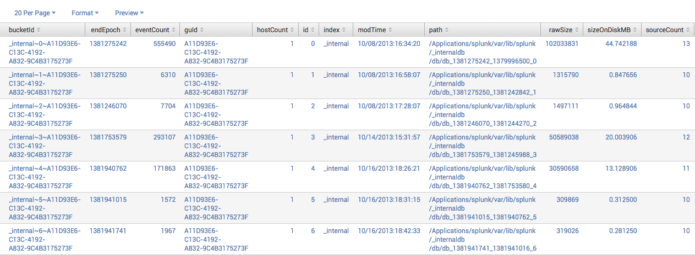
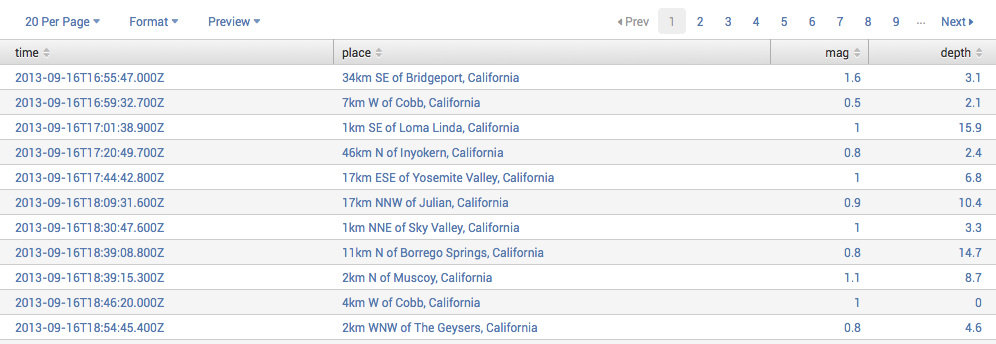

Welcome to the Search Reference
In this manual, you'll find a reference guide for the Splunk user who is looking for a catalog of the search commands with complete syntax, descriptions, and examples for usage.
If you're looking for an introduction to searching in Splunk, refer to the Search Tutorial to get you started. For more information about Splunk search, refer to the Search Manual.
See the "List of search commands" in the Search Commands and Functions chapter for a catalog of the search commands, with a short description of what they do and related search commands. Each search command links you to its reference page in the Search Command Reference chapter of this manual. If you want to just jump right in and start searching, the Search command cheat sheet is a quick reference complete with descriptions and examples.
Before you continue, read "How to use this manual" for the conventions and rules used in this manual.
Make a PDF
If you'd like a PDF version of this manual, click the red Download the Search Reference as PDF link below the table of contents on the left side of this page. A PDF version of the manual is generated on the fly for you, and you can save it or print it out to read later.
How to use this manual
This manual serves as a reference guide for the Splunk user who is looking for a catalog of the search commands with complete syntax, descriptions, and examples for usage.
Layout for each topic
Each search command topic contains the following headers: synopsis, description, examples, and see also.
- Synopsis
- The synopsis includes a short description of each search command, the complete syntax for each search command, and a description for each argument. If the arguments have another hierarchy of options, each of these sets of options follow the argument descriptions.
- Required arguments
- The list of required parameters and their syntax.
- Optional arguments
- The list of optional parameters and their syntax.
- Description
- The description includes details about how to use the search command.
- Examples
- This section lists examples of usage for the search command.
- See also
- This sections lists and links to all related or similar search commands.
Conventions used to describe syntax
The syntax for each search command is defined under the "Synopsis". The arguments are presented in the syntax in the order they are meant to be used.
Conventions used to describe arguments
Arguments are either Required or Optional and are listed alphabetically under their respective subheadings. For each argument, there is a Syntax and Description part. The description includes usage information and defaults.
Boolean values
Where Boolean values are required, the documentation specifies 'true' or 'false'. Other variations are accepted in commands. For example, for 'true' you can also use 'T', 'TRUE', and '1'.
Search Reference Overview
Search Command Cheat Sheet and Splunk Enterprise Quick Reference Guide
This topic lists resources you can use as a quick reference and cheat sheet for learning the Splunk Search Language.
Download the Splunk Enterprise Quick Reference Guide
The Splunk Enterprise Quick Reference Guide (updated for version 6.1), is available only as a PDF file. It is a six-page reference card that provides fundamental search concepts, commands, functions, and examples.
Download the Search Command Cheat Sheet
The Search Command Cheat Sheet is a quick command reference complete with descriptions and examples. The Search Command Cheat Sheet is also available for download as an eight-page PDF file.
Note: In the examples on this page, a leading ellipsis (...) indicates that there is a search before the pipe operator. A leading pipe indicates that the search command is a generating command and prevents the command-line interface and Splunk Web from prepending the search command to your search.
Administrative
| View information in the "audit" index. | index=_audit | audit
|
Crawl root and home directories and add all possible inputs found. Then, adds configuration information to inputs.conf.
| | crawl root="/;/Users/" | input add
|
Return information about the buckets in the _internal index.
| | dbinspect index=_internal
|
Return the values of host for events in the _internal index.
| | metadata type=hosts index=_internal
|
Return typeahead information for sources in the _internal index.
| | typeahead prefix=source count=10 index=_internal
|
Alerting
| Send an email notification with a pdf attachment, a message, and raw inline results. | index=_internal | head 5 | sendemail to=example@splunk.com server=mail.example.com subject="Here is an email from Splunk" message="This is an example message" sendresults=true inline=true format=raw sendpdf=true
|
Fields
Add
Save the running total of count in a field called total_count.
| ... | accum count AS total_count
|
| Add information about the search to each event. | ... | addinfo
|
| Search for "404" events and append the fields in each event to the previous search results. | ... | appendcols [search 404]
|
For each event where the count field exists, compute the difference between count and its previous value and store the result in countdiff.
| ... | delta count AS countdiff
|
Extract out values like "7/01", and put them into the monthday field.
| ... | erex monthday examples="7/01"
|
Define a field named velocity that is calculated as distance / time.
| ... | eval velocity=distance/time
|
| Extract field/value pairs and reload field extraction settings from disk. | ... | extract reload=true
|
Extract field/value pairs that are delimited by |;, and values of fields that are delimited by =: .
| ... | extract pairdelim="|;", kvdelim="=:", auto=f
|
| Add location information (based on IP address). | ... | iplocation clientip
|
Extract values from eventtype.form if the file exists.
| ... | kvform field=eventtype
|
There is a lookup table specified in a stanza name usertogroup in transforms.conf. This lookup table contains (at least) two fields, user and group. For each event, we look up the value of the field local_user in the table and for any entries that matches, the value of the group field in the lookup table will be written to the field user_group in the event.
| ... | lookup usertogroup user as local_user OUTPUT group as user_group
|
Extract the COMMAND field when it occurs in rows that contain splunkd.
| ... | multikv fields COMMAND filter splunkd
|
Set range to "green" if the date_second is between 1-30; "blue", if between 31-39; "red", if between 40-59; and "gray", if no range matches (for example, if date_second=0).
| ... | rangemap field=date_second green=1-30 blue=31-39 red=40-59 default=gray
|
| Calculate the relevancy of the search and sort the results in descending order. | disk error | relevancy | sort -relevancy
|
Extract from and to fields using regular expressions. If a raw event contains From: Susan To: Bob, then from=Susan and to=Bob.
| ... | rex field=_raw "From: (?<from>.*) To: (?<to>.*)"
|
Extract the author field from XML or JSON formatted data about books.
| ... | spath output=author path=book{@author}
|
Add the field: comboIP. Values of comboIP = "sourceIP + "/" + destIP".
| ... | strcat sourceIP "/" destIP comboIP
|
Extract field/value pairs from XML formatted data. xmlkv automatically extracts values between XML tags.
| ... | xmlkv
|
Convert
Convert every field value to a number value except for values in the field foo. Use the none argument to specify fields to ignore.
| ... | convert auto(*) none(foo)
|
Change all memory values in the virtual field to kilobytes.
| ... | convert memk(virtual)
|
Change the sendmail syslog duration format (D+HH:MM:SS) to seconds. For example, if delay="00:10:15", the resulting value will be delay="615".
| ... | convert dur2sec(delay)
|
Convert values of the duration field into number value by removing string values in the field value. For example, if duration="212 sec", the resulting value will be duration="212".
| ... | convert rmunit(duration)
|
Separate the value of foo into multiple values.
| ... | makemv delim=":" allowempty=t foo
|
For sendmail events, combine the values of the senders field into a single value. Then, display the top 10 values.
| eventtype="sendmail" | nomv senders | top senders
|
Filter
Keep the host and ip fields, and display them in the order: host, ip.
| ... | fields + host, ip
|
Remove the host and ip fields.
| ... | fields - host, ip
|
Modify
Build a time series chart of web events by host and fill all empty fields with NULL.
| sourcetype="web" | timechart count by host | fillnull value=NULL
|
Rename the _ip field as IPAddress.
| ... | rename _ip as IPAddress
|
Change any host value that ends with localhost to localhost.
| ... | replace *localhost with localhost in host
|
Format
| Show a summary of up to five lines for each search result. | ... |abstract maxlines=5
|
Compare the ip values of the first and third search results.
| ... | diff pos1=1 pos2=3 attribute=ip
|
Highlight the terms login and logout.
| ... | highlight login,logout
|
Output the _raw field of your current search into _xml.
| ... | outputtext
|
| Anonymize the current search results. | ... | scrub
|
| Un-escape all XML characters. | ... | xmlunescape
|
Geography
| Add location information to web access events, and return a table of the IP address, City and Country for each client error. | sourcetype=access_* status=404 | head 20 | iplocation clientip | table clientip, City, Country
|
| Compute the average rating for each gender after clustering/grouping the events by their coordinate values. | ... | geostats latfield=eventlat longfield=eventlong avg(rating) by gender
|
Index
| Add each source found by crawl in the default index with automatic source classification. | | crawl | input add
|
Delete events from the imap index that contain the word "invalid".
| index=imap invalid | delete
|
Put download events into an index named downloadcount
| eventtypetag="download" | collect index=downloadcount
|
Find overlapping events in the summary index.
| index=summary | overlap
|
Prediction and trends
| Predict future downloads based on previous download numbers. | predict count |
Compute moving averages for fields foo and bar.
| ... | trendline sma5(foo) as smoothed_foo ema10(bar)
|
| Calculate the trend in the data, without the seasonality. | index=download | timechart span=1d count(file) as count | x11 mult15(count)
|
Reporting
| Calculate the sums of the numeric fields of each result, and put the sums in the field "sum". | ... | addtotals fieldname=sum
|
Analyze the numerical fields to predict the value of is_activated.
| ... | af classfield=is_activated
|
| Return events with uncommon values. | ... | anomalousvalue action=filter pthresh=0.02
|
| Return results associated with each other (that have at least 3 references to each other). | ... | associate supcnt=3
|
For each event, copy the 2nd, 3rd, 4th, and 5th previous values of the count field into the respective fields count_p2, count_p3, count_p4, and count_p5.
| ... | autoregress count p=2-5
|
| Bucket search results into 10 bins, and return the count of raw events for each bucket. | ... | bucket size bins=10 | stats count(_raw) by size
|
Return the average thruput of each host for each five minute time span.
| ... | bucket _time span=5m | stats avg(thruput) by _time host
|
Return the average (mean) size for each distinct host.
| ... | chart avg(size) by host
|
Return the maximum delay by size, where size is broken down into a maximum of 10 equal sized buckets.
| ... | chart max(delay) by size bins=10
|
Return the ratio of the average (mean) size to the maximum delay for each distinct host and user pair.
| ... | chart eval(avg(size)/max(delay)) by host user
|
Calculate the max(delay) for each value of foo split by the value of bar.
| ... | chart max(delay) over foo by bar
|
Build a contingency table of datafields from all events.
| ... | contingency datafield1 datafield2 maxrows=5 maxcols=5 usetotal=F
|
| Calculate the co-occurrence correlation between all fields. | ... | correlate type=cocur
|
Return the number of events in the _internal index.
| | eventcount index=_internal
|
Compute the overall average duration and add avgdur as a new field to each event where the duration field exists
| ... | eventstats avg(duration) as avgdur
|
Make _time continuous with a span of 10 minutes.
| ... | makecontinuous _time span=10m
|
| Remove all outlying numerical values. | ... | outlier
|
Return the least common values of the url field.
| ... | rare url
|
Remove duplicates of results with the same host value and return the total count of the remaining results.
| ... | stats dc(host)
|
Return the average for each hour, of any unique field that ends with the string lay (for example, delay, xdelay, relay, etc).
| ... | stats avg(*lay) BY date_hour
|
| Search the access logs, and return the number of hits from the top 100 values of "referer_domain". | sourcetype=access_combined | top limit=100 referer_domain | stats sum(count)
|
| For each event, add a count field that represent the number of event seen so far (including that event). i.e., 1 for the first event, 2 for the second, 3, 4 ... and so on | ... | streamstats count
|
Graph the average thruput of hosts over time.
| ... | timechart span=5m avg(thruput) by host
|
Create a timechart of average cpu_seconds by host, and remove outlying values that may distort the timechart's axis.
| ... | timechart avg(cpu_seconds) by host | outlier action=t
|
Calculate the average value of CPU each minute for each host.
| ... | timechart span=1m avg(CPU) by host
|
Create a timechart of the count of from web sources by host.
| ... | timechart count by host
|
Compute the product of the average CPU and average MEM each minute for each host.
| ... | timechart span=1m eval(avg(CPU) * avg(MEM)) by host
|
Return the 20 most common values of the url field.
| ... | top limit=20 url
|
| Reformat the search results and display only specified fields. | ... | timechart avg(delay) by host | untable _time host avg_delay
|
| Reformat the search results into a format suitable for charting. | ... | xyseries delay host_type host
|
Results
Append
Count the number of different IP addresses who accessed the Web server and also find the user who accessed the web server the most for each type of page request (method).
| sourcetype=access_* | stats dc(clientip), count by method | append [search sourcetype=access_* | top 1 clientip by method]
|
Joins previous result set with results from the subsearch, on the id field.
| ... | join id [search foo]
|
Filter
| Return only anomalous events. | ... | anomalies
|
Remove duplicates of results with the same host value.
| ... | dedup host
|
Combine the values of foo with a colon delimiter.
| ... | mvcombine delim=":" foo
|
| Keep only search results whose raw text contains IP addresses in the non-routable class A (10.0.0.0/8). | ... | regex _raw="(?<!\d)10.\d{1,3}\.\d{1,3}\.\d{1,3}(?!\d)"
|
Join results with itself on id field.
| ... | selfjoin id
|
| For the current search, keep only unique results. | ... | uniq
|
Return physicsobjs events with a speed greater than 100.
| sourcetype=physicsobjs | where distance/time > 100
|
Generate
| All daily time ranges from Oct 25 till today. | | gentimes start=10/25/07
|
Loads the events that were generated by the search job with id=1233886270.2.
| | loadjob 1233886270.2 events=t
|
Create new events for each value of multivalue field, foo.
| ... | mvexpand foo
|
Run the saved search named mysecurityquery.
| | savedsearch mysecurityquery
|
Group
Cluster events together and sort them by their cluster_count values. Then return the 20 largest clusters (in data size).
| ... | cluster t=0.9 showcount=true | sort - cluster_count | head 20
|
Group search results into 4 clusters based on the values of the date_hour and date_minute fields.
| ... | kmeans k=4 date_hour date_minute
|
Group search results that have the same host and cookie, occur within 30 seconds of each other, and do not have a pause greater than 5 seconds between each event into a transaction.
| ... | transaction host cookie maxspan=30s maxpause=5s
|
Force Splunk to apply event types that you have configured. Splunk Web automatically does this when you view the eventtype field.
| ... | typer
|
Order
| Return the first 20 results. | ... | head 20
|
| Reverse the order of a result set. | ... | reverse
|
Sort results by ip value in ascending order and then by url value in descending order.
| ... | sort ip, -url
|
| Return the last 20 results (in reverse order). | ... | tail 20
|
Read
Read in results from the CSV file: $SPLUNK_HOME/var/run/splunk/all.csv. Keep any that contain the string "error". Then, save the results to the file: $SPLUNK_HOME/var/run/splunk/error.csv .
| | inputcsv all.csv | search error | outputcsv errors.csv
|
Read in users.csv lookup file, which is located in $SPLUNK_HOME/etc/system/lookups or $SPLUNK_HOME/etc/apps/*/lookups .
| | inputlookup users.csv
|
Write
Output search results to the CSV file, mysearch.csv .
| ... | outputcsv mysearch
|
Write to users.csv lookup file, which is located in $SPLUNK_HOME/etc/system/lookups or $SPLUNK_HOME/etc/apps/*/lookups .
| | outputlookup users.csv
|
Search
Keep only search results that have the specified src or dst values.
| src="10.9.165.*" OR dst="10.9.165.8"
|
External
Run the Python script myscript with arguments: myarg1 and myarg2. Then, email the results.
| ... | script python myscript myarg1 myarg2 | sendemail to=david@splunk.com
|
Subsearch
Get the top two results and create a search from their host, source, and sourcetype that returns a single search result with a _query field: _query=( ( "host::mylaptop" AND "source::syslog.log" AND "sourcetype::syslog" ) OR ( "host::bobslaptop" AND "source::bob-syslog.log" AND "sourcetype::syslog" ) )
| ... | head 2 | fields source, sourcetype, host | format
|
| Search the time range of each previous result for "failure". | ... | localize maxpause=5m | map search="search failure starttimeu=$starttime$ endtimeu=$endtime$"
|
Return values of url that contain the string "404" or "303" but not both.
| | set diff [search 404 | fields url] [search 303 | fields url]
|
Miscellaneous
| Run commands on the local search head only. In this case, all events returned by the initial search for "FOO and BAR" forwards from remote peers to the local search head where the iplocation command runs. | FOO BAR | localop | iplocation allfields=t clientip
|
Time
| Returns all events that occurred hourly from Oct 1 till Oct 5. | ... | gentimes start=10/1/14 end=10/5/14 increment=1h
|
| Search the time range of each previous result for "failure". | ... | localize maxpause=5m | map search="search failure starttimeu=$starttime$ endtimeu=$endtime$"
|
Add a field called reltime that describes the time the event occurred, such as "5 seconds ago" and "1 minute ago".
| status=503 | reltime
|
Learn more on Splunk Answers
If you can't find what you're looking for here, check out Splunk Answers and see what questions and answers other Splunk users had about the search language.
Popular search commands
The following table lists the more frequently used Splunk search commands. Some of these commands share functions -- you can see a list of these functions with descriptions and examples on the following pages: Functions for eval and where and Functions for stats, chart, and timechart.
| Command | Alias(es) | Description | See also |
|---|---|---|---|
bucket
| bin, discretize | Puts continuous numerical values into discrete sets. | chart, timechart
|
chart
| Returns results in a tabular output for charting. See also, Functions for stats, chart, and timechart. | bucket, sichart, timechart
| |
dedup
| Removes subsequent results that match a specified criteria. | uniq
| |
eval
| Calculates an expression and puts the value into a field. See also, Functions for eval and where. | where
| |
extract
| kv | Extracts field-value pairs from search results. | kvform, multikv, xmlkv, rex
|
fields
| Removes fields from search results. | ||
head
| Returns the first number n of specified results. | reverse, tail
| |
lookup
| Explicitly invokes field value lookups. | ||
multikv
| Extracts field-values from table-formatted events. | ||
rangemap
| Sets RANGE field to the name of the ranges that match. | ||
rare
| Displays the least common values of a field. | sirare, stats, top
| |
rename
| Renames a specified field; wildcards can be used to specify multiple fields. | ||
replace
| Replaces values of specified fields with a specified new value. | ||
rex
| Specify a Perl regular expression named groups to extract fields while you search. | extract, kvform, multikv, xmlkv, regex
| |
search
| Searches Splunk indexes for matching events. | ||
spath
| Extracts key-value pairs from XML or JSON formats. | extract, kvform, multikv, rex, xmlkv
| |
sort
| Sorts search results by the specified fields. | reverse
| |
stats
| Provides statistics, grouped optionally by fields. See also, Functions for stats, chart, and timechart. | eventstats, top, rare
| |
tail
| Returns the last number n of specified results. | head, reverse
| |
timechart
| Create a time series chart and corresponding table of statistics. See also, Functions for stats, chart, and timechart. | chart, bucket
| |
top
| common | Displays the most common values of a field. | rare, stats
|
transaction
| transam | Groups search results into transactions. | |
where
| Performs arbitrary filtering on your data. See also, Functions for eval and where. | eval
| |
xmlkv
| Extracts XML key-value pairs. | extract, kvform, multikv, rex, spath
|
Answers
Have questions about search commands? Check out Splunk Answers to see what questions and answers other Splunk users had about the search language.
Splunk for SQL users
This is not a perfect mapping between SQL and Splunk search commands, but if you are familiar with SQL, this quick comparison might be helpful as a jump-start into using Splunk.
Concepts
In database terms, Splunk is a distributed, non-relational, semi-structured database with an implicit time dimension. Splunk is not a database in the normative sense -- relational databases require that all table columns be defined up-front and they don't automatically scale by just plugging in new hardware -- but there are analogs to many of the concepts in the database world.
| DB Concept | Splunk Concept | Notes |
|---|---|---|
| SQL query | Splunk search | A Splunk search retrieves indexed data and can perform transforming and reporting operations. Results from one search can be "piped", or transferred, from command to command, to filter, modify, reorder, and group your results. |
| table/view | search results | Search results can be thought of as a database view, a dynamically generated table of rows, with columns. |
| index | index | All values and fields are indexed in Splunk, so there is no need to manually add, update, drop, or even think about indexing columns. Everything can be quickly retrieved automatically. |
| row | result/event | A result in Splunk is a list of field (i.e., column) values, corresponding to a table row. An event is a result that has a timestamp and raw text. Typically an event is a record from a log file, such as:
|
| column | field | Fields in Splunk are dynamically returned from a search, meaning that one search might return a set of fields, while another search might return another set. After teaching Splunk how to extract out more fields from the raw underlying data, the same search will return more fields that it previously did. Fields in Splunk are not tied to a datatype. |
| database/schema | index/app | In Splunk, an index is a collection of data, somewhat like a database has a collection of tables. Domain knowledge of that data, how to extract it, what reports to run, etc, are stored in a Splunk app. |
From SQL to Splunk
The examples below use the value of the Splunk field "source" as a proxy for "table". In Splunk, "source" is the name of the file, stream, or other input from which a particular piece of data originates, for example /var/log/messages or UDP:514.
When translating from any language to another, often the translation is longer because of idioms in the original language. Some of the Splunk search examples shown below could be more concise, but for parallelism and clarity, the table and field names are kept the same from the sql. Also, searches rarely need the FIELDS command to filter out columns as the user interface provides a more convenient method; and you never have to use "AND" in boolean searches, as they are implied between terms.
| SQL command | SQL example | Splunk example |
|---|---|---|
| SELECT * | SELECT *
| source=mytable
|
| WHERE | SELECT *
| source=mytable mycolumn=5
|
| SELECT | SELECT mycolumn1, mycolumn2
| source=mytable
|
| AND/OR | SELECT *
| source=mytable
|
| AS (alias) | SELECT mycolumn AS column_alias
| source=mytable
|
| BETWEEN | SELECT *
| source=mytable mycolumn>=1 mycolumn<=5
|
| GROUP BY | SELECT mycolumn, avg(mycolumn)
| source=mytable mycolumn=value
|
| HAVING | SELECT mycolumn, avg(mycolumn)
| source=mytable mycolumn=value
|
| LIKE | SELECT *
| source=mytable mycolumn="*some text*"
Note: The most common search usage in Splunk is actually something that is nearly impossible in SQL -- to search all fields for a substring. The following search will return all rows that contain "some text" anywhere:
|
| ORDER BY | SELECT *
| source=mytable
|
| SELECT DISTINCT | SELECT DISTINCT mycolumn1, mycolumn2
| source=mytable
|
| SELECT TOP | SELECT TOP 5 mycolumn1, mycolumn2
| source=mytable
|
| INNER JOIN | SELECT *
| source=mytable1
Note: There are two other methods to do a join:
SEARCH source=mytable2 mycolumn2=myvalue | FIELDS mycolumn2 ] |
| LEFT (OUTER) JOIN | SELECT *
| source=mytable1
|
| SELECT INTO | SELECT *
| source=old_mytable
Note: COLLECT is typically used to store expensively calculated fields back into Splunk so that future access is much faster. This current example is atypical but shown for comparison with SQL's command. source will be renamed orig_source |
| TRUNCATE TABLE | TRUNCATE TABLE mytable
| source=mytable
|
| INSERT INTO | INSERT INTO mytable
| Note: see SELECT INTO. Individual records are not added via the search language, but can be added via the API if need be. |
| UNION | SELECT mycolumn
| source=mytable1
|
| UNION ALL | SELECT *
| source=mytable1
|
| DELETE | DELETE FROM mytable
| source=mytable1 mycolumn=5
|
| UPDATE | UPDATE mytable
| Note: There are a few things to think about when updating records in Splunk. First, you can just add the new values into Splunk (see INSERT INTO) and not worry about deleting the old values, because Splunk always returns the most recent results first. Second, on retrieval, you can always de-duplicate the results to ensure only the latest values are used (see SELECT DISTINCT). Finally, you can actually delete the old records (see DELETE). |
Search Commands and Functions
List of search commands
The table below lists all search commands with a short description and links to their individual reference pages. For a quick guide with examples for use of these search commands, refer to the Search cheat sheet.
Some of these commands share functions -- you can see a list of these functions with descriptions and examples on the following pages: Functions for eval and where and Functions for stats, chart, and timechart.
| Command | Description | See also |
|---|---|---|
abstract
| Produces a summary of each search result. | highlight
|
accum
| Keeps a running total of the specified numeric field. | autoregress, delta, trendline, streamstats
|
addcoltotals
| Computes an event that contains sum of all numeric fields for previous events. | addtotals, stats
|
addinfo
| Add fields that contain common information about the current search. | search
|
addtotals
| Computes the sum of all numeric fields for each result. | addcoltotals, stats
|
analyzefields
| Analyze numerical fields for their ability to predict another discrete field. | anomalousvalue
|
anomalies
| Computes an "unexpectedness" score for an event. | anomalousvalue, cluster, kmeans, outlier
|
anomalousvalue
| Finds and summarizes irregular, or uncommon, search results. | analyzefields, anomalies, cluster, kmeans, outlier
|
append
| Appends subsearch results to current results. | appendcols, appendcsv, appendlookup, join, set
|
appendcols
| Appends the fields of the subsearch results to current results, first results to first result, second to second, etc. | append, appendcsv, join, set
|
appendpipe
| Appends the result of the subpipeline applied to the current result set to results. | append, appendcols, join, set
|
arules
| Finds association rules between field values. | associate, correlate
|
associate
| Identifies correlations between fields. | correlate, contingency
|
audit
| Returns audit trail information that is stored in the local audit index. | |
autoregress
| Sets up data for calculating the moving average. | accum, autoregress, delta, trendline, streamstats
|
bucket, bin, discretize
| Puts continuous numerical values into discrete sets. | chart, timechart
|
bucketdir
| Replaces a field value with higher-level grouping, such as replacing filenames with directories. | cluster, dedup
|
chart
| Returns results in a tabular output for charting. See also, Functions for stats, chart, and timechart. | bucket, sichart, timechart
|
cluster
| Clusters similar events together. | anomalies, anomalousvalue, cluster, kmeans, outlier
|
collect, stash
| Puts search results into a summary index. | overlap
|
concurrency
| Uses a duration field to find the number of "concurrent" events for each event. | timechart
|
contingency, counttable, ctable
| Builds a contingency table for two fields. | associate, correlate
|
convert
| Converts field values into numerical values. | eval
|
correlate
| Calculates the correlation between different fields. | associate, contingency
|
crawl
| Crawls the filesystem for new sources to index. | |
datamodel
| Examine data model or data model object and search a data model object. | pivot
|
dbinspect
| Returns information about the specified index. | |
dedup
| Removes subsequent results that match a specified criteria. | uniq
|
delete
| Delete specific events or search results. | |
delta
| Computes the difference in field value between nearby results. | accum, autoregress, trendline, streamstats
|
diff
| Returns the difference between two search results. | |
dispatch
| Encapsulates long running, streaming reports. | |
erex
| Allows you to specify example or counter example values to automatically extract fields that have similar values. | extract, kvform, multikv, regex, rex, xmlkv
|
eval
| Calculates an expression and puts the value into a field. See also, Functions for eval and where. | where
|
eventcount
| Returns the number of events in an index. | dbinspect
|
eventstats
| Adds summary statistics to all search results. | stats
|
extract, kv
| Extracts field-value pairs from search results. | kvform, multikv, xmlkv, rex
|
fieldformat
| Expresses how to render a field at output time without changing the underlying value. | eval, where
|
fields
| Removes fields from search results. | |
fieldsummary
| Generates summary information for all or a subset of the fields. | af, anomalies, anomalousvalue, stats
|
file
| This command is no longer supported. See inputcsv. | |
filldown
| Replaces NULL values with the last non-NULL value. | fillnull
|
fillnull
| Replaces null values with a specified value. | |
findtypes
| Generates a list of suggested event types. | typer
|
folderize
| Creates a higher-level grouping, such as replacing filenames with directories. | |
foreach
| Run a templatized streaming subsearch for each field in a wildcarded field list. | eval
|
format
| Takes the results of a subsearch and formats them into a single result. | |
gauge
| Transforms results into a format suitable for display by the Gauge chart types. | |
gentimes
| Generates time-range results. | |
geostats
| Generate statistics which are clustered into geographical bins to be rendered on a world map. | stats, xyseries
|
head
| Returns the first number n of specified results. | reverse, tail
|
highlight
| Causes Splunk Web to highlight specified terms. | |
history
| Returns a history of searches formatted as an events list or as a table. | search
|
input
| Adds sources to Splunk or disables sources from being processed by Splunk. | |
inputcsv
| Loads search results from the specified CSV file. | loadjob, outputcsv
|
inputlookup
| Loads search results from a specified static lookup table. | inputcsv, join, lookup, outputlookup
|
iplocation
| Extracts location information from IP addresses. | |
join
| Combine the results of a subsearch with the results of a main search. | appendcols, lookup, selfjoin
|
kmeans
| Performs k-means clustering on selected fields. | anomalies, anomalousvalue, cluster, outlier
|
kvform
| Extracts values from search results, using a form template. | extract, kvform, multikv, xmlkv, rex
|
loadjob
| Loads events or results of a previously completed search job. | inputcsv
|
localize
| Returns a list of the time ranges in which the search results were found. | map, transaction
|
localop
| Tells Splunk to run subsequent commands, that is all commands following this, locally and not on a remote peer(s). | |
lookup
| Explicitly invokes field value lookups. | |
makecontinuous
| Makes a field that is supposed to be the x-axis continuous (invoked by chart/timechart) | chart, timechart
|
makemv
| Change a specified field into a multivalued field during a search. | mvcombine, mvexpand, nomv
|
map
| A looping operator, performs a search over each search result. | |
metadata
| Returns a list of source, sourcetypes, or hosts from a specified index or distributed search peer. | dbinspect
|
metasearch
| Retrieves event metadata from indexes based on terms in the logical expression. | metadata, search
|
multikv
| Extracts field-values from table-formatted events. | |
multisearch
| Run multiple streaming searches at the same time. | append, join
|
mvcombine
| Combines events in search results that have a single differing field value into one result with a multivalue field of the differing field. | mvexpand, makemv, nomv
|
mvexpand
| Expands the values of a multivalue field into separate events for each value of the multivalue field. | mvcombine, makemv, nomv
|
nomv
| Changes a specified multivalued field into a single-value field at search time. | makemv, mvcombine, mvexpand
|
outlier
| Removes outlying numerical values. | anomalies, anomalousvalue, cluster, kmeans
|
outputcsv
| Outputs search results to a specified CSV file. | inputcsv, outputtext
|
outputlookup
| Writes search results to the specified static lookup table. | inputlookup, lookup, outputcsv, outputlookup
|
outputtext
| Ouputs the raw text field (_raw) of results into the _xml field.
| outputtext
|
overlap
| Finds events in a summary index that overlap in time or have missed events. | collect
|
pivot
| Run pivot searches against a particular data model object. | <code>datamodel |
predict
| Enables you to use time series algorithms to predict future values of fields. | x11
|
rangemap
| Sets RANGE field to the name of the ranges that match. | |
rare
| Displays the least common values of a field. | sirare, stats, top
|
regex
| Removes results that do not match the specified regular expression. | rex, search
|
relevancy
| Calculates how well the event matches the query. | |
reltime
| Converts the difference between 'now' and '_time' to a human-readable value and adds adds this value to the field, 'reltime', in your search results. | convert
|
rename
| Renames a specified field; wildcards can be used to specify multiple fields. | |
replace
| Replaces values of specified fields with a specified new value. | |
rest
| Access a REST endpoint and display the returned entities as search results. | |
return
| Specify the values to return from a subsearch. | format, search
|
reverse
| Reverses the order of the results. | head, sort, tail
|
rex
| Specify a Perl regular expression named groups to extract fields while you search. | extract, kvform, multikv, xmlkv, regex
|
rtorder
| Buffers events from real-time search to emit them in ascending time order when possible. | |
run
| See script.
| |
savedsearch
| Returns the search results of a saved search. | |
script, run
| Runs an external Perl or Python script as part of your search. | |
scrub
| Anonymizes the search results. | |
search
| Searches Splunk indexes for matching events. | |
searchtxn
| Finds transaction events within specified search constraints. | transaction
|
selfjoin
| Joins results with itself. | join
|
sendemail
| Emails search results to a specified email address. | |
set
| Performs set operations (union, diff, intersect) on subsearches. | append, appendcols, join, diff
|
setfields
| Sets the field values for all results to a common value. | eval, fillnull, rename
|
sichart
| Summary indexing version of chart. | chart, sitimechart, timechart |
sirare
| Summary indexing version of rare. | rare |
sistats
| Summary indexing version of stats. | stats |
sitimechart
| Summary indexing version of timechart. | chart, sichart, timechart |
sitop
| Summary indexing version of top. | top |
sort
| Sorts search results by the specified fields. | reverse
|
spath
| Provides a straightforward means for extracting fields from structured data formats, XML and JSON. | xpath
|
stats
| Provides statistics, grouped optionally by fields. See also, Functions for stats, chart, and timechart. | eventstats, top, rare
|
strcat
| Concatenates string values. | |
streamstats
| Adds summary statistics to all search results in a streaming manner. | eventstats, stats |
table
| Creates a table using the specified fields. | fields
|
tags
| Annotates specified fields in your search results with tags. | eval
|
tail
| Returns the last number n of specified results. | head, reverse
|
timechart
| Create a time series chart and corresponding table of statistics. See also, Functions for stats, chart, and timechart. | chart, bucket
|
top
| Displays the most common values of a field. | rare, stats
|
transaction
| Groups search results into transactions. | |
transpose
| Reformats rows of search results as columns. | |
trendline
| Computes moving averages of fields. | timechart
|
tscollect
| Writes results into tsidx file(s) for later use by tstats command. | collect, stats, tstats
|
tstats
| Calculates statistics over tsidx files created with the tscollect command. | stats, tscollect
|
typeahead
| Returns typeahead information on a specified prefix. | |
typelearner
| Generates suggested eventtypes. | typer
|
typer
| Calculates the eventtypes for the search results. | typelearner
|
uniq
| Removes any search that is an exact duplicate with a previous result. | dedup
|
untable
| Converts results from a tabular format to a format similar to stats output. Inverse of xyseries and maketable.
| |
where
| Performs arbitrary filtering on your data. See also, Functions for eval and where. | eval
|
x11
| Enables you to determine the trend in your data by removing the seasonal pattern. | predict
|
xmlkv
| Extracts XML key-value pairs. | extract, kvform, multikv, rex
|
xmlunescape
| Unescapes XML. | |
xpath
| Redefines the XML path. | |
xyseries
| Converts results into a format suitable for graphing. |
List of search commands by category
The table below lists all the search commands categorized by their usage. Some commands fit into more than one category based on the options that you specify.
Correlation
These commands can be used to build correlation searches.
| Command | Description |
|---|---|
append
| Appends subsearch results to current results. |
appendcols
| Appends the fields of the subsearch results to current results, first results to first result, second to second, etc. |
appendpipe
| Appends the result of the subpipeline applied to the current result set to results. |
arules
| Finds association rules between field values. |
associate
| Identifies correlations between fields. |
contingency, counttable, ctable
| Builds a contingency table for two fields. |
correlate
| Calculates the correlation between different fields. |
diff
| Returns the difference between two search results. |
join
| SQL-like joining of results from the main results pipeline with the results from the subpipeline. |
lookup
| Explicitly invokes field value lookups. |
selfjoin
| Joins results with itself. |
set
| Performs set operations (union, diff, intersect) on subsearches. |
stats
| Provides statistics, grouped optionally by fields. See also, Functions for stats, chart, and timechart. |
transaction
| Groups search results into transactions. |
Data and indexes
These commands can be used to learn more about your data, add and delete data sources, or manage the data in your summary indexes.
View data
These commands return information about the data you have in your indexes. They do not modify your data or indexes in any way.
| Command | Description |
|---|---|
audit
| Returns audit trail information that is stored in the local audit index. |
datamodel
| Return information about a data model or data model object. |
dbinspect
| Returns information about the specified index. |
eventcount
| Returns the number of events in an index. |
metadata
| Returns a list of source, sourcetypes, or hosts from a specified index or distributed search peer. |
typeahead
| Returns typeahead information on a specified prefix. |
Manage data
These are some commands you can use to add data sources to or delete specific data from your indexes.
| Command | Description |
|---|---|
crawl
| Crawls the filesystem for new sources to add to an index. |
delete
| Delete specific events or search results. |
input
| Adds sources to Splunk or disables sources from being processed by Splunk. |
Manage summary indexes
These commands are used to create and manage your summary indexes.
| Command | Description |
|---|---|
collect, stash
| Puts search results into a summary index. |
overlap
| Finds events in a summary index that overlap in time or have missed events. |
sichart
| Summary indexing version of chart. Computes the necessary information for you to later run a chart search on the summary index. |
sirare
| Summary indexing version of rare. Computes the necessary information for you to later run a rare search on the summary index. |
sistats
| Summary indexing version of stats. Computes the necessary information for you to later run a stats search on the summary index. |
sitimechart
| Summary indexing version of timechart. Computes the necessary information for you to later run a timechart search on the summary index. |
sitop
| Summary indexing version of top. Computes the necessary information for you to later run a top search on the summary index. |
Fields
These are commands you can use to add, extract, and modify fields or field values. The most useful command for manipulating fields is eval and its functions.
Add fields
Use these commands to add new fields.
| Command | Description |
|---|---|
accum
| Keeps a running total of the specified numeric field. |
addinfo
| Add fields that contain common information about the current search. |
addtotals
| Computes the sum of all numeric fields for each result. |
delta
| Computes the difference in field value between nearby results. |
eval
| Calculates an expression and puts the value into a field. See also, Functions for eval and where. |
iplocation
| Adds location information, such as city, country, latitude, longitude, and so on, based on IP addresses. |
lookup
| For configured lookup tables, explicitly invokes the field value lookup and adds fields from the lookup table to the events. |
multikv
| Extracts field-values from table-formatted events. |
rangemap
| Sets RANGE field to the name of the ranges that match. |
relevancy
| Adds a relevancy field, which indicates how well the event matches the query. |
strcat
| Concatenates string values and saves the result to a specified field. |
Extract fields
These commands provide different ways to extract new fields from search results.
| Command | Description |
|---|---|
erex
| Allows you to specify example or counter example values to automatically extract fields that have similar values. |
extract, kv
| Extracts field-value pairs from search results. |
kvform
| Extracts values from search results, using a form template. |
rex
| Specify a Perl regular expression named groups to extract fields while you search. |
spath
| Provides a straightforward means for extracting fields from structured data formats, XML and JSON. |
xmlkv
| Extracts XML key-value pairs. |
Modify fields and field values
Use these commands to modify fields or their values.
| Command | Description |
|---|---|
convert
| Converts field values into numerical values. |
filldown
| Replaces NULL values with the last non-NULL value. |
fillnull
| Replaces null values with a specified value. |
makemv
| Change a specified field into a multivalue field during a search. |
nomv
| Changes a specified multivalue field into a single-value field at search time. |
reltime
| Converts the difference between 'now' and '_time' to a human-readable value and adds adds this value to the field, 'reltime', in your search results. |
rename
| Renames a specified field. Use wildcards to specify multiple fields. |
replace
| Replaces values of specified fields with a specified new value. |
Find anomalies
These commands are used to find anomalies in your data. Either search for uncommon or outlying events and fields or cluster similar events together.
| Command | Description |
|---|---|
analyzefields, af
| Analyze numerical fields for their ability to predict another discrete field. |
anomalies
| Computes an "unexpectedness" score for an event. |
anomalousvalue
| Finds and summarizes irregular, or uncommon, search results. |
cluster
| Clusters similar events together. |
kmeans
| Performs k-means clustering on selected fields. |
outlier
| Removes outlying numerical values. |
rare
| Displays the least common values of a field. |
Geoip and location
These commands add geographical information to your search results.
| Command | Description |
|---|---|
iplocation
| Returns location information, such as city, country, latitude, longitude, and so on, based on IP addresses. |
geostats
| Generate statistics which are clustered into geographical bins to be rendered on a world map. |
Prediction and trending
These commands predict future values and calculate trendlines that can be used to create visualizations.
| Command | Description |
|---|---|
predict
| Enables you to use time series algorithms to predict future values of fields. |
trendline
| Computes moving averages of fields. |
x11
| Enables you to determine the trend in your data by removing the seasonal pattern. |
Reports
These commands are used to build transforming searches. These commands return statistical data tables required for charts and other kinds of data visualizations.
| Command | Description |
|---|---|
addtotals
| Computes the sum of all numeric fields for each result. |
bucket, bin, discretize
| Puts continuous numerical values into discrete sets. |
chart
| Returns results in a tabular output for charting. See also, Functions for stats, chart, and timechart. |
contingency, counttable, ctable
| Builds a contingency table for two fields. |
correlate
| Calculates the correlation between different fields. |
eventcount
| Returns the number of events in an index. |
eventstats
| Adds summary statistics to all search results. |
gauge
| Transforms results into a format suitable for display by the Gauge chart types. |
makecontinuous
| Makes a field that is supposed to be the x-axis continuous (invoked by chart/timechart) |
outlier
| Removes outlying numerical values. |
rare
| Displays the least common values of a field. |
stats
| Provides statistics, grouped optionally by fields. See also, Functions for stats, chart, and timechart. |
streamstats
| Adds summary statistics to all search results in a streaming manner. |
timechart
| Create a time series chart and corresponding table of statistics. See also, Functions for stats, chart, and timechart. |
top
| Displays the most common values of a field. |
trendline
| Computes moving averages of fields. |
untable
| Converts results from a tabular format to a format similar to stats output. Inverse of xyseries and maketable.
|
xyseries
| Converts results into a format suitable for graphing. |
Results
These commands can be used to manage search results. For example, you can append one set of results with another, filter more events from the results, reformat the results, and so on.
Alerting
Use this command to email the results of a search.
| Command | Description |
|---|---|
sendemail
| Emails search results, either inline or as an attachment, to one or more specified email addresses. |
Append
Use these commands to append one set of results with another set or to itself.
| Command | Description |
|---|---|
append
| Appends subsearch results to current results. |
appendcols
| Appends the fields of the subsearch results to current results, first results to first result, second to second, and so on. |
join
| SQL-like joining of results from the main results pipeline with the results from the subpipeline. |
selfjoin
| Joins results with itself. |
Filter
Use these commands to remove more events or fields from your current results.
| Command | Description |
|---|---|
dedup
| Removes subsequent results that match a specified criteria. |
fields
| Removes fields from search results. |
mvcombine
| Combines events in search results that have a single differing field value into one result with a multivalue field of the differing field. |
regex
| Removes results that do not match the specified regular expression. |
searchtxn
| Finds transaction events within specified search constraints. |
table
| Creates a table using the specified fields. |
uniq
| Removes any search that is an exact duplicate with a previous result. |
where
| Performs arbitrary filtering on your data. See also, Functions for eval and where. |
Format
Use these commands to reformat your current results.
| Command | Description |
|---|---|
untable
| Converts results from a tabular format to a format similar to stats output. Inverse of xyseries and maketable.
|
xyseries
| Converts results into a format suitable for graphing. |
Generate
Use these commands to generate or return events.
| Command | Description |
|---|---|
gentimes
| Returns results that match a time-range. |
loadjob
| Loads events or results of a previously completed search job. |
mvexpand
| Expands the values of a multivalue field into separate events for each value of the multivalue field. |
savedsearch
| Returns the search results of a saved search. |
search
| Searches Splunk indexes for matching events. This command is implicit at the start of every search pipeline that does not begin with another generating command. |
Group
Use these commands to group or classify the current results.
| Command | Description |
|---|---|
cluster
| Clusters similar events together. |
kmeans
| Performs k-means clustering on selected fields. |
mvexpand
| Expands the values of a multivalue field into separate events for each value of the multivalue field. |
transaction
| Groups search results into transactions. |
typelearner
| Generates suggested eventtypes. |
typer
| Calculates the eventtypes for the search results. |
Reorder
Use these commands to change the order of the current search results.
| Command | Description |
|---|---|
head
| Returns the first number n of specified results. |
reverse
| Reverses the order of the results. |
sort
| Sorts search results by the specified fields. |
tail
| Returns the last number N of specified results |
Read
Use these commands to read in results from external files or previous searches.
| Command | Description |
|---|---|
inputcsv
| Loads search results from the specified CSV file. |
inputlookup
| Loads search results from a specified static lookup table. |
loadjob
| Loads events or results of a previously completed search job. |
Write
Use these commands to define how to output current search results.
| Command | Description |
|---|---|
outputcsv
| Outputs search results to a specified CSV file. |
outputlookup
| Writes search results to the specified static lookup table. |
outputtext
| Ouputs the raw text field (_raw) of results into the _xml field.
|
sendemail
| Emails search results, either inline or as an attachment, to one or more specified email addresses. |
Search
| Command | Description |
|---|---|
map
| A looping operator, performs a search over each search result. |
search
| Searches Splunk indexes for matching events. This command is implicit at the start of every search pipeline that does not begin with another generating command. |
sendemail
| Emails search results, either inline or as an attachment, to one or more specified email addresses. |
localop
| Tells Splunk to run subsequent commands, that is all commands following this, locally and not on a remote peer(s). |
Subsearch
These are commands that you can use with subsearches.
| Command | Description |
|---|---|
append
| Appends subsearch results to current results. |
appendcols
| Appends the fields of the subsearch results to current results, first results to first result, second to second, and so on. |
appendpipe
| Appends the result of the subpipeline applied to the current result set to results. |
format
| Takes the results of a subsearch and formats them into a single result. |
join
| Combine the results of a subsearch with the results of a main search. |
return
| Specify the values to return from a subsearch. |
set
| Performs set operations (union, diff, intersect) on subsearches. |
Time
Use these commands to search based on time ranges or add time information to your events.
| Command | Description |
|---|---|
gentimes
| Returns results that match a time-range. |
localize
| Returns a list of the time ranges in which the search results were found. |
reltime
| Converts the difference between 'now' and '_time' to a human-readable value and adds adds this value to the field, 'reltime', in your search results. |
Functions for eval and where
These are functions that you can use with the eval and where commands and as part of eval expressions.
All functions that accept strings can accept literal strings or any field. All functions which accept numbers can accept literal numbers or any numeric field.
| Function | Description | Example(s) |
|---|---|---|
abs(X)
| This function takes a number X and returns its absolute value. | This example returns the absnum, whose values are the absolute values of the numeric field number:
|
case(X,"Y",...)
| This function takes pairs of arguments X and Y. The X arguments are Boolean expressions that will be evaluated from first to last. When the first X expression is encountered that evaluates to TRUE, the corresponding Y argument will be returned. The function defaults to NULL if none are true. | This example returns descriptions for the corresponding http status code:
|
ceil(X), ceiling(X)
| This function rounds a number X up to the next highest integer. | This example returns n=2:
|
cidrmatch("X",Y)
| This function returns true, when an IP addresse Y belongs to a particular subnet X. The function uses two string arguments: the first is the CIDR subnet; the second is the IP address to match. | This example uses cidrmatch to set a field, isLocal, to "local" if the field ip matches the subnet, or "not local" if it does not:
This example uses cidrmatch as a filter:
|
coalesce(X,...)
| This function takes an arbitrary number of arguments and returns the first value that is not null. | Let's say you have a set of events where the IP address is extracted to either clientip or ipaddress. This example defines a new field called ip, that takes the value of either clientip or ipaddress, depending on which is not NULL (exists in that event):
|
commands(X)
| This function takes a search string, or field that contains a search string, X and returns a multivalued field containing a list of the commands used in X. (This is generally not recommended for use except for analysis of audit.log events.) | ... | eval x=commands("search foo | stats count | sort count")
returns a multivalued field x, that contains 'search', 'stats', and 'sort'. |
exact(X)
| This function renders the result of a numeric eval calculation with a larger amount of precision in the formatted output. | ... | eval n=exact(3.14 * num)
|
exp(X)
| This function takes a number X and returns eX. | This example returns y=e3:
|
floor(X)
| This function rounds a number X down to the nearest whole integer. | This example returns 1:
|
if(X,Y,Z)
| This function takes three arguments. The first argument X must be a Boolean expression. If X evaluates to TRUE, the result is the second argument Y. If, X evaluates to FALSE, the result evaluates to the third argument Z. | This example looks at the values of error and returns err=OK if error=200, otherwise returns err=Error:
|
isbool(X)
| This function takes one argument X and returns TRUE if X is Boolean. | ... | eval n=if(isbool(field),"yes","no")
or
|
isint(X)
| This function takes one argument X and returns TRUE if X is an integer. | ... | eval n=if(isint(field), "int", "not int")
or
|
isnotnull(X)
| This function takes one argument X and returns TRUE if X is not NULL. This is a useful check for whether or not a field (X) contains a value. | ... | eval n=if(isnotnull(field),"yes","no")
or
|
isnull(X)
| This function takes one argument X and returns TRUE if X is NULL. | ... | eval n=if(isnull(field),"yes","no")
or
|
isnum(X)
| This function takes one argument X and returns TRUE if X is a number. | ... | eval n=if(isnum(field),"yes","no")
or
|
isstr(X)
| This function takes one argument X and returns TRUE if X is a string. | ... | eval n=if(isstr(field),"yes","no")
or
|
len(X)
| This function returns the character length of a string X. | ... | eval n=len(field)
|
like(TEXT, PATTERN)
| This function takes two arguments, a string to match TEXT and a match expression string PATTERN. It returns TRUE if and only if the first argument is like the SQLite pattern in Y. The pattern language supports exact text match, as well as % characters for wildcards and _ characters for a single character match. | This example returns islike=TRUE if the field value starts with foo:
or
|
ln(X)
| This function takes a number X and returns its natural log. | This example returns the natural log of the values of bytes:
|
log(X,Y)
| This function takes either one or two numeric arguments and returns the log of the first argument X using the second argument Y as the base. If the second argument Y is omitted, this function evaluates the log of number X with base 10. | ... | eval num=log(number,2)
|
lower(X)
| This function takes one string argument and returns the lowercase version. The upper() function also exists for returning the uppercase version. | This example returns the value provided by the field username in lowercase.
|
ltrim(X,Y)
| This function takes one or two arguments X and Y and returns X with the characters in Y trimmed from the left side. If Y is not specified, spaces and tabs are removed. | This example returns x="abcZZ":
|
match(SUBJECT, "REGEX")
| This function compares the regex string REGEX to the value of SUBJECT and returns a Boolean value. It returns true if the REGEX can find a match against any substring of SUBJECT. | This example returns true IF AND ONLY IF field matches the basic pattern of an IP address. Note that the example uses ^ and $ to perform a full match.
|
max(X,...)
| This function takes an arbitrary number of numeric or string arguments, and returns the max; strings are greater than numbers. | This example returns either "foo" or field, depending on the value of field:
|
md5(X)
| This function computes and returns the MD5 hash of a string value X. | ... | eval n=md5(field)
|
min(X,...)
| This function takes an arbitrary number of numeric or string arguments, and returns the min; strings are greater than numbers. | This example returns either 1 or field, depending on the value of field:
|
mvappend(X,...)
| This function takes an arbitrary number of arguments and returns a multivalue result of all the values. The arguments can be strings, multivalue fields or single value fields. | ... | eval fullName=mvappend(initial_values, "middle value", last_values)
|
mvcount(MVFIELD)
| This function takes a field MVFIELD. The function returns the number of values if it is a multivalue, 1 if it is a single value field, and NULL otherwise. | ... | eval n=mvcount(multifield)
|
mvdedup(X)
| This function takes a multivalue field X and returns a multivalue field with its duplicate values removed. | ... | eval s=mvdedup(mvfield)
|
mvfilter(X)
| This function filters a multivalue field based on an arbitrary Boolean expression X. The Boolean expression X can reference ONLY ONE field at a time.
Note:This function will return NULL values of the field | This example returns all of the values in field email that end in .net or .org:
|
mvfind(MVFIELD,"REGEX")
| This function tries to find a value in multivalue field X that matches the regular expression REGEX. If a match exists, the index of the first matching value is returned (beginning with zero). If no values match, NULL is returned. | ... | eval n=mvfind(mymvfield, "err\d+")
|
mvindex(MVFIELD,STARTINDEX, ENDINDEX)
| This function takes two or three arguments, field MVFIELD and numbers STARTINDEX and ENDINDEX, and returns a subset of the multivalue field using the indexes provided.
For | Since indexes start at zero, this example returns the third value in "multifield", if it exists:
|
mvjoin(MVFIELD,STR)
| This function takes two arguments, multivalue field MVFIELD and string delimiter STR. The function concatenates the individual values of MVFIELD with copies of STR in between as separators. | This example joins together the individual values of "foo" using a semicolon as the delimiter:
|
mvrange(X,Y,Z)
| This function creates a multivalue field for a range of numbers. This function can contain up to three arguments: a starting number X, an ending number Y (exclusive), and an optional step increment Z. If the increment is a timespan such as '7'd, the starting and ending numbers are treated as epoch times. | This example returns a multivalue field with the values 1, 3, 5, 7, 9.
|
mvsort(X)
| This function uses a multivalue field X and returns a multivalue field with the values sorted lexicographically. | ... | eval s=mvsort(mvfield)
|
mvzip(X,Y,"Z")
| This function takes two multivalue fields, X and Y, and combines them by stitching together the first value of X with the first value of field Y, then the second with the second, and so on. The third argument, Z, is optional and is used to specify a delimiting character to join the two values. The default delimiter is a comma. This is similar to Python's zip command. | ... | eval nserver=mvzip(hosts,ports)
|
now()
| This function takes no arguments and returns the time that the search was started. The time is represented in Unix time or seconds since epoch. | |
null()
| This function takes no arguments and returns NULL. The evaluation engine uses NULL to represent "no value"; setting a field to NULL clears its value. | |
nullif(X,Y)
| This function takes two arguments, fields X and Y, and returns the X if the arguments are different. It returns NULL, otherwise. | ... | eval n=nullif(fieldA,fieldB)
|
pi()
| This function takes no arguments and returns the constant pi to 11 digits of precision. | ... | eval area_circle=pi()*pow(radius,2)
|
pow(X,Y)
| This function takes two numeric arguments X and Y and returns XY. | ... | eval area_circle=pi()*pow(radius,2)
|
random()
| This function takes no arguments and returns a pseudo-random integer ranging from zero to 231-1, for example: 0…2147483647 | |
relative_time(X,Y)
| This function takes an epochtime time, X, as the first argument and a relative time specifier, Y, as the second argument and returns the epochtime value of Y applied to X. | ... | eval n=relative_time(now(), "-1d@d")
|
replace(X,Y,Z)
| This function returns a string formed by substituting string Z for every occurrence of regex string Y in string X. The third argument Z can also reference groups that are matched in the regex. | This example returns date with the month and day numbers switched, so if the input was 1/12/2009 the return value would be 12/1/2009:
|
round(X,Y)
| This function takes one or two numeric arguments X and Y, returning X rounded to the amount of decimal places specified by Y. The default is to round to an integer. | This example returns n=4:
This example returns n=2.56:
|
rtrim(X,Y)
| This function takes one or two arguments X and Y and returns X with the characters in Y trimmed from the right side. If Y is not specified, spaces and tabs are removed. | This example returns n="ZZZZabc":
|
searchmatch(X)
| This function takes one argument X, which is a search string. The function returns true IF AND ONLY IF the event matches the search string. | ... | eval n=searchmatch("foo AND bar")
|
sha1(X)
| This function computes and returns the secure hash of a string value X based on the FIPS compliant SHA-1 hash function. | ... | eval n=sha1(field)
|
sha256(X)
| This function computes and returns the secure hash of a string value X based on the FIPS compliant SHA-256 hash function. | ... | eval n=sha256(field)
|
sha512(X)
| This function computes and returns the secure hash of a string value X based on the FIPS compliant SHA-512 hash function. | ... | eval n=sha512(field)
|
sigfig(X)
| This function takes one argument X, a number, and rounds that number to the appropriate number of significant figures. | 1.00*1111 = 1111, but
returns n=1110. |
spath(X,Y)
| This function takes two arguments: an input source field X and an spath expression Y, that is the XML or JSON formatted location path to the value that you want to extract from X. If Y is a literal string, it needs quotes, spath(X,"Y"). If Y is a field name (with values that are the location paths), it doesn't need quotes. This may result in a multivalued field. Read more about the spath search command.
| This example returns the values of locDesc elements:
This example returns the hashtags from a twitter event:
|
split(X,"Y")
| This function takes two arguments, field X and delimiting character Y. It splits the value(s) of X on the delimiter Y and returns X as a multivalue field. | ... | eval n=split(foo, ";")
|
sqrt(X)
| This function takes one numeric argument X and returns its square root. | This example returns 3:
|
strftime(X,Y)
| This function takes an epochtime value, X, as the first argument and renders it as a string using the format specified by Y. For a list and descriptions of format options, refer to the topic "Common time format variables". | This example returns the hour and minute from the _time field:
|
strptime(X,Y)
| This function takes a time represented by a string, X, and parses it into a timestamp using the format specified by Y. For a list and descriptions of format options, refer to the topic "Common time format variables". | If timeStr is in the form, "11:59", this returns it as a timestamp:
|
substr(X,Y,Z)
| This function takes either two or three arguments, where X is a string and Y and Z are numeric. It returns a substring of X, starting at the index specified by Y with the number of characters specified by Z. If Z is not given, it returns the rest of the string.
The indexes follow SQLite semantics; they start at 1. Negative indexes can be used to indicate a start from the end of the string. | This example concatenates "str" and "ing" together, returning "string":
|
time()
| This function returns the wall-clock time with microsecond resolution. The value of time() will be different for each event based on when that event was processed by the eval command.
| |
tonumber(NUMSTR,BASE)
| This function converts the input string NUMSTR to a number, where BASE is optional and used to define the base of the number to convert to. BASE can be 2..36, and defaults to 10. If tonumber cannot parse a field value to a number, the function returns NULL. If tonumber cannot parse a literal string to a number, it throws an error. | This example returns "164":
|
tostring(X,Y)
| This function converts the input value to a string. If the input value is a number, it reformats it as a string. If the input value is a Boolean value, it returns the corresponding string value, "True" or "False".
This function requires at least one argument X; if X is a number, the second argument Y is optional and can be
| This example returns "True 0xF 12,345.68":
This example returns |
trim(X,Y)
| This function takes one or two arguments X and Y and returns X with the characters in Y trimmed from both sides. If Y is not specified, spaces and tabs are removed. | This example returns "abc":
|
typeof(X)
| This function takes one argument and returns a string representation of its type. | This example returns "NumberStringBoolInvalid":
|
upper(X)
| This function takes one string argument and returns the uppercase version. The lower() function also exists for returning the lowercase version. | This example returns the value provided by the field username in uppercase.
|
urldecode(X)
| This function takes one URL string argument X and returns the unescaped or decoded URL string. | This example returns "http://www.splunk.com/download?r=header":
|
validate(X,Y,...)
| This function takes pairs of arguments, Boolean expressions X and strings Y. The function returns the string Y corresponding to the first expression X that evaluates to False and defaults to NULL if all are True. | This example runs a simple check for valid ports:
|
Functions for stats, geostats, chart, and timechart
These are statistical functions that you can use with the
chart,
stats, and
timechart commands.
- Functions that are relevant for stats are also relevant for
eventstats,streamstats, andgeostats. - Functions that are relevant for chart, stats, and timechart are also relevant for their respective summary indexing counterparts:
sichart,sistats, andsitimechart. - Functions that are relevant for sparklines will say as much. Note that sparklines is not a search command, it is a function that applies only to
chartandstatsand allows you to call other functions. For more information, read "Add sparklines to search results" in the Search Manual.
| Function | Description | Commands | Examples |
|---|---|---|---|
avg(X)
| Returns the average of the values of field X. See also, mean(X). | chart, stats, timechart, sparkline()
| This examples returns the average response time:
|
c(X) | count(X)
| Returns the number of occurrences of the field X. To indicate a specific field value to match, format X as eval(field="value"). | chart, stats, timechart, sparkline()
| This example returns the count of events where status has the value "404":
These generate sparklines for the counts of events. The first looks at the
|
dc(X) | distinct_count(X)
| Returns the count of distinct values of the field X. | chart, stats, timechart, sparkline()
| This example generates sparklines for the distinct count of devices and renames the field, "numdevices":
This example counts the distinct sources for each sourcetype, and buckets the count for each five minute spans:
|
earliest(X)
| Returns the chronologically earliest seen occurrence of a value of a field X. | chart, stats, timechart
| |
estdc(X)
| Returns the estimated count of the distinct values of the field X. | chart, stats, timechart
| |
estdc_error(X)
| Returns the theoretical error of the estimated count of the distinct values of the field X. The error represents a ratio of abs(estimate_value - real_value)/real_value. | chart, stats, timechart
| |
first(X)
| Returns the first seen value of the field X. In general, the first seen value of the field is the most recent instance of this field, relative to the input order of events into the stats command. | chart, stats, timechart
| |
last(X)
| Returns the last seen value of the field X. In general, the last seen value of the field is the oldest instance of this field relative to the input order of events into the stats command. | chart, stats, timechart
| |
latest(X)
| Returns the chronologically latest seen occurrence of a value of a field X. | chart, stats, timechart
| |
list(X)
| Returns the list of all values of the field X as a multivalue entry. The order of the values reflects the order of input events. | chart, stats, timechart
| |
max(X)
| Returns the maximum value of the field X. If the values of X are non-numeric, the max is found from lexicographic ordering. | chart, stats, timechart, sparkline()
| This example returns the maximum value of "size":
|
mean(X)
| Returns the arithmetic mean of the field X. See also, avg(X). | chart, stats, timechart, sparkline()
| This example returns the mean of "kbps" values:
|
median(X)
| Returns the middle-most value of the field X.
Note: The median calculation is more correct for odd numbers of events. In cases where you have an even number of events, the median is approximated to be the higher of the two values. | chart, stats, timechart
| |
min(X)
| Returns the minimum value of the field X. If the values of X are non-numeric, the min is found from lexicographic ordering. | chart, stats, timechart
| |
mode(X)
| Returns the most frequent value of the field X. | chart, stats, timechart
| |
p<X>(Y) | perc<X>(Y) | exactperc<X>(Y) | upperperc<X>(Y)
| Returns the X-th percentile value of the numeric field Y, where X is an integer between 1 and 99. The percentile X-th function sorts the values of Y in an increasing order. Then, if you consider that 0% is the lowest and 100% the highest, the functions picks the value that corresponds to the position of the X% value.
The functions perc, p, and upperperc give approximate values for the integer percentile requested. The approximation algorithm used provides a strict bound of the actual value for any percentile. The functions perc and p return a single number that represents the lower end of that range while upperperc gives the approximate upper bound. exactperc provides the exact value, but will be very expensive for high cardinality fields. | chart, stats, timechart
| For the list of values Y = {10,9,8,7,6,5,4,3,2,1}:
|
per_day(X)
| Returns the values of field X per day. | timechart
| This example returns the values of "total" per day.
|
per_hour(X)
| Returns the values of field X per hour. | timechart
| This example returns the values of "total" per hour.
|
per_minute(X)
| Returns the values of field X per minute. | timechart
| This example returns the values of "total" per minute.
|
per_second(X)
| Returns the values of field X per second. | timechart
| This example returns values of "kb" per second:
|
range(X)
| Returns the difference between the max and min values of the field X ONLY IF the value of X are numeric. | chart, stats, timechart, sparkline()
| |
stdev(X)
| Returns the sample standard deviation of the field X. | chart, stats, timechart, sparkline()
| This example returns the standard deviation of wildcarded fields "*delay" which can apply to both, "delay" and "xdelay".
|
stdevp(X)
| Returns the population standard deviation of the field X. | chart, stats, timechart, sparkline()
| |
sum(X)
| Returns the sum of the values of the field X. | chart, stats, timechart, sparkline()
| sum(eval(date_hour * date_minute))
|
sumsq(X)
| Returns the sum of the squares of the values of the field X. | chart, stats, timechart, sparkline()
| |
values(X)
| Returns the list of all distinct values of the field X as a multivalue entry. The order of the values is lexicographical. | chart, stats, timechart
| |
var(X)
| Returns the sample variance of the field X. | chart, stats, timechart, sparkline()
| |
varp(X)
| Returns the population variance of the field X. | chart, stats, timechart, sparkline()
|
Common date and time format variables
This topic lists the variables that are used to define time formats in the eval functions strftime() and strptime() and for describing timestamps in event data. You can also use other time functions, relative_time() and now() as arguments.
Time variables
| Variable | Description |
|---|---|
| %Ez | Splunk specific, timezone in minutes. |
| %H | Hour (24-hour clock) as a decimal number, includes leading zeros. (00 to 23) |
| %I | Hour (12-hour clock), includes leading zeros. (01-12) |
| %k | Like %H, the hour (24-hour clock) as a decimal number; but a leading zero is replaced by a space. (0 to 23) |
| %M | Minute as a decimal number. (00 to 59) |
| %N | Subseconds with width. (%3N = milliseconds, %6N = microseconds, %9N = nanoseconds) |
| %p | AM or PM. |
| %Q | The subsecond component of 1970-01-01 00:00:00 UTC. (%3Q = milliseconds, %6Q = microseconds, %9Q = nanoseconds with values of 000-999) |
| %S | Second as a decimal number. (00 to 60) |
| %s | The Unix Epoch Time timestamp, or the number of seconds since the Epoch: 1970-01-01 00:00:00 +0000 (UTC). (1352395800 is Thu Nov 8 09:30:00 2012) |
| %T | The time in 24-hour notation (%H:%M:%S). |
| %Z | The timezone abbreviation. (EST for Eastern Time) |
| %z | The timezone offset from UTC, in hour and minute: +hhmm or -hhmm. (-0500 for Eastern Time) |
| %% | A literal "%" character. |
Date variables
| Variable | Description |
|---|---|
| %F | Equivalent to %Y-%m-%d (the ISO 8601 date format). |
Specifying days
| Variable | Description |
|---|---|
| %A | Full weekday name. (Sunday, ..., Saturday) |
| %a | Abbreviated weekday name. (Sun, ... ,Sat) |
| %d | Day of the month as a decimal number, includes a leading zero. (01 to 31) |
| %e | Like %d, the day of the month as a decimal number, but a leading zero is replaced by a space. (1 to 31) |
| %j | Day of year as a decimal number, includes a leading zero. (001 to 366) |
| %w | Weekday as a decimal number. (0 = Sunday, ..., 6 = Saturday) |
Specifying months
| Variable | Description |
|---|---|
| %b | Abbreviated month name. (Jan, Feb, etc.) |
| %B | Full month name. (January, February, etc.) |
| %m | Month as a decimal number. (01 to 12) |
Specifying year
| Variable | Description |
|---|---|
| %y | Year as a decimal number, without the century. (00 to 99) |
| %Y | Year as a decimal number with century. (2012) |
Examples
| Time format string | Result |
|---|---|
| %Y-%m-%d | 2012-12-31 |
| %y-%m-%d | 12-12-31 |
| %b %d, %Y | Feb 11, 2008 |
| q|%d%b '%y = %Y-%m-%d| | q|23 Apr '12 = 2012-04-23| |
Time modifiers for search
Use time modifiers to customize the time range of a search or change the format of the timestamps in the search results.
_time and _indextime fields
When an event is processed in Splunk Enterprise, its timestamp is saved as the default field _time. This timestamp, which is the time when the event occurred, is saved in epoch notation. Searching with relative time modifiers, earliest or latest, tells Splunk Enterprise to search for every event with a timestamp beginning, ending, or between the specified timestamps. For example, when you search for earliest=@d, the relative time modifier tells the product to search for every event with a _time value since midnight.
You also have the option of searching for events based on when they were indexed by Splunk Enterprise. This epoch timestamp is saved in the default field _indextime. Similar to earliest and latest for _time, use the relative time modifiers _index_earliest and _index_latest to search for events based on _index_time. For example, if you wanted to search for events indexed in the previous hour, use: _index_earliest=-h@h _index_latest=@h.
Note: When using index-time based modifiers such as index_earliest and index_latest, your search must also have an event-time window which will retrieve the events. In other words, Splunk Enterprise may rule out event chunks based on the non index-time window as well as the index-time window. To be certain of retrieving every event based on index-time, you must run your search over all time.
List of time modifiers
Use the earliest and/or latest modifiers to specify custom and relative time ranges. Also, when specifying relative time, you can use now to refer to the current time.
| Modifier | Syntax | Description |
|---|---|---|
| earliest | earliest=[+|-]<time_integer><time_unit>@<time_unit>
| Specify the earliest _time for the time range of your search. |
| _index_earliest | _index_earliest=[+|-]<time_integer><time_unit>@<time_unit>
| Specify the earliest _indextime for the time range of your search. |
| _index_latest | _index_latest=[+|-]<time_integer><time_unit>@<time_unit>
| Specify the latest _indextime for the time range of your search. |
| latest | latest=[+|-]<time_integer><time_unit>@<time_unit>
| Specify the latest time for the _time range of your search. |
| now | now()
| Refers to the current time. If set to earliest, now() is the start of the search. |
| time | time()
| In real-time searches, time() is the current machine time. |
For more information about customizing your search window, see "Specify real-time time range windows in your search" in the Search Manual.
How to specify relative time modifiers
You can define the relative time in your search with a string of characters that indicate time amount (integer and unit). You can also specify a "snap to" time unit, which is specified with the @ symbol followed by a time unit. For example:
[+|-]<time_integer><time_unit>@<time_unit>
1. Begin your string with a plus (+) or minus (-) to indicate the offset from the current time.
2. Define your time amount with a number and a unit. The supported time units are:
- second: s, sec, secs, second, seconds
- minute: m, min, minute, minutes
- hour: h, hr, hrs, hour, hours
- day: d, day, days
- week: w, week, weeks
- month: mon, month, months
- quarter: q, qtr, qtrs, quarter, quarters
- year: y, yr, yrs, year, years
Note: For Sunday, you can specify w0 and w7.
For example, to start your search an hour ago use either of the following time modifiers.
earliest=-h
or
earliest=-60m
When specifying single time amounts, the number one is implied. An 's' is the same as '1s', 'm' is the same as '1m', 'h' is the same as '1h', and so forth.
3. You can specify a "snap to" time unit. The time unit indicates the nearest or latest time to which your time amount rounds down. Separate the time amount from the "snap to" time unit with an "@" character.
- You can use any of time units listed in Step 2. For example, @w, @week, and @w0 for Sunday; @month for the beginning of the month; and @q, @qtr, or @quarter for the beginning of the most recent quarter (Jan 1, Apr 1, Jul 1, or Oct 1). You can use the following for specific days of the week: w0 (Sunday), w1, w2, w3, w4, w5 and w6 (Saturday).
- You can also specify offsets from the snap-to-time or "chain" together the time modifiers for more specific relative time definitions. For example,
@d-2hsnaps to the beginning of today (12:00 AM) and subtracts 2 hours from that time. - When snapping to the nearest or latest time, Splunk Enterprise always snaps backwards or rounds down to the latest time not after the specified time. For example, if it is 11:59:00 and you "snap to" hours, you will snap to 11:00 not 12:00.
- If you do not specify a time offset before the "snap to" amount, Splunk Enterprise interprets the time as "current time snapped to" the specified amount. For example, if it is currently 11:59 PM on Friday and you use
@w6to "snap to Saturday", the resulting time is the previous Saturday at 12:01 AM.
Example 1: To search events from the beginning of the current week:
earliest=@w0
Example 2: To search events from the last full business week:
earliest=-7d@w1 latest=@w6
Example 3: To search with an exact date as boundary, such as from November 5 at 8 PM to November 12 at 8 PM, use the timeformat: %m/%d/%Y:%H:%M:%S
earliest="11/5/2015:20:00:00" latest="11/12/2015:20:00:00"
More time modifiers
These search time modifiers are still valid, BUT may be removed and their function no longer supported in a future release.
| Modifier | Syntax | Description |
|---|---|---|
| daysago | daysago=<int>
| Search events within the last integer number of days. |
| enddaysago | enddaysago=<int>
| Set an end time for an integer number of days before now. |
| endhoursago | endhoursago=<int>
| Set an end time for an integer number of hours before now. |
| endminutesago | endminutesago=<int>
| Set an end time for an integer number of minutes before now. |
| endmonthsago | endmonthsago=<int>
| Set an end time for an integer number of months before now. |
| endtime | endtime=<string>
| Search for events before the specified time (exclusive of the specified time). Use timeformat to specify how the timestamp is formatted. |
| endtimeu | endtimeu=<int>
| Search for events before the specific epoch time (Unix time). . |
| hoursago | hoursago=<int>
| Search events within the last integer number of hours. |
| minutesago | minutesago=<int>
| Search events within the last integer number of minutes. |
| monthsago | monthsago=<int>
| Search events within the last integer number of months. |
| searchtimespandays | searchtimespandays=<int>
| Search within a specified range of days (expressed as an integer). |
| searchtimespanhours | searchtimespanhours=<int>
| Search within a specified range of hours (expressed as an integer). |
| searchtimespanminutes | searchtimespanminutes=<int>
| Search within a specified range of minutes (expressed as an integer). |
| searchtimespanmonths | searchtimespanmonths=<int>
| Search within a specified range of months (expressed as an integer). |
| startdaysago | startdaysago=<int>
| Search the specified number of days before the present time. |
| starthoursago | starthoursago=<int>
| Search the specified number of hours before the present time. |
| startminutesago | startminutesago=<int>
| Search the specified number of minutes before the present time. |
| startmonthsago | startmonthsago=<int>
| Search the specified number of months before the present time. |
| starttime | starttime=<timestamp>
| Search from the specified date and time to the present (inclusive of the specified time). |
| starttimeu | starttimeu=<int>
| Search from the specific epoch (Unix time). |
| timeformat | timeformat=<string>
| Set the timeformat for the starttime and endtime modifiers. By default: timeformat=%m/%d/%Y:%H:%M:%S
|
List of data types
This topic is out of date.
This page lists the data types used to define the syntax of the search language. Learn more about the commands used in these examples by referring to the search command reference.
after-opt
- Syntax: timeafter=<int>(s|m|h|d)?
- Description: the amount of time to add to endtime (ie expand the time region forward in time)
anovalue-action-option
- Syntax: action=(annotate|filter|summary)
- Description: If action is ANNOTATE, a new field is added to the event containing the anomalous value that indicates the anomaly score of the value If action is FILTER, events with anomalous value(s) are isolated. If action is SUMMARY, a table summarizing the anomaly statistics for each field is generated.
anovalue-pthresh-option
- Syntax: pthresh=<num>
- Description: Probability threshold (as a decimal) that has to be met for a value to be deemed anomalous
associate-improv-option
- Syntax: improv=<num>
- Description: Minimum entropy improvement for target key. That is, entropy(target key) - entropy(target key given reference key/value) must be greater than or equal to this.
associate-option
- Syntax: <associate-supcnt-option>|<associate-supfreq-option>|<associate-improv-option>
- Description: Associate command options
associate-supcnt-option
- Syntax: supcnt=<int>
- Description: Minimum number of times the reference key=reference value combination must be appear. Must be a non-negative integer.
associate-supfreq-option
- Syntax: supfreq=<num>
- Description: Minimum frequency of reference key=reference value combination, as a fraction of the number of total events.
before-opt
- Syntax: timebefore=<int>(s|m|h|d)?
- Description: the amount of time to subtract from starttime (ie expand the time region backwards in time)
bucket-bins
- Syntax: bins=<int>
- Description: Sets the maximum number of bins to discretize into. Given this upper-bound guidance, the bins will snap to human sensible bounds.
- Example: bins=10
bucket-span
- Syntax: span=(<span-length>|<log-span>)
- Description: Sets the size of each bucket.
- Example: span=2d
- Example: span=5m
- Example: span=10
bucket-start-end
- Syntax: (start=|end=)<num>
- Description: Sets the minimum and maximum extents for numerical buckets.
bucketing-option
- Syntax: <bucket-bins>|<bucket-span>|<bucket-start-end>
- Description: Discretization option.
by-clause
- Syntax: by <field-list>
- Description: Fields to group by.
- Example: BY addr, port
- Example: BY host
cmp
- Syntax: =|!=|<|<=|>|>=
- Description: None
collapse-opt
- Syntax: collapse=<bool>
- Description: whether to collapse terms that are a prefix of another term and the event count is the same
- Example: collapse=f
collect-addinfo
- Syntax: No syntax
- Description: None
collect-addtime
- Syntax: addtime=<bool>
- Description: whether to prefix a time into each event if the event does not contain a _raw field. The first found field of the following times is used: info_min_time, _time, now() defaults to true
collect-arg
- Syntax: <collect-addtime> | <collect-index> | <collect-file> | <collect-spool> | <collect-marker> | <collect-testmode>
- Description: None
collect-file
- Syntax: file=<string>
- Description: name of the file where to write the events to. Optional, default "<random-num>_events.stash" The following placeholders can be used in the file name $timestamp$, $random$ and will be replaced with a timestamp, a random number respectively
collect-index
- Syntax: index=<string>
- Description: name of the index where splunk should add the events to. Note: the index must exist for events to be added to it, the index is NOT created automatically.
collect-marker
- Syntax: marker=<string>
- Description: a string, usually of key-value pairs, to append to each event written out. Optional, default ""
collect-spool
- Syntax: spool=<bool>
- Description: If set to true (default is true), the summary indexing file will be written to Splunk's spool directory, where it will be indexed automatically. If set to false, file will be written to $SPLUNK_HOME/var/run/splunk.
collect-testmode
- Syntax: testmode=<bool>
- Description: toggle between testing and real mode. In testing mode the results are not written into the new index but the search results are modified to appear as they would if sent to the index. (defaults to false)
comparison-expression
connected-opt
- Syntax: connected=<bool>
- Description: Relevant iff fields is not empty. Controls whether an event that is not inconsistent and not consistent with the fields of a transaction, opens a new transaction (connected=t) or is added to the transaction. An event can be not inconsistent and not consistent if it contains fields required by the transaction but none of these fields has been instantiated in the transaction (by a previous event addition).
contingency-maxopts
- Syntax: (maxrows|maxcols)=<int>
- Description: Maximum number of rows or columns. If the number of distinct values of the field exceeds this maximum, the least common values will be ignored. A value of 0 means unlimited rows or columns.
contingency-mincover
- Syntax: (mincolcover|minrowcover)=<num>
- Description: Cover only this percentage of values for the row or column field. If the number of entries needed to cover the required percentage of values exceeds maxrows or maxcols, maxrows or maxcols takes precedence.
contingency-option
- Syntax: <contingency-maxopts>|<contingency-mincover>|<contingency-usetotal>|<contingency-totalstr>
- Description: Options for the contingency table
contingency-totalstr
- Syntax: totalstr=<field>
- Description: Field name for the totals row/column
contingency-usetotal
- Syntax: usetotal=<bool>
- Description: Add row and column totals
convert-auto
- Syntax: auto("(" (<wc-field>)? ")")?
- Description: Automatically convert the field(s) to a number using the best conversion. Note that if not all values of a particular field can be converted using a known conversion type, the field is left untouched and no conversion at all in done for that field.
- Example: ... | convert auto(*delay) as *delay_secs
- Example: ... | convert auto(*) as *_num
- Example: ... | convert auto(delay) auto(xdelay)
- Example: ... | convert auto(delay) as delay_secs
- Example: ... | convert auto
- Example: ... | convert auto()
- Example: ... | convert auto(*)
convert-ctime
- Syntax: ctime"("<wc-field>?")"
- Description: Convert an epoch time to an ascii human readable time. Use timeformat option to specify exact format to convert to.
- Example: ... | convert timeformat="%H:%M:%S" ctime(_time) as timestr
convert-dur2sec
- Syntax: dur2sec"("<wc-field>?")"
- Description: Convert a duration format "D+HH:MM:SS" to seconds.
- Example: ... | convert dur2sec(*delay)
- Example: ... | convert dur2sec(xdelay)
convert-function
- Syntax: <convert-auto>|<convert-dur2sec>|<convert-mstime>|<convert-memk>|<convert-none>|<convert-num>|<convert-rmunit>|<convert-rmcomma>|<convert-ctime>|<convert-mktime>
- Description: None
convert-memk
- Syntax: memk"(" <wc-field>? ")"
- Description: Convert a {KB, MB, GB} denominated size quantity into a KB
- Example: ... | convert memk(VIRT)
convert-mktime
- Syntax: mktime"("<wc-field>?")"
- Description: Convert an human readable time string to an epoch time. Use timeformat option to specify exact format to convert from.
- Example: ... | convert mktime(timestr)
convert-mstime
- Syntax: mstime"(" <wc-field>? ")"
- Description: Convert a MM:SS.SSS format to seconds.
convert-none
- Syntax: none"(" <wc-field>? ")"
- Description: In the presence of other wildcards, indicates that the matching fields should not be converted.
- Example: ... | convert auto(*) none(foo)
convert-num
- Syntax: num"("<wc-field>? ")"
- Description: Like auto(), except non-convertible values are removed.
convert-rmcomma
- Syntax: rmcomma"("<wc-field>? ")"
- Description: Removes all commas from value, e.g. '1,000,000.00' -> '1000000.00'
convert-rmunit
- Syntax: rmunit"(" <wc-field>? ")"
- Description: Looks for numbers at the beginning of the value and removes trailing text.
- Example: ... | convert rmunit(duration)
copyresults-dest-option
- Syntax: dest=<string>
- Description: The destination file where to copy the results to. The string is interpreted as path relative to SPLUNK_HOME and (1) should point to a .csv file and (2) the file should be located either in etc/system/lookups/ or etc/apps/<app-name>/lookups/
copyresults-sid-option
- Syntax: sid=<string>
- Description: The search id of the job whose results are to be copied. Note, the user who is running this command should have permission to the job pointed by this id.
correlate-type
- Syntax: type=cocur
- Description: Type of correlation to calculate. Only available option currently is the co-occurrence matrix, which contains the percentage of times that two fields exist in the same events.
count-opt
- Syntax: count=<int>
- Description: The maximum number of results to return
- Example: count=10
crawl-option
- Syntax: <string>=<string>
- Description: Override settings from crawl.conf.
- Example: root=/home/bob
daysago
- Syntax: daysago=<int>
- Description: Search the last N days. ( equivalent to startdaysago )
debug-method
- Syntax: optimize|roll|logchange|validate|delete|sync|sleep|rescan
- Description: The available commands for debug command
dedup-consecutive
- Syntax: consecutive=<bool>
- Description: Only eliminate events that are consecutive
dedup-keepempty
- Syntax: keepempty=<bool>
- Description: If an event contains a null value for one or more of the specified fields, the event is either retained (if keepempty=true) or discarded
dedup-keepevents
- Syntax: keepevents=<bool>
- Description: Keep all events, remove specific values instead
default
- Syntax: No syntax
- Description: None
delim-opt
- Syntax: delim=<string>
- Description: A string used to delimit the original event values in the transaction event fields.
email_address
- Syntax: <string>
- Description: None
- Example: bob@smith.com
email_list
- Syntax: <email_address> (, <email_address> )*
- Description: None
- Example: "bob@smith.com, elvis@presley.com"
end-opt
- Syntax: endswith=<transam-filter-string>
- Description: A search or eval filtering expression which if satisfied by an event marks the end of a transaction
- Example: endswith=eval(speed_field > max_speed_field/12)
- Example: endswith=(username=foobar)
- Example: endswith=eval(speed_field > max_speed_field)
- Example: endswith="logout"
enddaysago
- Syntax: enddaysago=<int>
- Description: A short cut to set the end time. endtime = now - (N days)
endhoursago
- Syntax: endhoursago=<int>
- Description: A short cut to set the end time. endtime = now - (N hours)
endminutesago
- Syntax: endminutesago=<int>
- Description: A short cut to set the end time. endtime = now - (N minutes)
endmonthsago
- Syntax: endmonthsago=<int>
- Description: A short cut to set the start time. starttime = now - (N months)
endtime
- Syntax: endtime=<string>
- Description: All events must be earlier or equal to this time.
endtimeu
- Syntax: endtime=<int>
- Description: Set the end time to N seconds since the epoch. ( unix time )
erex-examples
- Syntax: ""<string>(, <string> )*""
- Description: None
- Example: "foo, bar"
eval-bool-exp
- Syntax: (NOT|!)? (<eval-compare-exp>|<eval-function-call>) ((AND|OR|XOR) <eval-expression>)*
- Description: None
eval-compare-exp
- Syntax: (<field>|<string>|<num>) (<|>|<=|>=|!=|=|==|LIKE) <eval-expression>
- Description: None
eval-concat-exp
- Syntax: ((<field>|<string>|<num>) (. <eval-expression>)*)|((<field>|<string>) (+ <eval-expression>)*)
- Description: concatenate fields and strings
- Example: first_name." ".last_nameSearch
eval-expression
- Syntax: <eval-math-exp> | <eval-concat-exp> | <eval-compare-exp> | <eval-bool-exp> | <eval-function-call>
- Description: A combination of literals, fields, operators, and functions that represent the value of your destination field. The following are the basic operations you can perform with eval. For these evaluations to work, your values need to be valid for the type of operation. For example, with the exception of addition, arithmetic operations may not produce valid results if the values are not numerical. For addition, Splunk can concatenate the two operands if they are both strings. When concatenating values with '.', Splunk treats both values as strings regardless of their actual type.
eval-field
- Syntax: <field>
- Description: A field name for your evaluated value.
- Example: velocity
eval-function
- Syntax: abs|case|cidrmatch|coalesce|exact|exp|floor|if|ifnull|isbool|isint|isnotnull|isnull|isnum|isstr|len|like|ln|log|lower|match|max|md5|min|mvcount|mvindex|mvfilter|now|null|nullif|pi|pow|random|replace|round|searchmatch|sqrt|substr|tostring|trim|ltrim|rtrim|typeof|upper|urldecode|validate
- Description: Function used by eval.
- Example: md5(field)
- Example: typeof(12) + typeof("string") + typeof(1==2) + typeof(badfield)
- Example: searchmatch("foo AND bar")
- Example: sqrt(9)
- Example: round(3.5)
- Example: replace(date, "^(\d{1,2})/(\d{1,2})/", "\2/\1/")
- Example: pi()
- Example: nullif(fielda, fieldb)
- Example: random()
- Example: pow(x, y)
- Example: mvfilter(match(email, "\.net$") OR match(email, "\.org$"))
- Example: mvindex(multifield, 2)
- Example: null()
- Example: now()
- Example: isbool(field)
- Example: exp(3)
- Example: floor(1.9)
- Example: coalesce(null(), "Returned value", null())
- Example: exact(3.14 * num)
- Example: case(error == 404, "Not found", error == 500, "Internal Server Error", error == 200, "OK")
- Example: cidrmatch("123.132.32.0/25", ip)
- Example: abs(number)
- Example: isnotnull(field)
- Example: substr("string", 1, 3) + substr("string", -3)
- Example: if(error == 200, "OK", "Error")
- Example: len(field)
- Example: log(number, 2)
- Example: lower(username)
- Example: match(field, "^\d{1,3}\.\d{1,3}\.\d{1,3}\.\d{1,3}$")
- Example: max(1, 3, 6, 7, "f"^\d{1,3}\.\d{1,3}\.\d{1,3}\.\d{1,3}$")oo", field)
- Example: like(field, "foo%")
- Example: ln(bytes)
- Example: mvcount(multifield)
- Example: urldecode("http%3A%2F%2Fwww.splunk.com%2Fdownload%3Fr%3Dheader")
- Example: validate(isint(port), "ERROR: Port is not an integer", port >= 1 AND port <= 65535, "ERROR: Port is out of range")
- Example: tostring(1==1) + " " + tostring(15, "hex") + " " + tostring(12345.6789, "commas")
- Example: trim(" ZZZZabcZZ ", " Z")
eval-function-call
- Syntax: <eval-function> "(" <eval-expression> ("," <eval-expression>)* ")"
- Description: None
eval-math-exp
- Syntax: (<field>|<num>) ((+|-|*|/|%) <eval-expression>)*
- Description: None
- Example: pi() * pow(radius_a, 2) + pi() * pow(radius_b, 2)
evaled-field
- Syntax: "eval("<eval-expression>")"
- Description: A dynamically evaled field
event-id
- Syntax: <int>:<int>
- Description: a splunk internal event id
eventtype-specifier
- Syntax: eventtype=<string>
- Description: Search for events that match the specified eventtype
eventtypetag-specifier
- Syntax: eventtypetag=<string>
- Description: Search for events that would match all eventtypes tagged by the string
extract-opt
- Syntax: (segment=<bool>)|(auto=<bool>)|(reload=<bool>)|(limit=<int>)|(maxchars=<int>)|(mv_add=<bool>)|(clean_keys=<bool>)
- Description: Extraction options. "segment" specifies whether to note the locations of key/value pairs with the results (internal, false). "auto" specifies whether to perform automatic '=' based extraction (true). "reload" specifies whether to force reloading of props.conf and transforms.conf (false). "limit" specifies how many automatic key/value pairs to extract (50). "kvdelim" string specifying a list of character delimiters that separate the key from the value "pairdelim" string specifying a list of character delimiters that separate the key-value pairs from each other "maxchars" specifies how many characters to look into the event (10240). "mv_add" whether to create multivalued fields. Overrides MV_ADD from transforms.conf "clean_keys" whether to clean keys. Overrides CLEAN_KEYS from transforms.conf
- Example: reload=true
- Example: auto=false
extractor-name
- Syntax: <string>
- Description: A stanza that can be found in transforms.conf
- Example: access-extractions
fields-opt
- Syntax: fields=<string>? (,<string>)*
- Description: DEPRECATED: The preferred usage of transaction is for list of fields to be specified directly as arguments. E.g. 'transaction foo bar' rather than 'transaction fields="foo,bar"' The 'fields' constraint takes a list of fields. For search results to be members of a transaction, for each field specified, if they have a value, it must have the same value as other members in that transaction. For example, a search result that has host=mylaptop can never be in the same transaction as a search result that has host=myserver, if host is one of the constraints. A search result that does not have a host value, however, can be in a transaction with another search result that has host=mylaptop, because they are not inconsistent.
- Example: fields=host,cookie
grouping-field
- Syntax: <field>
- Description: By default, the typelearner initially groups events by the value of the grouping-field, and then further unifies and merges those groups, based on the keywords they contain. The default grouping field is "punct" (the punctuation seen in _raw).
- Example: host
grouping-maxlen
- Syntax: maxlen=<int>
- Description: determines how many characters in the grouping-field value to look at. If set to negative, the entire value of the grouping-field value is used to initially group events
- Example: maxlen=30
host-specifier
- Syntax: host=<string>
- Description: Search for events from the specified host
hosttag-specifier
- Syntax: hosttag=<string>
- Description: Search for events that have hosts that are tagged by the string
hoursago
- Syntax: hoursago=<int>
- Description: Search the last N hours. ( equivalent to starthoursago )
increment
- Syntax: <int:increment>(s|m|h|d)?
- Description: None
- Example: 1h
index-expression
- Syntax: \"<string>\"|<term>|<search-modifier>
- Description: None
index-specifier
- Syntax: index=<string>
- Description: Search the specified index instead of the default index
input-option
- Syntax: <string>=<string>
- Description: Override settings from inputs.conf.
- Example: root=/home/bob
join-options
- Syntax: usetime=<bool> | earlier=<bool> | overwrite=<bool> | max=<int>
- Description: Options to the join command. usetime indicates whether to limit matches to sub results that are earlier or later (depending on the 'earlier' option which is only valid when usetime=true) than the main result to join with, default = false. 'overwrite' indicates if fields from the sub results should overwrite those from the main result if they have the same field name (default = true). max indicates the maximum number of sub results each main result can join with. (default = 1, 0 means no limit).
- Example: max=3
- Example: usetime=t earlier=f
- Example: overwrite=f
- Example: usetime=t
keepevicted-opt
- Syntax: keepevicted=<bool>
- Description: Whether to output evicted transactions. Evicted transactions can be distinguished from non-evicted transactions by checking the value of the 'evicted' field, which is set to '1' for evicted transactions
key-list
- Syntax: (<string> )*
- Description: a list of keys that are ANDed to provide a filter for surrounding command
kmeans-cnumfield
- Syntax: cfield=<field>
- Description: Controls the field name for the cluster number for each event
kmeans-distype
- Syntax: dt=(l1norm|l2norm|cityblock|sqeuclidean|cosine)
- Description: Distance metric to use (L1/L1NORM equivalent to CITYBLOCK). L2NORM equivalent to SQEUCLIDEAN
kmeans-iters
- Syntax: maxiters=<int>
- Description: Maximum number of iterations allowed before failing to converge
kmeans-k
- Syntax: k=<int>(-<int>)?
- Description: Number of initial clusters to use. Can be a range, in which case each value in the range will be used once and summary data given.
kmeans-options
- Syntax: <kmeans-reps>|<kmeans-iters>|<kmeans-tol>|<kmeans-k>|<kmeans-cnumfield>|<kmeans-distype>|<kmeans-showlabel>
- Description: Options for kmeans command
kmeans-reps
- Syntax: reps=<int>
- Description: Number of times to repeat kmeans using random starting clusters
kmeans-showlabel
- Syntax: showlabel=<bool>
- Description: Controls whether or not the cluster number is added to the data.
kmeans-tol
- Syntax: tol=<num>
- Description: Algorithm convergence tolerance
lit-value
- Syntax: <string>|<num>
- Description: None
lmaxpause-opt
- Syntax: maxpause=<int>(s|m|h|d)?
- Description: the maximum (inclusive) time between two consecutive events in a contiguous time region
log-span
- Syntax: (<num>)?log(<num>)?
- Description: Sets to log based span, first number if coefficient, second number is base coefficient, if supplied, must be real number >= 1.0 and < base base, if supplied, must be real number > 1.0 (strictly greater than 1)
- Example: 2log5
- Example: log
logical-expression
- Syntax: (NOT)? <logical-expression>)|<comparison-expression>|(<logical-expression> OR? <logical-expression>)
- Description: None
max-time-opt
- Syntax: max_time=<int>
- Description: None
- Example: max_time=3
maxevents-opt
- Syntax: maxevents=<int>
- Description: The maximum number of events in a transaction. If the value is negative this constraint is disabled.
maxinputs-opt
- Syntax: maxinputs=<int>
- Description: Determines how many of the top results are passed to the script.
- Example: maxinputs=1000
maxopenevents-opt
- Syntax: maxopenevents=<int>
- Description: Specifies the maximum number of events (which are) part of open transactions before transaction eviction starts happening, using LRU policy.
maxopentxn-opt
- Syntax: maxopentxn=<int>
- Description: Specifies the maximum number of not yet closed transactions to keep in the open pool before starting to evict transactions, using LRU policy.
maxpause-opt
- Syntax: maxpause=<int>(s|m|h|d)?
- Description: The maxpause constraint requires there be no pause between a transaction's events of greater than maxpause. If value is negative, disable the maxpause constraint.
maxsearchesoption
- Syntax: maxsearches=<int>
- Description: The maximum number of searches to run. Will generate warning if there are more search results.
- Example: maxsearches=42
maxspan-opt
- Syntax: maxspan=<int>(s|m|h|d)?
- Description: The maxspan constraint requires the transaction's events to span less than maxspan. If value is negative, disable the maxspan constraint.
memcontrol-opt
- Syntax: <maxopentxn-opt> | <maxopenevents-opt> | <keepevicted-opt>
- Description: None
metadata-delete-restrict
- Syntax: (host::|source::|sourcetype::)<string>
- Description: restrict the deletion to the specified host, source or sourcetype.
metadata-type
- Syntax: hosts|sources|sourcetypes
- Description: controls which metadata type that will be returned
minutesago
- Syntax: minutesago=<int>
- Description: Search the last N minutes. ( equivalent to startminutesago )
monthsago
- Syntax: monthsago=<int>
- Description: Search the last N months. ( equivalent to startmonthsago )
multikv-copyattrs
- Syntax: copyattrs=<bool>
- Description: Controls the copying of non-metadata attributes from the original event to extract events (default = true)
multikv-fields
- Syntax: fields <field-list>
- Description: Filters out from the extracted events fields that are not in the given field list
multikv-filter
- Syntax: filter <field-list>
- Description: If specified, a table row must contain one of the terms in the list before it is extracted into an event
multikv-forceheader
- Syntax: forceheader=<int>
- Description: Forces the use of the given line number (1 based) as the table's header. By default a header line is searched for.
multikv-multitable
- Syntax: multitable=<bool>
- Description: Controls whether or not there can be multiple tables in a single _raw in the original events? (default = true)
multikv-noheader
- Syntax: noheader=<bool>
- Description: Allow tables with no header? If no header fields would be named column1, column2, ... (default = false)
multikv-option
- Syntax: <multikv-copyattrs>|<multikv-fields>|<multikv-filter>|<multikv-forceheader>|<multikv-multitable>|<multikv-noheader>|<multikv-rmorig>
- Description: Multikv available options
multikv-rmorig
- Syntax: rmorig=<bool>
- Description: Controls the removal of original events from the result set (default=true)
mvlist-opt
- Syntax: mvlist=<bool>|<field-list>
- Description: Flag controlling whether the multivalued fields of the transaction are (1) a list of the original events ordered in arrival order or (2) a set of unique field values ordered lexigraphically. If a comma/space delimited list of fields is provided only those fields are rendered as lists
outlier-action-opt
- Syntax: action=(remove|transform)
- Description: What to do with outliers. RM | REMOVE removes the event containing the outlying numerical value. TF | TRANSFORM truncates the outlying value to the threshold for outliers and prefixes the value with "000"
outlier-option
- Syntax: <outlier-type-opt>|<outlier-action-opt>|<outlier-param-opt>|<outlier-uselower-opt>
- Description: Outlier options
outlier-param-opt
- Syntax: param=<num>
- Description: Parameter controlling the threshold of outlier detection. For type=IQR, an outlier is defined as a numerical value that is outside of param multiplied the inter-quartile range.
outlier-type-opt
- Syntax: type=iqr
- Description: Type of outlier detection. Only current option is IQR (inter-quartile range)
outlier-uselower-opt
- Syntax: uselower=<bool>
- Description: Controls whether to look for outliers for values below the median
prefix-opt
- Syntax: prefix=<string>
- Description: The prefix to do typeahead on
- Example: prefix=source
quoted-str
- Syntax: "" <string> ""
- Description: None
readlevel-int
- Syntax: 0|1|2|3
- Description: How deep to read the events, 0 : just source/host/sourcetype, 1 : 0 with _raw, 2 : 1 with kv, 3 2 with types ( deprecated in 3.2 )
regex-expression
- Syntax: (\")?<string>(\")?
- Description: A Perl Compatible Regular Expression supported by the pcre library.
- Example: ... | regex _raw="(?<!\d)10.\d{1,3}\.\d{1,3}\.\d{1,3}(?!\d)"
rendering-opt
- Syntax: <delim-opt> | <mvlist-opt>
- Description: None
result-event-opt
- Syntax: events=<bool>
- Description: Option controlling whether to load the events or results of a job. (default: false)
- Example: events=t
savedsearch-identifier
- Syntax: savedsearch="<user-string>:<application-string>:<search-name-string>"
- Description: The unique identifier of a savedsearch whose artifacts need to be loaded. A savedsearch is uniquely identified by the triplet {user, application, savedsearch name}.
- Example: savedsearch="admin:search:my saved search"
savedsearch-macro-opt
- Syntax: nosubstitution=<bool>
- Description: If true, no macro replacements are made.
savedsearch-opt
- Syntax: <savedsearch-macro-opt>|<savedsearch-replacement-opt>
- Description: None
savedsearch-replacement-opt
- Syntax: <string>=<string>
- Description: A key value pair to be used in macro replacement.
savedsplunk-specifier
- Syntax: (savedsearch|savedsplunk)=<string>
- Description: Search for events that would be found by specified search/splunk
savedsplunkoption
- Syntax: <string>
- Description: Name of saved search
- Example: mysavedsearch
script-arg
- Syntax: <string>
- Description: An argument passed to the script.
- Example: to=bob@mycompany.com
script-name-arg
- Syntax: <string>
- Description: The name of the script to execute, minus the path and file extension.
- Example: sendemail
search-modifier
- Syntax: <sourcetype-specifier>|<host-specifier>|<source-specifier>|<savedsplunk-specifier>|<eventtype-specifier>|<eventtypetag-specifier>|<hosttag-specifier>|<tag-specifier>
- Description: None
searchoption
- Syntax: search=\"<string>\"
- Description: Search to run map on
- Example: search="search starttimeu::$start$ endtimeu::$end$"
searchtimespandays
- Syntax: searchtimespandays=<int>
- Description: None
searchtimespanhours
- Syntax: searchtimespanhours=<int>
- Description: The time span operators are always applied from the last time boundary set. Therefore, if an endtime operator is closest to the left of a timespan operator, it will be applied to the starttime. If you had 'enddaysago::1 searchtimespanhours::5', it would be equivalent to 'starthoursago::29 enddaysago::1'.
searchtimespanminutes
- Syntax: searchtimespanminutes=<int>
- Description: None
searchtimespanmonths
- Syntax: searchtimespanmonths=<int>
- Description: None
select-arg
- Syntax: <string>
- Description: Any value sql select arguments, per the syntax found at http://www.sqlite.org/lang_select.html. If no "from results" is specified in the select-arg it will be inserted it automatically. Runs a SQL Select query against passed in search results. All fields referenced in the select statement must be prefixed with an underscore. Therefore, "ip" should be references as "_ip" and "_raw" should be referenced as "__raw". Before the select command is executed, the previous search results are put into a temporary database table called "results". If a row has no values, "select" ignores it to prevent blank search results.
selfjoin-options
- Syntax: overwrite=<bool> | max=<int> | keepsingle=<int>
- Description: The selfjoin joins each result with other results that have the same value for the join fields. 'overwrite' controls if fields from these 'other' results should overwrite fields of the result used as the basis for the join (default=true). max indicates the maximum number of 'other' results each main result can join with. (default = 1, 0 means no limit). 'keepsingle' controls whether or not results with a unique value for the join fields (and thus no other results to join with) should be retained. (default = false)
- Example: max=3
- Example: keepsingle=t
- Example: overwrite=f
server-list
- Syntax: (<string> )*
- Description: A list of possibly wildcarded servers changes in the context of the differences. Try it see if it makes sense. * - header=[true | false] : optionally you can show a header that tries to explain the diff output * - attribute=[attribute name] : you can choose to diff just a single attribute of the results.
sid-opt
- Syntax: <string>
- Description: The search id of the job whose artifacts need to be loaded.
- Example: 1233886270.2
single-agg
- Syntax: count|<stats-func>(<field>)
- Description: A single aggregation applied to a single field (can be evaled field). No wildcards are allowed. The field must be specified, except when using the special 'count' aggregator that applies to events as a whole.
- Example: avg(delay)
- Example: sum({date_hour * date_minute})
- Example: count
slc-option
- Syntax: (t=<num>|(delims=<string>)|(showcount=<bool>)|(countfield=<field>)|(labelfield=<field>)|(field=<field>)|(labelonly=<bool>)|(match=(termlist|termset|ngramset)))
- Description: Options for configuring the simple log clusters. "T=" sets the threshold which must be > 0.0 and < 1.0. The closer the threshold is to 1, the more similar events have to be in order to be considered in the same cluster. Default is 0.8 "delims" configures the set of delimiters used to tokenize the raw string. By default everything except 0-9, A-Z, a-z, and '_' are delimiters. "showcount" if yes, this shows the size of each cluster (default = true unless labelonly is set to true) "countfield" name of field to write cluster size to, default = "cluster_count" "labelfield" name of field to write cluster number to, default = "cluster_label" "field" name of field to analyze, default = _raw "labelonly" if true, instead of reducing each cluster to a single event, keeps all original events and merely labels with them their cluster number "match" determines the similarity method used, defaulting to termlist. termlist requires the exact same ordering of terms, termset allows for an unordered set of terms, and ngramset compares sets of trigram (3-character substrings). ngramset is significantly slower on large field values and is most useful for short non-textual fields, like 'punct'
- Example: t=0.9 delims=" ;:" showcount=true countfield="SLCCNT" labelfield="LABEL" field=_raw labelonly=true
sort-by-clause
- Syntax: ("-"|"+")<sort-field> ","
- Description: List of fields to sort by and their sort order (ascending or descending)
- Example: - time, host
- Example: -size, +source
- Example: _time, -host
sort-field
- Syntax: <field> | ((auto|str|ip|num) "(" <field> ")")
- Description: a sort field may be a field or a sort-type and field. sort-type can be "ip" to interpret the field's values as ip addresses. "num" to treat them as numbers, "str" to order lexigraphically, and "auto" to make the determination automatically. If no type is specified, it is assumed to be "auto"
- Example: host
- Example: _time
- Example: ip(source_addr)
- Example: str(pid)
- Example: auto(size)
source-specifier
- Syntax: source=<string>
- Description: Search for events from the specified source
sourcetype-specifier
- Syntax: sourcetype=<string>
- Description: Search for events from the specified sourcetype
span-length
- Syntax: <int:span>(<timescale>)?
- Description: Span of each bin. If using a timescale, this is used as a time range. If not, this is an absolute bucket "length."
- Example: 2d
- Example: 5m
- Example: 10
split-by-clause
- Syntax: <field> (<tc-option> )* (<where-clause>)?
- Description: Specifies a field to split by. If field is numerical, default discretization is applied.
srcfields
- Syntax: (<field>|<quoted-str>) (<field>|<quoted-str>) (<field>|<quoted-str> )*
- Description: Fields should either be key names or quoted literals
start-opt
- Syntax: startswith=<transam-filter-string>
- Description: A search or eval filtering expression which if satisfied by an event marks the beginning of a new transaction
- Example: startswith=eval(speed_field < max_speed_field/12)
- Example: startswith=(username=foobar)
- Example: startswith=eval(speed_field < max_speed_field)
- Example: startswith="login"
startdaysago
- Syntax: startdaysago=<int>
- Description: A short cut to set the start time. starttime = now - (N days)
starthoursago
- Syntax: starthoursago=<int>
- Description: A short cut to set the start time. starttime = now - (N hours)
startminutesago
- Syntax: startminutesago=<int>
- Description: A short cut to set the start time. starttime = now - (N minutes)
startmonthsago
- Syntax: startmonthsago=<int>
- Description: A short cut to set the start time. starttime = now - (N months)
starttime
- Syntax: starttime=<string>
- Description: Events must be later or equal to this time. Must match time format.
starttimeu
- Syntax: starttimeu=<int>
- Description: Set the start time to N seconds since the epoch. ( unix time )
stats-agg
- Syntax: <stats-func>( "(" ( <evaled-field> | <wc-field> )? ")" )?
- Description: A specifier formed by a aggregation function applied to a field or set of fields. As of 4.0, it can also be an aggregation function applied to a arbitrary eval expression. The eval expression must be wrapped by "{" and "}". If no field is specified in the parenthesis, the aggregation is applied independently to all fields, and is equivalent to calling a field value of * When a numeric aggregator is applied to a not-completely-numeric field no column is generated for that aggregation.
- Example: count({sourcetype="splunkd"})
- Example: max(size)
- Example: stdev(*delay)
- Example: avg(kbps)
stats-agg-term
- Syntax: <stats-agg> (as <wc-field>)?
- Description: A statistical specifier optionally renamed to a new field name.
- Example: count(device) AS numdevices
- Example: avg(kbps)
stats-c
- Syntax: count
- Description: The count of the occurrences of the field.
stats-dc
- Syntax: distinct-count
- Description: The count of distinct values of the field.
stats-first
- Syntax: first
- Description: The first seen value of the field.
stats-func
- Syntax: <stats-c>|<stats-dc>|<stats-mean>|<stats-stdev>|<stats-var>|<stats-sum>|<stats-min>|<stats-max>|<stats-mode>|<stats-median>|<stats-first>|<stats-last>|<stats-perc>|<stats-list>|<stats-values>|<stats-range>
- Description: Statistical aggregators.
stats-last
- Syntax: last
- Description: The last seen value of the field.
stats-list
- Syntax: list
- Description: List of all values of this field as a multi-value entry. Order of values reflects order of input events.
stats-max
- Syntax: max
- Description: The maximum value of the field (lexicographic, if non-numeric).
stats-mean
- Syntax: avg
- Description: The arithmetic mean of the field.
stats-median
- Syntax: median
- Description: The middle-most value of the field.
stats-min
- Syntax: min
- Description: The minimum value of the field (lexicographic, if non-numeric).
stats-mode
- Syntax: mode
- Description: The most frequent value of the field.
stats-perc
- Syntax: perc<int>
- Description: The n-th percentile value of this field.
stats-range
- Syntax: range
- Description: The difference between max and min (only if numeric)
stats-stdev
- Syntax: stdev|stdevp
- Description: The {sample, population} standard deviation of the field.
stats-sum
- Syntax: sum
- Description: The sum of the values of the field.
stats-values
- Syntax: values
- Description: List of all distinct values of this field as a multi-value entry. Order of values is lexigraphical.
stats-var
- Syntax: var|varp
- Description: The {sample, population} variance of the field.
subsearch
- Syntax: [<string>]
- Description: Specifies a subsearch.
- Example: [search 404 | select url]
subsearch-options
- Syntax: maxtime=<int> | maxout=<int> | timeout=<int>
- Description: controls how the subsearch is executed.
tc-option
- Syntax: <bucketing-option>|(usenull=<bool>)|(useother=<bool>)|(nullstr=<string>)|(otherstr=<string>)
- Description: Options for controlling the behavior of splitting by a field. In addition to the bucketing-option: usenull controls whether or not a series is created for events that do not contain the split-by field. This series is labeled by the value of the nullstr option, and defaults to NULL. useother specifies if a series should be added for data series not included in the graph because they did not meet the criteria of the <where-clause>. This series is labeled by the value of the otherstr option, and defaults to OTHER.
- Example: otherstr=OTHERFIELDS
- Example: usenull=f
- Example: bins=10
time-modifier
- Syntax: <starttime>|<startdaysago>|<startminutesago>|<starthoursago>|<startmonthsago>|<starttimeu>|<endtime>|<enddaysago>|<endminutesago>|<endhoursago>|<endmonthsago>|<endtimeu>|<searchtimespanhours>|<searchtimespanminutes>|<searchtimespandays>|<searchtimespanmonths>|<daysago>|<minutesago>|<hoursago>|<monthsago>
- Description: None
time-opts
- Syntax: (<timeformat>)? (<time-modifier> )*
- Description: None
timeformat
- Syntax: timeformat=<string>
- Description: Set the time format for starttime and endtime terms.
- Example: timeformat=%m/%d/%Y:%H:%M:%S
timescale
- Syntax: <ts-sec>|<ts-min>|<ts-hr>|<ts-day>|<ts-month>|<ts-subseconds>
- Description: Time scale units.
timestamp
- Syntax: (MM/DD/YY)?:(HH:MM:SS)?|<int>
- Description: None
- Example: 10/1/07:12:34:56
- Example: -5
top-opt
- Syntax: (showcount=<bool>)|(showperc=<bool>)|(rare=<bool>)|(limit=<int>)|(countfield=<string>)|(percentfield=<string>)
- Description: Top arguments: showcount: Whether to create a field called "count" (see countfield option) with the count of that tuple. (T) showperc: Whether to create a field called "percent" (see percentfield option) with the relative prevalence of that tuple. (T) rare: When set and calling as top or common, evokes the behavior of calling as rare. (F) limit: Specifies how many tuples to return, 0 returns all values. (10) countfield: Name of new field to write count to (default is "count") percentfield: Name of new field to write percentage to (default is "percent")
transaction-name
- Syntax: <string>
- Description: The name of a transaction definition from transactions.conf to be used for finding transactions. If other arguments (e.g., maxspan) are provided as arguments to transam, they overrule the value specified in the transaction definition.
- Example: purchase_transaction
transam-filter-string
- Syntax: "<search-expression>" | (<quoted-search-expression>) | eval(<eval-expression>)
- Description: Where: \i\ <search-expression> is a valid search expression that does not contain quotes\i\ <quoted-search-expression> is a valid search expression that contains quotes\i\ <eval-expression> is a valid eval expression that evaluates to a boolean
- Example: eval(distance/time < max_speed)
- Example: "user=mildred"
- Example: ("search literal")
- Example: (name="foo bar")
trend_type
- Syntax: (sma|ema|wma)<num>
- Description: The type of trend to compute which consist of a trend type and trend period (integer between 2 and 10000)
- Example: sma10
ts-day
- Syntax: days
- Description: Time scale in days.
ts-hr
- Syntax: hours
- Description: Time scale in hours.
ts-min
- Syntax: minutes
- Description: Time scale in minutes.
ts-month
- Syntax: months
- Description: Time scale in months.
ts-sec
- Syntax: seconds
- Description: Time scale in seconds.
ts-subseconds
- Syntax: us|ms|cs|ds
- Description: Time scale in microseconds("us"), milliseconds("ms"), centiseconds("cs"), or deciseconds("ds")
txn_definition-opt
- Syntax: <maxspan-opt> | <maxpause-opt> | <maxevents-opt> | <field-list> | <start-opt> | <end-opt> | <connected-opt>
- Description: None
value
- Syntax: <lit-value>|<field>
- Description: None
where-clause
- Syntax: where <single-agg> <where-comp>
- Description: Specifies the criteria for including particular data series when a field is given in the tc-by-clause. This optional clause, if omitted, default to "where sum in top10". The aggregation term is applied to each data series and the result of these aggregations is compared to the criteria. The most common use of this option is to select for spikes rather than overall mass of distribution in series selection. The default value finds the top ten series by area under the curve. Alternately one could replace sum with max to find the series with the ten highest spikes.
- Example: where max < 10
- Example: where count notin bottom10
- Example: where avg > 100
- Example: where sum in top5
where-comp
- Syntax: <wherein-comp>|<wherethresh-comp>
- Description: A criteria for the where clause.
wherein-comp
- Syntax: (in|notin) (top|bottom)<int>
- Description: A where-clause criteria that requires the aggregated series value be in or not in some top or bottom grouping.
- Example: notin top2
- Example: in bottom10
- Example: in top5
wherethresh-comp
- Syntax: (<|>)( )?<num>
- Description: A where-clause criteria that requires the aggregated series value be greater than or less than some numeric threshold.
- Example: < 100
- Example: > 2.5
x-field
- Syntax: <field>
- Description: Field to be used as the x-axis
y-data-field
- Syntax: <field>
- Description: Field that contains the data to be charted
y-name-field
- Syntax: <field>
- Description: Field that contains the values to be used as data series labels
Search Command Reference
abstract
Description
Produces an abstract, a summary or brief representation, of the text of the search results. The original text is replaced by the summary. The abstract is produced by a scoring mechanism. Events that are larger than the selected maxlines, those with more textual terms and more terms on adjacent lines are preferred over events with fewer terms. If a line has a search term, its neighboring lines also partially match, and might be returned to provide context. When there are gaps between the selected lines, lines are prefixed with an ellipsis (...).
If the text of an event has fewer lines or an equal number of lines as maxlines, no change will occur.
Syntax
abstract [maxterms=<int>] [maxlines=<int>]
Optional arguments
- maxterms
- Syntax: maxterms=<int>
- Description: The maximum number of terms to match. Accepted values are 1 to 1000.
- maxlines
- Syntax: maxlines=<int>
- Description: The maximum number of lines to match. Accepted values are 1 to 500.
Examples
Example 1: Show a summary of up to 5 lines for each search result.
... |abstract maxlines=5See also
Answers
Have questions? Visit Splunk Answers and see what questions and answers the Splunk community has about using the abstract command.
accum
Description
For each event where field is a number, the accum command calculates a running total or sum of the numbers. The accumulated sum can be returned to either the same field, or a newfield that you specify.
Syntax
accum <field> [AS <newfield>]
Required arguments
- field
- Syntax: <string>
- Description: The name of the field that you want to calculate the accumulated sum for. The field must contain numeric values.
Optional arguments
- newfield
- Syntax: <string>
- Description: The name of a new field where you want the results placed.
Examples
Example 1:
Save the running total of the quantity field into a new field called "total_quantity".
... | accum quantity AS total_quantitySee also
autoregress, delta, streamstats, trendline
Answers
Have questions? Visit Splunk Answers and see what questions and answers the Splunk community has using the accum command.
addcoltotals
Description
The addcoltotals command appends a new result to the end of the search result set. The result contains the sum of each numeric field or you can specify which fields to summarize. Results are displayed on the Statistics tab. If the labelfield argument is specified, a column is added to the statistical results table with the name specified.
Syntax
addcoltotals [labelfield=<field>] [label=<string>] [<fieldlist>]
Optional arguments
- <fieldlist>
- Syntax: <field> <field>...
- Description: A list of valid field names. The
addcoltotalscommand calculates the total only for the fields in the list you specify. You can use the asterisk ( * ) as a wildcard in the terms in the field list.
- labelfield
- Syntax: labelfield=<fieldname>
- Description: Specify a field name to add to the result set.
- label
- Syntax: label=<string>
- Description: Used with the
labelfieldargument to add a label in the summary event. If thelabelfieldargument is absent, thelabelargument has no effect. - Default: Total
Examples
Example 1:
Compute the sums of all the fields, and put the sums in a summary event called "change_name".
... | addcoltotals labelfield=change_name label=ALLExample 2:
Add a column total for two specific fields in a table.
sourcetype=access_* | table userId bytes avgTime duration | addcoltotals bytes durationExample 3:
Filter fields for two name-patterns, and get totals for one of them.
... | fields user*, *size | addcoltotals *sizeExample 4:
Augment a chart with a total of the values present.
index=_internal source=*metrics.log group=pipeline |stats avg(cpu_seconds) by processor |addcoltotals labelfield=processorSee also
Answers
Have questions? Visit Splunk Answers and see what questions and answers the Splunk community has using the addcoltotals command.
addinfo
Description
Adds fields that contain global, common information about the search to each event. This command is primarily an internally-used component of Summary Indexing.
Syntax
| addinfo
The following fields are added with the addinfo command.
| Field | Description |
|---|---|
info_min_time
| The earliest time bound for the search. |
info_max_time
| The latest time bound for the search. |
info_sid
| The ID of the search that generated the event. |
info_search_time
| The time when the search was run. |
Examples
Example 1:
Add information about the search to each event.
... | addinfoSee also
Answers
Have questions? Visit Splunk Answers and see what questions and answers the Splunk community has using the adinfo command.
addtotals
Description
The addtotals command computes the arithmetic sum of all numeric fields for each result. You can specify a list of fields that you want the sum for, instead of calculating every numeric field. The sum is placed in a field specified by fieldname or a field <codd>Total</code> by default.
If col=true, the addtotals command computes the column totals, which adds a new result at the end that represents the sum of each field. labelfield, if specified, is a field that will be added to this summary event with the value set by the 'label' option. Alternately, instead of using the addtotals col=true command, you can use the addcoltotals command to calculate a summary event.
Syntax
addtotals [row=bool] [col=bool] [labelfield=field] [label=string] [fieldname=field] field-list
Required arguments
- field-list
- Syntax: <field> <field> <field> ...
- Description: One or more numeric fields, delimited with a space. You can use wildcards in the field names. For example if the field names are
count1,count2,count3, you can specifycount*to indicate all field that begin with 'count'.
Optional arguments
- row
- Datatype: <bool>
- Description: Specifies whether to compute the arithmetic sum of field-list for each result.
- Default: true
- col
- Datatype: <bool>
- Description: Specifies whether to add a new result, a summary event, that represents the sum of each field.
- Default: false
- fieldname
- Datatype: <field>
- Description: If
row=true, the sum is placed in the field that you specify forfieldname.
- labelfield
- Datatype: <field>
- Description: If
col=true, uselabelfieldto specify a field name to add to the summary event. - Default: The label
Totalis used if you do not specify thelabelargument.
- label
- Datatype: <string>
- Description: If the
labelfieldargument is specified, andcol=true, a column is created with the string value that you specify forlabel. If eitherlabelfieldorcol=falseare not specified, then thelabelargument has no effect.
Examples
Example 1:
Calculate the sums for the numeric fields of each results.
... | addtotalsExample 2:
Calculate the sums for the numeric fields of each result. Put the sums in the field sum.
... | addtotals fieldname=sumExample 3:
Calculate the sums for the fields that begin with amount or have the text size in the field name. Save the sums in the field sum.
... | addtotals fieldname=sum amount* *size*Example 4:
Calculate the sums of all the fields, and put the sums in a summary event called grand_totals.
... | addtotals col=t labelfield=grand_totals label=ALLSee also
Answers
Have questions? Visit Splunk Answers and see what questions and answers the Splunk community has using the addtotals command.
analyzefields
Description
Using field as a discrete random variable, this command analyzes all numerical fields to determine the ability for each of those fields to predict the value of the classfield. It determines the stability of the relationship between values in the target classfield and numeric values in other fields.
As a reporting command, analyzefields consumes all input results and generates one row for each numeric field in the results indicating its performance at predicting the value of a classfield. For each event, if the conditional distribution of the numeric field with the highest z-probability (based on classfield) matches the actual class, it is counted as accurate.
Syntax
analyzefields classfield=<field>
You can use the abbreviation af for the analyzefields command.
The analyzefields command returns a table with five columns.
| Field | Description |
|---|---|
field
| The name of a numeric field from the input search results. |
count
| The number of occurrences of the field in the search results. |
cocur
| The co-occurrence of the field. In the results where classfield is present, this is the ratio of results in which field is also present. The cocur is 1 if the field exists in every event that has a classfield.
|
acc
| Tthe accuracy in predicting the value of the classfield, using the value of the field. This the ratio of the number of accurate predictions to the total number of events with that field. This argument is valid only for numerical fields.
|
balacc
| The balanced accuracy is the non-weighted average of the accuracies in predicted each value of the classfield. This is only valid for numerical fields.
|
Required arguments
- classfield
- Syntax: classfield=<field>
- Description: For best results,
classfieldshould have two distinct values, although multiclass analysis is possible.
Examples
Example 1:
Analyze the numerical fields to predict the value of "is_activated".
... | analyzefields classfield=is_activatedSee also
Answers
Have questions? Visit Splunk Answers and see what questions and answers the Splunk community has using the analyzefields command.
anomalies
Use the anomalies command to look for events or field values that are unusual within a sliding window of data.
The anomalies command assigns an unexpectedness score to each event in a new field named unexpectedness. Whether the event is considered anomalous or not depends on a threshold value that is compared against the calculated unexpectedness score. The event is considered unexpected or anomalous if the unexpectedness > threshold.
After you run an anomalies search, use the fields sidebar to view the unexpectedness field in your events listing.
Synopsis
Computes an unexpectedness score for an event.
Syntax
anomalies [threshold=num] [labelonly=bool] [normalize=bool] [maxvalues=int] [field=field] [blacklist=filename] [blacklistthreshold=num] [by-clause]
Optional arguments
- threshold
- Datatype: threshold=<num>
- Description: A number to represent the unexpectedness limit. If an event's calculated unexpectedness is greater than this limit, the event is considered unexpected or anomalous. Defaults to 0.01.
- labelonly
- Datatype: labelonly=<bool>
- Description: Select how you want the output to be returned. The
unexpectednessfield is appended to all events. If labelonly=true, no events are removed. If labelonly=false, events that have aunexpectedscore less than the threshold are removed from the output result set. Defaults to false.
- normalize
- Datatype: normalize=<bool>
- Description: Specify whether or not to "normalize" numeric text within the field. All characters in the field from 0 through 9 are considered identical for purposes of the algorithm, though the placement and quantity of the numbers remains significant. For cases where
fieldcontains numeric data that should not be normalized, but treated as categories, setnormalize=false. Defaults to true.
- maxvalues
- Datatype: maxvalues=<int>
- Description: Specify the size of the sliding window of previous events to include when determining the unexpectedness of an event's field value. This number is between 10 and 10000. Defaults to 100. Increasing the value of
maxvalueswill increase the total cpu cost per event linearly (large values will have very long search runtimes).
- field
- Datatype: field=<field>
- Description: The field to analyze when determining the unexpectedness of an event. Defaults to
_raw.
- blacklist
- Datatype: blacklist=<filename>
- Description: A name of a CSV file of events that is located in $SPLUNK_HOME/var/run/splunk/BLACKLIST.csv. Any incoming event that is similar to an event in the blacklist is treated as not anomalous (that is, uninteresting) and given an unexpectedness score of 0.0.
- blacklistthreshold
- Datatype: blacklistthreshold=<num>
- Description: Specify similarity score threshold for matching incoming events to blacklisted events. If the incoming event has a similarity score above the
blacklistthreshold, it is marked as unexpected. Defaults to 0.05.
- by clause
- Syntax: by <fieldlist>
- Description: Used to specify a list of fields to segregate results for anomaly detection. For each combination of values for the specified field(s), events with those values are treated entirely separately.
Description
The unexpected score of an event is calculated based on the similarity of that event (X) to a set of previous events (P):
unexpectedness = [s(P and X) - s(P)] / [s(P) + s(X)]
Here, s() is a metric of how similar or uniform the data is. This formula provides a measure of how much adding X affects the similarity of the set of events and also normalizes for the differing event sizes.
You can run the anomalies command again on the results of a previous anomalies, to further narrow down the results. As each run operates over 100 events, the second call to anomalies is approximately running over a window of 10,000 previous events.
Examples
Example 1: This example just shows how you can tune the search for anomalies using the threshold value.
index=_internal | anomalies by group | search group=*This search looks at events in the _internal index and calculates the unexpectedness score for sets of events that have the same group value. This means that the sliding set of events used to calculate the unexpectedness for each unique group value will only include events that have the same group value. The search command is then used to show only events that include the group field. Here's a snapshot of the results:
With the default threshold=0.01, you can see that some of these events may be very similar. This next search increases the threshold a little:
index=_internal | anomalies threshold=0.03 by group | search group=*
With the higher threshold value, you can see at-a-glance that there is more distinction between each of the events (the timestamps and key/value pairs).
Also, you might not want to hide the events that are not anomalous. Instead, you can add another field to your events that tells you whether or not the event is interesting to you. One way to do this is with the eval command:
index=_internal | anomalies threshold=0.03 labelonly=true by group | search group=* | eval threshold=0.03 | eval score=if(unexpectedness>=threshold, "anomalous", "boring")This search uses labelonly=true so that the boring events are still retained in the results list. The eval command is used to define a field named threshold and set it to the value. This has to be done explicitly because the threshold attribute of the anomalies command is not a field. The eval command is then used to define another new field, score, that is either "anomalous" or "boring" based on how the unexpectedness compares to the threshold value. Here's a snapshot of these results:
More examples
Example 1: Show most interesting events first, ignoring any in the blacklist 'boringevents'.
... | anomalies blacklist=boringevents | sort -unexpectednessExample 2: Use with transactions to find regions of time that look unusual.
... | transaction maxpause=2s | anomaliesExample 3: Look for anomalies in each source separately -- a pattern in one source will not affect that it is anomalous in another source.
... | anomalies by sourceSee also
anomalousvalue, cluster, kmeans, outlier
Answers
Have questions? Visit Splunk Answers and see what questions and answers the Splunk community has using the anomalies command.
anomalousvalue
Description
The anomalousvalue command computes an anomaly score for each field of each event, relative to the values of this field across other events. For numerical fields, it identifies or summarizes the values in the data that are anomalous either by frequency of occurrence or number of standard deviations from the mean.
For fields that are determined to be anomalous, a new field is added with the following scheme. If the field is numeric, such as size, the new field will be Anomaly_Score_Num(size). If the field is non-numeric, such as name, the nnew field will be Anomaly_Score_Cat(name).
Syntax
anomalousvalue <av-option> [action] [pthresh] [field-list]
Required arguments
- <av-option>
- Syntax: minsupcount=<int> | maxanofreq=<float> | minsupfreq=<float> | minnormfreq=<float>
- Description: Select how to control which fields are considered for discriminating anomalies.
Descriptions for av options
- maxanofreq
- Syntax: maxanofreq=<float>
- Description: Maximum anomalous frequency is expressed as a floating point number between 0 and 1. Omits a field from consideration if it is too frequently anomalous. If the ratio of anomalous occurrences of the field to the total number of occurrences of the field is greater than
maxanofreq, then the field will be dropped from consideration. - Default 0.05
- minnormfreq
- Syntax: minnormfreq=<float>
- Description: Minimum normal frequency is expressed as a floating point number between 0 and 1. Omits a field from consideration if it is not anomalous frequently enough. If the ratio of anomalous occurrences of the field to the total number of occurrences of the field is smaller than p, then the field will be dropped from consideration.
- Default: 0.01
- minsupcount
- Syntax: minsupcount=<int>
- Description: Minimum supported count must be a positive integer. Drops a field that has small number of occurrences in the input dataset. If the field appers fewer than N times in the input events, the field will be dropped from consideration.
- Default: 100
- minsupfreq
- Syntax: minsupfreq=<float>
- Description: Minimum supported frequency is expressed as a floating point number between 0 and 1. Drops a field that has a low frequency of occurrence. Similar to minsupcount, instead checks the ratio of occurrences of the field to the total number of events. If this ratio is smaller than p the field will be dropped from consideration.
- Default: 0.05
Optional arguments
- action
- Syntax: action=annotate | filter | summary
- Description: Specify whether to return the anomaly score (annotate), filter out events with anomalous values (filter), or a summary of anomaly statistics (summary). Defaults to filter.
- field-list
- Syntax: <field>, ...
- Description: List of fields to consider. If no field list is provided, all fields are considered.
- pthresh
- Syntax: pthresh=<num>
- Description: Probability threshold (as a decimal) that has to be met for a value to be considered anomalous. Defaults to 0.01.
Descriptions for action options
- annotate
- Syntax: action=annotate
- Description:
annotateadds new fields,Anomaly_Score_Cat(field)and/orAnomaly_Score_Num(field), to the events containing anomalous values.
- filter
- Syntax: action=filter
- Description:
filterreturns events with anomalous value(s) while other events are dropped. The kept events will be annotated, likeannotate.
- summary
- Syntax: action=summary
- Description:
summaryreturns a table summarizing the anomaly statistics for each field is generated. The table includes how many events contained this field, the fraction of events that were anomalous, what type of test (categorical or numerical) were performed, and so on.
Examples
Example 1: Return only uncommon values from the search results.
... | anomalousvalueThis is the same as running the following search:
...| anomalousvalue action=filter pthresh=0.01Example 2: Return uncommon values from the host "reports".
host="reports" | anomalousvalue action=filter pthresh=0.02Example 3: Return a summary of the anomaly statistics for each numeric field.
source=/var/log* | anomalousvalue action=summary pthresh=0.02 | search isNum=YESSee also
af, analyzefields, anomalies, cluster, kmeans, outlier
Answers
Have questions? Visit Splunk Answers and see what questions and answers the Splunk community has using the anomalousvalue command.
append
Description
Appends the results of a subsearch to the current results.
The append command runs only over historical data and does not produce correct results if used in a real-time search.
For more information about when to use the append command, see the flowchart in the topic "About event grouping and correlation" in the Search Manual.
Syntax
append [subsearch-options]* subsearch
Required arguments
- subsearch
- Description: A search pipeline. Read more about how subsearches work in the Search manual.
Optional arguments
- subsearch-options
- Syntax: maxtime=<int> | maxout=<int> | timeout=<int>
- Description: Controls how the subsearch is executed.
Subsearch options
- maxtime
- Syntax: maxtime=<int>
- Description: The maximum time (in seconds) to spend on the subsearch before automatically finalizing.
- Default: 60
- maxout
- Syntax: maxout=<int>
- Description: The maximum number of result rows to output from the subsearch.
- Default: 50000
- timeout
- Syntax: timeout=<int>
- Description: The maximum time (in seconds) to wait for subsearch to fully finish.
- Default: 60
Examples
Example 1
| This example uses recent earthquake data downloaded from the USGS Earthquakes website. The data is a comma separated ASCII text file that contains magnitude (mag), coordinates (latitude, longitude), region (place), and so on, for each earthquake recorded.
You can download a current CSV file from the USGS Earthquake Feeds and add it as an input to the search. |
Count the number of earthquakes that occurred in and around California yesterday and then calculate the total number of quakes.
source=usgs place=*California* | stats count by magType | append [search index=usgs_* source=usgs place=*California* | stats count]This example searches for all the earthquakes in the California regions (Region="*California"), then counts the number of earthquakes based on its magnitude type.
The stats command does not let you count the total number of events at the same time as you count the number of events split-by a field, so the subsearch is used to count the total number of earthquakes that occurred. This count is added to the results of the previous search with the append command.
Because both searches share the count field, the results of the subsearch are listed as the last row in the column:
This search demonstrates using the append command in a way that is similar to the addcoltotals command, to add the column totals.
Example 2
| This example uses the sample dataset from the tutorial. Download the data set from this topic in the tutorial and follow the instructions to upload it to the search. Then, run this search using the time range, Other > Yesterday. |
Count the number of different customers who purchased something from the Flower & Gift shop yesterday, and break this count down by the type of product (Candy, Flowers, Gifts, Plants, and Balloons) they purchased. Also, list the top purchaser for each type of product and how much that person bought of that product.
sourcetype=access_* action=purchase | stats dc(clientip) by category_id | append [search sourcetype=access_* action=purchase | top 1 clientip by category_id] | table category_id, dc(clientip), clientip, countThis example first searches for purchase events (action=purchase). These results are pipped into the stats command and the dc() or distinct_count() function is used to count the number of different users who make purchases. The by clause is used to break up this number based on the different category of products (category_id).
The subsearch is used to search for purchase events and count the top purchaser (based on clientip) for each category of products. These results are added to the results of the previous search using the append command.
Here, the table command is used to display only the category of products (category_id), the distinct count of users who bought each type of product (dc(clientip)), the actual user who bought the most of a product type (clientip), and the number of each product that user bought (count).
You can see that the append command just tacks on the results of the subsearch to the end of the previous search, even though the results share the same field values. It does not let you manipulate or reformat the output.
Example 3
| This example uses the sample dataset from the Search Tutorial but should work with any format of Apache Web access log. Download the data set from this topic in the Search Tutorial and follow the instructions to upload it to the search. |
Count the number of different IP addresses who accessed the Web server and also find the user who accessed the Web server the most for each type of page request (method).
sourcetype=access_* | stats dc(clientip), count by method | append [search sourcetype=access_* | top 1 clientip by method]The Web access events are piped into the stats command and the dc() or distinct_count() function is used to count the number of different users who accessed the site. The count() function is used to count the total number of times the site was accessed. These numbers are separated by the page request (method).
The subsearch is used to find the top user for each type of page request (method). The append command is used to add the result of the subsearch to the bottom of the table:
The first two rows are the results of the first search. The last two rows are the results of the subsearch. Both result sets share the method and count fields.
See also
Answers
Have questions? Visit Splunk Answers and see what questions and answers the Splunk community has using the append command.
appendcols
Description
Appends the fields of the subsearch results into input search results. The search combines the external fields of the subsearch, fields that do not start with an underscore character ( _ ), into the current results. The first subsearch result is merged with the first main result, the second subsearch result with the second main result, and so on. If the override argument is false (default), and if a field is present in both a subsearch result and the main result, the main result is used. If override=true, the subsearch result is used.
Syntax
appendcols [override=bool|subsearch-options]* subsearch
Required arguments
- subsearch
- Description: A search pipeline. Read more about how subsearches work in the Search manual.
Optional arguments
- override
- Datatype: <bool>
- Description: If the
overrideargument is false (default), and if a field is present in both a subsearch result and the main result, the main result is used. Ifoverride=true, the subsearch result value is used.
- subsearch-options
- Syntax: maxtime=<int> | maxout=<int> | timeout=<int>
- Description: Controls how the subsearch is executed.
Subsearch options
- maxtime
- Syntax: maxtime=<int>
- Description: The maximum time (in seconds) to spend on the subsearch before automatically finalizing.
- Default: 60
- maxout
- Syntax: maxout=<int>
- Description: The maximum number of result rows to output from the subsearch.
- Default: 50000
- timeout
- Syntax: timeout=<int>
- Description: The maximum time (in seconds) to wait for subsearch to fully finish.
- Default: 60
Examples
Example 1: Search for "404" events and append the fields in each event to the previous search results.
... | appendcols [search 404]
Example 2: This search uses appendcols to count the number of times a certain field occurs on a specific server and uses that value to calculate other fields.
specific.server | stats dc(userID) as totalUsers | appendcols [ search specific.server AND "text" | addinfo | where _time >= info_min_time AND _time <=info_max_time | stats count(field) as variableA ] | eval variableB = exact(variableA/totalUsers)- First, this search uses stats to count the number of individual users on a specific server and names that variable "totalUsers".
- Then, appendcols is used to search the server and count how many times a certain field occurs on that specific server. This count is renamed "VariableA". The addinfo command is used to constrain this subsearch within the range of info_min_time and info_max_time.
- The eval command is used to define a "variableB".
The result is a table with totalUsers, variableA, and variableB.
See also
Answers
Have questions? Visit Splunk Answers and see what questions and answers the Splunk community has using the appendcols command.
appendpipe
Description
Appends the result of the subpipeline applied to the current result. The appendpipe command is used to append the output of reporting commands. This can be useful because it provides a summary, total, or otherwise descriptive row of the entire dataset when constructing a table or chart. In some cases it might be useful when you need the original results for additional calculations.
Syntax
appendpipe [run_in_preview=<bool>] [<subpipeline>]
Arguments
- run_in_preview
- Syntax: run_in_preview=<bool>
- Description: Specify whether or not to run the command in preview mode. Defaults to True.
Examples
Example 1: Append subtotals for each action across all users.
index=_audit | stats count by action user | appendpipe [stats sum(count) as count by action | eval user = "ALL USERS"] | sort actionSee also
append, appendcols, join, set
Answers
Have questions? Visit Splunk Answers and see what questions and answers the Splunk community has using the appendpipe command.
arules
Description
The arules command looks for associative relationships between field values. The command returns a table with the following columns: Given fields, Implied fields, Strength, Given fields support, and Implied fields support. The given and implied field values are the values of the fields you supply. The Strength value indicates the relationship between (among) the given and implied field values.
Implements arules agorithm as discussed in Michael Hahsler, Bettina Gruen and Kurt Hornik (2012). arules: Mining Association Rules and Frequent Itemsets. R package version 1.0-12. This algorithm is similar to the algorithms used for online shopping websites which suggest related items based on what items other customers have viewed or purchased.
Syntax
arules (<arules-option>)* <fields>
Required arguments
- <arules-option>
- Syntax: <support> | <confidence>
- Description: Options for arules command.
- fields
- Syntax: <fields>
- Description: The list of field names. The number of fields can be artbitrary.
arules options
- support
- Syntax: sup=<int>
- Description: Specify a support limit. Associations with computed support levels smaller than this value will not be included in the output results. The support option must be a positive integer.
- Default: 3
- confidence
- Syntax: conf=<float>
- Description: Specify a confidence limit. Associations with a confidence (expressed as
Strengthfield) will not be included in the output results. Must be between 0 and 1. - Default: .5
Examples
Example 1: Search for the likelihood that the fields are related.
... | arules field1 field2 field3Example 2:
... | arules sup=3 conf=.6 field1 field2 field3See also
Answers
Have questions? Visit Splunk Answers and see what questions and answers the Splunk community has about using the arules command.
associate
The associate command tries to find a relationship between pairs of fields by calculating a change in entropy based on their values. This entropy represents whether knowing the value of one field helps to predict the value of another field.
In Information Theory, entropy is defined as a measure of the uncertainty associated with a random variable. In this case, if a field has only one unique value, it has an entropy of zero. If it has multiple values, the more evenly those values are distributed, the higher the entropy.
Synopsis
Identifies correlations between fields.
Syntax
associate [associate-option]* [field-list]
Optional arguments
- associate-option
- Syntax: supcnt | supfreq | improv
- Description: Options for the associate command.
- field-list
- Syntax: <field>, ...
- Description: List of fields, non-wildcarded. If a list of fields is provided, analysis will be restricted to only those fields. By default all fields are used.
Associate options
- supcnt
- Syntax: supcnt=<num>
- Description: Specify the minimum number of times that the "reference key=reference value" combination must appear. Must be a non-negative integer. Defaults to 100.
- supfreq
- Syntax: supfreq=<num>
- Description: Specify the minimum frequency of "reference key=reference value" combination as a fraction of the number of total events. Defaults to 0.1.
- improv
- Syntax: improv=<num>
- Description: Specify a limit, or minimum entropy improvement, for the "target key". The resulting calculated entropy improvement, which is the difference between the unconditional entropy (the entropy of the target key) and the conditional entropy (the entropy of the target key, when the reference key is the reference value) must be greater than or equal to this limit. Defaults to 0.5.
Description
The associate command outputs a table with columns containing the following fields.
- The fields that are analyzed:
Reference_Key,Reference_Value, andTarget_Key - The entropy calculated for each pair of field values:
Unconditional_Entropy,Conditional_Entropy, andEntropy_Improvement - A message that summarizes the relationship between the field values that is based on the entropy calculations:
Description
The Description is a user-friendly representation of the result. It is written in the format: "When the 'Reference_Key' has the value 'Reference_Value', the entropy of 'Target_Key' decreases from Unconditional_Entropy to Conditional_Entropy."
Examples
Example 1: This example demonstrates one way to analyze the relationship of fields in your web access logs.
sourcetype=access_* status!=200 | fields method, status | associate | table Reference_Key, Reference_Value, Target_Key, Top_Conditional_Value, DescriptionThe first part of this search retrieves web access events that returned a status that is not 200. Web access data contains many fields. You can use the associate command to see a relationship between all pairs of fields and values in your data. To simplify this example, restrict the search to two fields: method and status.
Also, to simplify the output, use the table command to display only select columns.
For this particular result set, (you can see in the Fields area, to the left of the results area) there are:
- two
methodvalues: POST and GET - five
statusvalues: 301, 302, 304, 404, and 503
From the first row of results, you can see that when method=POST, the status field is 302 for all of those events. The associate command concludes that, if method=POST, the status is likely to be 302. You can see this same conclusion in the third row, which references status=302 to predict the value of method.
The Reference_Key and Reference_Value are being correlated to the Target_Key. The Top_Conditional_Value field states three things: the most common value for the given Reference_Value, the frequency of the Reference_Value for that field in the dataset, and the frequency of the most common associated value in the Target_Key for the events that have the specific Reference_Value in that Reference Key. It is formatted to read "CV (FRV% -> FCV%)" where CV is the conditional Value, FRV is is the percentage occurrence of the reference value, and FCV is the percentage of occurrence for that conditional value, in the case of the reference value.
Note: This example uses sample data from the Splunk Tutorial. which you can download and add to run this search and see these results. For more information, refer to "Get the tutorial data into Splunk" in the Search Tutorial.
Example 2: Return results associated with each other (that have at least 3 references to each other).
index=_internal sourcetype=splunkd | associate supcnt=3Example 3: Analyze all events from host "reports" and return results associated with each other.
host="reports" | associate supcnt=50 supfreq=0.2 improv=0.5See also
Answers
Have questions? Visit Splunk Answers and see what questions and answers the Splunk community has using the associate command.
audit
Synopsis
Returns audit trail information that is stored in the local audit index.
Syntax
audit
Description
View audit trail information stored in the local audit index. Also validate signed audit events while checking for gaps and tampering.
Examples
Example 1: View information in the "audit" index.
index="_audit" | auditAnswers
Have questions? Visit Splunk Answers and see what questions and answers the Splunk community has using the audit command.
autoregress
Description
Sets up data for calculating the auto-regression (moving average) by copying one or more of the previous values for field into each event.
If newfield is provided, one previous value will be copied into newfield from a count of p events prior. In this case, p must be a single integer.
If newfield is not provided, the single or multiple values will be copied into fields named <field>_p<num>. In this case p may be a single integer or a range <p_start>-<p_end>. For a range, the values will be copied from p_start events prior, to p_end events prior.
If p is not specified, it defaults to 1. This will copy only the previous one values of field into <field>_p1.
The first few events will lack some augmentation of prior values, since the prior values do not exist.
Syntax
autoregress field [AS <newfield>] [p=<p_start>[-<p_end>]]
Required arguments
- field
- Syntax: <string>
- Description: The name of a field. Most usefully a field with numeric values.
Optional arguments
- p
- Syntax: p=<int>[-<int>]
- Description: Specifies which prior events to copy values from. Accepts two forms: a single integer and a numeric range. For a single value, such as 3,
autoregresswill copy field values from that many events prior. For a range, autoregress will copy field values from the range of events prior. For example p=3 means to copy field values from three events prior, while p=2-4 means to copy field values from two to four events prior. Defaults to 1.
- newfield
- Syntax: <field>
- Description: For
p=<int>, selects a field name to copy the single field value into. Invalid ifpis set to a range.
Examples
Example 1: For each event, copy the 3rd previous value of the 'foo' field into the field 'oldfoo'.
... | autoregress foo AS oldfoo p=3Example 2: For each event, copy the 2nd, 3rd, 4th, and 5th previous values of the 'count' field into the respective fields 'count_p2', 'count_p3', 'count_p4', and 'count_p5'.
... | autoregress count p=2-5Example 3: Calculate a moving average of event size over the current event and the four prior. This omits the moving_average for the initial events, where the field would be wrong, because summing null fields is considered null
... | eval rawlen=len(_raw) | autoregress rawlen p=1-4 | eval moving_average=(rawlen + rawlen_p1 + rawlen_p2 + rawlen_p3 +rawlen_p4 ) /5See also
accum, delta, streamstats, trendline
Answers
Have questions? Visit Splunk Answers and see what questions and answers the Splunk community has about using the autoregress command.
bin
The bin command is an alias for the bucket command and follows the exact same syntax.
Synopsis
Puts continuous numerical values into discrete sets.
Syntax
bin [<bucketing-option>]* <field> [as <field>]
Required arguments
- <field>
- Datatype: <field>
- Description: Specify a field name.
Optional arguments
- <bucketing-option>
- Datatype: bins | minspan | span | start-end
- Description: Discretization options. See "Bucketing options" for details.
- <newfield>
- Datatype: <string>
- Description: A new name for the field.
Bucketing options
- bins
- Syntax: bins=<int>
- Description: Sets the maximum number of bins to discretize into.
- minspan
- Syntax: minspan=<span-length>
- Description: Specifies the smallest span granularity to use automatically inferring span from the data time range.
- span
- Syntax: span = <log-span> | <span-length>
- Description: Sets the size of each bucket, using a span length based on time or log-based span.
- <start-end>
- Syntax: end=<num> | start=<num>
- Description:Sets the minimum and maximum extents for numerical buckets. Data outside of the [start, end] range is discarded.
Log span syntax
- <log-span>
- Syntax: [<num>]log[<num>]
- Description: Sets to log-based span. The first number is a coefficient. The second number is the base. If the first number is supplied, it must be a real number >= 1.0 and < base. Base, if supplied, must be real number > 1.0 (strictly greater than 1).
Span length syntax
- span-length
- Syntax: <int>[<timescale>]
- Description: A span of each bin. If discretizing based on the _time field or used with a timescale, this is treated as a time range. If not, this is an absolute bucket length.
- <timescale>
- Syntax: <sec> | <min> | <hr> | <day> | <month> | <subseconds>
- Description: Time scale units. If discretizing based on the _time field, this defaults to seconds.
- <sec>
- Syntax: s | sec | secs | second | seconds
- Description: Time scale in seconds.
- <min>
- Syntax: m | min | mins | minute | minutes
- Description: Time scale in minutes.
- <hr>
- Syntax: h | hr | hrs | hour | hours
- Description: Time scale in hours.
- <day>
- Syntax: d | day | days
- Description: Time scale in days.
- <month>
- Syntax: mon | month | months
- Description: Time scale in months.
- <subseconds>
- Syntax: us | ms | cs | ds
- Description: Time scale in microseconds (us), milliseconds (ms), centiseconds (cs), or deciseconds (ds).
Description
Puts continuous numerical values in fields into discrete sets, or buckets, by adjusting the value of field so that all items in a particular set have the same value.
Note: The bin/bucket command is called by chart and timechart automatically and is only needed for statistical operations that timechart and chart cannot process.
Examples
Example 1: Return the average "thruput" of each "host" for each 5 minute time span.
... | bin _time span=5m | stats avg(thruput) by _time hostExample 2: Bucket search results into 10 bins, and return the count of raw events for each bucket.
... | bin size bins=10 | stats count(_raw) by sizeSee also
Answers
Have questions? Visit Splunk Answers and see what questions and answers the Splunk community has using the bin command.
bucket
You can also invoke this command using bin, which is an alias.
Synopsis
Puts continuous numerical values into discrete sets.
Syntax
bucket [<bucketing-option>]* <field> [as <newfield>]
Required arguments
- <field>
- Datatype: <field>
- Description: Specify a field name.
Optional arguments
- <bucketing-option>
- Datatype: bins | minspan | span | start-end
- Description: Discretization options. See "Bucketing options" for details.
- <newfield>
- Datatype: <string>
- Description: A new name for the field.
Bucketing options
- bins
- Syntax: bins=<int>
- Description: Sets the maximum number of bins to discretize into.
- minspan
- Syntax: minspan=<span-length>
- Description: Specifies the smallest span granularity to use automatically inferring span from the data time range.
- span
- Syntax: span = <log-span> | <span-length>
- Description: Sets the size of each bucket, using a span length based on time or log-based span.
- <start-end>
- Syntax: end=<num> | start=<num>
- Description:Sets the minimum and maximum extents for numerical buckets. Data outside of the [start, end] range is discarded.
Log span syntax
- <log-span>
- Syntax: [<num>]log[<num>]
- Description: Sets to log-based span. The first number is a coefficient. The second number is the base. If the first number is supplied, it must be a real number >= 1.0 and < base. Base, if supplied, must be real number > 1.0 (strictly greater than 1).
Span length syntax
- span-length
- Syntax: <int>[<timescale>]
- Description: A span of each bin. If discretizing based on the _time field or used with a timescale, this is treated as a time range. If not, this is an absolute bucket length.
- <timescale>
- Syntax: <sec> | <min> | <hr> | <day> | <month> | <subseconds>
- Description: Time scale units. If discretizing based on the _time field, this defaults to seconds.
- <sec>
- Syntax: s | sec | secs | second | seconds
- Description: Time scale in seconds.
- <min>
- Syntax: m | min | mins | minute | minutes
- Description: Time scale in minutes.
- <hr>
- Syntax: h | hr | hrs | hour | hours
- Description: Time scale in hours.
- <day>
- Syntax: d | day | days
- Description: Time scale in days.
- <month>
- Syntax: mon | month | months
- Description: Time scale in months.
- <subseconds>
- Syntax: us | ms | cs | ds
- Description: Time scale in microseconds (us), milliseconds (ms), centiseconds (cs), or deciseconds (ds).
Description
Puts continuous numerical values in fields into discrete sets, or buckets, by adjusting the value of field so that all items in a particular set have the same value.
Note: Bucket is called by chart and timechart automatically and is only needed for statistical operations that timechart and chart cannot process.
Examples
Example 1: Return the average "thruput" of each "host" for each 5 minute time span.
... | bucket _time span=5m | stats avg(thruput) by _time hostExample 2: Bucket search results into 10 bins, and return the count of raw events for each bucket.
... | bucket size bins=10 | stats count(_raw) by sizeSee also
Answers
Have questions? Visit Splunk Answers and see what questions and answers the Splunk community has using the bucket command.
bucketdir
Synopsis
Replaces a field value with higher-level grouping, such as replacing filenames with directories.
Syntax
bucketdir pathfield=<field> sizefield=<field> [maxcount=<int>] [countfield=<field>] [sep=<char>]
Required arguments
- pathfield
- Syntax: pathfield=<field>
- Description: Specify a field name that has a path value.
- sizefield
- Syntax: sizefield=<field>
- Description: Specify a numeric field that defines the size of bucket.
Optional arguments
- countfield
- Syntax: countfield=<field>
- Description: Specify a numeric field that describes the count of events.
- maxcount
- Syntax: maxcount=<int>
- Description: Specify the total number of events to bucket.
- sep
- Syntax: <char>
- Description: Specify either "/" or "\\" as the separating character. This depends on the operating system.
Description
Returns at most MAXCOUNT events by taking the incoming events and rolling up multiple sources into directories, by preferring directories that have many files but few events. The field with the path is PATHFIELD (e.g., source), and strings are broken up by a SEP character. The default pathfield=source; sizefield=totalCount; maxcount=20; countfield=totalCount; sep="/" or "\\", depending on the os.
Examples
Example 1: Get 10 best sources and directories.
... | top source | bucketdir pathfield=source sizefield=count maxcount=10See also
Answers
Have questions? Visit Splunk Answers and see what questions and answers the Splunk community has using the bucket command.
chart
The chart command is a reporting command that returns your results in a data structure that supports visualization as a chart (such as a column, line, area, and pie chart). You can decide what field is tracked on the x-axis of the chart. See the Visualization Reference in the Dashboards and Visualizations manual.
The chart, timechart, stats, eventstats, and streamstats commands work in conjunction with statistical functions. These functions are described in more detail in "Functions for stats, chart, and timechart" in the Search Reference Manual.
Synopsis
Returns results in a tabular output for charting.
Syntax
chart [sep=<string>] [format=<string>] [cont=<bool>] [limit=<int>] [agg=<stats-agg-term>] ( <stats-agg-term> | <sparkline-agg-term> | <eval-expression>...) [ by <field> (<bucketing-option> )... [<split-by-clause>] ] | [ over <field> (<bucketing-option>)... (by <split-by-clause>] ]
For a list of chart functions with descriptions and examples, see "Functions for stats, chart, and timechart".
Required arguments
- aggregator
- Syntax: <stats-agg-term> | agg=<stats-agg-term>
- Description: Specify an aggregator or function. For a list of stats functions with descriptions and examples, see "Functions for stats, chart, and timechart".
- sparkline-agg-term
- Syntax: <sparkline-agg> [AS <wc-field>]
- Description: A sparkline specifier. Optionally, rename the result to a new field.
- eval-expression
- Syntax: <eval-math-exp> | <eval-concat-exp> | <eval-compare-exp> | <eval-bool-exp> | <eval-function-call>
- Description: A combination of literals, fields, operators, and functions that represent the value of your destination field. For more information, see the Functions for eval. For these evaluations to work, your values need to be valid for the type of operation. For example, with the exception of addition, arithmetic operations may not produce valid results if the values are not numerical. Additionally, Splunk can concatenate the two operands if they are both strings. When concatenating values with
., Splunk treats both values as strings regardless of their actual type.
Optional arguments
- bucketing-option
- Syntax: bins | span | <start-end>
- Description: Discretization options. If a bucketing option is not supplied,
timechartdefaults tobins=300. This finds the smallest bucket size that results in no more than 300 distinct buckets. For more bucketing options, see the bucket command reference.
- cont
- Syntax: cont=<bool>
- Description: If false, replot the x-axis so that a non-continuous sequence of x-value buckets shows up adjacently in the output. If true (the default), some buckets that have no values will show up with a count of 0 or null fields etc.
- format
- Syntax: format=<string>
- Description: Used to construct output field names when multiple data series are used in conjuction with a split-by-field.
formattakes precedence oversepand allows you to specify a parameterized expression with the stats aggregator and function ($AGG$) and the value of the split-by-field ($VALUE$).
- limit
- Syntax: limit=<int>
- Description: Specify a limit for series filtering; limit=0 means no filtering. By default, setting
limit=Nfilters the top N values based on the sum of each series.
- single-agg
- Syntax: count | <stats-func>(<field>)
- Description: A single aggregation applied to a single field (can be evaled field). No wildcards are allowed. The field must be specified, except when using the special
countaggregator that applies to events as a whole.
- sep
- Syntax: sep=<string>
- Description: Used to construct output field names when multiple data series are used in conjunctions with a split-by field. This is equivalent to setting
formatto$AGG$<sep>$VALUE$.
- split-by-clause
- Syntax: <field> (<tc-option>)* [<where-clause>]
- Description: Specifies a field to split by. If field is numerical, default discretization is applied; discretization is defined with
tc-option.
Stats functions
- stats-agg-term
- Syntax: <stats-func>( <evaled-field> | <wc-field> ) [AS <wc-field>]
- Description: A statistical specifier optionally renamed to a new field name. The specifier can be by an aggregation function applied to a field or set of fields or an aggregation function applied to an arbitrary eval expression.
- stats-function
- Syntax: avg() | c() | count() | dc() | distinct_count() | earliest() | estdc() | estdc_error() | exactperc<int>() | first() | last() | latest() | list() | max() | median() | min() | mode() | p<in>() | perc<int>() | range() | stdev() | stdevp() | sum() | sumsq() | upperperc<int>() | values() | var() | varp()
- Description: Functions used with the stats command. Each time you invoke the
statscommand, you can use more than one function; however, you can only use oneby clause. For a list of stats functions with descriptions and examples, see "Functions for stats, chart, and timechart".
Sparkline function options
Sparklines are inline charts that appear within table cells in search results and display time-based trends associated with the primary key of each row. Read more about how to "Add sparklines to your search results" in the Search Manual.
- sparkline-agg
- Syntax: sparkline (count(<wc-field>), <span-length>) | sparkline (<sparkline-func>(<wc-field>), <span-length>)
- Description: A sparkline specifier, which takes the first argument of an aggregation function on a field and an optional timespan specifier. If no timespan specifier is used, an appropriate timespan is chosen based on the time range of the search. If the sparkline is not scoped to a field, only the count aggregator is permitted.
- sparkline-func
- Syntax: c() | count() | dc() | mean() | avg() | stdev() | stdevp() | var() | varp() | sum() | sumsq() | min() | max() | range()
- Description: Aggregation function to use to generate sparkline values. Each sparkline value is produced by applying this aggregation to the events that fall into each particular time bucket.
Bucketing options
- bins
- Syntax: bins=<int>
- Description: Sets the maximum number of bins to discretize into.
- span
- Syntax: span=<log-span> | span=<span-length>
- Description: Sets the size of each bucket, using a span length based on time or log-based span.
- <start-end>
- Syntax: end=<num> | start=<num>
- Description:Sets the minimum and maximum extents for numerical buckets. Data outside of the [start, end] range is discarded.
Log span syntax
- <log-span>
- Syntax: [<num>]log[<num>]
- Description: Sets to log-based span. The first number is a coefficient. The second number is the base. If the first number is supplied, it must be a real number >= 1.0 and < base. Base, if supplied, must be real number > 1.0 (strictly greater than 1).
Span length syntax
- span-length
- Syntax: [<timescale>]
- Description: A span length based on time.
- <span>
- Syntax: <int>
- Description: The span of each bin. If using a timescale, this is used as a time range. If not, this is an absolute bucket "length."
- <timescale>
- Syntax: <sec> | <min> | <hr> | <day> | <month> | <subseconds>
- Description: Time scale units.
- <sec>
- Syntax: s | sec | secs | second | seconds
- Description: Time scale in seconds.
- <min>
- Syntax: m | min | mins | minute | minutes
- Description: Time scale in minutes.
- <hr>
- Syntax: h | hr | hrs | hour | hours
- Description: Time scale in hours.
- <day>
- Syntax: d | day | days
- Description: Time scale in days.
- <month>
- Syntax: mon | month | months
- Description: Time scale in months.
- <subseconds>
- Syntax: us | ms | cs | ds
- Description: Time scale in microseconds (us), milliseconds (ms), centiseconds (cs), or deciseconds (ds).
tc options
- tc-option
- Syntax: <bucketing-option> | usenull=<bool> | useother=<bool> | nullstr=<string> | otherstr=<string>
- Description: Options for controlling the behavior of splitting by a field.
- usenull
- Syntax: usenull=<bool>
- Description: Controls whether or not a series is created for events that do not contain the split-by field.
- nullstr
- Syntax: nullstr=<string>
- Description: If usenull is true, this series is labeled by the value of the nullstr option, and defaults to NULL.
- useother
- Syntax: useother=<bool>
- Description: Specifies if a series should be added for data series not included in the graph because they did not meet the criteria of the <where-clause>.
- otherstr
- String: otherstr=<string>
- Description: If useother is true, this series is labeled by the value of the otherstr option, and defaults to OTHER.
where clause
- where clause
- Syntax: <single-agg> <where-comp>
- Description: Specifies the criteria for including particular data series when a field is given in the
tc-by-clause. The most common use of this option is to select for spikes rather than overall mass of distribution in series selection. The default value finds the top ten series by area under the curve. Alternately one could replace sum with max to find the series with the ten highest spikes.This has no relation to the where command.
- <where-comp>
- Syntax: <wherein-comp> | <wherethresh-comp>
- Description: A criteria for the where clause.
- <wherein-comp>
- Syntax: (in|notin) (top|bottom)<int>
- Description: A where-clause criteria that requires the aggregated series value be in or not in some top or bottom grouping.
- <wherethresh-comp>
- Syntax: ( < | > ) <num>
- Description: A where-clause criteria that requires the aggregated series value be greater than or less than some numeric threshold.
Description
Create tabular data output suitable for charting. The x-axis variable is specified with a by field and is discretized if necessary. Charted fields are converted to numerical quantities if necessary.
Whereas timechart generates a chart with _time as the x-axis, chart produces a table with an arbitrary field as the x-axis. In addition, chart allows for a split-by field. When such a field is included, the output will be a table where each column represents a distinct value of the split-by field.
This is in contrast with stats, where each row represents a single unique combination of values of the group-by fields. The number of columns to be included is by default limited to 10, but can be adjusted by the inclusion of an optional where clause. See where-clause for a more detailed description.
Chart allows for an eval-expression, which is required to be renamed unless a split-by clause is present. You can also specify the x-axis field after the over keyword, before any by and subsequent split-by clause. The limit and agg options allow easier specification of series filtering. The limit=0 means no series filtering. The limit and agg options are ignored if an explicit where clause is provided.
A note about split-by fields
If you use chart or timechart, you cannot use a field that you specify in a function as your split-by field as well. For example, you will not be able to run:
... | chart sum(A) by A span=log2However, you can work around this with an eval expression, for example:
... | eval A1=A | chart sum(A) by A1 span=log2Examples
Example 1
| This example uses the sample dataset from the Search Tutorial but should work with any format of Apache Web access log. Download the data set from this topic in the Search Tutorial and follow the instructions to upload it to Splunk. |
Chart the number of different page requests, GET and POST, that occurred for each Web server.
sourcetype=access_* | chart count(eval(method="GET")) AS GET, count(eval(method="POST")) AS POST by hostThis example uses eval expressions to specify the different field values for the stats command to count. The first clause uses the count() function to count the Web access events that contain the method field value GET. Then, it renames the field that represents these results to "GET" (this is what the "AS" is doing). The second clause does the same for POST events. The counts of both types of events are then separated by the Web server, indicated by the host field, from which they appeared.
This returns the following table:
Click the Visualizations tab to format the report as a column chart:
This chart displays the total count of events for each event type, GET or POST, based on the host value. The logarithmic scale is used for the y-axis because of the difference in range of vales between the number of GET and POST events.
Example 2
| This example uses the sample dataset from the Search Tutorial. Download the data set from this topic in the Search Tutorial and follow the instructions to upload it to Splunk. Then, run this search using the time range, All time. |
Create a chart to show the number of transactions based on their duration (in seconds).
sourcetype=access_* status=200 action=purchase | transaction clientip maxspan=10m | chart count by duration span=log2This search uses the transaction command to define a transaction as events that share the clientip field and fit within a ten minute time span. The transaction command creates a new field called duration, which is the difference between the timestamps for the first and last events in the transaction. (Because maxspan=10s, the duration value should not be greater than this.)
The transactions are then piped into the chart command. The count() function is used to count the number of transactions and separate the count by the duration of each transaction. Because the duration is in seconds and you expect there to be many values, the search uses the span argument to bucket the duration into bins of log2 (span=log2). This produces the following table:
Click the Visualizations tab to format the report as a column chart:
As you would expect, most transactions take between 0 and 2 seconds to complete. Here, it looks like the next greater number of transactions spanned between 256 and 512 seconds (approximately, 4-8 minutes). (In this case however, the numbers may be a bit extreme because of the way that the data was generated.)
Example 3
| This example uses the sample dataset from the Search Tutorial. Download the data set from this topic in the Search Tutorial and follow the instructions to upload it to Splunk. Then, run this search using the time range, All time. |
Create a chart to show the average number of events in a transaction based on the duration of the transaction.
sourcetype=access_* status=200 action=purchase | transaction clientip maxspan=30m | chart avg(eventcount) by duration span=log2This example uses the same transaction defined in Example 2. The transaction command also creates a new field called eventcount, which is the number of events in a single transaction.
The transactions are then piped into the chart command and the avg() function is used to calculate the average number of events for each duration. Because the duration is in seconds and you expect there to be many values, the search uses the span argument to bucket the duration into bins of log2 (span=log2). This produces the following table:

Click the Visualizations tab to format the report as a pie chart:
Each wedge of the pie chart represents the average number of events in the transactions of the corresponding duration. After you create the pie chart, you can mouseover each of the sections to see these values (in Splunk Web).
Example 4
| This example uses the sample dataset from the Search Tutorial. Download the data set from this topic in the Search Tutorial and follow the instructions to upload it to Splunk. Then, run this search using the time range, Other > Yesterday. |
Chart how many different people bought something and what they bought at the Buttercup Games online store Yesterday.
sourcetype=access_* status=200 action=purchase | chart dc(clientip) over date_hour by categoryId usenull=fThis search takes the purchase events and pipes it into the chart command. The dc() or distinct_count() function is used to count the number of unique visitors (characterized by the clientip field). This number is then charted over each hour of the day and broken out based on the category_id of the purchase. Also, because these are numeric values, the search uses the usenull=f argument to exclude fields that don't have a value.
This produces the following table:
Click the Visualizations tab to format the report as a line chart:
Each line represents a different type of product that is sold at the Buttercup Games online store. The height of each line shows the number of different people who bought the product during that hour. In general, it looks like the most popular items at the online shop were Strategy games.
You can format the report as a stacked column chart, which will show you the total purchases at each hour of day:
Example 5
| This example uses recent earthquake data downloaded from the USGS Earthquakes website. The data is a comma separated ASCII text file that contains magnitude (mag), coordinates (latitude, longitude), region (place), etc., for each earthquake recorded.
You can download a current CSV file from the USGS Earthquake Feeds and add it as an input to Splunk. |
Create a chart that shows the number of earthquakes and the magnitude of each one that occurred in and around California.
source=usgs place=*California* | chart count over mag by place useother=fThis search counts the number of earthquakes that occurred in the California regions. The count is then broken down for each place based on the magnitude of the quake. Because the place value is non-numeric, the search uses the useother=f argument to exclude events that don't match.
This produces the following table:
Click on the Visualizations tab to view the report as a chart:
More examples
Example 1: Return max(delay) for each value of foo.
... | chart max(delay) over fooExample 2: Return max(delay) for each value of foo split by the value of bar.
... | chart max(delay) over foo by barExample 3: Return the ratio of the average (mean) "size" to the maximum "delay" for each distinct "host" and "user" pair.
... | chart eval(avg(size)/max(delay)) AS ratio by host userExample 4: Return the maximum "delay" by "size", where "size" is broken down into a maximum of 10 equal sized buckets.
... | chart max(delay) by size bins=10Example 5: Return the average (mean) "size" for each distinct "host".
... | chart avg(size) by hostExample 6: Return the number of events, grouped by date and hour of the day, using span to group per 7 days and 24 hours per half days. The span applies to the field immediately prior to the command.
... | chart count by date_mday span=3 date_hour span=12See also
Answers
Have questions? Visit Splunk Answers and see what questions and answers the Splunk community has using the chart command.
cluster
Use the cluster command to find common or rare events in your data. For example, if you are investigating an IT problem, use the cluster command to find anomalies. In this case, anomalous events are those that are not grouped into big clusters or clusters that contain few events. Or, if you are searching for errors, use the cluster command to see approximately how many different types of errors there are and what types of errors are common in your data.
Synopsis
Group similar events together.
Syntax
cluster [slc-option]*
Optional arguments
- slc-option
- Syntax: t=<num> | delims=<string> | showcount=<bool> | countfield=<field> | labelfield=<field> | field=<field> | labelonly=<bool> | match=(termlist | termset | ngramset)
- Description: Options for configuring simple log clusters (slc).
SLC options
- t
- Syntax: t=<num>
- Description: Sets the cluster threshold, which controls the sensitivity of the clustering. This value needs to be a number greater than 0.0 and less than 1.0. The closer the threshold is to 1, the more similar events have to be for them to be considered in the same cluster. Default is 0.8.
- delims
- Syntax: delims=<string>
- Description: Configures the set of delimiters used to tokenize the raw string. By default, everything except 0-9, A-Z, a-z, and '_' are delimiters.
- showcount
- Syntax: showcount=<bool>
- Description: If labelonly=false, indexers cluster its own events before clustering on the search head. The event count for each cluster is recorded and annotates each event when
showcount=true. Defaults toshowcount=false, which means the event count is not added to the event.
- countfield
- Syntax: countfield=<field>
- Description: Name of the field to write the cluster size to, if
showcount=trueis true. The cluster size is the count of events in the cluster. Defaults tocluster_count.
- labelfield
- Syntax: labelfield=<field>
- Description: Name of the field to write the cluster number to. Splunk counts each cluster and labels each with a number as it groups events into clusters. Defaults to
cluster_label.
- field
- Syntax: field=<field>
- Description: Name of the field to analyze in each event. Defaults to
_raw.
- labelonly
- Description: labelonly=<bool>
- Syntax: Select whether to preserve incoming events and annotate them with the cluster they belong to (labelonly=true) or output only the cluster fields as new events (labelonly=false). When labelonly=false, outputs the list of clusters with the event that describes it and the count of events that combined with it. Defaults to
false.
- match
- Syntax: match=(termlist | termset | ngramset)
- Description: Select the method used to determine the similarity between events.
termlistbreaks down the field into words and requires the exact same ordering of terms.termsetallows for an unordered set of terms.ngramsetcompares sets of trigram (3-character substrings).ngramsetis significantly slower on large field values and is most useful for short non-textual fields, likepunct. Defaults totermlist.
Description
The cluster command groups events together based on how similar they are to each other. Unless you specify a different field, cluster groups events based on the contents of the _raw field. The default grouping method is to break down the events into terms (match=termlist) and compute the vector between events. Set a higher threshold value for t, if you want the command to be more discriminating about which events are grouped together.
The result of the cluster command appends two new fields to each event. You can specify what to name these fields with the countfield and labelfield parameters, which default to cluster_count and cluster_label. The cluster_count value is the number of events that are part of the cluster, or the cluster size. Each event in the cluster is assigned the cluster_label value of the cluster it belongs to. For example, if the search returns 10 clusters, then the clusters are labeled from 1 to 10.
Examples
Example 1
Quickly return a glimpse of anything that is going wrong in your Splunk instance.
index=_internal source=*splunkd.log* log_level!=info | cluster showcount=t | table cluster_count _raw | sort -cluster_countThis search takes advantage of what Splunk logs about itself in the _internal index. It returns all logs where the log_level is DEBUG, WARN, ERROR, FATAL and clusters them together. Then it sorts the clusters by the count of events in each cluster.
Example 2
Search for events that don't cluster into large groups.
... | cluster showcount=t | sort cluster_countThis returns clusters of events and uses the sort command to display them in ascending order based on the cluster size, which are the values of cluster_count. Because they don't cluster into large groups, you can consider these rare or uncommon events.
Example 3
Cluster similar error events together and search for the most frequent type of error.
error | cluster t=0.9 showcount=t | sort - cluster_count | head 20This searches your index for events that include the term "error" and clusters them together if they are similar. The sort command is used to display the events in descending order based on the cluster size, cluster_count, so that largest clusters are shown first. The head command is then used to show the twenty largest clusters. Now that you've found the most common types of errors in your data, you can dig deeper to find the root causes of these errors.
Example 4
Use the cluster command to see an overview of your data. If you have a large volume of data, run the following search over a small time range, such as 15 minutes or 1 hour, or restrict it to a source type or index.
... | cluster labelonly=t showcount=t | sort - cluster_count, cluster_label, _time | dedup 5 cluster_labelThis search helps you to learn more about your data by grouping events together based on their similarity and showing you a few of events from each cluster. It uses labelonly=t to keep each event in the cluster and append them with a cluster_label. The sort command is used to show the results in descending order by its size (cluster_count), then its cluster_label, then the indexed timestamp of the event (_time). The dedup command is then used to show the first five events in each cluster, using the cluster_label to differentiate between each cluster.
See also
anomalies, anomalousvalue, kmeans, outlier
Answers
Have questions? Visit Splunk Answers and see what questions and answers the Splunk community has using the cluster command.
cofilter
Synopsis
Find how many times field1 and field2 values occurred together.
Syntax
cofilter <field1> <field2>
Optional arguments
- field1
- Syntax: <field>
- Description: The name of field.
- field2
- Syntax: <field>
- Description: The name of a field.
Description
This command implements one step in a collaborative filtering analysis for making recommendations. Given a user field (field1) and an item field (field2), it finds how common each pair of items is. That is, it computes sum(A has X and A has Y) where X and Y are distinct items and A is each distinct user.
This command returns an event for each pair of items with: the first item and its popularity, the second item and its popularity, and popularity of that pair of items.
Examples
Example 1: The user field must be specified first and followed by the item field.
... | cofilter user itemSee also
Answers
Have questions? Visit Splunk Answers and see what questions and answers the Splunk community has about using the cofilter command.
collect
Synopsis
Puts search results into a summary index.
Syntax
collect index [arg-options]*
Required arguments
- index
- Syntax: index=<string>
- Description: Name of the index where Splunk should add the events. The index must exist for events to be added to it, the index is NOT created automatically.
Optional arguments
- arg-options
- Syntax: addtime=<bool> | file=<string> | spool=<bool> | marker=<string> | testmode=<bool> | run-in-preview=<bool>
- Description: Optional arguments for the collect command.
Collect options
- addtime
- Syntax: addtime=<bool>
- Description: If the search results you want to collect do not have a
_rawfield (such as results of stats, chart, timechart), specify whether to prefix a time field into each event. Specifying false means that Splunk will use its generic date detection against fields in whatever order they happen to be in the summary rows. Specifying true means that Splunk will use the search time rangeinfo_min_time(which is added by sistats) or_time. Splunk adds the time field based on the first field that it finds:info_min_time, _time, now(). Default is true.
- file
- Syntax: file=<string>
- Description: Name of the file where to write the events. Optional, default "<random-num>_events.stash". The following placeholders can be used in the file name $timestamp$, $random$ and will be replaced with a timestamp and a random number, respectively.
- ".stash" needs to be added at the end of the file name when used with "index=", if not the data will be added to the main index.
- marker
- Syntax: marker=<string>
- Description: A string, usually of key-value pairs, to append to each event written out. Optional, default is empty.
- run-in-preview
- Syntax: run-in-preview=<bool>
- Description: Controls whether the
collectcommand is enabled during preview generation. Generally, you do not want to insert preview results into the summary index, run-in-preview=false. In some cases, such as when a custom search command is used as part of the search, you might want to turn this on to ensure correct summary indexable previews are generated. Defaults to false.
- spool
- Syntax: spool=<bool>
- Description: If set to true (default is true), the summary indexing file will be written to Splunk's spool directory, where it will be indexed automatically. If set to false, file will be written to $SPLUNK_HOME/var/run/splunk, where it will remain indefinitely unless some form of further automation or administration is done.
- testmode
- Syntax: testmode=<bool>
- Description: Toggle between testing and real mode. In testing mode the results are not written into the new index but the search results are modified to appear as they would if sent to the index. (defaults to false)
Description
Adds the results of the search into the specified index. Behind the scenes, the events are written to a file whose name format is: random-num_events.stash, unless overwritten, in a directory which is watched for new events by splunk. If the events contain a _raw field, then this field is saved. If the events do not have a _raw field, one is created by concatenating all the fields into a comma-separated list of key=value pairs.
The collect command also works with all-time real-time searches.
If you apply the collect command to events that do not have timestamps, it designates a time for all of the events using the earliest (or minimum) time of the search range. For example, if you use collect over the past four hours (range: -4h to +0h), it assigns a timestamp four hours previous to the time the search was launched to all of the events without a timestamp.
If you use collect with an all-time search and the events do not have timestamps, Splunk Enterprise uses the current system time for the timestamps.
For more information on summary indexing of data without timestamps, see "Use summary indexing for increased reporting efficiency" in the Knowledge Manager Manual.
Examples
Example 1: Put "download" events into an index named "downloadcount".
eventtypetag="download" | collect index=downloadcountSee also
overlap, sichart, sirare, sistats, sitop, sitimechart, tscollect
Answers
Have questions? Visit Splunk Answers and see what questions and answers the Splunk community has using the collect command.
concurrency
Description
Concurrency measures the number of events which have spans that overlap with the start of each event. Alternatively, this measurement represents the total number of events in progress during the time that each particular event started.
That means that this command does not measure the total number of events that a particular event overlapped with during its total span.
An event X is concurrent with event Y if X.start is between Y.start and (Y.start + Y.duration)
If your events have a time that represents event completion and a span that represents the time before the completion, you need to subtract duration from the start time before the concurrency command:
... |eval new_start = start - duration | concurrency start=new_start duration=durationLimits
There is a limitation on quantity of overlapping items. If the maximum tracked concurrency exceeds max_count, from the [concurrency] stanza in limits.conf, a warning will be produced in the UI / search output, and the values will be clamped, making them potentially inaccurate. This limit defaults to 10000000 or ten million.
Syntax
concurrency duration=<field> [start=<field>] [output=<field>]
Required arguments
- duration
- Syntax: duration=<field>
- Description: A field that represents a span of time. This field must be a numeric with the same units as the start field. For example, the duration field generated by the transaction command is in seconds (see Example 1), which can be used with the default of
_timewhich is also in units of seconds.
Optional arguments
- start
- Syntax: start=<field>
- Description: A field that represents the start time.
- Default:
_time
- output
- Syntax: output=<field>
- Description: A field to write the resulting number of concurrent events.
- Default: "concurrency"
Examples
Example 1
| This example uses the sample dataset from the tutorial. Download the data set from this topic in the tutorial and follow the instructions to upload it to Splunk. Then, run this search using the time range, All time. |
Use the duration or span of a transaction to count the number of other transactions that occurred at the same time.
sourcetype=access_* | transaction JSESSIONID clientip startswith="view" endswith="purchase" | concurrency duration=duration | eval duration=tostring(duration,"duration")This example groups events into transactions if they have the same values of JSESSIONID and clientip, defines an event as the beginning of the transaction if it contains the string "view" and the last event of the transaction if it contains the string "purchase".
The transactions are then piped into the concurrency command, which counts the number of events that occurred at the same time based on the timestamp and duration of the transaction.
The search also uses the eval command and the tostring() function to reformat the values of the duration field to a more readable format, HH:MM:SS.
Example 2
| This example uses the sample dataset from the tutorial. Download the data set from this topic in the tutorial and follow the instructions to upload it to Splunk. Then, run this search using the time range, Other > Yesterday. |
Use the time between each purchase to count the number of different purchases that occurred at the same time.
sourcetype=access_* action=purchase | delta _time AS timeDelta p=1 | eval timeDelta=abs(timeDelta) | concurrency duration=timeDeltaThis example uses the delta command and the _time field to calculate the time between one purchase event (action=purchase) and the purchase event immediately preceding it. The search renames this change in time as timeDelta.
Some of the values of timeDelta are negative. Because the concurrency command does not work with negative values, the eval command is used to redefine timeDelta as its absolute value (abs(timeDelta)). This timeDelta is then used as the duration for calculating concurrent events.
Example 3
| This example uses the sample dataset from the tutorial. Download the data set from this topic in the tutorial and follow the instructions to upload it to Splunk. Then, run this search using the time range, Other > Yesterday. |
Use the time between each consecutive transaction to calculate the number of transactions that occurred at the same time.
sourcetype=access_* | transaction JSESSIONID clientip startswith="view" endswith="purchase" | delta _time AS timeDelta p=1 | eval timeDelta=abs(timeDelta) | concurrency duration=timeDelta | eval timeDelta=tostring(timeDelta,"duration")This example groups events into transactions if they have the same values of JSESSIONID and clientip, defines an event as the beginning of the transaction if it contains the string "view" and the last event of the transaction if it contains the string "purchase".
The transactions are then piped into the delta command, which uses the _time field to calculate the time between one transaction and the transaction immediately preceding it. The search renames this change in time as timeDelta.
Some of the values of timeDelta are negative. Because the concurrency command does not work with negative values, the eval command is used to redefine timeDelta as its absolute value (abs(timeDelta)). This timeDelta is then used as the duration for calculating concurrent transactions.
Example 4
Determine the number of overlapping HTTP requests outstanding from browsers accessing splunkd at the time that each http request begins.
This relies on the fact that the timestamp of the logged message is the time that the request came in, and the 'spent' field is the number of milliseconds spent handling the request. As always, you must be an 'admin' user, or have altered your roles scheme in order to access the _internal index.
index=_internal sourcetype=splunkd_ui_access | eval spent_in_seconds = spent / 1000 | concurrency duration=spent_in_secondsMore examples
Example 1: Calculate the number of concurrent events for each event and emit as field 'foo':
... | concurrency duration=total_time output=fooExample 2: Calculate the number of concurrent events using the 'et' field as the start time and 'length' as the duration:
... | concurrency duration=length start=etSee also
Answers
Have questions? Visit Splunk Answers and see what questions and answers the Splunk community has using the concurrency command.
contingency
Description
In statistics, contingency tables are used to record and analyze the relationship between two or more (usually categorical) variables. Many metrics of association or independence, such as the phi coefficient or the Cramer's V, can be calculated based on contingency tables.
You can use the contingency command to build a contingency table, which in this case is a co-occurrence matrix for the values of two fields in your data. Each cell in the matrix displays the count of events in which both of the cross-tabulated field values exist. This means that the first row and column of this table is made up of values of the two fields. Each cell in the table contains a number that represents the count of events that contain the two values of the field in that row and column combination.
If a relationship or pattern exists between the two fields, you can spot it easily just by analyzing the information in the table. For example, if the column values vary significantly between rows (or vice versa), there is a contingency between the two fields (they are not independent). If there is no contingency, then the two fields are independent.
Syntax
contingency [<contingency-option>]* <field1> <field2>
Required arguments
- <field1>
- Syntax: <field>
- Description: Any field, non wildcarded.
- <field2>
- Syntax: <field>
- Description: Any field, non wildcarded.
Optional arguments
- contingency-option
- Syntax: <maxopts> | <mincover> | <usetotal> | <totalstr>
- Description: Options for the contingency table.
Contingency option
- maxopts
- Syntax: maxrows=<int> | maxcols=<int>
- Description: Specify the maximum number of rows or columns to display. If the number of distinct values of the field exceeds this maximum, the least common values will be ignored. A value of 0 means a maximum limit on rows or columns. This limit comes from limits.conf [ctable] maxvalues.
maxrows=maxvalsandmaxcols=maxvals.
- mincover
- Syntax: mincolcover=<num> | minrowcover=<num>
- Description: Specify a percentage of values per column or row that you would like represented in the output table. As the table is constructed, enough rows or columns will be included to reach this ratio of displayed values to total values for each row or column, though the maximum rows or columns will take precedence if those values are reached. By default,
mincolcover=1.0andminrowcover=1.0.
- usetotal
- Syntax: usetotal=<bool>
- Description: Specify whether or not to add row, column, and complete totals.
- Default: true
- totalstr
- Syntax: totalstr=<field>
- Description: Field name for the totals row and column.
- Default: TOTAL
Usage
This command builds a contingency table for two fields. If you have fields with many values, you can restrict the number of rows and columns using the maxrows and maxcols parameters. By default, the contingency table displays the row totals, column totals, and a grand total for the counts of events that are represented in the table.
Values which are empty strings ("") will be represented in the table as EMPTY_STR.
Limits
There is a limit on the value of maxrows or maxcols, which is also the default, which means more than 1000 values for either field will not be used.
Examples
Example 1
Build a contingency table to see if there is a relationship between the values of log_level and component.
index=_internal | contingency log_level component maxcols=5
These results show you at-a-glance what components, if any, may be causing issues in your Splunk instance. The component field has many values (>50), so this example, uses maxcols to show only five of the values.
Example 2
Build a contingency table to see the installer download patterns from users based on the platform they are running.
host="download"| contingency name platformThis is pretty straightforward because you don't expect users running one platform to download an installer file for another platform. Here, the contingency command just confirms that these particular fields are not independent. If this chart showed otherwise, for example if a great number of Windows users downloaded the OSX installer, you might want to take a look at your web site to make sure the download resource is correct.
Example 3
| This example uses recent earthquake data downloaded from the USGS Earthquakes website. The data is a comma separated ASCII text file that contains magnitude (mag), coordinates (latitude, longitude), region (place), etc., for each earthquake recorded.
You can download a current CSV file from the USGS Earthquake Feeds and add it as an input to Splunk. Earthquakes occurring at a depth of less than 70 km are classified as shallow-focus earthquakes, while those with a focal-depth between 70 and 300 km are commonly termed mid-focus earthquakes. In subduction zones, deep-focus earthquakes may occur at much greater depths (ranging from 300 up to 700 kilometers). |
Build a contingency table to look at the relationship between the magnitudes and depths of recent earthquakes.
index=recentquakes | contingency mag depth | sort magThis search is very simple. But because there are quite a range of values for the Magnitude and Depth fields, the results is a very large matrix. Before building the table, we want to reformat the values of the field:
source=usgs | eval Magnitude=case(mag<=1, "0.0 - 1.0", mag>1 AND mag<=2, "1.1 - 2.0", mag>2 AND mag<=3, "2.1 - 3.0", mag>3 AND mag<=4, "3.1 - 4.0", mag>4 AND mag<=5, "4.1 - 5.0", mag>5 AND mag<=6, "5.1 - 6.0", mag>6 AND mag<=7, "6.1 - 7.0", mag>7,"7.0+") | eval Depth=case(depth<=70, "Shallow", depth>70 AND depth<=300, "Mid", depth>300 AND depth<=700, "Deep") | contingency Magnitude Depth | sort MagnitudeNow, the search uses the eval command with the case() function to redefine the values of Magnitude and Depth, bucketing them into a range of values. For example, the Depth values are redefined as "Shallow", "Mid", or "Deep". This creates a more readable table:

There were a lot of quakes in this 2 week period. Do higher magnitude earthquakes have a greater depth than lower magnitude earthquakes? Not really. The table shows that the majority of the recent earthquakes in all magnitude ranges were shallow. And, there are significantly fewer earthquakes in the mid-to-high range. In this data set, the deep-focused quakes were all in the mid-range of magnitudes.
See also
Answers
Have questions? Visit Splunk Answers and see what questions and answers the Splunk community has using the contingency command.
convert
The convert command converts field values into numerical values. Alternatively, you can use functions of the eval command such as strftime(), strptime(), or tostring().
Synopsis
Converts field values into numerical values.
Syntax
convert [timeformat=string] (<convert-function> [AS <new_fieldname>])...
Required arguments
- <convert-function>
- Syntax: auto() | ctime() | dur2sec() | memk() | mktime() | mstime() | none() | num() | rmcomma() | rmunit()
- Description: Functions for convert.
Optional arguments
- timeformat
- Syntax: timeformat=<string>
- Description: Specify the output format for the converted time field. The
timeformatoption is used byctimeandmktimefunctions. For a list and descriptions of format options, refer to the topic "Common time format variables". Defaults to%m/%d/%Y %H:%M:%S. Note that this default does not conform to the locale settings.
- <new_fieldname>
- Syntax: <string>
- Description: Rename function to a new field.
Convert functions
- auto()
- Syntax: auto(<wc-field>)
- Description: Automatically convert the field(s) to a number using the best conversion. Note that if not all values of a particular field can be converted using a known conversion type, the field is left untouched and no conversion at all in done for that field.
- ctime()
- Syntax: ctime(<wc-field>)
- Description: Convert an epoch time to an ascii human readable time. Use the
timeformatoption to specify exact format to convert to.
- dur2sec()
- Syntax: dur2sec(<wc-field>)
- Description: Convert a duration format "[D+]HH:MM:SS" to seconds.
- memk()
- Syntax: memk(<wc-field>)
- Description: Accepts a positive number (integer or float) followed by an optional "k", "m", or "g". No letter or k indicates kilobytes, m indicates megabytes, and g indicates gigabytes. The output field is a number expressing quantity of kilobytes. Negative values will cause data incoherency.
- mktime()
- Syntax: mktime(<wc-field>)
- Description: Convert an human readable time string to an epoch time. Use timeformat option to specify exact format to convert from.
- mstime()
- Syntax: mstime(<wc-field>)
- Description: Convert a [MM:]SS.SSS format to seconds.
- none()
- Syntax: none(<wc-field>)
- Description: In the presence of other wildcards, indicates that the matching fields should not be converted.
- num()
- Syntax: num(<wc-field>)
- Description: Like auto(), except non-convertible values are removed.
- rmcomma()
- Syntax: rmcomma(<wc-field>)
- Description: Removes all commas from value, for example rmcomma(1,000,000.00) returns 1000000.00.
- rmunit()
- Syntax: rmunit(<wc-field>)
- Description: Looks for numbers at the beginning of the value and removes trailing text.
Description
Converts the values of fields into numerical values. When renaming a field using AS, the original field is left intact.
Examples
Example 1
This example uses sendmail email server logs and refers to the logs with sourcetype=sendmail. The sendmail logs have two duration fields, delay and xdelay.
The The |
Change the sendmail duration format of delay and xdelay to seconds.
sourcetype=sendmail | convert dur2sec(delay) dur2sec(xdelay)This search pipes all the sendmail events into the convert command and uses the dur2sec() function to convert the duration times of the fields, delay and xdelay, into seconds.
Here is how your search results will look after you use the fields sidebar to add the fields to your events:
You can compare the converted field values to the original field values in the events list.
Example 2
| This example uses syslog data. |
Convert a UNIX epoch time to a more readable time formatted to show hours, minutes, and seconds.
sourcetype=syslog | convert timeformat="%H:%M:%S" ctime(_time) AS c_time | table _time, c_timeThe ctime() function converts the _time value of syslog (sourcetype=syslog) events to the format specified by the timeformat argument. The timeformat="%H:%M:%S" arguments tells Splunk to format the _time value as HH:MM:SS.
Here, the table command is used to show the original _time value and the converted time, which is renamed c_time:
The ctime() function changes the timestamp to a non-numerical value. This is useful for display in a report or for readability in your events list.
Example 3
| This example uses syslog data. |
Convert a time in MM:SS.SSS (minutes, seconds, and subseconds) to a number in seconds.
sourcetype=syslog | convert mstime(_time) AS ms_time | table _time, ms_timeThe mstime() function converts the _time value of syslog (sourcetype=syslog) events from a minutes and seconds to just seconds.
Here, the table command is used to show the original _time value and the converted time, which is renamed ms_time:
The mstime() function changes the timestamp to a numerical value. This is useful if you want to use it for more calculations.
More examples
Example 1: Convert values of the "duration" field into number value by removing string values in the field value. For example, if "duration="212 sec"", the resulting value will be "duration="212"".
... | convert rmunit(duration)Example 2: Change the sendmail syslog duration format (D+HH:MM:SS) to seconds. For example, if "delay="00:10:15"", the resulting value will be "delay="615"".
... | convert dur2sec(delay)Example 3: Change all memory values in the "virt" field to Kilobytes.
... | convert memk(virt)Example 4: Convert every field value to a number value except for values in the field "foo" (use the "none" argument to specify fields to ignore).
... | convert auto(*) none(foo)Example 5: Example usage
... | convert dur2sec(xdelay) dur2sec(delay)Example 6: Example usage
... | convert auto(*)See also
Answers
Have questions? Visit Splunk Answers and see what questions and answers the Splunk community has using the convert command.
correlate
You can use the correlate command to see an overview of the co-occurrence between fields in your data. The results are presented in a matrix format, where the cross tabulation of two fields is a cell value that represents the percentage of times that the two fields exist in the same events.
The field the result is specific to is named in the value of the RowField field, while the fields it is compared against ar the names of the other fields.
Note: This command looks at the relationship among all the fields in a set of search results. If you want to analyze the relationship between the values of fields, refer to the contingency command, which counts the co-ocurrence of pairs of field values in events.
Synopsis
Calculates the correlation between different fields.
Syntax
correlate
Limits
There is a limit on the number of fields that correlate will consider in a search. From limits.conf, stanza [correlate], the maxfields sets this ceiling (Default 1000).
If more than this many fields are encountered correlate will continue to process data for the first N (eg thousand) field names encountered, but will ignore data for additional fields. If this occurs, the notification from the search or alert will contain a message "correlate: input fields limit (N) reached. Some fields may have been ignored."
As always with all designed-in limits, adjusting this may have significant memory or cpu costs.
Examples
Example 1: Look at the co-occurrence between all fields in the _internal index.
index=_internal | correlateHere is a snapshot of the results:
Because there are different types of logs in the _internal, you can expect to see that many of the fields do not co-occur.
Example 2: Calculate the co-occurrences between all fields in Web access events.
sourcetype=access_* | correlateYou expect all Web access events to share the same fields: clientip, referer, method, etc. But, because the sourcetype=access_* includes both access_common and access_combined Apache log formats, you should see that the percentages of some of the fields are less than 1.0.
Example 3: Calculate the co-occurrences between all the fields in download events.
eventtype=download | correlateThe more narrow your search is before you pass the results into correlate, the more likely all the field value pairs will have a correlation of 1.0 (co-occur in 100% of the search results). For these download events, you might be able to spot an issue depending on which pair have less than 1.0 co-occurrence.
See also
Answers
Have questions? Visit Splunk Answers and see what questions and answers the Splunk community has using the correlate command.
crawl
Synopsis
Crawls the filesystem for files of interest to Splunk.
Syntax
crawl [ files | network ] [crawl-option]*
Optional arguments
- crawl-option
- Syntax: <string>=<string>
- Description: Override settings from crawl.conf.
Description
Crawls for the discovery of new sources to index. Default crawl settings are found in crawl.conf and crawl operations are logged to $splunk_home/var/log/splunk/crawl.log. Generally to be used in conjunction with the input command. Specify crawl options to override settings in crawl.conf. Note: If you add crawl to a search, Splunk only returns data it generates from crawl. Splunk doesn't return any data generated before | crawl.
Examples
Example 1: Crawl root and home directories and add all possible inputs found (adds configuration information to "inputs.conf").
| crawl root="/;/Users/" | input addExample 2: Crawl bob's home directory.
| crawl root=/home/bobExample 3: Add all sources found in bob's home directory to the 'preview' index.
| crawl root=/home/bob | input add index=previewExample 4: Crawl using default settings defined in crawl.conf.
| crawlSee also
Answers
Have questions? Visit Splunk Answers and see what questions and answers the Splunk community has using the crawl command.
datamodel
A data model is a hierarchically-structured search-time mapping of semantic knowledge about one or more datasets. It encodes the domain knowledge necessary to build a variety of specialized searches of those datasets. These specialized searches are in turn used by Splunk to generate reports for Pivot users. For more information, see "About data models" and "Design data model objects" in the Knowledge Manager manual.
The datamodel search command lets you search existing data models and their objects from the search interface. The datamodel command is a generating command and should be the first command in the pipeline.
Synopsis
Examine data model or data model object and search a data model object.
Syntax
| datamodel [<data model name>] [<object name>] [<search>]
Required arguments
None
Optional arguments
- data model name
- Syntax: <string>
- Description: The name of the data model to search. When only the data model is specified, Splunk returns the JSON for the single data model.
- object name
- Syntax: <string>
- Description: The name of a data model object to search. Must be specified after the data model name. Splunk returns the JSON for the single object.
- search
- Syntax: <search>
- Description: Indicates to run the search associated with the specified data model and object. For more information, see the search command.
Description
Use the datamodel command to return the JSON for all or a specified data model and its objects. You can also search against the specified data model object.
Examples
The following examples are created using data from the "Data Model and Pivot Tutorial".
Example 1: Return JSON for all data models available in the current app context.
| datamodelExample 2: Return JSON for the "Buttercup Games" data model, which has the model ID "Tutorial".
| datamodel TutorialExample 3: Return JSON for Buttercup Games's Client_errors object.
| datamodel Tutorial Client_errorsExample 4: Run the search for Buttercup Games's Client_errors.
| datamodel Tutorial Client_errors searchExample 5: Search Buttercup Games's Client_errors object for 404 errors and count the number of events.
| datamodel Tutorial Client_errors search | search status=404 | stats countSee also
Answers
Have questions? Visit Splunk Answers and see what questions and answers the Splunk community has about using the datamodel command.
dbinspect
The Splunk index is the repository for Splunk data. As Splunk indexes, or transforms incoming data into events, it creates files of rawdata and metadata (index files). The files reside in sets of directories organized by age. These directories are called buckets.
For more information, read "Indexes, indexers, and clusters" and "How Splunk stores indexes" in Managing Indexers and Clusters Manual.
Synopsis
Returns information about the buckets in the Splunk index that you specify.
Syntax
dbinspect [index=<string>]... [<span>|<timeformat>]
Optional arguments
- index
- Syntax: index=<string>
- Description: Specify a name of an index to inspect. This option may be repeated for more indexes, and accepts wildcards such as "*" for all non-internal indexes. If not specified, dbinspect returns bucket information for the default index, which is typically main.
- <span>
- Syntax: span=<int>|<int><timescale>
- Description: Specify the span length of the bucket. If using a timescale unit (sec, min, hr, day, month, or subseconds), this is used as a time range. If not, this is an absolute bucket "length".
- <timeformat>
- Syntax: timeformat=<string>
- Description: Set the time format for the modTime field. Defaults to
timeformat=%m/%d/%Y:%H:%M:%S.
Time scale units
These are options for specifying a timescale as the bucket span.
- <timescale>
- Syntax: <sec> | <min> | <hr> | <day> | <month> | <subseconds>
- Description: Time scale units.
- <sec>
- Syntax: s | sec | secs | second | seconds
- Description: Time scale in seconds.
- <min>
- Syntax: m | min | mins | minute | minutes
- Description: Time scale in minutes.
- <hr>
- Syntax: h | hr | hrs | hour | hours
- Description: Time scale in hours.
- <day>
- Syntax: d | day | days
- Description: Time scale in days.
- <month>
- Syntax: mon | month | months
- Description: Time scale in months.
- <subseconds>
- Syntax: us | ms | cs | ds
- Description: Time scale in microseconds (us), milliseconds (ms), centiseconds (cs), or deciseconds (ds).
Description
When you invoke the dbinspect command with a bucket span, Splunk returns a table of the spans of each bucket.
When you invoke the dbinspect command without a bucket span, Splunk returns the following information about the given index's buckets:
| Field name | Description |
|---|---|
bucketId
| A string comprised of <index>~<id>~<guId>, where the delimiters are tilde characters. For example, summary~2~4491025B-8E6D-48DA-A90E-89AC3CF2CE80.
|
endEpoch
| The timestamp for the last event in the bucket (the time-edge of the bucket furthest towards the future), in number of seconds from the UNIX epoch. |
eventCount
| The number of events in the bucket. |
hostCount
| The number of unique hosts in the bucket. |
guId
| The guID of the server that hosts the index. This is relevant for index replication. |
id
| The local ID number of the bucket, generated on the indexer on which the bucket originated. |
index
| The name of the index specified in your search. You can specify index=* to inspect all of the indexes, and the index field will vary accordingly.
|
modTime
| The timestamp for the last time the bucket was modified or updated, in a format specified by the timeformat flag.
|
path
| The location to the bucket. The naming convention for the bucket path varies slightly, depending on whether the bucket rolled to warm while its indexer was functioning as a cluster peer:
For more information, read "How Splunk stores indexes" and "Basic cluster architecture" in the Managing Indexers and Clusters Manual. |
rawSize
| The volume in bytes of the raw data files in each bucket. This value represents the volume before compression and the addition of index files. |
sizeOnDiskMB
| The size in MB of disk space that the bucket takes up expressed as a floating point number. This value represents the volume of the compressed raw data files and the index files. |
sourceCount
| The number of unique sources in the bucket. |
sourceTypeCount
| The number of unique sourcetypes in the bucket. |
splunk_server
| The name of the Splunk server that hosts the index in a distributed environment. |
startEpoch
| The timestamp for the first event in the bucket (the time-edge of the bucket furthest towards the past), in number of seconds from the UNIX epoch. |
state
| Whether the bucket is warm, hot, cold. |
Examples
Example 1: Display a chart with the span size of 1 day, using the CLI.
myLaptop $ splunk search "| dbinspect index=_internal span=1d"
_time hot-3 warm-1 warm-2
--------------------------- ----- ------ ------
2013-01-17 00:00:00.000 PST 0
2013-01-17 14:56:39.000 PST 0
2013-02-19 00:00:00.000 PST 0 1
2013-02-20 00:00:00.000 PST 2 1
Example 2: Default dbinspect output for a local _internal index.
| dbinspect index=_internal
This screenshot doesn't show you all the columns in the output table. You need to scroll to the right to see more.
Examples 3: Use dbinspect to find the index size of buckets in GB. For current numbers, run this search over a recent time range.
| dbinspect index=_internal | eval GB=sizeOnDiskMB/1024| stats sum(GB)Answers
Have questions? Visit Splunk Answers and see what questions and answers the Splunk community has using the dbinspect command.
dedup
Synopsis
Removes the events which contain an identical combination of values for selected fields.
Syntax
dedup [<N>] <field-list> [keepevents=<bool>] [keepempty=<bool>] [consecutive=<bool>] [sortby <sort-by-clause>]
Required arguments
- <field-list>
- Syntax: <string> <string> ...
- Description: A list of field names.
Optional arguments
- consecutive
- Syntax: consecutive=<bool>
- Description: If true, only remove events with duplicate combinations of values that are consecutive. Defaults to false.
- keepempty
- Syntax: keepempty=<bool>
- Description: If true, keep event events where one or more of the selected fields is null (not present). By default (false), all events where any of the selected fields are null are dropped.
- keepevents
- Syntax: keepevents=<bool>
- Description: If true, keep all events, but will remove the selected fields from events after the first event containing a particular combination of values. Defaults to false, meaning to drop events after the first event of each particular combination.
- <N>
- Syntax: <int>
- Description: As an alternative to retaining only one event for each combination of field values,
dedupcan retain multiple events for each combination. The number N selects how many events for each combination will be retained. This number must be greater than 0.
- <sort-by-clause>
- Syntax: ( - | + ) <sort-field> [(- | +) <sort_field> ...]
- Description: List of fields to sort by and their order, descending ( - ) or ascending ( + ) for each field.
Sort field options
- <sort-field>
- Syntax: <field> | auto(<field>) | str(<field>) | ip(<field>) | num(<field>)
- Description: Options for sort-field.
- <field>
- Syntax: <string>
- Description: The name of the field to sort.
- auto
- Syntax: auto(<field>)
- Description: Determine automatically how to sort the field's values.
- ip
- Syntax: ip(<field>)
- Description: Interpret the field's values as an IP address.
- num
- Syntax: num(<field>)
- Description: Treat the field's values as numbers.
- str
- Syntax: str(<field>)
- Description: Order the field's values lexicographically.
Description
The dedup command lets you specify a number of duplicate events to keep for each value of a single field, or for each combination of values among several fields. Events returned by dedup will be the first event found in search order, which is the most recent for historical search, and the first to arrive for realtime search. If you specify a leading number, N, dedup interprets this number as the quantity events with duplicate values or value combinations to keep. If you don't specify a number, only the first occurring event will be kept, and drops all duplicates.
The dedup command also lets you sort by a list of fields. In this case, dedup deduplicate the results based on the specified sort-by field or fields. The other options will allow you to retain events but with the duplicate fields removed, or keep events where the fields do not exist.
keepempty=true will counter-intuitively keep every event that lacks any of the fields in the field list, aka has a null value for any of the fields. If you want to keep N representative events for combinations of field values including null values, use fillnull to provide a non-null value for these fields. For example: ...|fillnull value="MISSING" field1 field2 | dedup field1 field2Note: We do not recommend that you run the dedup command against the _raw field if you are searching over a large volume of data. Doing this forces Splunk to retain the text of every event in memory which will impact your search performance. This is expected behavior. This applies to any field with high cardinality and large size.
Examples
Example 1: Remove duplicates of results with the same 'host' value.
... | dedup hostExample 2: Remove duplicates of results with the same 'source' value and sort the events by the '_time' field in ascending order.
... | dedup source sortby +_timeExample 3: Remove duplicates of results with the same 'source' value and sort the events by the '_size' field in descending order.
... | dedup source sortby -_sizeExample 4: For events that have the same 'source' value, keep the first 3 that occur and remove all subsequent events.
... | dedup 3 sourceExample 5: For events that have the same 'source' AND 'host' values, keep the first 3 that occur and remove all subsequent events.
... | dedup 3 source hostSee also
Answers
Have questions? Visit Splunk Answers and see what questions and answers the Splunk community has using the dedup command.
delete
Caution: Removing data is irreversible. If you want to get your data back once you've deleted it, you must re-index the applicable data sources.
Synopsis
Deletes (makes irretrievable) events from Splunk indexes.
Syntax
delete
Description
Piping a search to the delete operator marks all the events returned by that search so that later searches do not return them. No user (even with admin permissions) will be able to see this data using Splunk. Currently, the delete command does not reclaim disk space.
Note: Splunk does not let you run the delete operator during a real-time search. You cannot delete events as they come in. If you try to use delete during a real-time search, Splunk displays an error.
The delete operator can only be accessed by a user with the "delete_by_keyword" capability. By default, Splunk ships with a special role, "can_delete" that has this capability (and no others). The admin role does not have this capability by default. Splunk recommends you create a special user that you log into when you intend to delete index data.
To use the delete operator, run a search that returns the events you want deleted. Make sure that this search ONLY returns events you want to delete, and no other events. Once you've confirmed that this is the data you want to delete, pipe that search to delete.
The delete operator triggers a roll of hot buckets to warm in the affected index(es).
Read more about how to remove indexed data from Splunk in the Managing Indexers and Clusters Manual.
The output of the delete command is a table of the quantity of events removed by the fields splunk_server (the name of the indexer or search head), and index, as well as a rollup record for each server by index "__ALL__". The quantity of deleted events is in the deleted field. An errors field is also emitted, which will normally be 0.
Note: The delete command does not work if your events contain a field named index aside from the default index field that is applied to all events. If your events do contain an additional index field, you can use eval before invoking delete, as in this example:
index=fbus_summary latest=1417356000 earliest=1417273200 | eval index = "fbus_summary" | deleteExamples
Example 1: Delete events from the "insecure" index that contain strings that look like Social Security numbers.
index=insecure | regex _raw = "\d{3}-\d{2}-\d{4}" | deleteExample 2: Delete events from the "imap" index that contain the word "invalid"
index=imap invalid | deleteAnswers
Have questions? Visit Splunk Answers and see what questions and answers the Splunk community has using the delete command.
delta
Description
Computes the difference in the value of a specific numeric field between nearby results. For each event where field is a number, the delta command computes the difference, in search order, between the event's value of the field and a previous event's value of field and writes this difference into newfield. If newfield is not specified, it defaults to delta(field). If p is unspecified, it defaults to p=1, meaning that the immediate previous value is used. p=2 would mean that the value before the previous value is used, and so on.
If field is not a number in either of the two values, no output field is generated.
Note: The delta command works on the events in the order they are returned by search. By default, the events for historical searches are in reverse time order from new events to old events. Values ascending over time show negative deltas. For real-time search, the events are compared in the order they are received. In the general case, the delta could be applied after any sequence of commands, so there is no input order guaranteed. For example, if you sort your results by an independent field and then use the delta command, the produced values are the deltas in that specific order.
Syntax
delta (field [AS newfield]) [p=int]
Required arguments
- field
- Syntax: <fieldname>
- Description: The name of a field to analyze.
Optional arguments
- <newfield>
- Syntax: <string>
- Description: Write output to this field.
- Default: delta(field)
- p
- Syntax: p=<int>
- Description: Selects how many results previous (in search order) to compare the current result's field against. If
p=1compares versus the prior result; ifp=2compares field against the same field in two results prior in search order. - Default: 1
Examples
Example 1
| This example uses the sample dataset from the tutorial. Download the data set from this topic in the tutorial and follow the instructions to upload it to the search. Then, run this search using the time range, Other > Yesterday. |
Find the top ten people who bought something yesterday, count how many purchases they made and the difference in the number of purchases between each buyer.
sourcetype=access_* status=200 action=purchase | top clientip | delta count p=1Here, the purchase events (action=purchase) are piped into the top command to find the top ten users (clientip) who bought something. These results, which include a count for each clientip are then piped into the delta command to calculate the difference between the count value of one event and the count value of the event preceding it. By default, this difference is saved in a field called delta(count):
These results are formatted as a table because of the top command. Note that the first event does not have a delta(count) value.
Example 2
| This example uses recent earthquake data downloaded from the USGS Earthquakes website. The data is a comma separated ASCII text file that contains magnitude (mag), coordinates (latitude, longitude), region (place), and so on, for each earthquake recorded.
You can download a current CSV file from the USGS Earthquake Feeds and add it as an input to the search. |
Calculate the difference in time between each of the recent earthquakes in Northern California.
source=usgs place=*California* | delta _time AS timeDeltaS p=1 | eval timeDeltaS=abs(timeDeltaS) | eval timeDelta=tostring(timeDeltaS,"duration")This example searches for earthquakes in California and uses the delta command to calculate the difference in the timestamps (_time) between each earthquake and the one immediately before it. This change in time is renamed timeDeltaS.
This example also uses the eval command and tostring() function to reformat timeDeltaS as HH:MM:SS, so that it is more readable:
Example 3
| This example uses the sample dataset from the tutorial. Download the data set from this topic in the tutorial and follow the instructions to upload it to the search. Then, run this search using the time range, Other > Yesterday. |
Calculate the difference in time between consecutive transactions.
sourcetype=access_* | transaction JSESSIONID clientip startswith="view" endswith="purchase" | delta _time AS timeDelta p=1 | eval timeDelta=abs(timeDelta) | eval timeDelta=tostring(timeDelta,"duration")This example groups events into transactions if they have the same values of JSESSIONID and clientip, defines an event as the beginning of the transaction if it contains the string "view" and the last event of the transaction if it contains the string "purchase". The keywords "view" and "purchase" correspond to the values of the action field. You might also notice other values such as "addtocart" and "remove".
The transactions are then piped into the delta command, which uses the _time field to calculate the time between one transaction and the transaction immediately preceding it. The search renames this change in time as timeDelta.
This example also uses eval command to redefine timeDelta as its absolute value (abs(timeDelta)) and convert it to a more readable string format with the tostring() function.
More examples
Example 1: Consider logs from a TV set top box (sourcetype=tv) that you can use to analyze broadcasting ratings, customer preferences, etc. Which channels do subscribers watch (activity=view) most and how long do they stay on those channels?
sourcetype=tv activity="View" | sort - _time | delta _time AS timeDeltaS | eval timeDeltaS=abs(timeDeltaS) | stats sum(timeDeltaS) by ChannelNameExample 2: Compute the difference between current value of count and the 3rd previous value of count and store the result in 'delta(count)'
... | delta count p=3Example 3: For each event where 'count' exists, compute the difference between count and its previous value and store the result in 'countdiff'.
... | delta count AS countdiffSee also
accum, autoregress, streamstats, trendline
Answers
Have questions? Visit Splunk Answers and see what questions and answers the Splunk community has using the delta command.
diff
Description
Compares two search results and returns the line-by-line difference, or comparison, of the two. The two search results compared are specified by the two position values position1 and position2, which default to 1 and 2 to compare the first two results.
By default, the text (_raw field) of the two search results is compared. Other fields can be compared by selecting another field using attribute.
Syntax
diff [position1=int] [position2=int] [attribute=string] [diffheader=bool] [context=bool] [maxlen=int]
Optional arguments
- position1
- Datatype: <int>
- Description: Of the table of input search results, selects a specific search result to compare to position2.
- Default:
position1=1and refers to the first search result.
- position2
- Datatype: <int>
- Description: Of the table of input search results, selects a specific search result to compare to position2. This value must be greater than position1.
- Default:
position2=2and refers to the second search result.
- attribute
- Datatype: <field>
- Description: The field name to be compared between the two search results. By default,
- Default:
attribute=_raw, which refers to the text of the event or result.
- diffheader
- Datatype: <bool>
- Description: If true, show the traditional diff header, naming the "files" compared. The diff header makes the output a valid diff as would be expected by the programmer command-line
patchcommand. - Default:
diffheader=false.
- context
- Datatype: <bool>
- Description: If true, selects context-mode diff output as opposed to the default unified diff output.
- Default:
context=false, or unified.
- maxlen
- Datatype: <int>
- Description: Controls the maximum content in bytes diffed from the two events. If
maxlen=0, there is no limit. - Default:
maxlen=100000, which is 100KB.
Examples
Example 1: Compare the "ip" values of the first and third search results.
... | diff pos1=1 pos2=3 attribute=ipExample 2: Compare the 9th search results to the 10th.
... | diff position1=9 position2=10See also
Answers
Have questions? Visit Splunk Answers and see what questions and answers the Splunk community has using the diff command.
erex
Use the erex command for regular expression field extraction when you don't know the regular expression to use but you do have example values in your retrieved events.
Synopsis
Automatically extracts field values similar to the example values.
Syntax
erex [<field>] examples=<string> [counterexamples=<string>] [fromfield=<field>] [maxtrainers=<int>]
Required arguments
- examples
- Syntax: examples=<string>,...
- Description: A optionally-quoted, comma-separated list of example values for the information to be extracted and saved into a new field. If not quoted, no spaces are permitted.
Optional arguments
- counterexamples
- Syntax: counterexamples=<string>,...
- Description: A comma-separated list of example values that represent information not to be extracted.
- field
- Syntax: <string>
- Description: A name for a new field that will take the values extracted from
fromfield. If field is not specified, values are not extracted, but the resulting regular expression is generated and placed as a message under the Jobs menu in Splunk Web. That regular expression can then be used with therexcommand for more efficient extraction.
- fromfield
- Syntax: fromfield=<field>
- Description: The name of the existing field to extract the information from and save into a new field. Defaults to _raw, which is the main text of the event or result.
- maxtrainers
- Syntax: maxtrainers=<int>
- Description: The maximum number values to learn from. Must be between 1 and 1000. Defaults to 100.
Description
If you specify a field name, the values extracted from fromfield are saved to it. Otherwise, Splunk search returns a regular expression that you can then use with the rex command to extract the field.
Note: The values specified in examples and counterexample must exist in the retrieved events that are piped into the erex command. If they do not exist, the command will fail. To make sure that erex works, first run the search that returns the events you want. Then, copy the field values you want to extract and use those as example values for erex.
Examples
Example 1: Extracts out values like "7/01" and "7/02", but not patterns like "99/2", putting extractions into the "monthday" attribute.
... | erex monthday examples="7/01, 07/02" counterexamples="99/2"Example 2: Extracts out values like "7/01", putting them into the "monthday" attribute.
... | erex monthday examples="7/01"Example 3: Display ports for potential attackers. First, run the search for these potential attackers to find example port values. Then, use erex to extract the port field.
sourcetype=secure* port "failed password" | erex port examples="port 3351, port 3768" | top portThis search returns a table with the count of top ports that match the search. Also, find the regular expression generated under the Jobs menu.
See also
extract, kvform, multikv, regex, rex, xmlkv
Answers
Have questions? Visit Splunk Answers and see what questions and answers the Splunk community has using the erex command.
eval
Synopsis
Evaluates an expression and puts the resulting value into a field.
Syntax
eval <eval-field>=<eval-expression>
Required arguments
- eval-field
- Syntax: <string>
- Description: A destination field name for the resulting value. If the field name already exists in your events, eval will overwrite the value.
- eval-expression
- Syntax: <string>
- Description: A combination of values, variables, operators, and functions that will be executed to determine the value place in your destination field.
The syntax of the eval expression is checked before running the search, and an exception will be thrown for an invalid expression.
- The result of an eval statement is not allowed to be boolean. If Splunk cannot evaluate the expression successfully at search-time for a given event, eval erases the resulting field.
- If the expression references a field name that contains non-alphanumeric characters, it needs to be surrounded by single quotes; for example,
new=count+'server-1'. - If the expression references literal strings that contains non-alphanumeric characters, it needs to be surrounded by double quotes; for example,
new="server-"+host.
Operators
The following table lists the basic operations you can perform with eval. For these evaluations to work, your values need to be valid for the type of operation. For example, with the exception of addition, arithmetic operations may not produce valid results if the values are not numerical. When concatenating values, Splunk reads the values as strings (regardless of their value).
| Type | Operators |
|---|---|
| Arithmetic | + - * / %
|
| Concatenation | .
|
| Boolean | AND OR NOT XOR < > <= >= != = == LIKE
|
Operators that produce numbers:
- The + operator will accept two numbers for addition, or two strings for concatenation.
- The -, *, / and % operators will accept two numbers for subtraction, multiplication, division, and modulus, respectively.
Operators that produce strings:
- The . operator will concatenate both strings and number. Numbers will be concatenated in their string represented form.
Operators that produce booleans:
- The AND OR NOT and XOR operators will only accept two booleans.
- The < > <= != = and == operators will accept two numbers or two strings. (The single = is a synonym for the double == )
- The LIKE operator will accept two strings. This is a patternmatch similar to that used in SQL: string LIKE pattern. Pattern supports literal text, a % character for a wildcard, and a _ for a single character match. Example field LIKE "a%b_" would match any string starting with a, followed by anything, followed by b, followed by one character.
Functions
The eval command includes the following functions: abs, case, ceil, ceiling, cidrmatch, coalesce, commands, exact, exp, floor, if, ifnull, isbool, isint, isnotnull, isnull, isnum, isstr, len, like, ln, log, lower, ltrim, match, max, md5, min, mvappend, mvcount, mvindex, mvfilter, mvjoin, mvrange, mvzip, now, null, nullif, pi, pow, random, relative_time, replace, round, rtrim, searchmatch, sha1, sha256, sha512, sigfig, spath, split, sqrt, strftime, strptime, substr, time, tonumber, tostring, trim, typeof, upper, urldecode, validate.
For descriptions and examples of each function, see "Functions for eval and where".
Description
The eval command performs an evaluation of arbitrary expressions that can include mathematical, string, and boolean operations. The eval command requires that you specify a field name that takes the results of the expression you want to evaluate. If this destination field matches a field name that already exists, the values of the field are replaced by the results of the eval expression.
You can also use the value of another field as the name of the destination field by using brackets, { }. For example, if you have an event with the following fields, aName=counter and field aValue=1234, use | eval {aName}=aValue to return counter=1234.
Numbers and strings can be assigned to fields, while booleans may not be. However you can convert booleans and nulls to strings using tostring(), which may be assigned to fields.
During calculations, numbers are double precision floating point numbers subject to all the usual behaviors of floating point numbers. Operations resulting in NaN assigned to a field will result in "nan". Positive and negative overflow will result in "inf" and "-inf". Division by zero will result in a null field.
If you are using a search as an argument to the eval command and functions, you cannot use a saved search name; you must pass a literal search string or a field that contains a literal search string (like the 'search' field extracted from index=_audit events).
You can use eval statements to define calculated fields. To do this, set up the eval statement in props.conf. When you run a search, Splunk automatically evaluates the statements behind the scenes to create fields in a manner similar to that of search time field extraction. When you do this you no longer need to define the eval statement in a search string--you can just search on the resulting calculated field directly.
For more information see the Calculated fields section, below.
Examples
Example 1
This example shows how you might coalesce a field from two different source types and use that to create a transaction of events. sourcetype=A has a field called number, and sourcetype=B has the same information in a field called subscriberNumber.
sourcetype=A OR sourcetype=B | eval phone=coalesce(number,subscriberNumber) | transaction phone maxspan=2mThe eval command is used to add a common field, called phone, to each of the events whether they are from sourcetype=A or sourcetype=B. The value of phone is defined, using the coalesce() function, as the values of number and subscriberNumber. The coalesce() function takes the value of the first non-NULL field (that means, it exists in the event).
Now, you're able to group events from either source type A or B if they share the same phone value.
Example 2
| This example uses recent earthquake data downloaded from the USGS Earthquakes website. The data is a comma separated ASCII text file that contains magnitude (mag), coordinates (latitude, longitude), region (place), etc., for each earthquake recorded.
You can download a current CSV file from the USGS Earthquake Feeds and add it as an input to Splunk. Earthquakes occurring at a depth of less than 70 km are classified as shallow-focus earthquakes, while those with a focal-depth between 70 and 300 km are commonly termed mid-focus earthquakes. In subduction zones, deep-focus earthquakes may occur at much greater depths (ranging from 300 up to 700 kilometers). |
Classify recent earthquakes based on their depth.
source=usgs | eval Description=case(depth<=70, "Shallow", depth>70 AND depth<=300, "Mid", depth>300, "Deep") | stats count min(mag) max(mag) by DescriptionThe eval command is used to create a field called Description, which takes the value of "Shallow", "Mid", or "Deep" based on the Depth of the earthquake. The case() function is used to specify which ranges of the depth fits each description. For example, if the depth is less than 70 km, the earthquake is characterized as a shallow-focus quake; and the resulting Description is Shallow.
The search also pipes the results of eval into the stats command to count the number of earthquakes and display the minimum and maximum magnitudes for each Description:
Example 3
| This example is designed to use the sample dataset from "Get the tutorial data into Splunk" topic of the Search Tutorial, but it should work with any format of Apache Web access log. Download the data set and follow the instructions in that topic to upload it to Splunk. Then, run this search using the time range Other > Yesterday. |
In this search, you're finding IP addresses and classifying the network they belong to.
sourcetype=access_* | eval network=if(cidrmatch("192.0.0.0/16", clientip), "local", "other")This example uses the cidrmatch() function to compare the IP addresses in the clientip field to a subnet range. The search also uses the if() function, which says that if the value of clientip falls in the subnet range, then network is given the value local. Otherwise, network=other.
The eval command does not do any special formatting to your results -- it just creates a new field which takes the value based on the eval expression. After you run this search, use the fields sidebar to add the network field to your results. Now you can see, inline with your search results, which IP addresses are part of your local network and which are not. Your events list should look something like this:
Another option for formatting your results is to pipe the results of eval to the table command to display only the fields of interest to you. (See Example 1)
Note: This example just illustrates how to use the cidrmatch function. If you want to classify your events and quickly search for those events, the better approach is to use event types. Read more about event types in the Knowledge manager manual.
Example 4
This example uses generated email data (sourcetype=cisco_esa). You should be able to run this example on any email data by replacing the sourcetype=cisco_esa with your data's sourcetype value and the mailfrom field with your data's email address field name (for example, it might be To, From, or Cc).
|
Use the email address field to extract the user's name and domain.
sourcetype="cisco_esa" mailfrom=* | eval accountname=split(mailfrom,"@") | eval from_user=mvindex(accountname,0) | eval from_domain=mvindex(accountname,-1) | table mailfrom, from_user, from_domainThis example uses the split() function to break the mailfrom field into a multivalue field called accountname. The first value of accountname is everything before the "@" symbol, and the second value is everything after.
The example then uses mvindex() function to set from_user and from_domain to the first and second values of accountname, respectively.
The results of the eval expressions are then piped into the table command. You can see the the original mailfrom values and the new from_user and from_domain values in the following results table:
Note: This example is really not that practical. It was written to demonstrate how to use an eval function to identify the individual values of a multivalue fields. Because this particular set of email data did not have any multivalue fields, the example creates one (accountname) from a single value field (mailfrom).
Example 5
This example uses generated email data (sourcetype=cisco_esa). You should be able to run this example on any email data by replacing the sourcetype=cisco_esa with your data's sourcetype value and the mailfrom field with your data's email address field name (for example, it might be To, From, or Cc).
|
This example classifies where an email came from based on the email address's domain: .com, .net, and .org addresses are considered local, while anything else is considered abroad. (Of course, domains that are not .com/.net/.org are not necessarily from abroad.)
sourcetype="cisco_esa" mailfrom=*| eval accountname=split(mailfrom,"@") | eval from_domain=mvindex(accountname,-1) | eval location=if(match(from_domain, "[^\n\r\s]+\.(com|net|org)"), "local", "abroad") | stats count by locationThe first half of this search is similar to Example 3. The split() function is used to break up the email address in the mailfrom field. The mvindex function defines the from_domain as the portion of the mailfrom field after the @ symbol.
Then, the if() and match() functions are used: if the from_domain value ends with a .com, .net., or .org, the location field is assigned local. If from_domain does not match, location is assigned abroad.
The eval results are then piped into the stats command to count the number of results for each location value and produce the following results table:
After you run the search, you can add the mailfrom and location fields to your events to see the classification inline with your events. If your search results contain these fields, they will look something like this:
Note: This example merely illustrates using the match() function. If you want to classify your events and quickly search for those events, the better approach is to use event types. Read more about event types in the Knowledge manager manual.
Example 6
| This example uses the sample dataset from the Search Tutorial but should work with any format of Apache Web access log. Download the data set from this topic in the Search Tutorial and follow the instructions to upload it to Splunk. Then, run this search using the time range, Other > Yesterday. |
Reformat a numeric field measuring time in seconds into a more readable string format.
sourcetype=access_* | transaction clientip maxspan=10m | eval durationstr=tostring(duration,"duration")This example uses the tostring() function and the duration option to convert the duration of the transaction into a more readable string formatted as HH:MM:SS. The duration is the time between the first and last events in the transaction and is given in seconds.
The search defines a new field, durationstr, for the reformatted duration value. After you run the search, you can use the Field picker to show the two fields inline with your events. If your search results contain these fields, they will look something like this:
More examples
Example A: Set velocity to distance / time.
... | eval velocity=distance/timeExample B: Set status to OK if error is 200; otherwise, Error.
... | eval status = if(error == 200, "OK", "Error")Example C: Set lowuser to the lowercase version of username.
... | eval lowuser = lower(username)Example D: Set sum_of_areas to be the sum of the areas of two circles
... | eval sum_of_areas = pi() * pow(radius_a, 2) + pi() * pow(radius_b, 2)Example E: Set status to some simple http error codes.
... | eval error_msg = case(error == 404, "Not found", error == 500, "Internal Server Error", error == 200, "OK")Example F: Set full_name to the concatenation of first_name, a space, and last_name.
... | eval full_name = first_name." ".last_nameSearchExample G: Display timechart of the avg of cpu_seconds by processor rounded to 2 decimal places.
... | timechart eval(round(avg(cpu_seconds),2)) by processorExample H: Convert a numeric field value to a string with commas and 2 decimal places. If the original value of x is 1000000, this returns x as 1,000,000.
... | eval x=tostring(x,"commas")Calculated fields
You can use calculated fields to move your commonly used eval statements out of your search string and into props.conf, where they will be processed behind the scenes at search time. With calculated fields, you can change the search from Example 4, above, to:
sourcetype="cisco_esa" mailfrom=* | table mailfrom, from_user, from_domainIn this example, the three eval statements that were in the search--that defined the accountname, from_user, and from_domain fields--are now computed behind the scenes when the search is run for any event that contains the extracted field mailfrom field. You can also search on those fields independently once they're set up as calculated fields in props.conf. You could search on from_domain=email.com, for example.
For more information about setting calculated fields up in props.conf, see "Define calculated fields" in the Knowledge Manager Manual.
Answers
Have questions? Visit Splunk Answers and see what questions and answers the Splunk community has using the eval command.
eventcount
The eventcount returns the number of events that exist in an index that you specify. The eventcount command is a generating command and should be the first command in the pipeline.
- Note: You cannot use this command over different time ranges.
Synopsis
Returns the number of events in specified indexes.
Syntax
| eventcount [index=<string>]... [summarize=<bool>] [report_size=<bool>] [list_vix=<bool>]
Optional arguments
- index
- Syntax: index=<string>
- Description: A name of the index report on, or a wildcard matching many indexes to report on. Can be provided multiple times, eg.
index=* index=_*If no index option is provided, will report on the default index.
- list_vix
- Syntax: list_vix=<bool>
- Description:Specify whether or not to list virtual indexes. If False, it does not list virtual indexes. Defaults to True.
- report_size
- Syntax: report_size=<bool>
- Description: Specify whether or not to report the index size. If True, it reports the index size in bytes. Defaults to False.
- summarize
- Syntax: summarize=<bool>
- Description: Specifies whether or not to summarize events across all peers and indexes. If False, it splits the event counts by index and search peer. Defaults to True.
Examples
Example 1: Displays event count in the default indexes over all search peers.
| eventcountExample 2: Return the number of events in the internal default indexes with the size.
| eventcount summarize=false index=_* report_size=true- Note: This size is not the same as the index size on disk.
Example 3: Gives event count by each index/server pair.
| eventcount summarize=false index=*If you want to search for the internal indexes, you have to specify them separately:
| eventcount summarize=false index=* index=_*Answers
Have questions? Visit Splunk Answers and see what questions and answers the Splunk community has using the eventcount command.
eventstats
Synopsis
Adds summary statistics to all search results.
Syntax
eventstats [allnum=<bool>] <stats-agg-term>* [<by clause>]
Required arguments
- <stats-agg-term>
- Syntax: <stats-func>( <evaled-field> | <wc-field> ) [AS <wc-field>]
- Description: A statistical specifier optionally renamed to a new field name. The specifier can be by an aggregation function applied to a field or set of fields or an aggregation function applied to an arbitrary eval expression.
Optional arguments
- allnum
- Syntax: allnum=<bool>
- Description: If true, computes numerical statistics on each field if and only if all of the values of that field are numerical. Defaults to false.
- <by clause>
- Syntax: by <field-list>
- Description: The name of one or more fields to group by.
Stats functions options
- stats-function
- Syntax: avg() | c() | count() | dc() | distinct_count() | first() | last() | list() | max() | median() | min() | mode() | p<in>() | perc<int>() | per_day() | per_hour() | per_minute() | per_second() | range() | stdev() | stdevp() | sum() | sumsq() | values() | var() | varp()
- Description: Functions used with the stats command. Each time you invoke the
statscommand, you can use more than one function; however, you can only use oneby clause. For a complete list of stats functions with descriptions and examples, see "Functions for stats, chart, and timechart".
Description
Generate summary statistics of all existing fields in your search results and save them as values in new fields. Eventstats is similar to the stats command, except that aggregation results are added inline to each event and only if the aggregation is pertinent to that event.
The limits.conf parameter max_mem_usage_mb is used to limit how much memory stats/eventstats uses to keep track of information. When eventstats reaches this limit, it will stop adding the requested fields to the search results. In this case, you can increase the limit. Alternatively, you can add more memory to your system.
Examples
Example 1: Compute the overall average duration and add 'avgdur' as a new field to each event where the 'duration' field exists
... | eventstats avg(duration) as avgdurExample 2: Same as Example 1 except that averages are calculated for each distinct value of date_hour and then each event gets the average for its particular value of date_hour.
... | eventstats avg(duration) as avgdur by date_hour
Example 3: This searches for spikes in error volume. You can use this search to trigger an alert if the count of errors is higher than average, for example.
eventtype="error" | eventstats avg(foo) as avg | where foo>avgSee also
Answers
Have questions? Visit Splunk Answers and see what questions and answers the Splunk community has using the eventstats command.
extract (kv)
Synopsis
Extracts field-value pairs from search results.
Syntax
extract | kv <extract-opt>* <extractor-name>*
Required arguments
- <extract-opt>
- Syntax: clean_keys=<bool> | kvdelim=<string> | limit=<int> | maxchars=<int> | mv_add=<bool> | pairdelim=<string> | reload=<bool> | segment=<bool>
- Description: Options for defining the extraction.
- <extractor-name>
- Syntax: <string>
- Description: A stanza that can be found in transforms.conf. This is used when props.conf did not explicitly cause an extraction for this source, sourcetype, or host.
Extract options
- clean_keys
- Syntax: clean_keys=<bool>
- Description: Specifies whether to clean keys. Overrides CLEAN_KEYS from transforms.conf.
- kvdelim
- Syntax: kvdelim=<string>
- Description: Specify a list of character delimiters that separate the key from the value.
- limit
- Syntax: limit=<int>
- Description: Specifies how many automatic key/value pairs to extract. Defaults to 50.
- maxchars
- Syntax: maxchars=<int>
- Description: Specifies how many characters to look into the event. Defaults to 10240.
- mv_add
- Syntax: mv_add=<bool>
- Description: Specifies whether to create multivalued fields. Overrides MV_ADD from transforms.conf.
- pairdelim
- Syntax: pair=<string>
- Description: Specify a list of character delimiters that separate the key-value pairs from each other.
- reload
- Syntax: reload=<bool>
- Description: Specifies whether to force reloading of props.conf and transforms.conf. Defaults to false.
- segment
- Syntax: segment=<bool>
- Description: Specifies whether to note the locations of key/value pairs with the results. Defaults to false.
Description
Forces field-value extraction on the result set.
Examples
Example 1: Extract field/value pairs that are delimited by "|;", and values of fields that are delimited by "=:". Note that the delimiters are individual characters. So in this example the "=" or ":" will be used to delimit the key value. Similarly, a "|" or ";" will be used to delimit against the pair itself.
... | extract pairdelim="|;", kvdelim="=:"Example 2: Extract field/value pairs and reload field extraction settings from disk.
... | extract reload=trueExample 3: Extract field/value pairs that are defined in the transforms.conf stanza 'access-extractions'.
... | extract access-extractionsSee also
Answers
Have questions? Visit Splunk Answers and see what questions and answers the Splunk community has using the extract command.
fieldformat
Description
The fieldformat command lets you to use eval expressions to change the format of a field value when the results render, without changing the underlying value of the field. Later commands cannot modify the formatted value.
Note: The fieldformat command does not apply to commands that export data, such as outputcsv and outputlookup, because the export retains the original data format rather than the rendered format. If you want the format to apply to exported data, use the eval command instead instead of fieldformat.
Syntax
fieldformat <field>=<eval-expression>
Required arguments
- <field>
- Description: The name of a new or existing field, non-wildcarded, for the output of the eval expression.
- <eval-expression>
- Syntax: <string>
- Description: A combination of values, variables, operators, and functions that represent the value of your destination field. For more information, see the eval command reference and the list of eval functions.
Examples
Example 1: Return metadata results for the sourcetypes in the main index.
| metadata type=sourcetypes | rename totalCount as Count firstTime as "First Event" lastTime as "Last Event" recentTime as "Last Update" | table sourcetype Count "First Event" "Last Event" "Last Update"The fields are also renamed; but without fieldformat, the time fields display in Unix time:
Now use fieldformat to reformat the time fields firstTime, lastTime, and recentTime:
| metadata type=sourcetypes | rename totalCount as Count firstTime as "First Event" lastTime as "Last Event" recentTime as "Last Update" | table sourcetype Count "First Event" "Last Event" "Last Update" | fieldformat Count=tostring(Count, "commas") | fieldformat "First Event"=strftime('First Event', "%c") | fieldformat "Last Event"=strftime('Last Event', "%c") | fieldformat "Last Update"=strftime('Last Update', "%c")Note that fieldformat is also used to reformat the Count field to display with commas. The results are more readable:
Example 2: Specify that the start_time should be rendered by taking the value of start_time (assuming it is an epoch number) and rendering it to display just the hours minutes and seconds corresponding to that epoch time.
... | fieldformat start_time = strftime(start_time, "%H:%M:%S")See also
Answers
Have questions? Visit Splunk Answers and see what questions and answers the Splunk community has using the fieldformat command.
fields
Description
Keeps (+) or removes (-) fields from search results based on the field list criteria. If + is specified, only the fields that match one of the fields in the list are kept. If - is specified, only the fields that match one of the fields in the list are removed. If neither is specified, defaults to +.
Important: The leading underscore is reserved for all internal Splunk field names, such as _raw and _time. By default, internal fields _raw and _time are included in output. The fields command does not remove internal fields unless explicitly specified with:
... | fields - _*
or more explicitly, with:
... | fields - _raw,_time
Note: DO NOT remove the _time field when you pipe results to statistical commands. Timechart or chart by time cannot work without _time
Syntax
fields [+|-] <wc-field-list>
Required arguments
- <wc-field-list>
- Syntax: <string>, ...
- Description: Comma-delimited list of fields to keep (+) or remove (-); can include wildcards.
Examples
Example 1: Remove the "host" and "ip" fields.
... | fields - host, ipExample 2: Keep only the "host" and "ip" fields, and display them in the order: "host", "ip". Note that this also removes the internal fields, which begin with an underscore (such as _time).
... | fields host, ip | fields - _*Example 3: Keep only the fields 'source', 'sourcetype', 'host', and all fields beginning with 'error'.
... | fields source, sourcetype, host, error*See also
Answers
Have questions? Visit Splunk Answers and see what questions and answers the Splunk community has using the fields command.
fieldsummary
Description
The fieldsummary command calculates summary statistics for all fields or a subset of the fields in your events. The summary information is displayed as a results table and includes the following calculations:
| Field name | Description |
|---|---|
field
| The field name in the event. |
count
| The number of events/results with that field. |
distinct count
| The number of unique values in the field. |
is_exact
| Whether or not the field is exact. This is related to the distinct count of the field values. If the number of values of the field exceeds maxvals, then fieldsummary will stop retaining all the values and compute an approximate distinct count instead of an exact one. 1 means it is exact, 0 means it is not.
|
max
| If the field is numeric, the maximum of its value. |
mean
| If the field is numeric, the mean of its values. |
min
| If the field is numeric, the minimum of its values. |
numeric count
| The count of numeric values in the field. This would not include NULL values. |
stdev
| If the field is numeric, the standard deviation of its values. |
values
| The distinct values of the field and count of each value. |
Syntax
fieldsummary [maxvals=<num>] [<wcfield-list>]
Optional arguments
- maxvals
- Syntax: maxvals=<num>
- Description: Specifies the maximum distinct values to return for each field.
- Default: 100
- wcfield-list
- Description: A field or list of fields that can include wildcarded fields.
Examples
Example 1: Return summaries for all fields.
index=_internal earliest=-15m latest=now | fieldsummary 
Example 2: Returns summaries for fields with names that contain "size" and "count" and return only the top 10 values for each field.
index=_internal earliest=-15m latest=now | fieldsummary maxvals=10 *size* *count*See also
af, anomalies, anomalousvalue, stats
Answers
Have questions? Visit Splunk Answers and see what questions and answers the Splunk community has about using the fieldsummary command.
filldown
Description
Replaces null values with the last non-null value for a field or set of fields. If no list of fields is given, the filldown command will be applied to all fields. If there were not any previous values for a field, it is left blank (NULL).
Syntax
filldown <wc-field-list>
Examples
Example 1: Filldown null values values for all fields.
... | filldownExample 2: Filldown null values for the count field only.
... | filldown countExample 3: Filldown null values for the count field and any field that starts with 'score'.
... | filldown count score*See also
Answers
Have questions? Visit Splunk Answers and see what questions and answers the Splunk community has using the filldown command.
fillnull
Description
Replaces null values with a specified value. Null values are field values that are missing in a particular result but present in another result. Use fillnull to replace null field values with a string. If you do not specify a field list, fillnull replaces all null values with 0 (the default) or a user-supplied string.
Syntax
fillnull [value=string] [<field-list>]
Optional arguments
- field-list
- Syntax: <field>...
- Description: One or more fields, delimited with a space. If not specified, fillnull is applied to all fields.
- value
- Datatype: value=<string>
- Description: Specify a string value to replace null values.
- Default: 0
Examples
Example 1: For the current search results, fill all empty fields with NULL.
... | fillnull value=NULLExample 2: For the current search results, fill all empty field values of "foo" and "bar" with NULL.
... | fillnull value=NULL foo barExample 3: For the current search results, fill all empty fields with zero.
... | fillnullExample 4: Build a time series chart of web events by host and fill all empty fields with NULL.
sourcetype="web" | timechart count by host | fillnull value=NULLSee also
Answers
Have questions? Visit Splunk Answers and see what questions and answers the Splunk community has using the fillnull command.
findkeywords
Synopsis
Given some integer labeling of events into groups, finds searches to generate these groups.
Syntax
findkeywords labelfield=<field>
Required arguments
- labelfield
- Syntax: labelfield=<field>
- Description: A field name.
Description
Use the findkeywords command after the cluster command, or a similar command that groups events. The findkeyword command takes a set of results with a field (labelfield) that supplies a partition of the results into a set of groups. The command derives a search to generate each of these groups. This search can be saved as an event type.
Examples
Example 1: This search takes advantage of what Splunk logs about itself in the _internal index. It returns all logs where the log_level is DEBUG, WARN, ERROR, FATAL and clusters them together.
index=_internal source=*splunkd.log* log_level!=info | cluster showcount=t | findkeywords labelfield=cluster_count
The result is a statistics table:
The values of groupID are the values of cluster_count returned from the cluster command.
See also
Answers
Have questions? Visit Splunk Answers and see what questions and answers the Splunk community has about using the findkeywords command.
findtypes
Description
Generates suggested event types by taking the results of a search and producing a list of potential event types. At most, 5000 events are analyzed for discovering event types.
Syntax
findtypes max=<int> [notcovered] [useraw]
Required arguments
- max
- Datatype: <int>
- Description: The maximum number of events to return.
- Default: 10
Optional arguments
- notcovered
- Description: If this keyword is used, findtypes returns only event types that are not already covered.
- useraw
- Description: If this keyword is used, findtypes uses phrases in the _raw text of events to generate event types.
Examples
Example 1: Discover 10 common event types.
... | findtypesExample 2: Discover 50 common event types and add support for looking at text phrases.
... | findtypes max=50 userawSee also
Answers
Have questions? Visit Splunk Answers and see what questions and answers the Splunk community has using the findtypes command.
folderize
Description
Creates a higher-level grouping, such as replacing filenames with directories. Replaces the attr attribute value with a more generic value, which is the result of grouping it with other values from other results, where grouping occurs by tokenizing the attr value on the sep separator value.
For example, the folderize command can group search results, such as those used on the Splunk homepage, to list hierarchical buckets (e.g. directories or categories). Rather than listing 200 sources on the Splunk homepage, folderize breaks the source strings by a separator (e.g. /) and determines if looking at just directories results in the number of results requested.
Syntax
folderize attr=<string> [sep=<string>] [size=<string>] [minfolders=<int>] [maxfolders=<int>]
Arguments
- attr
- Syntax: attr=<string>
- Description: Replaces the attr attribute value with a more generic value, which is the result of grouping it with other values from other results, where grouping occurs by tokenizing the attribute (attr) value on the separator (sep) value.
- sep
- Syntax: sep=<string>
- Description: Specify a separator character used to construct output field names when multiple data series are used in conjunctions with a split-by field.
- Default: ::
- size
- Syntax: size=<string>
- Description: Supply a name to be used for the size of the folder.
- Default: totalCount
- minfolders
- Syntax: minfolders=<int>
- Description: Set the minimum number of folders to group.
- Default: 2
- maxfolders
- Syntax: maxfolders=<int>
- Description: Set the maximum number of folders to group.
- Default: 20
Examples
Example 1: Collapse the sources into 20 folders.
| metadata type=sources | folderize maxfolders=20 attr=source sep="/"| sort totalCount dExample 2: Group results into folders based on the uri.
index=_internal | stats count(uri) by uri | folderize size=count(uri) attr=uri sep="/"Answers
Have questions? Visit Splunk Answers and see what questions and answers the Splunk community has using the folderize command.
foreach
Description
Runs a templated streaming subsearch for each field in a wildcarded field list.
Syntax
foreach <wc-field> [fieldstr=<string>] [matchstr=<string>] [matchseg1=<string>] [matchseg2=<string>] [matchseg3=<string>] <subsearch>
Required arguments
- wc-field
- Syntax: <field> <field>...
- Description: A list of field names that can include wildcards.
- subsearch
- Syntax: [ subsearch ]
- Description: A subsearch that includes a template for replacing values of the wildcarded fields
Optional arguments
- fieldstr
- Syntax: fieldstr=<string>
- Description: Replaces <<FIELD>> with the whole field name.
- matchstr
- Syntax: matchstr=<string>
- Description: Replaces <<MATCHSTR>> with part of the field name that matches wildcard(s) in the specifier.
- matchseg1
- Syntax: matchseg1=<string>
- Description: Replaces <<MATCHSEG1>> with part of the field name that matches the first wildcard.
- matchseg2
- Syntax: matchseg2=<string>
- Description: Replaces <<MATCHSEG2>> with part of the field name that matches the second wildcard.
- matchseg3
- Syntax: matchseg3=<string>
- Description: Replaces <<MATCHSEG3>> with part of the field name that matches the third wildcard.
Examples
Example 1. Add together all fields with a name that starts with "test" into a total field. The result should be total=6.
a.
... | eval total=0 | eval test1=1 | eval test2=2 | eval test3=3 | foreach test* [eval total=total + <<FIELD>>]b.
... | eval total=0 | eval test1-1=1 | eval test1-2=2 | eval test1-3=3 | foreach test* [eval total=total + '<<FIELD>>']The <<FIELD>> token in the foreach subsearch is just a string replacement of the field names (test*). The eval expression does not recognize field names with non-alphanumeric characters unless the field names are surrounded by single quotes. Thus, the eval expression in the subsearch of 1a is invalid for 1b because the field names test1-1 and test1-2 include a non-alphanumeric character. For the eval expression to work, <<FIELD>> needs to be surrounded by single quotes.
Example 2. Use the foreach command to monitor license usage. Run the following search on the license master to return the daily license usage per sourcetype in bytes:
index=_internal source=*license_usage.log type!="*Summary" earliest=-30d
| timechart span=1d sum(b) AS daily_bytes by stUse the foreach command to calculate the daily license usage in gigabytes for each field:
index=_internal source=*license_usage.log type!="*Summary" earliest=-30d
| timechart span=1d sum(b) AS daily_bytes by st
| foreach * [eval <<FIELD>>='<<FIELD>>'/1024/1024/1024]Example 3. Add each field that matches foo* to the corresponding bar* and write the result to a new_* field. For example, new_X = fooX + barX.
... | foreach foo* [eval new_<<MATCHSTR>> = <<FIELD>> + bar<<MATCHSTR>>] Example 4. Equivalent to ... | eval foo="foo" | eval bar="bar" | eval baz="baz"
... | foreach foo bar baz [eval <<FIELD>> = "<<FIELD>>"]Example 5. For the field, fooXbarY, this is equivalent to: ... | eval fooXbarY = "X"
... | foreach foo*bar* fieldstr="#field#" matchseg2="#matchseg2#" [eval #field# = "#matchseg2#"]See also
Answers
Have questions? Visit Splunk Answers and see what questions and answers the Splunk community has about using the foreach command.
format
Synopsis
Takes the results of a subsearch and formats them into a single result.
Syntax
format ["<string>" "<string>" "<string>" "<string>" "<string>" "<string>"]
Optional arguments
- <string>
- Syntax: "<string>"
- Description: These six optional string arguments correspond to: ["<row prefix>" "<column prefix>" "<column separator>" "<column end>" "<row separator>" "<row end>"]. By default, when you don't specify any strings, the format output defaults to:
"(" "(" "AND" ")" "OR" ")"
Description
Used implicitly by subsearches, to take the search results of a subsearch and return a single result that is a query built from the input search results.
Examples
Example 1: Get top 2 results and create a search from their host, source and sourcetype, resulting in a single search result with a "query" field: query=( ( "host::mylaptop" AND "source::syslog.log" AND "sourcetype::syslog" ) OR ( "host::bobslaptop" AND "source::bob-syslog.log" AND "sourcetype::syslog" ) )
... | head 2 | fields source, sourcetype, host | formatExample 2: Increase the maximum number of events from the default to 2000 for a subsearch to use in generating a search.
In limits.conf:
[format]
maxresults = 2000
and in the subsearch:
... | head 2 | fields source, sourcetype, host | format maxresults=2000See also
Answers
Have questions? Visit Splunk Answers and see what questions and answers the Splunk community has using the format command.
gauge
The gauge chart types enable you to see a single numerical value mapped against a range of colors that may have particular business meaning or business logic. As the value changes over time, the gauge marker changes position within this range.
The gauge command enables you to indicate the field whose value will be tracked by the gauge chart. You can define the overall numerical range represented by the gauge, and you can define the size of the colored bands within that range. If you want to use the color bands, you can add four "range values" to the search string that indicate the beginning and end of the range as well as the relative sizes of the color bands within it.
Read more about using the gauge command with the gauge chart type in the Visualization Reference's subsection about Charts in the Data Visualization Manual.
Synopsis
Transforms results into a format suitable for display by the Gauge chart types.
Syntax
gauge <value> [<range_val1> <range_val2>...]
Arguments
- value
- Description: A numeric field or literal number to use as the current value of the gauge. A named field will retrieve the value from the first input result.
- range_val1, range_val2...
- Description: A list of two or more numeric fields or numbers to use as the displayed range of the gauge. Each parameter may be independently a field name or a literal number. Field names will be retrieved from the first input result. The total range of the gauge will be from the first range_val to the last. If there are more than three range_val parameters, the ranges between each set of values will be visually distinguished in the output. The default range is 0 to 100, and will be used if no range values are provided.
Description
Each argument must be either a real number or the name of a numeric field. The first argument is the value of the gauge.
Values after the first define a range for the gauge to display. If range values are provided they must be two or more in number. The gauge will begin at the first value provided, and end at the final value provided. Intermediate range values will be used to split the total range into sub-ranges which will be visually distinct.
If no range values are provided, the range will default to a low value of 0 and a high value of 100.
A single range value is meaningless and will be ignored.
The output of the gauge command is a single result, where the value is in a field called x, and the ranges are expressed as a series of fields called y1, y2, etc.
Examples
Example 1: Count the number of events and display the count on a gauge with 4 regions, (0-750, 750-1000, 1000-1250,1250-1500).
index=_internal | stats count as myCount | gauge myCount 750 1000 1250 1500
There are three types of gauges that you can choose from: radial, filler, and marker. You can see more examples of gauges in the Visualization Reference's subsection about Charts in the Data Visualization Manual.
See also
Answers
Have questions? Visit Splunk Answers and see what questions and answers the Splunk community has using the gauge command.
gentimes
Synopsis
Generates time range results. This command is useful in conjunction with the map command.
Syntax
gentimes start=<timestamp> [end=<timestamp>] [<increment>]
Required arguments
- start
- Syntax: start=<timestamp>
- Description: Specify as start time.
- <timestamp>
- Syntax: MM/DD/YYYY(:HH:MM:SS)?|<int>
- Description: Indicate the time, for example: 10/1/2007:12:34:56 (for October 1, 2007 12:34:56) or -5 (five days ago).
Optional arguments
- end
- Syntax: end=<timestamp>
- Description: Specify and end time. Defaults to midnight prior to the current time in local time.
- increment
- Syntax: increment=<int>(s|m|h|d)
- Description: Specify a time period to increment from the start time to the end time. Defaults to 1d.
Description
Generates timestamp results starting with the exact time specified as start time. Each result will describe an adjacent, non-overlapping time range as indicated by the increment value, until enough results are generated to pass the endtime value.
For example,
| gentimes start=10/1/07 end=10/5/07 will generate four intervals covering one day periods aligning with the calendar days October 1, 2, 3, and 4, during 2007.
This command does not work for future dates.
Examples
Example 1: All HOURLY time ranges from Oct 1 till Oct 5.
| gentimes start=10/1/07 end=10/5/07 increment=1hExample 2: All daily time ranges from 30 days ago until 27 days ago.
| gentimes start=-30 end=-27Example 3: All daily time ranges from Oct 1 till Oct 5.
| gentimes start=10/1/07 end=10/5/07Example 4: All daily time ranges from Oct 25 till today.
| gentimes start=10/25/07See also
Answers
Have questions? Visit Splunk Answers and see what questions and answers the Splunk community has using the gentimes command.
geostats
You can use the geostats command to generate statistics to display geographic data and summaries on maps directly within Splunk Enterprise. To do so, first run your reporting search with geostats, save it as a report or to a dashboard, then edit the Simple XML to include the <map> visualization element. For more information, see:
- "Visualization reference" in the Splunk Data Visualizations Manual.
- The <map> element in the Simple XML Reference.
Syntax
geostats [translatetoxy=<bool>] [latfield=<string>] [longfield=<string>] [globallimit=<int>] [locallimit=<int>] [outputlatfield=<string>] [outputlongfield=<string>] [ binspanlat=<float> binspanlong=<float> ] [maxzoomlevel=<int>] <stats-agg-term> [AS <rename>] [by <split-by-fields>]
Required arguments
- <stats-agg-term>
- Syntax: <stats-agg-term> [AS <rename>]
- Description: Specify an aggregator or function. You can specify one or multiple functions and optionally, rename the field. For a list of stats functions with descriptions and examples, see "Functions for stats, chart, and timechart".
Optional arguments
- binspanlat
- Syntax: binspanlat=<float>
- Description: The size of the bins in latitude degrees at the lowest zoom level. Defaults to 22.5. With default binspanlong=45.0, leads to a grid size of 8x8.
- binspanlong
- Syntax: binspanlong=<float>
- Description: The size of the bins in longitude degrees at the lowest zoom level. Defaults to 45.0. With default binspanlat=22.5, leads to a grid size of 8x8.
- globallimit
- Syntax: globallimit=<int>
- Description: Controls the number of named categories to add to each pie-chart. There will be one additional category called "OTHER" under which all other split-by values will be grouped. Setting globallimit=0 will remove all limits and all categories will be rendered. Currently the grouping into "OTHER" only works intuitively for count and additive statistics. Defaults to 10.
- latfield
- Syntax: latfield=<field>
- Description: Specify a field from the pre-search that represents the latitude coordinates to use in your analysis. Defaults to "lat".
- longfield
- Syntax: longfield=<field>
- Description: Specify a field from the pre-search that represents the longitude coordinates to use in your analysis. Defaults to "lon".
- maxzoomlevel
- Syntax: maxzoomlevel=<int>
- Description: The maximum level to be created in the quad tree. Defaults to 9, which specifies that 10 zoom levels will be created: 0-9.
- outlatfield
- Syntax: outlatfield=<string>
- Description: Specify a name for the latitude field in your geostats output data. Defaults to "latitude".
- outlongfield
- Syntax: outlongfield=<string>
- Description: Specify a name for the longitude field in your geostats output data. Defaults to "longitude".
- translatetoxy
- Syntax: translatetoxy=<bool>
- Description: If true, geostats produces one result per each locationally binned location. This mode is appropriate for rendering on a map. If false, geostats produces one result per category (or tuple of a multiply split dataset) per locationally binned location. Essentially this causes the data to be broken down by category. This mode cannot be rendered on a map. Defaults to true.
Description
Generate statistics which are clustered into geographical bins to be rendered on a world map. First, the events will be clustered based on latitude and longitude fields in the events. Then, the statistics will be evaluated on the generated clusters, optionally grouped or split by fields using a by-clause.
For map rendering and zooming efficiency, geostats generates clustered stats at a variety of zoom levels in one search, the visualization selecting among them. The quantity of zoom levels can be controlled by the options binspanlat/binspanlong/maxzoomlevel. The initial granularity is selected by binspanlat together with binspanlong. At each level of zoom, the number of bins will be doubled in both dimensions (a total of 4x as many bins for each zoom-in).
Examples
Example 1: This example uses the Buttercup Games data (tutorialdata.zip) and lookup files (prices.csv and vendors.csv) from the Search Tutorial. Compute the count of each product sold by a vendor and display the information on a map.
sourcetype=vendor_* | lookup price_lookup Code OUTPUTNEW product_name | table product_name VendorID | lookup vendors_lookup VendorID | geostats latfield=VendorLatitude longfield=VendorLongitude count by product_nameIn this case, the sourcetype=vendor_sales and each of the events looks like this:
[26/Sep/2013:18:24:02] VendorID=5036 Code=B AcctID=6024298300471575
The price_lookup is used to match the Code field in each event to a product_name in the table. The vendors_lookup is used to output all the fields in vendors.csv: Vendor, VendorCity, VendorID, VendorLatitude, VendorLongitude, VendorStateProvince, VendorCountry that match the VendorID in each event.
Note: In this search, the csv files are uploaded into Splunk and the lookups defined, but not automatic.
This search produces a statistics table:
After you run the search, save it to a dashboard. Here, the dashboard is named "Geostats example" and the panel is named "Vendor and Product Map". Then, select Edit source to edit the XML to change the table element to a map element:
Now, when you view the dashboard you should see the information on a world map. Here, it is zoomed in and the mouse is over the pie chart for a region in the northeastern USA:
Zoom in and out to see more details on the map. You can read more about the <map> element and its available options in the Simple XML Reference.
Example 2: Compute the average rating for each gender after clustering/grouping the events by "eventlat" and "eventlong" values.
... | geostats latfield=eventlat longfield=eventlong avg(rating) by genderExample 3: Cluster events by default latitude and longitude fields "lat" and "lon" respectively. Calculate the count of such events
... | geostats countSee also
Answers
Have questions? Visit Splunk Answers and see what questions and answers the Splunk community has about using the geostats command.
head
Description
Returns the first n number of specified results in search order. This means the most recent n events for a historical search, or the first n captured events for a realtime search. The search results are limited to the first results in search order.
There are two types of limits that can be applied: a quantity of results in absolute numbers, or an expression where all results are returned until the expression becomes false.
If no options or limits are explicitly stated, head will return the first 10 results.
If a numeric limit such as a numeric literal or the flag limit=int is used, head will return the first N results where N is the selected number. Using both numeric limit syntaxes will result in an error.
If an eval expression is used, all initial results are returned until the first result where the expression evaluates as false. In this case, no results will be returned. The result where the expression evaluates as false will be kept or dropped in accordance with the keeplast option.
If both a numeric limit and an eval expression are used, then the smaller of the two constraints will apply. For example
... |head limit=10 (1==1)will return up to the first 10 results, since the expression is always true. However,
... |head limit=10 (0==1)will return no results, since the expression is always false.
Syntax
head [<N> | (<eval-expression>)] [limit=<int>] [null=<bool>] [keeplast=<bool>]
Optional arguments
- <N>
- Syntax: <int>
- Description: The number of results to return.
- limit
- Syntax: limit=<int>
- Description: Another way to specify the number of results to return.
- eval-expression
- Syntax: <eval-math-exp> | <eval-concat-exp> | <eval-compare-exp> | <eval-bool-exp> | <eval-function-call>
- Description: A valid eval expression that evaluates to a Boolean. The search returns results until this expression evaluates to false. keeplast specifies whether to keep this terminal result. For more information, see the Functions for eval.
- keeplast
- Syntax: keeplast=<bool>
- Description: Controls whether or not to keep the last result, which caused the eval expression to evaluate to false (or NULL).
- null
- Syntax: null=<bool>
- Description: When using a boolean eval expression, this specifies how a null result should be treated. For example, if the eval expression is (x > 10) and the field x does not exist, the expression evaluates to NULL instead of true or false. Null=true means that the head command continues if it gets a null result, and null=false means the command stops if this occurs.
- Default: false
Examples
Example 1: Return the first 20 results.
... | head 20Example 2: Return events until the time span of the data is >= 100 seconds
... | streamstats range(_time) as timerange | head (timerange<100)See also
Answers
Have questions? Visit Splunk Answers and see what questions and answers the Splunk community has using the head command.
highlight
Description
Highlights specified terms in the events list. Matches a string or list of strings and highlights them in the display in Splunk Web. The matching is not case sensitive.
Syntax
highlight <string>+
Required arguments
- <string>
- Syntax: <string>,...
- Description: Comma-separated or space-separated list of case-insensitive strings to highlight in results.
Examples
Example 1: Highlight the terms "login" and "logout".
... | highlight login,logoutExample 2: Highlight the phrases "Access Denied".
... | highlight "access denied"Answers
Have questions? Visit Splunk Answers and see what questions and answers the Splunk community has using the highlight command.
history
Description
Use this generating command to view your (the current user's) search history, which is presented as a set of events or as a table. When you specify events=true, the history command presents the information as if it were events with the text as search strings. This invokes the event-oriented UI which allows for convenient highlighting, or field-inspection. When you specify events=false, the history command presents no event text and provides the search text as a search field. This invokes the statics view and shows the data as a table for more convenient aggregate viewing.
-
_time: The time that the search was started. -
api_et: The earliest time of the API call. (The earliest time for which events were requested). -
api_lt: The latest time of the API call. (The latest time for which events were requested). -
event_count: If the search retrieved or generated events, the count of events returned with the search. -
exec_time: The execution time of the search in integer quantity of seconds into the Unix epoch. -
is_realtime: Indicates whether the search was real-time (1) or historical (0). -
result_count: If the search is a transforming search, the count of results for the search. -
scan_count: The number of events retrieved from a Splunk index at a low level. -
search: The search string, when run with events=false. -
search_et: The earliest time set for the search to run. -
search_lt: The latest time set for the search to run. -
sid: The search job ID. -
splunk_server: The Splunk server on which the search was run. -
status: The status of the search. -
total_run_time: The total time it took to run the search in seconds.
Syntax
| history [events=<bool>]
Arguments
- events
- Syntax: events=bool
- Description: By default, the search text is presented as a field called search. If events=true, the search text is presented as the event text instead (as the _raw field). Defaults to false.
Examples
Example 1: Return a table of the search history.
| historySee also
Answers
Have questions? Visit Splunk Answers and see what questions and answers the Splunk community has using the history command.
iconify
Synopsis
Causes Splunk Web to render a unique icon for each value of the fields listed.
Syntax
iconify <field-list>
Required arguments
- field-list
- Syntax: <field>...
- Description: Comma or space-delimited list of non-wildcarded fields.
Description
The iconify command adds a field named _icon that is the hash value for that event. Within Splunk Web, a different icon for each field's unique value is displayed in the events list. If multiple fields are listed, the UI displays a different icon for each unique combination of the field values.
Examples
Example 1: Displays an different icon for each eventtype.
... | iconify eventtypeExample 2: Displays an different icon for unique pairs of clientip and method values.
... | iconify clientip methodHere's how Splunk displays the results in your Events List:
See also
Answers
Have questions? Visit Splunk Answers and see what questions and answers the Splunk community has using the iconify command.
input
Synopsis
Adds or disables sources from being processed by Splunk.
Syntax
input (add|remove) [sourcetype=string] [index=string] [string=string]*
Optional arguments
- sourcetype
- Datatype: <string>
- Description: When adding a new input, label the input so the data it acquires will use this sourcetype.
- index
- Datatype: <string>
- Description: When adding a new input, label the input so the data it acquires will be sent to this index. Be sure this index exists.
Description
Adds or removes (disables) sources from being processed by Splunk, enabling or disabling inputs in inputs.conf, with optional sourcetype and index settings. Any additional attribute=values are set added to inputs.conf. Changes are logged to $SPLUNK_HOME/var/log/splunk/inputs.log. input is generally to be used in conjunction with the crawl command.
Examples
Example 1: Remove all csv files that are currently being processed
| crawl | search source=*csv | input removeExample 2: Add all sources found in bob's home directory to the 'preview' index with sourcetype=text, setting custom user fields 'owner' and 'name'
| crawl root=/home/bob/txt | input add index=preview sourcetype=text owner=bob name="my nightly crawl"Example 3: Add each source found by crawl in the default index with automatic source classification (sourcetyping)
| crawl | input addSee also
Answers
Have questions? Visit Splunk Answers and see what questions and answers the Splunk community has using the input command.
inputcsv
Synopsis
Loads search results from the specified csv file.
Syntax
inputcsv [append=<bool>] [start=<int>] [max=<int>] [events=<bool>] <filename>
Required arguments
- filename
- Syntax: <filename>
- Description: Specify the name of the CSV file, located in
$SPLUNK_HOME/var/run/splunk.
Optional arguments
- append
- Syntax: append=<bool>
- Description: Specifies whether the data from the CSV file is appended to the current set of results (true) or replaces the current set of results (false). Defaults to false.
- events
- Syntax: events=<bool>
- Description: Allows the imported results to be treated as events so that a proper timeline and fields picker are displayed.
- max
- Syntax: max=<int>
- Description: Controls the maximum number of events to be read from the file. Defaults to 1000000000.
- start
- Syntax: start=<int>
- Description: Controls the 0-based offset of the first event to be read. Defaults to 0.
Description
Populates the results data structure using the given csv file, which is not modified. The filename must refer to a relative path in $SPLUNK_HOME/var/run/splunk and if the specified file does not exist and the filename did not have an extension, then filename with a .csv extension is assumed.
Note: If you run into an issue with inputcsv resulting in an error, make sure that your CSV file ends with a BLANK LINE.
Examples
Example 1: Read in results from the CSV file: "$SPLUNK_HOME/var/run/splunk/all.csv", keep any that contain the string "error", and save the results to the file: "$SPLUNK_HOME/var/run/splunk/error.csv"
| inputcsv all.csv | search error | outputcsv errors.csvExample 2: Read in events 101 to 600 from either file 'bar' (if exists) or 'bar.csv'.
| inputcsv start=100 max=500 barExample 3: Read in events from the CSV file: "$SPLUNK_HOME/var/run/splunk/foo.csv".
| inputcsv foo.csvSee also
Answers
Have questions? Visit Splunk Answers and see what questions and answers the Splunk community has using the inputcsv command.
inputlookup
Synopsis
Loads search results from a specified lookup table.
Syntax
inputlookup [append=<bool>] [start=<int>] [max=<int>] (<filename> | <tablename>)
Required arguments
- <filename>
- Syntax: <string>
- Description: The name of the lookup file (must end with
.csvor.csv.gz). If the lookup does not exist, Splunk displays a warning message, but it does not generate a syntax error).
- <tablename>
- Syntax: <string>
- Description: The name of the lookup table as specified by a stanza name in
transforms.conf. The lookup table can be configured for any lookup type (CSV, external, or KV store).
Optional arguments
- append
- Syntax: append=<bool>
- Description: If set to
true, the data returned from the lookup file is appended to the current set of results rather than replacing it. Defaults tofalse.
- max
- Syntax max=<int>
- Description: Specify the maximum number of events to be read from the file. Defaults to
1000000000.
- start
- Syntax: start=<int>
- Description: Specify the 0-based offset of the first event to read. If
start=0, it begins with the first event. Ifstart=4, it begins with the fifth event. Defaults to 0.
Description
Lets you search the contents of a lookup table as specified by a file name (must end with .csv or .csv.gz) or a lookup table configuration in transforms.conf. The lookup table can be a CSV lookup or a KV store lookup.
If append is set to true, Splunk Enterprise appends the data from the lookup file or KV store collection to the current set of results. append is set to false by default, which means that it replaces the current result set with the results from the lookup search.
For more information about lookup table configuration, see "Configure CSV and external lookups" and "Configure KV store lookups" in the Knowledge Manager Manual.
For more information about the App Key Value store, see "About KV store" in the Admin Manual.
Examples
Example 1: Read in a usertogroup lookup table that is defined in transforms.conf.
| inputlookup usertogroupExample 2: Read in a usertogroup table that is defined by a stanza in transforms.conf. Append the fields to any current results.
| inputlookup append=t usertogroupExample 3: Search the users.csv lookup file (under $SPLUNK_HOME/etc/system/lookups or $SPLUNK_HOME/etc/apps/<app_name>/lookups).
| inputlookup users.csvExample 4: Search on the contents of the KV store collection kvstorecoll. It is referenced in a lookup table called kvstorecoll_lookup. Provide a count of the events received from the table.
| inputlookup kvstorecoll_lookup | stats countExample 5: View internal key ID values for the KV store collection kvstorecoll, using the lookup table kvstorecoll_lookup. The internal key ID is a unique identifier for each record in the collection. This requires usage of the eval and table commands.
| inputlookup kvstorecoll_lookup | eval CustKey = _key | table CustKey, CustName, CustStreet, CustCity, CustState, CustZipExample 6: Update field values for a single KV store collection record. This requires usage of inputlookup, outputlookup, and eval. The record is indicated by the its internal key ID (the _key field) and this search updates the record with a new customer name and customer city. The record belongs to the KV store collection kvstorecoll, which is accessed through the lookup table kvstorecoll_lookup.
| inputlookup kvstorecoll_lookup | search _key=544948df3ec32d7a4c1d9755 | eval CustName="Marge Simpson" | eval CustCity="Springfield" | outputlookup kvstorecoll_lookup append=TrueExample 7: Write the contents of a CSV file to the KV store collection kvstorecoll using the lookup table kvstorecoll_lookup. This requires usage of both inputlookup and outputlookup.
| inputlookup customers.csv | outputlookup kvstorecoll_lookupSee also
inputcsv, join, lookup, outputlookup
Answers
Have questions? Visit Splunk Answers and see what questions and answers the Splunk community has using the inputlookup command.
iplocation
Synopsis
Extracts location information from IP addresses using 3rd-party databases.
Syntax
iplocation [prefix=<string>] [allfields=<bool>] [lang=<string>] <ip-address-fieldname>
Required arguments
- ip-address-fieldname
- Syntax: <field>
- Description: Specify an IP address field, such as
clientip.
Optional arguments
- allfields
- Syntax: allfields=<bool>
- Description: If true, adds the fields: City, Continent, Country, Region, MetroCode, Timezone, lat (latitude), and lon (longitude). Defaults to false, which means that only the Country, City, Region, lat, and lon fields are added.
- lang
- Syntax: lang=<string>
- Description: Render the resulting strings in different languages. For example, use "lang=es" for Spanish. The set of languages depends on the geoip database that is used. To specify more than one language, separate them with a comma. This will also indicate the priority in descending order. Specify, "lang=code" to return the fields as two letter ISO abbreviations.
- prefix
- Syntax: prefix=<string>
- Description: Specify a string to prefix the field name. This lets you qualify the added field names to avoid name collisions with existing fields. Defaults to NULL/empty string.
Description
The IP address field, specified in ip-address-fieldname, is looked up in a database and location fields information is added to the event. The fields are City, Continent, Country, Region, MetroCode, Timezone, lat (latitude), and lon (longitude). Because all the information may not be available for each IP address, an event can have empty fields.
For IP addresses which do not have a location, such as internal addresses, no fields will be added.
Examples
Example 1: Add location information to web access events.
sourcetype=access_* | iplocation clientipExample 2: Search for client errors in web access events, add location information, and return a table of the IP address, City and Country for each client error.
sourcetype=access_* status>=400 | head 20 | iplocation clientip | table clientip, status, City, CountryExample 3: Prefix the added fields with "iploc_".
sourcetype = access_* | iplocation prefix=iploc_ allfields=true clientip | fields iploc_*Answers
Have questions? Visit Splunk Answers and see what questions and answers the Splunk community has using the iplocation command.
join
Description
Use the join command to combine the results of a subsearch with the results of a main search. One or more of the fields must be common to each result set. You can also combine a search result set to itself using the selfjoin command.
Alternative commands
Another command might be a better alternative to the join command for flexibility and performance. Splunk Enterprise supports event grouping and correlations using time and geographic location, transactions, subsearches, field lookups, and joins.
| Command | Use |
|---|---|
Append | To append the results of a subsearch to the results of your current search. The events from both result sets are retained.
|
Lookup | Use when one of the result sets or source files remains static or rarely changes. For example, a file from an external system such as a CSV file.
The look up cannot be a subsearch. |
Search | In the most simple scenarios, you might need to search only for sources using the OR operator and then use a stats or transaction command to perform the grouping operation on the events.
|
Stats | To group events by a field and perform a statistical function on the events. For example to determine the average duration of events by host name.
|
Transaction
| Use transaction in the following situations.
|
For information about when to use a join, see the flowchart in "About event grouping and correlation" in the Search Manual.
Syntax
join [join-options]* <field-list> [ subsearch ]
Required arguments
- subsearch
- Description: A secondary search where you specify the source of the events that you want to join to. The results of the subsearch should not exceed available memory.
- Limitations on the subsearch for the
joincommand are specified in thelimits.conf.specfile. The limitations include the maximum subsearch to join against, the maximum search time for the subsearch, and the maximum time to wait for subsearch to fully finish. See Subsearches in the Search Manual.
Optional arguments
- field-list
- Syntax: <field>, ...
- Description: Specify the fields to use for the join. If no fields are specified, all of the fields that are common to both result sets are used.
- Field names must match, not just in name but also in case. You cannot join
product_idwithproduct_ID. You must first change the case of the field in the subsearch to match the field in the main search.
- join-options
- Syntax: type=(inner | outer | left) | usetime=<bool> | earlier=<bool> | overwrite=<bool> | max=<int>
- Description: Options to the join command. Use either
outerorleftto specify a left outer join.
Descriptions for the join-options argument
- type
- Syntax: type=inner | outer | left
- Description: Indicates the type of join to perform. The difference between an
innerand aleft(orouter) join is how the events are treated in the main search that do not match any of the events in the subsearch. In both inner and left joins, events that match are joined. The results of aninnerjoin do not include events from the main search that have no matches in the subsearch. The results of aleft(orouter) join includes all of the events in the main search and only those values in the subsearch have matching field values. - Default:
inner
Examples of the data that are included in a join. |
- usetime
- Syntax: usetime=<bool>
- Description: A Boolean value that Indicates whether to use time to limit the matches in the subsearch results. Used with the
earlieroption to limit the subsearch results to matches that are earlier or later than the main search results. - Default:
true
- earlier
- Syntax: earlier=<bool>
- Description: If
usetime=trueandearlier=true, the main search results are matched only against earlier results from the subsearch. Ifearlier=false, the main search results are matched only against later results from the subsearch. Results that occur at the same time (second) are not eliminated by either value. - Default:
true
- overwrite
- Syntax: overwrite=<bool>
- Description: Indicates whether fields from the subresults overwrite the fields from the main results, if the fields have the same field name.
- Default:
true
- max
- Syntax: max=<int>
- Description: Specifies the maximum number of subsearch results that each main search result can join with. If set to
max=0, there is no limit. - Default:
1
Usage
Use the join command when the results of the subsearch are relatively small, for example 50000 rows or less. Splunk Enterprise imposes some default limitations on the subsearch for resource and performance reason. See the subsearch section in the syntax for more information about these limitations.
Examples
Example 1
Combine the results from a main search with the results from a subsearch search vendors. The result sets are joined on the product_id field, which is common to both sources.
... | join product_id [search vendors]Example 2
If the field names in the sources do not match, you can rename the field in the subsearch result set. The field in the main search is product_id. The field in the subsearch is pid.
Note: The field names must match in name and in case. You cannot join product_id with product_ID.
... | join product_id [search vendors | rename pid AS product_id]Example 3
By default, only the first row of the subsearch that matches a row of the main search is returned. To return all of the matching subsearch rows, include the max=<int> option and set the value to 0. This option joins each matching subsearch row with the corresponding main search row.
... | join product_id max=0 [search vendors]Example 4
The dashboards and alerts in the distributed management console shows you performance information about your Splunk Enterprise deployment. The Resource Usage: Instance dashboard contains a table that shows the machine, number of cores, physical memory capacity, operating system, and CPU architecture.
To display the information in the table, use the following search, which includes a join. The search uses the information in the dmc_assets table to look up the instance name and machine name. The search then uses the serverName field to join the information with information from the /services/server/info REST endpoint. The /services/server/info is the URI path to the Splunk REST API endpoint which provides hardware and operating system information for the machine. The $splunk_server$ part of the search is a token variable.
| inputlookup dmc_assets
| search serverName = $splunk_server$
| stats first(serverName) as serverName, first(host) as host, first(machine) as machine
| join type=left serverName
[
| rest splunk_server=$splunk_server$ /services/server/info
| fields serverName, numberOfCores, physicalMemoryMB, os_name, cpu_arch
]
| fields machine numberOfCores physicalMemoryMB os_name cpu_arch
| rename machine AS Machine, numberOfCores AS "Number of Cores", physicalMemoryMB AS "Physical Memory Capacity (MB)", os_name AS"Operating System", cpu_arch AS "CPU Architecture"
See also
selfjoin, append, set, appendcols
Answers
Have questions? Visit Splunk Answers and see what questions and answers the Splunk community has using the join command.
kmeans
Synopsis
Performs k-means clustering on selected fields.
Syntax
kmeans [kmeans-options]* <field-list>
Required arguments
- field-list
- Syntax: <field>, ...
- Description: Specify the exact fields to use for the join. If none are specified, uses all numerical fields that are common to both result sets. Skips events with non-numerical fields.
Optional arguments
- kmeans-options
- Syntax: <reps>|<iters>|<tol>|<k>|<cnumfield>|<distype>
- Description: Options for the
kmeanscommand.
kmeans options
- reps
- Syntax: reps=<int>
- Description: Specify the number of times to repeat kmeans using random starting clusters. Defaults to 10.
- iters
- Syntax: maxiters=<int>
- Description: Specify the maximum number of iterations allowed before failing to converge. Defaults to 10000.
- t
- Syntax: t=<num>
- Description: Specify the algorithm convergence tolerance. Defaults to 0.
- k
- Syntax: k=<int> | <int>-<int>
- Description: Specify as a scalar integer value or a range of integers. When provided as single number, selects the number of clusters to use. This produces events annotated by the cluster label. When expressed as a range, clustering is done for each of the cluster counts in the range and a summary of the results is produced. These results express the size of the clusters, and a 'distortion' field which represents how well the data fits those selected clusters. Values must be greater than 1 and less than maxkvalue (see Limits section). Defaults to 2.
- cnumfield
- Syntax: cfield=<field>
- Description: Names the field to annotate the results with the cluster number for each event. Defaults to CLUSTERNUM.
- distype
- Syntax: dt=l1 | l1norm | cityblock | cb | l2 | l2norm | sq | sqeuclidean | cos | cosine
- Description: Specify the distance metric to use.
l1, l1norm, and cbare synonyms for tocityblock.l2, l2norm, and sqare synonyms forsqeuclidean.cosis a synonym forcosine. Defaults tosqeucildean.
Description
Performs k-means clustering on select fields (or all numerical fields if empty). Events in the same cluster will be moved next to each other. Optionally the cluster number for each event is displayed.
Limits
The number of clusters to collect the values into -- k -- is not permitted to exceed maxkvalue, specified in limits.conf in the [kmeans] stanza. This defaults to 1000.
When a range is given for the k option, the total distance between the begin and end cluster counts is not permitted to exceed maxkrange, specified in limits.conf in the [kmeans] stanza. This defaults to 100.
The above limits are designed to avoid the computation work becoming unreasonably expensive.
The total number of values which are clustered by the algorithm (typically the number of input results) is limited by the maxdatapoints parameter in the [kmeans] stanza of limits.conf. If this limit is exceeded at runtime, a warning message displays in Splunk Web. This defaults to 100000000 or 100 million. This maxdatapoints limit is designed to avoid exhausting memory.
Examples
Example 1: Group search results into 4 clusters based on the values of the "date_hour" and "date_minute" fields.
... | kmeans k=4 date_hour date_minuteExample 2: Group results into 2 clusters based on the values of all numerical fields.
... | kmeansSee also
anomalies, anomalousvalue, cluster, outlier,
Answers
Have questions? Visit Splunk Answers and see what questions and answers the Splunk community has using the kmeans command.
kvform
Description
Extracts key/value pairs from events based on a form template that describes how to extract the values. If form is specified, it uses an installed form.form file found in the Splunk configuration form directory. For example, if form=sales_order, would look for a sales_order.form file in $PLUNK_HOME/etc/apps/<app_name>/forms for all apps. All the events processed would be matched against that form, trying to extract values.
If no FORM is specified, then the field value determines the name of the field to extract. For example, if field=error_code, then an event that has an error_code=404, would be matched against a 404.form file.
The default value for field is sourcetype, thus by default the kvform command will look for SOURCETYPE.form files to extract values.
A .form file is essentially a text file of all static parts of a form. It may be interspersed with named references to regular expressions of the type found in transforms.conf. An example .form file might look like this:
Students Name: [[string:student_name]]
Age: [[int:age]] Zip: [[int:zip]]
Syntax
kvform [form=<string>] [field=<field>]
Optional arguments
- form
- Syntax: form=<string>
- Description: Specify a .form file located in a
$SPLUNK_HOME/etc/apps/*/forms/directory.
- field
- Syntax: <field>
- Description: The name of the field to extract.
- Default: sourcetype
Examples
Example 1: Extract values from "eventtype.form" if the file exists.
... | kvform field=eventtypeSee also
Answers
Have questions? Visit Splunk Answers and see what questions and answers the Splunk community has using the kvform command.
loadjob
Description
Loads events or results of a previously completed search job. The artifacts to load are identified either by the search job id or a scheduled search name and the time range of the current search. If a savedsearch name is provided and multiple artifacts are found within that range the latest artifacts are loaded.
Can be used for a variety of purposes, but one of the most useful is to run a fairly expensive search that calculates statistics, and display those statistics in a variety of ways with |loadjob searches that do further aggregation, categorization, field selection and other manipulations for charting and display.
Once a search job has completed and the results are cached you can use this command to access or load the results.
Syntax
loadjob (<sid>|<savedsearch-opt>) [<result-event>] [<delegate>] [<artifact-offset>] [<ignore-running>]
Required arguments
- sid
- Syntax: <string>
- Description: The search ID of the job whose artifacts need to be loaded, for example:
1233886270.2
- savedsearch
- Syntax: savedsearch="<user-string>:<app-string>:<search-name-string>"
- Description: The unique identifier of a savedsearch whose artifacts need to be loaded. A savedsearch is uniquely identified by the triplet {user, app, savedsearch name}, for example:
savedsearch="admin:search:my Saved Search"There is no method to specify a wildcard or match-all behavior, all portions of the triplet must be provided.
Optional arguments
- result-event
- Syntax: events=<bool>
- Description:
events=trueloads events, whileevents=falseloads results. - Defaults: false
- delegate
- Syntax: job_delegate=<string>
- Description: When specifying a savedsearch, this option selects jobs that were started by the given user. Scheduled jobs will be run by the delegate "scheduler". Dashboard-embedded searches will be run in accordance with the savedsearch's dispatchAs parameter (typically the owner of the search).
- Defaults: scheduler
- artifact-offset
- Syntax: artifact_offset=<int>
- Description: Selects a search artifact other than the most recent matching one. For example, if
artifact_offset=1, the second most recent artifact will be used. Ifartifact_offset=2, the third most recent artifact will be used. Ifartifact_offset=0, selects the most recent. A value that selects past all available artifacts will result in an error. - Default: 0
- ignore_running
- Syntax: ignore_running=<bool>
- Description: Skip over artifacts whose search is still running.
- Default: true
Examples
Example 1: Loads the results of the latest scheduled execution of savedsearch MySavedSearch in the 'search' application owned by admin
| loadjob savedsearch="admin:search:MySavedSearch"Example 2: Loads the events that were generated by the search job with id=1233886270.2
| loadjob 1233886270.2 events=trueSee also
Answers
Have questions? Visit Splunk Answers and see what questions and answers the Splunk community has using the loadjob command.
localize
Synopsis
Returns a list of time ranges in which the search results were found.
Syntax
localize [<maxpause>] [<timeafter>] [<timebefore>]
Optional arguments
- maxpause
- Syntax: maxpause=<int>(s|m|h|d)
- Description: Specify the maximum (inclusive) time between two consecutive events in a contiguous time region. Defaults to 1m.
- timeafter
- Syntax: timeafter=<int>(s|m|h|d)
- Description: Specify the amount of time to add to the output endtime field (expand the time region forward in time). Defaults to 30s.
- timebefore
- Syntax: timebefore=<int>(s|m|h|d)
- Description: Specify the amount of time to subtract from the output starttime field (expand the time region backwards in time). Defaults to 30s.
Description
Generates result representing a list of time contiguous event regions defined as: a period of time in which consecutive events are separated by at most 'maxpause' time. The found regions can be expanded using the 'timeafter' and 'timebefore' modifiers to expand the range after/before the last/first event in the region respectively; these expansions are done arbitrarily, possibly causing overlaps in the regions if the values are larger than maxpause. The regions are returned in search order -- descending time for historical searches, and data-arrival order for realtime search. The time of each region is the initial pre-expanded start-time. The regions discovered by localize are meant to be feed into the map command, which will use a different region for each iteration. Localize also reports: (a) number of events in the range, (b) range duration in seconds and (c) region density defined as (#of events in range) divided by (range duration) - events per second.
Examples
Example 1: Search the time range of each previous result for "failure".
... | localize maxpause=5m | map search="search failure starttimeu=$starttime$ endtimeu=$endtime$"Example 2: As an example, searching for "error" and then calling localize finds good regions around where error occurs, and passes each on to the search inside of the map command, so that each iteration works with a specific timerange to find promising transactions
error | localize | map search="search starttimeu::$starttime$ endtimeu::$endtime$ |transaction uid,qid maxspan=1h"See also
Answers
Have questions? Visit Splunk Answers and see what questions and answers the Splunk community has using the localize command.
localop
Synopsis
Prevents subsequent commands from being executed on remote peers.
Syntax
localop
Description
Tells Splunk to run subsequent commands, that is all commands following this, locally and not on a remote peer(s). Another way to think of it is that the localop command forces subsequent commands to be part of the reduce step of the mapreduce process.
Examples
Example 1: The iplocation command in this case will never be run on remote peers. All events from remote peers from the initial search for the terms FOO and BAR will be forwarded to the search head where the iplocation command will be run.
FOO BAR | localop | iplocationAnswers
Have questions? Visit Splunk Answers and see what questions and answers the Splunk community has using the localop command.
lookup
Use the lookup command to manually invoke field lookups from a lookup table that you've defined in transforms.conf. If you have automatic lookups configured in props.conf, this command will not use any of those settings. For more information, see "Configure CSV and external lookups" and "Configure KV store lookups," in the Knowledge Manager Manual.
Synopsis
Explicitly invokes field value lookups.
Syntax
lookup [local=<bool>] [update=<bool>] <lookup-table-name> ( <lookup-field> [AS <event-field>] ) [( OUTPUT | OUTPUTNEW <lookup-destfield> [AS <event-destfield>] )]
Note: The lookup command can accept multiple lookup and event fields and destfields. For example:
lookup <lookup-table-name> <lookup-field1> AS <event-field1>, <lookup-field2> AS <event-field2> OUTPUTNEW <lookup-destfield1> AS <event-destfield1>, <lookup-destfield2> AS <event-destfield2>
Required arguments
- <lookup-table-name>
- Syntax: <string>
- Description: Refers to a stanza name in transforms.conf. This stanza specifies the location of the lookup table file.
Optional arguments
- local
- Syntax: local=<bool>
- Description: If local=true, forces the lookup to run on the search-head and not on any remote peers.
- update
- Syntax: update=<bool>
- Description: If the lookup table is modified on disk while the search is running, real-time searches will not automatically reflect the update. To do this, specify update=true. This does not apply to non-real-time searches. This implies that local=true. Defaults to false.
- <lookup-field>
- Syntax: <string>
- Description: Refers to a field in the lookup table to match against events. Multiple <lookup-field> values can be specified.
- <event-field>
- Syntax: <string>
- Description: Refers to a field the events from which to acquire the value to match in the lookup table, defaults to the value of <lookup-field>. Multiple <local-field> values can be specified.
- <lookup-destfield>
- Syntax: <string>
- Description: Refers to a field in the lookup table to be copied into the events. Multiple <lookup-destfield> values can be specified.
- <event-destfield>
- Syntax: <string>
- Description: Refers to a field in the events , defaults to the value of <lookup-destfield>. Multiple <local-destfield> values can be specified.
Description
When using the lookup command, if an OUTPUT or OUTPUTNEW clause is not specified, all fields in the lookup table that are not the match field will be used as output fields. If OUTPUT is specified, the output lookup fields will overwrite existing fields. If OUTPUTNEW is specified, the lookup will not be performed for events in which the output fields already exist.
Examples
Example 1: There is a lookup table specified in a stanza named usertogroup in transforms.conf. This lookup table contains (at least) two fields, user and group. For each event, we look up the value of the field local_user in the table and for any entries that match, the value of the group field in the lookup table is written to the field user_group in the event.
... | lookup usertogroup user as local_user OUTPUT group as user_groupOptimizing your lookup search
If you're using the lookup command in the same pipeline as a transforming command, and it is possible to retain the field you will lookup on after the transforming command, do the lookup after the transforming command. For example, run:
sourcetype=access_* | stats count by status | lookup status_desc status OUTPUT descriptionand not:
sourcetype=access_* | lookup status_desc status OUTPUT description | stats count by descriptionThe lookup in the first search is faster because it only needs to match the results of the stats command and not all the Web access events.
See also
appendcols, inputlookup, outputlookup
Answers
Have questions? Visit Splunk Answers and see what questions and answers the Splunk community has using the lookup command.
makecontinuous
Synopsis
Makes a field that is supposed to be the x-axis continuous (invoked by chart/timechart).
Syntax
makecontinuous [<field>] <bucketing-option>*
Required arguments
- <bucketing-option>
- Datatype: bins | span | start-end
- Description: Discretization options. See "Bucketing options" for details.
Optional arguments
- <field>
- Datatype: <field>
- Description: Specify a field name.
Bucketing options
- bins
- Syntax: bins=<int>
- Description: Sets the maximum number of bins to discretize into.
- span
- Syntax: <log-span> | <span-length>
- Description: Sets the size of each bucket, using a span length based on time or log-based span.
- <start-end>
- Syntax: end=<num> | start=<num>
- Description:Sets the minimum and maximum extents for numerical buckets. Data outside of the [start, end] range is discarded.
Log span syntax
- <log-span>
- Syntax: [<num>]log[<num>]
- Description: Sets to log-based span. The first number is a coefficient. The second number is the base. If the first number is supplied, it must be a real number >= 1.0 and < base. Base, if supplied, must be real number > 1.0 (strictly greater than 1).
Span length syntax
- span-length
- Syntax: <span>[<timescale>]
- Description: A span length based on time.
- <span>
- Syntax: <int>
- Description: The span of each bin. If using a timescale, this is used as a time range. If not, this is an absolute bucket "length."
- <timescale>
- Syntax: <sec> | <min> | <hr> | <day> | <month> | <subseconds>
- Description: Time scale units.
- <sec>
- Syntax: s | sec | secs | second | seconds
- Description: Time scale in seconds.
- <min>
- Syntax: m | min | mins | minute | minutes
- Description: Time scale in minutes.
- <hr>
- Syntax: h | hr | hrs | hour | hours
- Description: Time scale in hours.
- <day>
- Syntax: d | day | days
- Description: Time scale in days.
- <month>
- Syntax: mon | month | months
- Description: Time scale in months.
- <subseconds>
- Syntax: us | ms | cs | ds
- Description: Time scale in microseconds (us), milliseconds (ms), centiseconds (cs), or deciseconds (ds).
Description
Makes buckets on the X axis numerically continuous, by introducing empty buckets for periods where there are no data, and quantizing the periods where there is data.
Examples
Example 1: Make "_time" continuous with a span of 10 minutes.
... | makecontinuous _time span=10mSee also
Answers
Have questions? Visit Splunk Answers and see what questions and answers the Splunk community has using the makecontinuous command.
makemv
Synopsis
Convert a delimited field into a multivalue field.
Syntax
makemv [delim=<string>|tokenizer=<string>] [allowempty=<bool>] [setsv=<bool>] <field>
Required arguments
- field
- Syntax: <field>
- Description: Specify the name of a field.
Optional arguments
- delim
- Syntax: delim=<string>
- Description: Split field on every occurrence of this string. Defaults to a single space (" ").
- tokenizer
- Syntax: tokenizer=<string>
- Description: A regex, with a capturing group, that will be repeat-matched against the text of field. For each match, the first capturing group is used as a value of the newly created multivalue field.
- allowempty
- Syntax: allowempty=<bool>
- Description: Permit empty string values in the multivalue field. When using the delim argument, this means that repeats of the delim string produce an empty string value, for example
delim=","andfield="a,,b". By default this will not produce any value. When using the tokenizer argument, zero length matches will produce empty string values. By default they will produce no values. - Default: false
- setsv
- Syntax: setsv=<bool>
- Description: If true, makemv combines the decided values of the field into a single value which is set on the same field. (The simultaneous existence of a multivalue and a single value for the same field is a very awkward Splunk Enterprise internal design behavior. Probably you should ignore this flag.)
- Default: false
Description
Convert a single valued field into a multivalue field by splitting it on a simple string delimiter (can be multicharacter), or alternatively by splitting it using a regex.
Examples
Example 1: For sendmail search results, separate the values of "senders" into multiple values. Then, display the top values.
eventtype="sendmail" | makemv delim="," senders | top sendersExample 2: Separate the value of "foo" into multiple values.
... | makemv delim=":" allowempty=true fooSee also
Answers
Have questions? Visit Splunk Answers and see what questions and answers the Splunk community has using the makemv command.
map
Synopsis
Looping operator, performs a search over each search result.
Syntax
map (<searchoption>|<savedsplunkoption>) [maxsearches=int]
Required arguments
- <savedsplunkoption>
- Syntax: <string>
- Description: Name of a saved search to run for each input result. No default.
- <searchoption>
- Syntax: [ <subsearch> ] | search="<string>"
- Description: A literal search to run for each input result. Example:
[search starttimeu::$start$ endtimeu::$end$ source="$source$"]. No default.
Optional arguments
- maxsearches
- Syntax: maxsearches=<int>
- Description: The maximum number of searches to run. This will generate a message if there are more search results. Defaults to 10.
Description
The map command runs a search repeatedly, for each input event or result. When using a savedsearch, or the search="string" forms, the map command supports substitution of $variable$ strings that match field names in the input results. Thus search with a string like $count$, for example, will have that string replaced with the value of the count field in the input search result.
map also supports a search id field, provided as $_serial_id$ which will have a number increemented for each run search. In other words, the first run search will have the value 1, and the second 2, and so on.
The [subsearch] form of the map command does not support $variable$ substitution.
For more information about subsearches,
- Read "About subsearches" in the Search Manual.
- Read "How to use the search command" in the Search Manual.
Note that if the subsearch fails to be parsed, map will not provide a useful error message. In order to troubleshoot, manually construct the intended search string and run it directly.
Examples
Example 1: Invoke the map command with a saved search.
error | localize | map mytimebased_savedsearchExample 2: Maps the start and end time values.
... | map search="search starttimeu::$start$ endtimeu::$end$" maxsearches=10Example 3: This example illustrates how to find a sudo event and then use the map command to trace back to the computer and the time that users logged on before the sudo event. Start with the following search for the sudo event:
sourcetype=syslog sudo | stats count by user hostWhich returns a table of results, such as:
| User | Host | Count |
|---|---|---|
| userA | serverA | 1 |
| userB | serverA | 3 |
| userA | serverB | 2 |
When you pipe these results into the map command, substituting the username:
sourcetype=syslog sudo | stats count by user host | map search="search index=ad_summary username=$user$ type_logon=ad_last_logon"It takes each of the three results from the previous search and searches in the ad_summary index for the user's logon event. The results are returned as a table, such as:
| _time | computername | computertime | username | usertime |
|---|---|---|---|---|
| 10/12/12 8:31:35.00 AM | Workstation$ | 10/12/2012 08:25:42 | userA | 10/12/2012 08:31:35 AM |
(Thanks to Alacercogitatus for this example.)
See also
Answers
Have questions? Visit Splunk Answers and see what questions and answers the Splunk community has using the map command.
metadata
Synopsis
Returns a list of source, sourcetypes, or hosts from a specified index or distributed search peer.
Syntax
| metadata type=<metadata-type> [<index-specifier>] [<server-specifier>]
Required arguments
- type
- Syntax: type= hosts | sources | sourcetypes
- Description: Specify the type of metadata to return; this must be one of the three literal strings host, sources or sourcetypes. If the type argument is omitted, no results will be returned.
Optional arguments
- index-specifier
- Syntax: index=<index_name>
- Description: Specify the index from which to return results. Wildcards (*) may be used. index=* matches non-internal indexes. index=_* matches internal indexes. Defaults to the default index, which is usually main.
- server-specifier
- Syntax: splunk_server=<string>
- Description: Specify the distributed search peer from which to return results. If used, you can specify only one
splunk_server. By default all configured search peers will return information.
Description
The metadata command returns data about a specified index or distributed search peer. It returns information such as a list of the hosts, sources, or source types accumulated over time and when the first, last, and most recent event was seen for each value of the specified metadata type. It does not provide a snapshot of an index over a specific timeframe (such as last 7 days). For example, if you search for:
| metadata type=hostsYour results will look something like this:
Where:
-
firstTimeis the timestamp for the first time that the indexer saw an event from this host. -
lastTimeis the timestamp for the last time that the indexer saw an event from this host. -
recentTimeis theindextimefor the most recent time that the index saw an event from this host (that is, the time of the last update). -
totalcountis the total number of events seen from this host. -
typeis the specified type of metadata to display. Because this search specifiestype=hosts, there is also ahostcolumn.
In most cases, when the data is streaming live, lastTime and recentTime are equal. However, if the data is historical, then the values of these fields could be different.
In small testing environments, the data will be complete. However in environments with large numbers of values per category, the data may not be complete. This is intentional to allow the metadata command to operate within reasonable time and memory usage.
Examples
Example 1: Return the values of "sourcetypes" for events in the "_internal" index.
| metadata type=sourcetypes index=_internalThis returns the following report:
You can also use the fieldformat command to format the results of firstTime, lastTime, and recentTime:
| metadata type=sourcetypes index=_internal | rename totalCount as Count firstTime as "First Event" lastTime as "Last Event" recentTime as "Last Update" | fieldformat Count=tostring(Count, "commas") | fieldformat "First Event"=strftime('First Event', "%c") | fieldformat "Last Event"=strftime('Last Event', "%c") | fieldformat "Last Update"=strftime('Last Update', "%c")Now, the results are more readable:
Example 2: Return values of "sourcetype" for events in the "_audit" index on server foo.
| metadata type=sourcetypes index=_audit splunk_server=fooSee also
Answers
Have questions? Visit Splunk Answers and see what questions and answers the Splunk community has using the metadata command.
metasearch
Synopsis
Retrieves event metadata from indexes based on terms in the <logical-expression>.
Syntax
metasearch [<logical-expression>]
Optional arguments
- <logical-expression>
- Syntax: <time-opts>|<search-modifier>|((NOT)? <logical-expression>)|<index-expression>|<comparison-expression>|(<logical-expression> (OR)? <logical-expression>)
- Description: Includes time and search modifiers; comparison and index expressions.
Logical expression
- <comparison-expression>
- Syntax: <field><cmp><value>
- Description: Compare a field to a literal value or values of another field.
- <index-expression>
- Syntax: "<string>"|<term>|<search-modifier>
- <time-opts>
- Syntax: (<timeformat>)? (<time-modifier>)*
Comparison expression
- <cmp>
- Syntax: = | != | < | <= | > | >=
- Description: Comparison operators.
- <field>
- Syntax: <string>
- Description: The name of a field. In metasearch, only the fields source, sourcetype, host, _time, index, and splunk_server may be used.
- <lit-value>
- Syntax: <string> | <num>
- Description: An exact, or literal, value of a field; used in a comparison expression.
- <value>
- Syntax: <lit-value> | <field>
- Description: In comparison-expressions, the literal (number or string) value of a field or another field name.
Index expression
- <search-modifier>
- Syntax: <field-specifier>|<savedsplunk-specifier>|<tag-specifier>
Time options
Splunk allows many flexible options for searching based on time. For a list of time modifiers, see the topic "Time modifiers for search"
- <timeformat>
- Syntax: timeformat=<string>
- Description: Set the time format for starttime and endtime terms. By default, the timestamp is formatted:
timeformat=%m/%d/%Y:%H:%M:%S.
- <time-modifier>
- Syntax: earliest=<time_modifier> | latest=<time_modifier>
- Description: Specify start and end times using relative or absolute time. Read more about time modifier syntax in "Specify time modifiers in your search".
Description
Retrieves event metadata from indexes based on terms in the <logical-expression>. Metadata fields include source, sourcetype, host, _time, index, and splunk_server.
Examples
Example 1: Return metadata for events with "404" and from host "webserver1".
... | metasearch 404 host="webserver1"See also
Answers
Have questions? Visit Splunk Answers and see what questions and answers the Splunk community has using the metasearch command.
multikv
Description
Extracts field-values from table-formatted events, such as the results of top, netstat, ps, and so on. The multikv command creates a new event for each table row and assigns field names from the title row of the table.
An example of the type of data multikv is designed to handle:
Name Age Occupation
Josh 42 SoftwareEngineer
Francine 35 CEO
Samantha 22 ProjectManager
The key properties here are:
- Each line of text represents a conceptual record.
- The columns are aligned.
- The first line of text provides the names for the data in the columns.
multikv can transform this table from one event into three events with the relevant fields. It works more easily with the fixed-alignment though can sometimes handle merely ordered fields.
The general strategy is to identify a header, offsets, and field counts, and then determine which components of subsequent lines should be included into those field names. Multiple tables in a single event can be handled (if multitable=true), but may require ensuring that the secondary tables have capitalized or ALLCAPS names in a header row.
Auto-detection of header rows favors rows that are text, and are ALLCAPS or Capitalized.
Syntax
multikv [conf=<stanza_name>] [<multikv-option>]*
Optional arguments
- conf
- Syntax: conf=<stanza_name>
- Description: If you have a field extraction defined in
multikv.conf, use this argument to reference the stanza in your search. For more information, refer to the configuration file reference for multikv.conf in the Admin Manual.
- <multikv-option>
- Syntax: copyattrs=<bool> | fields <field-list> | filter <field-list> | forceheader=<int> | multitable=<bool> | noheader=<bool> | rmorig=<bool>
- Description: Options for extracting fields from tabular events.
Descriptions for multikv options
- copyattrs
- Syntax: copyattrs=<bool>
- Description: When true,
multikvcopies all fields from the original event to the events generated from that event. When false, no fields are copied from the original event. This means that the events will have no _time field and the UI will not know how to display them. - Default: true
- fields
- Syntax: fields <field-list>
- Description: Limit the fields set by the multikv extraction to this list. Ignores any fields in the table which are not on this list.
- filter
- Syntax: filter <term-list>
- Description: If specified, multikv skips over table rows that do not contain at least one of the strings in the filter list. Quoted expressions are permitted, such as "multiple words" or "trailing_space ".
- forceheader
- Syntax: forceheader=<int>
- Description: Forces the use of the given line number (1 based) as the table's header. Does not include empty lines in the count. By default
multikvattempts to determine the header line automatically.
- multitable
- Syntax: multitable=<bool>
- Description: Controls whether or not there can be multiple tables in a single _raw in the original events.
- Default: true
- noheader
- Syntax: noheader=<bool>
- Description: Handle a table without header row identification. The size of the table will be inferred from the first row, and fields will be named Column_1, Column_2, ...
noheader=trueimpliesmultitable=false. - Default: false
- rmorig
- Syntax: rmorig=<bool>
- Description: When true, the original events will not be included in the output results. When false, the original events are retained in the output results, with each original emitted after the batch of generated results from that original.
- Default: true
Examples
Example 1: Extract the "COMMAND" field when it occurs in rows that contain "splunkd".
... | multikv fields COMMAND filter splunkdExample 2: Extract the "pid" and "command" fields.
... | multikv fields pid commandSee also
Answers
Have questions? Visit Splunk Answers and see what questions and answers the Splunk community has using the multikv command.
multisearch
Synopsis
Run multiple searches at the same time.
Syntax
| multisearch <subsearch1> <subsearch2> <subsearch3> ...
Required arguments
- <subsearch>
- Syntax:
- Description: At least two streaming searches.
Description
The multisearch command is a generating command that executes multiple streaming searches at the same time. It requires at least two subsearches and allows only streaming operations in each subsearch. Examples of streaming searches include searches with the following commands: search, eval, where, fields, rex. For more information, read about "Types of searches" in the Search Manual.
Examples
Example 1: Search for both events from index a and b and add different fields using eval in each case.
| multisearch [search index=a | eval type = "foo"] [search index=b | eval mytype = "bar"]See also
Answers
Have questions? Visit Splunk Answers and see what questions and answers the Splunk community has using the multisearch command.
mvcombine
Synopsis
Combines events in the search results that have a single differing field value into one result with a multivalue field of the differing field.
Syntax
mvcombine [delim=<string>] <field>
Required arguments
- field
- Syntax: <field>
- Description: The name of a field to merge on, generating a multivalue field.
Optional arguments
- delim
- Syntax: delim=<string>
- Description: Defines the string to use to generate the combined-string form of the combined single value field. For example if the values of your field are "1", "2", and "3", and delim is ", " then your combined single value field would be "1, 2, 3". Defaults to a single space, (" ").
Description
Combine a group of results that are identical except for the given field into a single result where the given field is a multivalue field.
In more detail: accepts a set of input results, and finds groups of results where all field values are identical, save the selected field. All of these results are merged into a single result, where the selected field is now multivalue, containing all of the values from the merged results.
As raw events have many fields that vary, this is most typically useful after paring down the set of available fields with the fields command, or for manipulating the results of certain reporting commands.
As a special additional behavior, mvcombine generates a single value version of the field as well, combining all the values into a single string, delimited by the string from the delim parameter. Some forms modes of investigating the search results will prefer this single value representation, such as exporting to CSV in the UI, or running a command line search with splunk search "..." -output csv. Some commands that are not multivalue aware might use this single value as well.
Most forms of accessing the search results will prefer the multivalue representation, such as viewing the results in the UI, or exporting to JSON, requesting JSON from the command line search with splunk search "..." -output json or requesting JSON or XML from the REST API. For these forms of, the selected delim has no effect.
Examples
Example 1: You have three events that are the same except for the IP address value:
Nov 28 11:43:48 2010 host=datagen-host1 type=dhclient: bound to ip=209.202.23.154
message= ASCII renewal in 5807 seconds.
Nov 28 11:43:49 2010 host=datagen-host1 type=dhclient: bound to ip=160.149.39.105
message= ASCII renewal in 5807 seconds.
Nov 28 11:43:49 2010 host=datagen-host1 type=dhclient: bound to ip=199.223.167.243
message= ASCII renewal in 5807 seconds.
You want to return the three IP address in one field and delimit the values with a comma. For example: ip="209.202.23.154, 160.149.39.105, 199.223.167.243".
Use the following search.
... | mvcombine delim="," ip
Example 2: In multivalue events:
sourcetype="WMI:WinEventLog:Security" | fields EventCode, Category,RecordNumber | mvcombine delim="," RecordNumber | nomv RecordNumberExample 3: Combine the values of "foo" with a colon delimiter.
... | mvcombine delim=":" fooSee also
Answers
Have questions? Visit Splunk Answers and see what questions and answers the Splunk community has using the mvcombine command.
mvexpand
Synopsis
Expands the values of a multivalue field into separate events, one event for each value in the multivalue field.
Syntax
mvexpand <field> [limit=<int>]
Required arguments
- field
- Syntax: <field>
- Description: The name of a multivalue field.
Optional arguments
- limit
- Syntax: limit=<int>
- Description: Specify the number of values of <field> to use for each input event. Default is 0, or no limit.
Description
For each result with the specified field, create a new result for each value of that field in that result if it is a multivalue field.
Limits
A limit exists on the amount of RAM that mvexpand is permitted to use while expanding a particular batch of results. The input chunk of results typically will be maxresults or smaller in size, and the expansion of all those results lives in memory at once. The total memory that would be necessary would be the average result size multiplied by the number of results in the chunk multiplied by average size of the multivalue field being expanded.
If this attempt exceeds limits.conf max_mem_usage_mb on any chunk, the output of that chunk will be truncated, and warning message will be emitted. This limit defaults to 200MB.
Examples
Example 1: Create new events for each value of multivalue field, "foo".
... | mvexpand fooExample 2: Create new events for the first 100 values of multivalue field, "foo".
... | mvexpand foo limit=100Example 3: The mvexpand command only works on one multivalue field. This example walks through how to expand an event with more than one multivalue field into individual events for each field's value. For example, given these events, with sourcetype=data:
2012-10-01 00:11:23 a=22 b=21 a=23 b=32 a=51 b=24
2012-10-01 00:11:22 a=1 b=2 a=2 b=3 a=5 b=2
First, use the rex command to extract the field values for a and b. Then use the eval command and mvzip function to create a new field from the values of a and b.
sourcetype=data | rex field=_raw "a=(?<a>\d+)" max_match=5 | rex field=_raw "b=(?<b>\d+)" max_match=5 | eval fields = mvzip(a,b) | table _time fieldsUse the mvexpand command and the rex command on the new field, fields, to create new events and extract the fields alpha and beta:
sourcetype=data | rex field=_raw "a=(?<a>\d+)" max_match=5 | rex field=_raw "b=(?<b>\d+)" max_match=5 | eval fields = mvzip(a,b) | mvexpand fields | rex field=fields "(?<alpha>\d+),(?<beta>\d+)" | table _time alpha betaUse the table command to display only the _time, alpha, and beta fields in a results table:
(Thanks to Duncan for this example. You can see another version of this with JSON data and the spath command.)
See also
Answers
Have questions? Visit Splunk Answers and see what questions and answers the Splunk community has using the mvexpand command.
nomv
Synopsis
Converts a specified multivalue field into a single value field.
Syntax
nomv <field>
Required arguments
- field
- Syntax: <field>
- Description: The name of a multivalue field.
Description
Converts values of the specified multivalue field into one single value. Overrides the configurations for the multivalue field that are set in the fields.conf file.
Examples
Example 1: For sendmail events, combine the values of the senders field into a single value. Display the top 10 values.
eventtype="sendmail" | nomv senders | top sendersSee also
makemv, mvcombine, mvexpand, convert
Answers
Have questions? Visit Splunk Answers and see what questions and answers the Splunk community has using the nomv command.
outlier
Description
This command is used to remove outliers, not detect them. It removes or truncates outlying numerical values in selected fields. If no fields are specified, then outlier will attempt to process all fields.
Filtering is based on the inter-quartile range (IQR), which is computed from the difference between the 25th percentile and 75th percentile values of the numeric fields. If the value of a field in an event is less than (25th percentile) - param*IQR or greater than (75th percentile) + param*IQR , that field is transformed or that event is removed based on the action parameter.
Syntax
outlier <outlier-option>* [<field-list>]
Optional arguments
- <outlier-option>
- Syntax: <action> | <mark> | <param> | <uselower>
- Description: Outlier options.
- <field-list>
- Syntax: <field>, ...
- Description: Comma or space-delimited list of field names.
Outlier options
- <action>
- Syntax: action=rm | remove | tf | transform
- Description: Specify what to do with outliers. RM | REMOVE removes the event containing the outlying numerical value. TF | TRANSFORM truncates the outlying value to the threshold for outliers and, if
mark=true, prefixes the value with "000". - Default: tf
- <mark>
- Syntax: mark=<bool>
- Description: If
action=transform(or tf), andmark=true, then prefix values pulled into the non-outlying range with "000". Ifaction=remove, has no effect. - Default: false
- <param>
- Syntax: param=<num>
- Description: Parameter controlling the threshold of outlier detection. An outlier is defined as a numerical value that is outside of
parammultiplied by the inter-quartile range (IQR). - Default: 2.5
- <uselower>
- Syntax: uselower=<bool>
- Description: Controls whether to look for outliers for values below the median in addition to above.
- Default: false
Examples
Example 1: For a timechart of webserver events, transform the outlying average CPU values.
404 host="webserver" | timechart avg(cpu_seconds) by host | outlier action=tfExample 2: Remove all outlying numerical values.
... | outlierSee also
anomalies, anomalousvalue, cluster, kmeans
Answers
Have questions? Visit Splunk Answers and see what questions and answers the Splunk community has using the outlier command.
outputcsv
Synopsis
Outputs search results to the specified csv file.
Syntax
outputcsv [append=<bool>] [create_empty=<bool>] [dispatch=<bool>] [usexml=<bool>] [singlefile=<bool>] [<filename>]
Optional arguments
- append
- Syntax: append=<bool>
- Description: If 'append' is true, we will attempt to append to an existing csv file if it exists or create a file if necessary. If there is an existing file that has a csv header already, we will only emit the fields that are referenced by that header. .gz files cannot be append to. Defaults to false.
- create_empty
- Syntax: create_empty=<bool>
- Description: If set to true and there are no results, creates a 0-length file. When false, no file is created and if
append=false, the file is deleted if it previously existed. Defaults to false.
- dispatch
- Syntax: dispatch=<bool>
- Description: If set to true, refers to a file in the job directory in
$SPLUNK_HOME/var/run/splunk/dispatch/<job id>/.
- filename
- Syntax: <filename>
- Description: Specify the name of a csv file to write the search results. This file should be located in
$SPLUNK_HOME/var/run/splunk. If no filename specified, rewrites the contents of each result as a CSV row into the "_xml" field. Otherwise writes into a file (appends ".csv" to filename if filename has no existing extension).
- singlefile
- Syntax: singlefile=<bool>
- Description: If singlefile is set to true and output spans multiple files, collapses it into a single file. Defaults to true.
- usexml
- Syntax: usexml=<bool>
- Description: If there is no filename, specifies whether or not to encode the csv output into XML. This option should not specified when invoking outputcsv from the UI.
Examples
Example 1: Output search results to the CSV file 'mysearch.csv'.
... | outputcsv mysearchSee also
Answers
Have questions? Visit Splunk Answers and see what questions and answers the Splunk community has using the outputcsv command.
outputlookup
Synopsis
Writes search results to the specified static lookup table or KV store collection.
Syntax
outputlookup [append=<bool>] [create_empty=<bool>] [max=<int>] [key_field=<field_name>] [createinapp=<bool>] (<filename> | <tablename>)
Required arguments
- <filename>
- Syntax: <string>
- Description: The name of the lookup file. The file must end with
.csvor.csv.gz.
- <tablename>
- Syntax: <string>
- Description: The name of the lookup table as specified by a stanza name in
transforms.conf. The lookup table can be configured for any lookup type (CSV, external, or KV store).
Optional arguments
- append
- Syntax: append=<bool>
- Description: If set to true,
outputlookupattempts to append search results to an existing.csvfile or KV store collection. Otherwise it creates a file. If there is an existing .csv fileoutputlookuponly writes the fields that are present in the previously existing.csvfile. Anoutputlookupsearch run withappend=truemay result in a situation where the lookup table or collection is only partially updated at some times. This means that a subsequentlookuporinputlookupsearch on that collection may return stale data along with new data.outputlookupcannot append to.gzfiles. Defaults to false.
- create_empty
- Syntax: create_empty=<bool>
- Description: If set to true and there are no results, creates a 0-length file. When false, no file is created and the files is deleted if it previously existed. Defaults to true.
- createinapp
- Syntax: createinapp=<bool>
- Description: If set to false or if there is no current application context, then create the file in the system lookups directory. Defaults to true.
- key_field
- Syntax: key_field=<field_name>
- Description: For KV store-based lookups, uses the specified field name as the key to a value and replaces that value. An
outputlookupsearch using thekey_fieldargument may result in a situation where the lookup table or collection is only partially updated at some times. This means that a subsequentlookuporinputlookupsearch on that collection may return stale data along with new data.
- max
- Syntax: max=<int>
- Description: The number of rows to output. Defaults to no limit.
Description
Saves results to a lookup table as specified by a filename (must end with .csv or .gz) or a table name as specified by a lookup table configuration in transforms.conf. The lookup table can refer to a KV store collection or a CSV lookup. The outputlookup command cannot be used with external lookups.
For CSV-based lookups, if the lookup file does not exist, Splunk Enterprise creates it in the lookups directory of the current application. If the lookup file already exists, Splunk Enterprise overwrites that file with the results of outputlookup.
If the createinapp option is set to false or if there is no current application context, then Splunk Enterprise creates the file in the system lookups directory.
For more information about lookup table configuration, see "Configure CSV and external lookups" and "Configure KV store lookups" in the Knowledge Manager Manual.
For more information about App Key Value Store collections, see "About KV store" in the Admin Manual.
Examples
Example 1: Write to usertogroup lookup table as specified in transforms.conf.
| outputlookup usertogroupExample 2: Write to users.csv lookup file under $SPLUNK_HOME/etc/system/lookups or $SPLUNK_HOME/etc/apps/*/lookups.
| outputlookup users.csvExample 3: Write food inspection events for Shalimar Restaurant to a KV store collection called kvstorecoll. This collection is referenced in a lookup table called kvstorecoll_lookup.
index=sf_food_health sourcetype=sf_food_inspections name="SHALIMAR RESTAURANT" | outputlookup kvstorecoll_lookupExample 4: Write the contents of a CSV file to the KV store collection kvstorecoll using the lookup table kvstorecoll_lookup. This requires usage of both inputlookup and outputlookup.
| inputlookup customers.csv | outputlookup kvstorecoll_lookupExample 5: Update field values for a single KV store collection record. This requires usage of inputlookup, outputlookup, and eval. The record is indicated by the value of its internal key ID (the _key field) and is updated with a new customer name and customer city. The record belongs to the KV store collection kvstorecoll, which is accessed through the lookup table kvstorecoll_lookup.
| inputlookup kvstorecoll_lookup | search _key=544948df3ec32d7a4c1d9755 | eval CustName="Marge Simpson" | eval CustCity="Springfield" | outputlookup kvstorecoll_lookup append=TrueTo learn how to obtain the internal key ID values of the records in a KV store collection, see Example 5 for the inputlookup command.
See also
inputlookup, lookup, inputcsv, outputcsv
Answers
Have questions? Visit Splunk Answers and see what questions and answers the Splunk community has using the outputlookup command.
outputtext
Synopsis
Outputs the raw text (_raw) of results into the _xml field.
Syntax
outputtext [usexml=<bool>]
Optional arguments
- usexml
- Syntax: usexml=<bool>
- Description: If usexml is set to true (the default), the copy of the _raw field in _xml is xml escaped. If usexml is set to false, the _xml field is an exact copy of _raw.
Description
The outputtext was created as an internal mechanism to render event texts for output.
By default it xml-escapes the text of events, and copies them to the _xml field. If usexml=false, then it simply copies them to the _xml field.
Since outputtext is a reporting command, it will pull all events to the search head, and cause the output to show in the statistics UI if used in the web interface.
Examples
Example 1: Output the "_raw" field of your current search into "_xml".
... | outputtextSee also
Answers
Have questions? Visit Splunk Answers and see what questions and answers the Splunk community has using the outputtext command.
overlap
Note: We do not recommend using the overlap command to fill/backfill summary indexes. There is script, called fill_summary_index.py, that will backfill your indexes or fill summary index gaps. For more information, refer to this Knowledge Manager manual topic.
Synopsis
Finds events in a summary index that overlap in time or have missed events.
Syntax
overlap
Description
Find events in a summary index that overlap in time, or find gaps in time during which a scheduled saved search may have missed events.
- If you find a gap, run the search over the period of the gap and summary index the results (using "| collect").
- If you find overlapping events, manually delete the overlaps from the summary index by using the search language.
The overlap command invokes an external python script (in etc/searchscripts/sumindexoverlap.py), which expects input events from the summary index and finds any time overlaps and gaps between events with the same 'info_search_name' but different 'info_search_id'.
Important: Input events are expected to have the following fields: 'info_min_time', 'info_max_time' (inclusive and exclusive, respectively) , 'info_search_id' and 'info_search_name' fields. If the index contains raw events (_raw), the overlap command will not work. Instead, the index should contain events such as chart, stats, and timechart results.
Examples
Example 1: Find overlapping events in "summary".
index=summary | overlapSee also
collect, sistats, sitop, sirare, sichart, sitimechart
Answers
Have questions? Visit Splunk Answers and see what questions and answers the Splunk community has using the overlap command.
pivot
This page is currently a work in progress; expect frequent near-term updates.
The pivot command makes simple pivot operations fairly simple, but can be pretty complex for more sophisticated pivot operations. Fundamentally this command is a wrapper around stats and xyseries. It does not add new behavior, but it may be easier to use if you are already familiar with how Pivot works. Read more in the Pivot Manual. Also, read how to open non-transforming searches in Pivot.
This command is a generating command and must be first in a search pipeline. It requires a large number of inputs: the data model, the data model object, and pivot elements.
Synopsis
Run pivot searches against a particular data model object.
Syntax
| pivot <datamodel-name> <objectname> <pivot element>
Required arguments
- datamodel-name
- Syntax: <string>
- Description: The name of the data model to search.
- objectname
- Syntax: <string>
- Description: The name of a data model object to search.
- pivot element
- Syntax: (<cellvalue>)* (SPLITROW <rowvalue>)* (SPLITCOL colvalue [options])* (FILTER <filter expression>)* (LIMIT <limit expression>)* (ROWSUMMARY <true|false>)* (COLSUMMARY <true|false>)* (SHOWOTHER <true|false>)* (NUMCOLS <num>)* (rowsort [options])*
- Description: Use pivot elements to define your pivot table or chart. Pivot elements include cell values, split rows, split columns, filters, limits, row and column formatting, and row sort options. Cell values always come first. They are followed by split rows and split columns, which can be interleaved, for example:
avg(val), SPLITCOL foo, SPLITROW bar, SPLITCOL baz.
Cell value element
- <cellvalue>
- Syntax: <function>(fieldname) [AS <label>]
- Description: Define the values of a cell and optionally rename it. Here, "label" is the name of the cell in the report.
The set of allowed functions depend on the data type of field specified (fieldname):
- for strings: list, values, first, last, count, and distinct_count (dc).
- for numbers: sum, count, avg, max, min, stdev, list, and values.
- for timestamps: duration, earliest, latest, list, and values.
- for object or child counts: count.
Row split-by element
- SPLITROW <rowvalue>
- Syntax: fieldname [AS <label>] [RANGE start=<value> end=<value> max=<value> size=<value>] [PERIOD (auto | year | month| day | hour | minute | second)] [TRUELABEL <label>] [FALSELABEL <label>]
- Description: You can have none, some, or all of these options on each SPLITROW. They may appear in any order. You can rename the field using "AS <label>", where "label" is the name of the row in the report.
Other options depend on the data type of the field specified (fieldname):
- RANGE applies only for numbers. The options (start, end, max, and size) do not all have to be specified.
- PERIOD applies only for timestamps. Use it to specify the period to bucket by.
- TRUELABEL applies only for booleans. Use it to specify the label for true values.
- FALSELABEL applies only for booleans. Use it to specify the label for false values.
Column split-by element
- SPLITCOL colvalue <options>
- Syntax: fieldname [ RANGE start=<value> end=<value> max=<value> size=<value>] [PERIOD (auto | year | month| day | hour | minute | second)] [TRUELABEL <label>] [FALSELABEL <label>]
- Description: You can have none, some, or all of these options on each SPLITROW. They may appear in any order.
Other options depend on the data type of the field specified (fieldname):
- RANGE applies only for numbers. The options (start, end, max, and size) do not all have to be specified.
- PERIOD applies only for timestamps. Use it to specify the period to bucket by.
- TRUELABEL applies only for booleans. Use it to specify the label for true values.
- FALSELABEL applies only for booleans. Use it to specify the label for false values.
Filter element
- Filter <filter expression>
- Syntax: <fieldname> <comparator> <value>
- Description: The comparator you can use for value expressions depends on the the type of field value.
- for strings: is, contains, isNot, doesNotContain, startsWith, endsWith,isNull, isNotNull, and regex
- ipv4: is, contains, isNot, doesNotContain, startsWith, isNull, isNotNull
- for numbers: =, !=, <, <=, >, >=, isNull, isNotNull
- for booleans: isNull, isNotNull, = or is
Limit element
- Limit <limit expression>
- Syntax: LIMIT <fieldname> BY <limittype> <number> <statsfn>(<fieldname>)
Examples
Example 1: This command counts the number of events in the "HTTP Requests" object in the "Tutorial" data model.
| pivot Tutorial HTTP_requests count(HTTP_requests) AS "Count of HTTP requests"This can be formatted as a single value report in the dashboard panel:

Example 2: Using the Tutorial data model, create a pivot table for the count of "HTTP Requests" per host.
| pivot Tutorial HTTP_requests count(HTTP_requests) AS "Count" SPLITROW host AS "Server" SORT 100 hostSee also
Answers
Have questions? Visit Splunk Answers and see what questions and answers the Splunk community has about using the pivot command.
predict
This command performs prediction for time-series data. It can fill missing data within a time-series, and provide predictions for the next several time steps. It provides rigorous confidence intervals for all of its estimates. It adds a predicted value and an upper and lower 95th percentile range to each event in the time-series.
Synopsis
Predict future values of fields.
Syntax
predict <variable_to_predict> [AS <newfield_name>] [<predict_option>]
Required arguments
- <variable_to_predict>
- Syntax: <field>
- Description: The field name for the variable that you want to predict.
Optional arguments
- <newfield>
- Syntax: <string>
- Description: Renames the field name for <variable_to_predict>.
- <predict_option>
- Syntax: algorithm=<algorithm_name> | correlate_field=<field> | future_timespan=<number> | holdback=<number> | period=<number> | lowerXX=<field> | upperYY=<field>
- Description: Forecasting options. All options can be specified anywhere in any order.
Predict options
- algorithm
- Syntax: algorithm= LL | LLP | LLT | LLB | LLP5
- Description: Specify the name of the forecasting algorithm to apply: LL (local level), LLP (seasonal local level), LLT (local level trend), LLB (bivariate local level), or LLP5 (which combines LLP and LLT). Each algorithm expects a minimum number of data points; for more information, see "Algorithm options" below. Defaults to LLP5.
- correlate
- Syntax: correlate=<field>
- Description: For bivariate model, indicates the field to correlate against.
- future_timespan
- Syntax: future_timespan=<number>
- Description: The length of prediction into the future. Must be a non-negative number. You would not use this option if algorithm=LLB.
- holdback
- Syntax: holdback=<number>
- Description: Specifies the <number> of data points from the end that are NOT used to build the model. For example, 'holdback=10' computes the prediction for the last 10 values. Typically, this is used to compare the predicted values to the actual data. Required when algorithm=LLB.
- lowerXX
- Syntax: lower<int>=<field>
- Description: Specifies a field name for the lower <int> percentage confidence interval. <int> is greater than or equal to 0 and less than 100. Defaults to lower95, in which 95% of predictions are expected to fall.
- period
- Syntax: period=<number>
- Description: If algorithm is LLP or LLP5, specify the seasonal period of the time series data. If not specified, the period is estimated using the data's auto-correlation. If algorithm is not LLP or LLP5, this is ignored.
- upperYY
- Syntax: upper<int>=<field>
- Description: Specifies a field name for the upper <int> percentage confidence interval. <int> is greater than or equal to 0 and less than 100. Defaults to upper95, in which 95% of predictions are expected to fall.
Algorithm options
All the algorithms are variations based on the Kalman filter. The algorithm names are: LL, LLP, LLT, LLB, and LLP5. Each algorithm above expects a minimum number of data points. If not enough effective data points are supplied, an error message will be displayed. For instance, the field itself may have more than enough data points, but the number of effective data points may be small if the holdback is large.
| Algorithm option | Algorithm name | Description |
|---|---|---|
| LL | Local level | This is a univariate model with no trends and no seasonality. Requires a minimum of 2 data points. |
| LLP | Seasonal local level | This is a univariate model with seasonality. The periodicity of the time series is automatically computed. Requires the minimum number of data points to be twice the period. |
| LLT | Local level trend | This is a univariate model with trend but no seasonality. Requires a minimum of 3 data points. |
| LLB | Bivariate local level | This is a bivariate model with no trends and no seasonality. Requires a minimum of 2 data points. LLB uses one set of data to make predictions for another. For example, assume it uses dataset Y to make predictions for dataset X. If the holdback=10, this means LLB takes the last 10 data points of Y to make predictions for the last 10 data points of X. |
| LLP5 | Combines LLT and LLP models for its prediction. |
Confidence intervals
The lower and upper confidence interval parameters default to lower95 and upper95. This specifies a confidence interval where 95% of the predictions are expected to fall.
It is typical for some of the predictions to fall outside the confidence interval because:
- The confidence interval does not cover 100% of the predictions.
- The confidence interval is about a probabilistic expectation and results do not match the expectation exactly.
Examples
Example 1: Predict future downloads based on the previous download numbers.
index=download | timechart span=1d count(file) as count | predict count
Example 2: Predict the values of foo using LL or LLP, depending on whether foo is periodic.
... | timechart span="1m" count AS foo | predict fooExample 3: Upper and lower confidence intervals do not have to match.
... | timechart span="1m" count AS foo | predict foo as fubar algorithm=LL upper90=high lower97=low future_timespan=10 holdback=20Example 4: Illustrates the LLB algorithm. The foo2 field is predicted by correlating it with the foo1 field.
... | timechart span="1m" count(x) AS foo1 count(y) AS foo2 | predict foo2 as fubar algorithm=LLB correlate=foo1 holdback=100See also
Answers
Have questions? Visit Splunk Answers and see what questions and answers the Splunk community has about using the predict command.
rangemap
Use the rangemap command to classify ranges of values for numerical fields with more descriptive names.
Synopsis
Creates a range field populated according to defined numeric ranges in a selected field.
Syntax
rangemap field=<string> (<attribute_name>=<numeric_range>)... [default=<string>]
Required arguments
- field
- Syntax: field=<string>
- Description: The name of the input field. This field should be numeric.
Optional arguments
- attribute_name
- Syntax: <string>=<numeric_range>
- Description: The name to output in the range field for the specified numerical range.
- default
- Syntax: default=<string>
- Description: If the input field doesn't match a range, use this to define a default value. If you don't define a value, defaults to "None".
Parameter for attribute_name
- <numeric_range>
- Syntax: <start>-<end>
- Description: Define the starting integer and ending number values for the range attributed to the "attribute_name" parameter. The first value must be lower than the second. The values may be integers or floating point numbers. This can include negative values. For example: Dislike=-5--1, DontCare=0-0, Like=1-5.
Description
Sets the range field to the names of any attribute_name that the value of the input field is within. If no range is matched the range value is set to the default value.
The ranges that you set can overlap. If you have overlapping values, then the range field will be created as a multivalue field containing all the values that apply. For example, if low=1-10, elevated=5-15, and the input field value is 10, then range=low and code=elevated.
Examples
Example 1: Set range to "green" if the date_second is between 1-30; "blue", if between 31-39; "red", if between 40-59; and "gray", if no range matches (for example, if date_second=0).
... | rangemap field=date_second green=1-30 blue=31-39 red=40-59 default=grayExample 2: Sets the value of each event's range field to "low" if its count field is 0 (zero); "elevated", if between 1-100; "severe", otherwise.
... | rangemap field=count low=0-0 elevated=1-100 default=severeUsing rangemap with single value panels
The Single Value dashboard panel type can be configured to use rangemap values; for example, Splunk ships with CSS that defines colors for low, elevated, and severe. You can customize the CSS for these values to apply different colors. Also, you have to edit the XML for the view to associate the colors with the range value; to do this:
1. Go to Manager >> User interface >> Views and select the view you want to edit.
2. For the single value panel that uses the rangemap search, include the following line underneath the <title /> tags:
<option name="classField">range</option>
So, if you had a view called "Example" and your search was named, "Count of events", your XML might look something like this:
<dashboard>
<label>Example</label>
<row>
<single>
<searchName>Count of events</searchName>
<title>Count of events</title>
<option name="classField">range</option>
</single>
</row>
</dashboard>
See also
Answers
Have questions? Visit Splunk Answers and see what questions and answers the Splunk community has using the rangemap command.
rare
Synopsis
Displays the least common values of a field.
Syntax
rare <top-opt>* <field-list> [<by-clause>]
Required arguments
- <field-list>
- Syntax: <string>,...
- Description: Comma-delimited list of field names.
- <top-opt>
- Syntax: countfield=<string> | limit=<int> | percentfield=<string> | showcount=<bool> | showperc=<bool>
- Description: Options for rare (same as top).
Optional arguments
- <by-clause>
- Syntax: by <field-list>
- Description: The name of one or more fields to group by.
Top options
- countfield
- Syntax: countfield=<string>
- Description: Name of a new field to write the value of count, default is "count".
- limit
- Syntax: limit=<int>
- Description: Specifies how many tuples to return, "0" returns all values up to maxresultrows (see limits section). Selecting a value larger than maxresultrows will produce an error. Defaults to 10.
- percentfield
- Syntax: percentfield=<string>
- Description: Name of a new field to write the value of percentage, default is "percent".
- showcount
- Syntax: showcount=<bool>
- Description: Specify whether to create a field called "count" (see "countfield" option) with the count of that tuple. Default is true.
- showperc
- Syntax: showperc=<bool>
- Description: Specify whether to create a field called "percent" (see "percentfield" option) with the relative prevalence of that tuple. Default is true.
Description
Finds the least frequent tuple of values of all fields in the field list. If optional by-clause is specified, this command will return rare tuples of values for each distinct tuple of values of the group-by fields.
Operates identically to the top command, only finding the least frequent instead of the most.
Limits
There is a limit on the number of results which will be returned by rare. By default this limit is 10, but other values can be selected with the limit option up to a further constraint expressed in limits.conf, in the [rare] stanza, maxresultrows. This ceiling is 50,000 by default, and effectively keeps a ceiling on the memory that rare will use.
Examples
Example 1: Return the least common values of the "url" field.
... | rare urlExample 2: Find the least common "user" value for a "host".
... | rare user by hostSee also
Answers
Have questions? Visit Splunk Answers and see what questions and answers the Splunk community has using the rare command.
regex
Synopsis
Removes or keeps results that match the specified regular expression.
Syntax
regex (<field>=<regex-expression> | <field>!=<regex-expression> | <regex-expression>)
Required arguments
- <regex-expression>
- Syntax: "<string>"
- Description: A Perl Compatible Regular Expression supported by the PCRE library. Quotes are required.
Optional arguments
- <field>
- Syntax: <field>
- Description: Specify the field name from which to match the values against the regular expression. If no field is specified, the match is against "_raw".
Description
The regex command removes results that do not match the specified regular expression. You can specify for the regex to keep results that match the expression (field=regex-expression) or to keep those that do not match (field!=regex-expression).
Note: If you want to use the "OR" ("|") command in a regex argument, the whole regex expression must be surrounded by quotes (that is, ...|regex "expression | with pipe").
Note: The splunk search language uses backslashes as escape characters in *addition* to the regular expression language using the search language as escape characters. If you need to match, for example, a literal backslash, you will need *four* consecutive backslashes in your quoted argument to regex. Example: |regex _raw="\\\\"Examples
Example 1: Keep only search results whose "_raw" field contains IP addresses in the non-routable class A (10.0.0.0/8).
... | regex _raw="(?=!\d)10\.\d{1,3}\.\d{1,3}\.\d{1,3}(?!\d)"Example 2: Example usage
... | regex _raw="complicated|regex(?=expression)"See also
Answers
Have questions? Visit Splunk Answers and see what questions and answers the Splunk community has using the regex command.
relevancy
Synopsis
Calculates how well the event matches the query.
Syntax
relevancy
Description
Calculates the 'relevancy' field based on how well the events _raw field matches the keywords of the 'search'. Useful for retrieving the best matching events/documents, rather than the default time-based ordering. Events score a higher relevancy if they have more rare search keywords, more frequently, in fewer terms. For example a search for disk error will favor a short event/document that has 'disk' (a rare term) several times and 'error' once, than a very large event that has 'disk' once and 'error' several times.
Note: The relevancy command does not currently work. See SPL-93039 on the Known issues page here: http://docs.splunk.com/Documentation/Splunk/latest/ReleaseNotes/KnownIssues
Examples
Example 1: Calculate the relevancy of the search and sort the results in descending order.
disk error | relevancy | sort -relevancySee also
Answers
Have questions? Visit Splunk Answers and see what questions and answers the Splunk community has using the relevancy command.
reltime
Synopsis
Creates a relative time field, called 'reltime', and sets it to a human readable value of the difference between 'now' and '_time'.
Syntax
reltime
Description
Sets the 'reltime' field to a human readable value of the difference between 'now' and '_time'. Human-readable values look like "5 days ago", "1 minute ago", "2 years ago", etc.
Examples
Example 1: Adds a field called reltime to the events returned from the search.
... | reltimeSee also
Answers
Have questions? Visit Splunk Answers and see what questions and answers the Splunk community has using the reltime command.
rename
Use the rename command to rename fields. This command is useful for giving fields more meaningful names, such as "Product ID" instead of "pid". If you want to rename multiple fields, you can use wildcards.
Synopsis
Renames a specified field or multiple fields.
Syntax
rename (wc-field AS wc-field)...
Required arguments
- wc-field
- Syntax: <string>
- Description: The name of a field and the name to replace it. Can be wildcarded.
Description
Use quotes to rename a field to a phrase:
... | rename SESSIONID AS sessionIDUse wildcards to rename multiple fields:
... | rename *ip AS *IPaddressIf both the source and destination fields are wildcard expressions with the same number of wildcards, the renaming will carry over the wildcarded portions to the destination expression. See Example 2, below.
Note: You cannot rename one field with multiple names. For example if you had a field A, you can't do "A as B, A as C" in one string.
... | stats first(host) AS site, first(host) AS reportNote: You cannot use this command to merge multiple fields into one field, as null (non-present) fields are brought along with the values. For example, if you had events with either product_id or pid fields, ... | rename pid AS product_id would not merge the pid values into the product_id field. It overwrites product_id with Null values where pid does not exist for the event. Instead, see the eval command and coalesce() function.
Examples
Example 1: Rename the "_ip" field as "IPAddress".
... | rename _ip as IPAddressExample 2: Rename fields beginning with "foo" to begin with "bar".
... | rename foo* as bar*Example 3: Rename the "count" field.
... | rename count as "CountofEvents"See also
Answers
Have questions? Visit Splunk Answers and see what questions and answers the Splunk community has using the rename command.
replace
Synopsis
Replaces values of specified fields with a specified new value.
Syntax
replace (<wc-str> with <wc-str>)+ [in <field-list>]
Required arguments
- wc-string
- Syntax: <string>
- Description: Specify one or more field values and their replacements. You can include wildcards to match one or multiple terms.
Optional arguments
- field-list
- Syntax: <string> [<string>...]
- Description: Specify a comma-delimited list of field names in which to do the field value replacement. Replacements on
_internalfields, require the "in <fieldname>".
Description
Replaces a single occurrence of the first string with the second within the specified fields (or all fields if none were specified). Non-wildcard replacements specified later take precedence over those specified earlier. For wildcard replacement, fuller matches take precedence over lesser matches. To assure precedence relationships, one is advised to split the replace into two separate invocations. When using wildcarded replacements, the result must have the same number of wildcards, or none at all. Wildcards (*) can be used to specify many values to replace, or replace values with.
Examples
Example 1: Change any host value that ends with "localhost" to "localhost".
... | replace *localhost with localhost in hostExample 2: Change the order of strings in host values so that "localhost" precedes the other strings.
... | replace "* localhost" with "localhost *" in hostExample 3: Change the value of two fields.
... | replace aug with August in start_month end_monthExample 5: Replace an IP address with a more descriptive name.
... | replace 127.0.0.1 with localhost in hostExample 6: Replace values of a field with more descriptive names.
... | replace 0 with Critical, 1 with Error in msg_levelExample 7: Search for an error message and replace empty strings with a whitespace. Note: This example won't work unless you have values that are actually the empty string, which is not the same as not having a value.
"Error exporting to XYZ :" | rex "Error exporting to XYZ:(?.*)" | replace
"" with " " in errmsgExample 8: Replace values of an internal field, _time.
sourcetype=* | head 5 | eval _time="XYZ" | stats count by _time | replace *XYZ* with *ALL* in _time
See also
Answers
Have questions? Visit Splunk Answers and see what questions and answers the Splunk community has using the replace command.
rest
The rest command reads a Splunk Enterprise REST API endpoint and returns the resource data as a search result.
For more information, see the REST API User Manual and REST API Reference Manual.
Syntax
rest <rest-uri> [count=<int>] [splunk_server=<string>] [timeout=<int>] (<get-arg-name>=<get-arg-value>)...
Required arguments
- rest-uri
- Syntax: <uri>
- Description: URI path to the Splunk REST API endpoint.
- get-arg-name
- Syntax: <string>
- Description: REST argument name.
- get-arg-value
- Syntax: <string>
- Description: REST argument value.
Optional arguments
- count
- Syntax: count=<int>
- Description: Limits the number of results returned. When count=0, there is no limit.
- Default: 0
- splunk_server
- Syntax: splunk_server=<string>
- Description: Limits the results to one specific server. Use "local" to refer to the search head.
- timeout
- Syntax: timeout=<int>
- Description: Specify the timeout in seconds when waiting for the REST endpoint to respond.
- Default: 60
Examples
Example 1: Access saved search jobs.
| rest /services/search/jobs count=0 splunk_server=local | search isSaved=1Example 2: Add current search user to all events (useful for creating reports that only show events associated with logged in user).
* | head 10 | join [ | rest splunk_server=local /services/authentication/current-context | rename username as auth_user_id | fields auth_user_id ]Answers
Have questions? Visit Splunk Answers and see what questions and answers the Splunk community has about using the rest command.
return
Synopsis
Returns values from a subsearch.
Syntax
return [<count>] [<alias>=<field>] [<field>] [$<field>]
Arguments
- <count>
- Syntax: <int>
- Description: Specify the number of rows. Defaults to 1, which is the first row of results passed into the command.
- <alias>
- Syntax: <alias>=<field>
- Description: Specify the field alias and value to return.
- <field>
- Syntax: <field>
- Description: Specify the field to return.
- <$field>
- Syntax: <$field>
- Description: Specify the field values to return.
Description
The return command is for passing values up from a subsearch. Replaces the incoming events with one event, with one attribute: "search". To improve performance, the return command automatically limits the number of incoming results with head and the resulting fields with the fields.
The command also allows convenient outputting of field=value, 'return source', alias=value, 'return ip=srcip', and value, 'return $srcip'.
The return command defaults to using as input just the first row of results that are passed to it. Multiple rows can be specified with count, for example 'return 2 ip'; and each row is ORed, that is, output might be '(ip=10.1.11.2) OR (ip=10.2.12.3)'. Multiple values can be specified and are placed within OR clauses. So, 'return 2 user ip' might output '(user=bob ip=10.1.11.2) OR (user=fred ip=10.2.12.3)'.
In most cases, using the return command at the end of a subsearch removes the need for head, fields, rename, format, and dedup.
Examples
Example 1: Search for 'error ip=<someip>', where someip is the most recent ip used by Boss.
error [ search user=boss | return ip ]Example 2: Search for 'error (user=user1 ip=ip1) OR (user=user2 ip=ip2)', where users and IPs come from the two most-recent logins.
error [ search login | return 2 user, ip ]Example 3: Return to eval the userid of the last user, and increment it by 1.
... | eval nextid = 1 + [ search user=* | return $id ] | ...See also
Answers
Have questions? Visit Splunk Answers and see what questions and answers the Splunk community has using the return command.
reverse
Synopsis
Reverses the order of the results. Note: the reverse command does not affect which events are returned by the search, only the order in which they are displayed. For the CLI, this includes any default or explicit maxout setting.
Syntax
reverse
Description
Note: Reverse on very large result sets (millions of results or more) will require large large amounts of temporary storage, I/O and time.
Examples
Example 1: Reverse the order of a result set.
... | reverseSee also
Answers
Have questions? Visit Splunk Answers and see what questions and answers the Splunk community has using the reverse command.
rex
Use the rex command for search-time field extraction or string replacement and character substitution. Splunk Enterprise uses perl-compatible regular expressions (PCRE). Read more about Splunk Enterprise regular expressions in the Knowledge Manager manual.
Synopsis
Specify either regular expression named groups to extract fields or sed expressions to replace or substitute characters in a field.
Syntax
rex [field=<field>] (<regex-expression> [max_match=<int>] [offset_field=<string>] | mode=sed <sed-expression>)
Required arguments
- field
- Syntax: field=<field>
- Description: The field that you want to extract information from. Defaults to
_raw.
- mode
- Syntax: mode=sed
- Description: Specify to indicate that you are using a sed expression.
- regex-expression
- Syntax: "<string>"
- Description: The PCRE regular expression to define information to match and extract from the specified field. Quotes are required.
- sed-expression
- Syntax: "<string>"
- Description: When mode=sed, specify whether to replace strings (s) or substitute characters (y) in the matching regular expression. No other sed commands are implemented. Quotes are required. Sed mode supports the following flags: global (g) and Nth occurrence (N), where N is a number that is the character's location in the string.
Optional arguments
- max_match
- Syntax: max_match=<int>
- Description: Controls the number of times the regex is matched. If greater than 1, the resulting fields will be multivalued fields. Defaults to 1, use 0 to mean unlimited.
- offset_field
- Syntax: offset_field=<string>
- Description: If provided, a field will be created with the name selected by
<string>. This field's value will have the endpoints of the match in terms of zero-offset characters into the matched field. For example, if the rex expression is "(?<tenchars>.{10})", this will match the first ten characters of the field, and the offset_field contents will be "0-9". Defaults to unset.
Sed expression
When using the rex command in sed mode, you have two options: replace (s) or character substitution (y).
The syntax for using sed to replace (s) text in your data is: "s/<regex>/<replacement>/<flags>"
- <regex> is a PCRE regular expression, which can include capturing groups.
- <replacement> is a string to replace the regex match. Use
\nfor backreferences, where "n" is a single digit. - <flags> can be either: g to replace all matches, or a number to replace a specified match.
The syntax for using sed to substitute characters is: "y/<string1>/<string2>/"
- This substitutes the characters that match <string1> with the characters in <string2>.
Description
The rex command matches the value of the specified field against the unanchored regular expression and extracts the named groups into fields of the corresponding names. If a field is not specified, the regex is applied to the _raw field. Note that running rex against the _raw field may have a performance impact.
When mode=sed, the given sed expression (to replace or substitute characters) is applied to the value of the chosen field (or to _raw if a field is not specified). This sed-syntax is also used to mask sensitive data at index-time. Read about using sed to anonymize data in the Getting Data In manual.
Examples
Example 1: Extract "from" and "to" fields using regular expressions. If a raw event contains "From: Susan To: Bob", then from=Susan and to=Bob.
... | rex field=_raw "From: (?<from>.*) To: (?<to>.*)"Example 2: Extract "user", "app" and "SavedSearchName" from a field called "savedsearch_id" in scheduler.log events. If savedsearch_id=bob;search;my_saved_search then user=bob , app=search and SavedSearchName=my_saved_search
... | rex field=savedsearch_id "(?<user>\w+);(?<app>\w+);(?<SavedSearchName>\w+)"Example 3: Use sed syntax to match the regex to a series of numbers and replace them with an anonymized string.
... | rex field=ccnumber mode=sed "s/(\d{4}-){3}/XXXX-XXXX-XXXX-/g"Example 4: Display IP address and ports of potential attackers.
sourcetype=linux_secure port "failed password" | rex "\s+(?<ports>port \d+)" | top src_ip ports showperc=0This search used rex to extract the port field and values. Then, it displays a table of the top source IP addresses (src_ip) and ports the returned with the search for potential attackers.
See also
extract, kvform, multikv, regex, spath, xmlkv,
rtorder
Synopsis
Buffers events from real-time search to emit them in ascending time order when possible.
Syntax
rtorder [discard=<bool>] [buffer_span=<span-length>] [max_buffer_size=<int>]
Optional arguments
- buffer_span
- Syntax: buffer_span=<span-length>
- Description: Specify the length of the buffer. Default is 10 seconds.
- discard
- Syntax: discard=<bool>
- Description: Specifies whether or not to always discard out-of-order events. Default is false.
- max_buffer_size
- Syntax: max_buffer_size=<int>
- Description: Specifies the maximum size of the buffer. Default is 50000, or the
max_result_rowssetting of the [search] stanza in limits.conf.
Description
The rtorder command creates a streaming event buffer that takes input events, stores them in the buffer in ascending time order, and emits them in that order from the buffer only after the current time reaches at least the span of time given by buffer_span after the timestamp of the event.
Events will also be emitted from the buffer if the maximum size of the buffer is exceeded.
If an event is received as input that is earlier than an event that has already been emitted previously, that out of order event will be emitted immediately unless the discard option is set to true. When discard is set to true, out of order events will always been discarded, assuring that the output is always strictly in time ascending order.
Examples
Example 1: Keep a buffer of the last 5 minutes of events, emitting events in ascending time order once they are more than 5 minutes old. Newly received events that are older than 5 minutes are dicarded if an event after that time has already been emitted.
... | rtorder discard=t buffer_span=5mSee also
Answers
Have questions? Visit Splunk Answers and see what questions and answers the Splunk community has using the rtorder command.
run
See script.
savedsearch
Synopsis
Returns the search results of a saved search.
Syntax
savedsearch <savedsearch name> [<savedsearch-opt>]*
Required arguments
- savedsearch name
- Syntax: <string>
- Description: Name of the saved search to run.
Savedsearch options
- savedsearch-opt
- Syntax: <substitution-control>|<replacement>
- Description: The savedsearch options lets you specify either no substitution or the key/value pair to use in the string substition replacement.
- substitution-control
- Syntax: nosubstitution=<bool>
- Description: If true, no string substitution replacements are made. Defaults to false.
- replacement
- Syntax: <field>=<string>
- Description: A key/value pair to use in string substition replacement.
Description
Runs a saved search.
If the search contains replacement terms such as $replace_me$, the search processor replaces strings. For example via|savedsearch mysearch replace_me="value"Note: The savedsearch command cannot be combined with other seach commands in a pipeline. The implementation of the savedsearch command replaces the entire search text with the specified savedsearch and runs that, erasing any other commands you might provide after the savedsearch command.
Examples
Example 1: Run the "mysecurityquery" saved search.
| savedsearch mysecurityquerySee also
Answers
Have questions? Visit Splunk Answers and see what questions and answers the Splunk community has using the savedsearch command.
script
Synopsis
Makes calls to external Python-implemented search commands.
Syntax
script <script-name> [<script-arg>]* [maxinputs=<int>]
Required arguments
- script-name
- Syntax: <string>
- Description: The name of the scripted search command to execute, as defined in commands.conf
Optional arguments
- maxinputs
- Syntax: maxinputs=<int>
- Description: Determines how many of the input results are passed to the script. Defaults to 100.
- script-arg
- Syntax: <string>
- Description: One or more arguments to pass to the script. If passing more than one argument, delimit each with a space.
Description
Calls an external python program that can modify or generate search results. Scripts must be declared in commands.conf, and be located in $SPLUNK_HOME/etc/apps/<app_name>/bin/. The script will be executed using splunk_home/bin/python
|script commandname |commandnameNote: Some functions of the script command have been removed over time. The explicit choice of perl or python as an argument is no longer functional and such an argument will be ignored. If you need to write perl search commands you will need to declare them as perl in the commands.conf file (this is not recommended, as you will need to determine a number of underdocumented things about the input and output formats). Additionally, support for explicit filename reference for scripts in etc/searchscripts has been removed. All search commands must now be declared in commands.conf files.
Examples
Example 1: Run the Python script "myscript" with arguments, myarg1 and myarg2; then, email the results.
... | script myscript myarg1 myarg2 | sendemail to=david@splunk.comAnswers
Have questions? Visit Splunk Answers and see what questions and answers the Splunk community has using the script command.
scrub
Synopsis
Anonymizes the search results using the dictionary and configuration files found in $SPLUNK_HOME/etc/anonymizer, unless others are specified.
Syntax
scrub [public-terms=<filename>] [private-terms=<filename>] [name-terms=<filename>] [dictionary=<filename>] [timeconfig=<filename>]
Optional arguments
- public-terms
- Syntax: public-terms=<filename>
- Description: Specify a filename that includes the public terms to be anonymized.
- private-terms
- Syntax: private-terms=<filename>
- Description: Specify a filename that includes the private terms to be anonymized.
- name-terms
- Syntax: name-terms=<filename>
- Description: Specify a filename that includes names to be anonymized.
- dictionary
- Syntax: dictionary=<filename>
- Description: Specify a filename that includes a dictionary of terms to be anonymized.
- timeconfig
- Syntax: timeconfig=<filename>
- Description: Specify a filename that includes time configurations to be anonymized.
Description
Anonymizes the search results by replacing identifying data - usernames, ip addresses, domain names, etc. - with fictional values that maintain the same word length. For example, it may turn the string user=carol@adalberto.com into user=aname@mycompany.com. This lets Splunk users share log data without revealing confidential or personal information. By default the dictionary and configuration files found in $SPLUNK_HOME/etc/anonymizer are used. These can be overridden by specifying arguments to the scrub command. The arguments exactly correspond to the settings in the stand-alone CLI anonymize command, and are documented there.
Anonymizes all attributes, except those that start with _ (except _raw) or date_, or the following attributes: eventtype, linecount, punct, sourcetype, timeendpos, timestartpos.
Examples
Example 1: Anonymize the current search results.
... | scrubAnswers
Have questions? Visit Splunk Answers and see what questions and answers the Splunk community has using the scrub command.
search
Use the search command to retrieve events from your indexes, using keywords, quoted phrases, wildcards, and key/value expressions. The command is implicit when it's the first search command (used at the beginning of a pipeline).
When the search command is not the first command in the pipeline, the search is used to filter the results of the previous command and is referred to as a subsearch. Learn more about subsearches in the Search Manual.
After you retrieve events, you can apply commands to transform, filter, and report on the events. Use the vertical bar "|" , or pipe character, to apply a command to the retrieved events.
Synopsis
Retrieve events from indexes, or filter the results of a previous search command in the pipeline.
Syntax
search <logical-expression>
Arguments
- <logical-expression>
- Syntax: <time-opts> | <search-modifier> | [NOT] <logical-expression> | <index-expression> | <comparison-expression> | <logical-expression> [OR] <logical-expression>
- Description: Includes all keywords or key/value pairs used to describe the events to retrieve from the index. These filters can be defined using Boolean expressions, comparison operators, time modifiers, search modifiers, or combinations of expressions.
Logical expression
- <comparison-expression>
- Syntax: <field><cmp><value>
- Description: Compare a field to a literal value or values of another field.
- <index-expression>
- Syntax: "<string>" | <term> | <search-modifier>
- Description: Describe the events you want to retrieve from the index using literal strings and search modifiers.
- <time-opts>
- Syntax: [<timeformat>] (<time-modifier>)*
- Description: Describe the format of the starttime and endtime terms of the search
Comparison expression
- <cmp>
- Syntax: = | != | < | <= | > | >=
- Description: Comparison operators. You can use comparison expressions when searching field/value pairs. Comparison expressions with "=" and "!=" work with all field/value pairs. Comparison expressions with < > <= >= work only with fields that have numeric values.
- <field>
- Syntax: <string>
- Description: The name of a field.
- <lit-value>
- Syntax: <string> | <num>
- Description: An exact or literal value of a field. Used in a comparison expression.
- <value>
- Syntax: <lit-value> | <field>
- Description: In comparison-expressions, the literal (number or string) value of a field or another field name.
Index expression
- <string>
- Syntax: "<string>"
- Description: Specify keywords or quoted phrases to match. When searching for strings and quoted strings (anything that's not a search modifier), Splunk searches the
_rawfield for the matching events or results.
- <search-modifier>
- Syntax: <sourcetype-specifier> | <host-specifier> | <hosttag-specifier> | <source-specifier> | <savedsplunk-specifier> | <eventtype-specifier> | <eventtypetag-specifier> | <splunk_server-specifier>
- Description: Search for events from specified fields or field tags. For example, search for one or a combination of hosts, sources, source types, saved searches, and event types. Also, search for the field tag, with the format:
tag=<field>::<string>.
- Read more about searching with default fields in the Knowledge Manager manual.
- Read more about using tags and field alias in the Knowledge Manager manual.
- <host-specifier>
- Syntax: host=<string>
- Description: Search for events from the specified host field.
- <hosttag-specifier>
- Syntax: hosttag=<string>
- Description: Search for events that have hosts that are tagged by the string.
- <eventtype-specifier>
- Syntax: eventtype=<string>
- Description: Search for events that match the specified event type.
- <eventtypetag-specifier>
- Syntax: eventtypetag=<string>
- Description: Search for events that would match all eventtypes tagged by the string.
- <savedsplunk-specifier>
- Syntax: savedsearch=<string> | savedsplunk=<string>
- Description: Search for events that would be found by the specified saved search.
- <source-specifier>
- Syntax: source=<string>
- Description: Search for events from the specified source field.
- <splunk_server-specifier>
- Syntax: splunk_server=<string>
- Description: Search for events from a specific server. Use "local" to refer to the search head.
Time options
Splunk allows many flexible options for searching based on time. For a list of time modifiers, see the topic "Time modifiers for search"
- <timeformat>
- Syntax: timeformat=<string>
- Description: Set the time format for starttime and endtime terms. By default, the timestamp is formatted:
timeformat=%m/%d/%Y:%H:%M:%S.
- <time-modifier>
- Syntax: starttime=<string> | endtime=<string> | earliest=<time_modifier> | latest=<time_modifier>
- Description: Specify start and end times using relative or absolute time.
- You can also use the earliest and latest attributes to specify absolute and relative time ranges for your search. Read more about this time modifier syntax in "About search time ranges" in the Search manual.
- starttime
- Syntax: starttime=<string>
- Description: Events must be later or equal to this time. Must match
timeformat.
- endtime
- Syntax: endtime=<string>
- Description: All events must be earlier or equal to this time.
Description
The search command enables you to use keywords, phrases, fields, boolean expressions, and comparison expressions to specify exactly which events you want to retrieve from a Splunk index(es).
Some examples of search terms are:
- keywords:
error login - quoted phrases:
"database error" - boolean operators:
login NOT (error OR fail) - wildcards:
fail* - field values:
status=404, status!=404, or status>200
Read more about how to "Use the search command to retrieve events" in the Search Manual.
Quotes and escaping characters
Generally, you need quotes around phrases and field values that include white spaces, commas, pipes, quotes, and/or brackets. Quotes must be balanced, an opening quote must be followed by an unescaped closing quote. For example:
- A search such as
error | stats countwill find the number of events containing the string error. - A search such as
... | search "error | stats count"would return the raw events containing error, a pipe, stats, and count, in that order.
Additionally, you want to use quotes around keywords and phrases if you don't want to search for their default meaning, such as Boolean operators and field/value pairs. For example:
- A search for the keyword AND without meaning the Boolean operator:
error "AND" - A search for this field/value phrase:
error "startswith=foo"
The backslash character (\) is used to escape quotes, pipes, and itself. Backslash escape sequences are still expanded inside quotes. For example:
- The sequence \| as part of a search will send a pipe character to the command, instead of having the pipe split between commands.
- The sequence \" will send a literal quote to the command, for example for searching for a literal quotation mark or inserting a literal quotation mark into a field using rex.
- The \\ sequence will be available as a literal backslash in the command.
Unrecognized backslash sequences are not altered:
- For example \s in a search string will be available as \s to the command, because \s is not a known escape sequence.
- However, in the search string \\s will be available as \s to the command, because \\ is a known escape sequence that is converted to \.
Search with TERM()
You can use the TERM() directive to force Splunk to match whatever is inside the parentheses as a single term in the index. TERM is more useful for cases where the term contains minor segmenters, such as periods and commas, and is bounded by major segmenters, such as spaces or commas. In fact, TERM does not work for terms that are not bounded by major breakers.
Search with CASE()
You can use the CASE() directive to search for terms and field values that are case-sensitive.
Examples
These examples demonstrate how to use the search command. You can find more examples in the Start Searching topic of the Search Tutorial.
Example 1: This example demonstrates key/value pair matching for specific values of source IP (src) and destination IP (dst).
src="10.9.165.*" OR dst="10.9.165.8"Example 2: This example demonstrates key/value pair matching with boolean and comparison operators. Search for events with code values of either 10 or 29, any host that isn't "localhost", and an xqp value that is greater than 5.
(code=10 OR code=29) host!="localhost" xqp>5Example 3: This example demonstrates key/value pair matching with wildcards. Search for events from all the webservers that have an HTTP client or server error status.
host=webserver* (status=4* OR status=5*)Example 4: This example uses search later in the pipeline to filter out search results. This search defines a web session using the transaction command and searches for the user sessions that contain more than three events.
eventtype=web-traffic | transaction clientip startswith="login" endswith="logout" | search eventcount>3Example 5: Searching with the boolean "NOT" versus the comparison operator "!=" is not the same. The following search returns events where field is undefined (or NULL).
NOT field="value"The following search returns events where field exists and does not have the value "value".
field!="value"In the case where the value in question is the wildcard "*", NOT field=* will return events where field is null/undefined, and field!=* will never return any events.
Answers
Have questions? Visit Splunk Answers and see what questions and answers the Splunk community has using the search command.
searchtxn
Synopsis
Finds specific transaction events within specified search constraints.
Syntax
searchtxn <transaction-name> [max_terms=<int>] [use_disjunct=<bool>] [eventsonly=<bool>] <search-string>
Required arguments
- <transaction-name>
- Syntax: <transactiontype>
- Description: The name of the
transactiontypestanza that is defined intransactiontypes.conf.
- <search-string>
- Syntax: <string>
- Description: Terms to search for within the transaction events.
Optional arguments
- eventsonly
- Syntax: eventsonly=<bool>
- Description: If true, retrieves only the relevant events but does not run "| transaction" command. Defaults to false.
- max_terms
- Syntax: maxterms=<int>
- Description: Integer between 1-1000 which determines how many unique field values all fields can use. Using smaller values will speed up search, favoring more recent values. Defaults to 1000.
- use_disjunct
- Syntax: use_disjunct=<bool>
- Description: Determines if each term in SEARCH-STRING should be ORed on the initial search. Defaults to true.
Description
Efficiently retrieves transaction events matching the transaction type transaction-name that contain the text selected by search-string.
For example, given an 'email' transactiontype with fields="qid pid" and with a search attribute of 'sourcetype="sendmail_syslog"', and a search-string of "to=root", searchtxn will find all the events that match 'sourcetype="sendmail_syslog" to=root'.
From those results, all the qid's and pid's locatable via this constraint are then used to further search for relevant transaction events. When no more qid or pid values are found, the resulting search is run:
'sourcetype="sendmail_syslog" ((qid=val1 pid=val1) OR (qid=valn pid=valm) | transaction name=email | search to=root'
Note: searchtxn can only work for transactions bound together by particular field values, not by ordering or time constraints.
Examples
Example 1: Find all email transactions to root from David Smith.
| searchtxn email to=root from="David Smith"See also
Answers
Have questions? Visit Splunk Answers and see what questions and answers the Splunk community has using the searchtxn command.
selfjoin
Synopsis
Joins results with themselves.
Syntax
selfjoin [<selfjoin-options>]* <field-list>
Required arguments
- <field-list>
- Sytnax: <field>...
- Description: Specify the field or list of fields to join on.
- <selfjoin-options>
- Syntax: overwrite=<bool> | max=<int> | keepsingle=<bool>
- Description: Options for the selfjoin command. You can use a combination of the three options.
Selfjoin options
- keepsingle
- Syntax: keepsingle=<bool>
- Description: Controls whether or not results with a unique value for the join fields should be retained. In other words, keep results with no other results to join with. Defaults to false.
- max
- Syntax: max=<int>
- Description: Indicate the maximum number of 'other' results to join with each main result. If 0, there is no limit. Defaults to 1.
- overwrite
- Sytnax: overwrite=<bool>
- Description: When true, causes fields from these 'other' results to overwrite fields of the results used as the basis for the join. Defaults to true.
Description
Join results with themselves, based on a specified field or list of fields to join on. The selfjoin options, overwrite, max, and keepsingle controls the out results of the selfjoin.
Examples
Example 1: Join results with itself on 'id' field.
... | selfjoin idSee also
Answers
Have questions? Visit Splunk Answers and see what questions and answers the Splunk community has using the selfjoin command.
set
Synopsis
Performs set operations on subsearches.
Syntax
set (union|diff|intersect) subsearch subsearch
Required arguments
- subsearch
- Syntax: <string>
- Description: Specifies a subsearch. For more information about subsearch syntax, see "About subsearches" in the Search manual.
Description
Performs two subsearches and then executes the specified set operation on the two sets of search results:
- The result of a union operation are results that are produced by either subsearch.
- The result of a diff operation are the results that are produced by only one of the two subsearches. Note that there is no information provided as to which subsearch the results originated from.
- The result of an intersect operation are the results that are common for both subsearches.
The set command will consider results to be the same if all the fields they contain match. Because some internal fields generated by splunk will vary from search to search (for example, _serial), you will need to filter out some of the fields if you are using the set command with raw events, as opposed to transformed results such as from a stats command or similar, where typically all the fields will be the same from search to search.
Limits
A limit exists on the quantity of results that will come out of the invoked subsearches that the set command will receive to operate on. If this limit is exceeded, the input result sets to the diff command will be silently truncated.
This limit is controlled in limits.conf. The specific setting is the maxout value in the subsearch stanza. If this value is altered, the default quantity of results coming from a variety of subsearch scenarios will be altered. Note that very large values may cause extensive stalls during the 'parsing' phase of a search which is when subsearches run. The default value for this limit is 10000, or ten thousand.
Additionally, a limit exists on the number of items that the set command will attempt to traverse from each subsearch. If the number of input results from either search exceeds this limit, the set command will ignore the remaining events silently. This limit attempts to constrain the number of output results to this maximum.
This limit is controlled by the maxresultrows setting in the [set] stanza in limits.conf. It defaults to 50000 or fifty thousand, so by default this limit can not be encountered, due to the maxout value for subsearches.
Examples
Example 1: Return values of "URL" that contain the string "404" or "303" but not both.
| set diff [search 404 | fields url] [search 303 | fields url]Example 2: Return all urls that have 404 errors and 303 errors.
| set intersect [search 404 | fields url] [search 303 | fields url]Note: When you use the fields command in your subsearches, it does not filter out internal fields by default. If you don't want the set command to compare internal fields, such as the _raw or _time fields, you need to explicitly exclude them from the subsearches:
| set intersect [search 404 | fields url | fields - _*] [search 303 | fields url | fields - _*]See also
append, appendcols, join, diff
Answers
Have questions? Visit Splunk Answers and see what questions and answers the Splunk community has using the set command.
setfields
Synopsis
Sets the field values for all results to a common value.
Syntax
setfields <setfields-arg>, ...
Required arguments
- <setfields-arg>
- Syntax: string="<string>"
- Description: A key-value pair with quoted value. Standard key cleaning will be performed, ie all non-alphanumeric characters will be replaced with '_' and leading '_' will be removed.
Description
Sets the value of the given fields to the specified values for each event in the result set. Delimit multiple definitions with commas. Missing fields are added, present fields are overwritten.
Whenever you need to change or define field values, you can use the more general purpose eval command. See usage of an eval expression to set the value of a field in Example 1.
Examples
Example 1: Specify a value for the ip and foo fields.
... | setfields ip="10.10.10.10", foo="foo bar"To do this with the eval command:
... | eval ip="10.10.10.10" | eval foo="foo bar"See also
Answers
Have questions? Visit Splunk Answers and see what questions and answers the Splunk community has using the setfields command.
sendemail
Use the sendemail command to generate email notifications.
Synopsis
Emails search results to specified email addresses.
Syntax
sendemail to=<email_list> [from=<email_list>] [cc=<email_list>] [bcc=<email_list>] [subject=<string>] [format= (csv | table | raw)] [inline= <bool>] [sendresults=<bool>] [sendpdf=<bool>] [priority=( highest | high | normal | low | lowest)] [server=<string>] [width_sort_columns=<bool>] [graceful=<bool>] [message=<string>] [sendcsv=<bool>] [use_ssl=<bool>] [use_tls=<bool>] [pdfview=<string>] [papersize=(letter | legal | ledger | a2 | a3 | a4 | a5)] [paperorientation=(portrait | landscape)] [maxinputs=<int>] [maxtime=<int>m | s | h | d] [footer=<string>]
Required arguments
- to
- Syntax: to=<email_list>
- Description: List of email addresses to send search results to.
Optional arguments
- bcc
- Syntax: bcc=<email_list>
- Description: Blind cc line; comma-separated and quoted list of valid email addresses.
- cc
- Syntax: cc=<email_list>
- Description: Cc line; comma-separated quoted list of valid email addresses.
- format
- Syntax: format= csv | table | raw
- Description: Specifies how to format inline results. Defaults to table.
- footer
- Syntax: footer=<string>
- Description: Specify an alternate email footer. Defaults to "If you believe you've received this email in error, please see your Splunk administrator.\r\n\r\nsplunk > the engine for machine data."
- from
- Syntax: from=<email_list>
- Description: Email address from line. Defaults to "splunk@<hostname>".
- inline
- Syntax: inline= true | false
- Description: Specifies whether to send the results in the message body or as an attachment. Attachments are provided as csv. Defaults to true.
- graceful
- Syntax: graceful= true | false
- Description: If set to true, no error is thrown, if email sending fails and thus the search pipeline continues execution as if sendemail was not there. Defaults to false.
- maxinputs
- Syntax: maxinputs = <integer>
- Description: Set the maximum number of search results sent via alerts. Defaults to 50000.
- maxtime
- Syntax: maxtime = <integer>m | s | h | d
- Description: The maximum amount of time that the execution of an action is allowed to take before the action is aborted. Defaults to no limit.
- message
- Syntax: message=<string>
- Description: Specifies the message sent in the email. If sendresults=true, message defaults to "Search complete." If sendresults=true, inline=true, and either sendpdf=false or sendcsv=false, message defaults to "Search results." If sendpdf=true or sendcsv=true, message defaults to "Search results attached."
- paperorientation
- Syntax: paperorientation = portrait | landscape
- Description: Paper orientation: portrait or landscape. Defaults to "portrait".
- papersize
- Syntax: papersize = letter | legal | ledger | a2 | a3 | a4 | a5
- Description: Default paper size for PDFs. Acceptable values: letter, legal, ledger, a2, a3, a4, a5. Defaults to "letter".
- pdfview
- Syntax: pdfview=<string>
- Description: Name of view to send as a PDF.
- priority
- Syntax: priority=highest | high | normal | low | lowest
- Description: Set the priority of the email as it appears in the email client. Lowest or 5, low or 4, high or 2, highest or 1. Defaults to normal or 3.
- sendcsv
- Syntax: sendcsv=true | false
- Description: Specify whether to send the results with the email as an attached csv file or not. Defaults to false.
- sendpdf
- Syntax: sendpdf=true | false
- Description: Specify whether to send the results with the email as an attached PDF or not. For more information about using Splunk's integrated PDF generation functionality, see "Generate PDFs of your reports and dashboards" in the Reporting Manual. Defaults to false.
- sendresults
- Syntax: sendresults=true | false
- Description: Determines whether the results should be included with the email. Defaults to false.
- server
- Syntax: server=<string>
- Description: If the SMTP server is not local, use this to specify it. Defaults to localhost.
- subject
- Syntax: subject=<string>
- Description: Specifies the subject line. Defaults to "Splunk Results".
- use_ssl
- Syntax: use_ssl=true | false
- Description: Whether to use SSL when communicating with the SMTP server. When set to 1 (true), you must also specify both the server name or IP address and the TCP port in the "mailserver" attribute. Defaults to 0 (false).
- use_tls
- Syntax: use_tls=true | false
- Description: Specify whether to use TLS (transport layer security) when communicating with the SMTP server (starttls). Defaults to 0 (false).
- width_sort_columns
- Syntax: width_sort_columns=true | false
- Description: This is only valid for plain text emails. Specifies whether the columns should be sorted by their width. Defaults to true.
Examples
Example 1: Send search results in table format with the subject "myresults".
... | sendemail to="elvis@splunk.com,john@splunk.com" format=raw subject=myresults server=mail.splunk.com sendresults=trueExample 2: Send search results to the specified email. By default, the results are formatted as raw.
... | sendemail to="elvis@splunk.com" sendresults=trueExample 3: Send an email notification with a pdf attachment, a message, and raw inline results.
index=_internal | head 5 | sendemail to=example@splunk.com server=mail.example.com subject="Here is an email from Splunk" message="This is an example message" sendresults=true inline=true format=raw sendpdf=trueAnswers
Have questions? Visit Splunk Answers and see what questions and answers the Splunk community has using the sendemail command.
sichart
Summary indexing is a method you can use to speed up long-running searches that don't qualify for report acceleration, such as searches that use commands that are not streamable before the reporting command. For more information read "About report accelleration and summary indexing" and "Use summary indexing for increased reporting efficiency" in the Knowledge Manager Manual.
sichart is the summary indexing version of the chart command, which returns your results in a data structure that supports visualization as a chart (such as a column, line, area, and pie chart). The sichart command populates a summary index with the statistics necessary to generate a chart visualization. After you populate the summary index, use the regular chart command with the exact same search string as the sichart command search to report against it.
Synopsis
Summary indexing version of the chart command.
Syntax
sichart [sep=<string>] [format=<string>] [cont=<bool>] [limit=<int>] [agg=<stats-agg-term>] ( <stats-agg-term> | <sparkline-agg-term> | <eval-expression>... ) [ by <field> (<bucketing-option> )... [<split-by-clause>] ] | [ over <field> (<bucketing-option>)... (by <split-by-clause>] ]
Refer to the chart command syntax and chart functions.
Examples
Example 1: Compute the necessary information to later do 'chart avg(foo) by bar' on summary indexed results.
... | sichart avg(foo) by barSee also
chart, collect, overlap, sirare, sistats, sitimechart, sitop
Answers
Have questions? Visit Splunk Answers and see what questions and answers the Splunk community has using the sichart command.
sirare
Summary indexing is a method you can use to speed up long-running searches that don't qualify for report acceleration, such as searches that use commands that are not streamable before the reporting command. For more information read "About report accelleration and summary indexing" and "Use summary indexing for increased reporting efficiency" in the Knowledge Manager Manual.
sirare is the summary indexing version of the rare command, which returns the least common values of a field or combination of fields. The sirare command populates a summary index with the statistics necessary to generate a rare report. After you populate the summary index, use the regular rare command with the exact same search string as the rare command search to report against it.
Synopsis
Summary indexing version of the rare command.
Syntax
sirare <top-opt>* <field-list> [<by-clause>]
Required arguments
- <field-list>
- Syntax: <string>,...
- Description: Comma-delimited list of field names.
- <top-opt>
- Syntax: countfield=<string> | limit=<int> | percentfield=<string> | showcount=<bool> | showperc=<bool>
- Description: Options for rare (same as top).
Optional arguments
- <by-clause>
- Syntax: by <field-list>
- Description: The name of one or more fields to group by.
Top options
- countfield
- Syntax: countfield=<string>
- Description: Name of a new field to write the value of count, default is "count".
- limit
- Syntax: limit=<int>
- Description: Specifies how many tuples to return, "0" returns all values.
- percentfield
- Syntax: percentfield=<string>
- Description: Name of a new field to write the value of percentage, default is "percent".
- showcount
- Syntax: showcount=<bool>
- Description: Specify whether to create a field called "count" (see "countfield" option) with the count of that tuple. Default is true.
- showpercent
- Syntax: showpercent=<bool>
- Description: Specify whether to create a field called "percent" (see "percentfield" option) with the relative prevalence of that tuple. Default is true.
Examples
Example 1: Compute the necessary information to later do 'rare foo bar' on summary indexed results.
... | sirare foo barSee also
collect, overlap, sichart, sistats, sitimechart, sitop
Answers
Have questions? Visit Splunk Answers and see what questions and answers the Splunk community has using the sirare command.
sistats
Summary indexing is a method you can use to speed up long-running searches that don't qualify for report acceleration, such as searches that use commands that are not streamable before the reporting command. For more information read "About report accelleration and summary indexing" and "Use summary indexing for increased reporting efficiency" in the Knowledge Manager Manual.
sistats is the summary indexing version of the stats command, which calculates aggregate statistics over the dataset. The sistats command populates a summary index with the statistics necessary to generate a stats report. After you populate the summary index, use the regular stats command with the exact same search string as the sistats command search to report against it.
Synopsis
Summary indexing version of the stats command.
Syntax
sistats [allnum=<bool>] [delim=<string>] ( <stats-agg-term> | <sparkline-agg-term> ) [<by clause>]
Refer to the stats command syntax and stats functions.
Examples
Example 1: Compute the necessary information to later do 'stats avg(foo) by bar' on summary indexed results
... | sistats avg(foo) by barSee also
collect, overlap, sichart, sirare, sitop, sitimechart
Answers
Have questions? Visit Splunk Answers and see what questions and answers the Splunk community has using the sistats command.
sitimechart
Summary indexing is a method you can use to speed up long-running searches that don't qualify for report acceleration, such as searches that use commands that are not streamable before the reporting command. For more information read "About report accelleration and summary indexing" and "Use summary indexing for increased reporting efficiency" in the Knowledge Manager Manual.
sitimechart is the summary indexing version of the timechart command, which creates a time-series chart visualization with the corresponding table of statistics. The sitimechart command populates a summary index with the statistics necessary to generate a timechart report. After you populate the summary index, use the regular timechart command with the exact same search string as the sitimechart command search to report against it.
Synopsis
Summary indexing version of the timechart command.
Syntax
sitimechart [sep=<string>] [partial=<bool>] [cont=<t|f>] [limit=<int>] [agg=<stats-agg-term>] [<bucketing-option> ]* (<single-agg> [by <split-by-clause>] ) | ( (<eval-expression>) by <split-by-clause> )
Refer to the timechart command syntax and timechart functions.
Examples
Example 1: Compute the necessary information to later do 'timechart avg(foo) by bar' on summary indexed results.
... | sitimechart avg(foo) by barSee also
collect, overlap, sichart, sirare, sistats, sitop
Answers
Have questions? Visit Splunk Answers and see what questions and answers the Splunk community has using the sitimechart command.
sitop
Summary indexing is a method you can use to speed up long-running searches that don't qualify for report acceleration, such as searches that use commands that are not streamable before the reporting command. For more information read "About report accelleration and summary indexing" and "Use summary indexing for increased reporting efficiency" in the Knowledge Manager Manual.
sitop is the summary indexing version of the top command, which returns the most frequent value of a field or combination of fields. The sitop command populates a summary index with the statistics necessary to generate a top report. After you populate the summary index, use the regular top command with the exact same search string as the sitop command search to report against it.
Synopsis
Summary indexing version of top command.
Syntax
sitop <top-opt>* <field-list> [<by-clause>]
Note: This is the exact same syntax as the top command.
Required arguments
- <field-list>
- Syntax: <field>, ...
- Description: Comma-delimited list of field names.
- <top-opt>
- Syntax: countfield=<string> | limit=<int> | otherstr=<string> | percentfield=<string> | showcount=<bool> | showperc=<bool> | useother=<bool>
- Description: Options for top.
Optional arguments
- <by-clause>
- Syntax: by <field-list>
- Description: The name of one or more fields to group by.
Top options
- countfield
- Syntax: countfield=<string>
- Description: Name of a new field to write the value of count, default is "count".
- limit
- Syntax: limit=<int>
- Description: Specifies how many tuples to return, "0" returns all values. Default is "10".
- otherstr
- Syntax: otherstr=<string>
- Description: If useother is true, specify the value that is written into the row representing all other values. Default is "OTHER".
- percentfield
- Syntax: percentfield=<string>
- Description: Name of a new field to write the value of percentage, default is "percent".
- showcount
- Syntax: showcount=<bool>
- Description: Specify whether to create a field called "count" (see "countfield" option) with the count of that tuple. Default is true.
- showperc
- Syntax: showperc=<bool>
- Description: Specify whether to create a field called "percent" (see "percentfield" option) with the relative prevalence of that tuple. Default is true.
- useother
- Syntax: useother=<bool>
- Description: Specify whether or not to add a row that represents all values not included due to the limit cutoff. Default is false.
Examples
Example 1: Compute the necessary information to later do 'top foo bar' on summary indexed results.
... | sitop foo barExample 2: Populate a summary index with the top source IP addresses in a scheduled search that runs daily:
eventtype=firewall | sitop src_ipSave the search as, "Summary - firewall top src_ip".
Later, when you want to retrieve that information and report on it, run this search over the past year:
index=summary search_name="summary - firewall top src_ip" |top src_ipAdditionally, because this search specifies the search name, it filters out other data that have been placed in the summary index by other summary indexing searches.
See also
collect, overlap, sichart, sirare, sistats, sitimechart
Answers
Have questions? Visit Splunk Answers and see what questions and answers the Splunk community has using the sitop command.
sort
Synopsis
Sorts search results by the specified fields.
Syntax
sort [<count>] (<sort-by-clause>)+ [desc]
Required arguments
- <count>
- Syntax: <int>
- Description: Specify the number of results to sort. If no count is specified, the default limit of 10000 is used. If "0" is specified, all results will be returned.
- <sort-by-clause>
- Syntax: ( - | + ) <sort-field>
- Description: List of fields to sort by and their order, descending ( - ) or ascending ( + ).
Optional arguments
- desc
- Syntax: d | desc
- Description: A trailing string that reverses the results.
Sort field options
- <sort-field>
- Syntax: <field> | auto(<field>) | str(<field>) | ip(<field>) | num(<field>)
- Description: Options for sort-field.
- <field>
- Syntax: <string>
- Description: The name of field to sort.
- auto
- Syntax: auto(<field>)
- Description: Determine automatically how to sort the field's values.
- ip
- Syntax: ip(<field>)
- Description: Interpret the field's values as an IP address.
- num
- Syntax: num(<field>)
- Description: Treat the field's values as numbers.
- str
- Syntax: str(<field>)
- Description: Order the field's values lexigraphically.
Description
The sort command sorts the results by the given list of fields. Results missing a given field are treated as having the smallest or largest possible value of that field if the order is descending or ascending, respectively.
If the first argument to the sort command is a number, then at most that many results are returned (in order). If no number is specified, the default limit of 10000 is used. If the number 0 is specified, all results will be returned.
By default, sort tries to automatically determine what it is sorting. If the field takes on numeric values, the collating sequence is numeric. If the field takes on IP address values, the collating sequence is for IPs. Otherwise, the collating sequence is lexicographic ordering. Some specific examples are:
- Alphabetic strings are sorted lexicographically.
- Punctuation strings are sorted lexicographically.
- Numeric data is sorted as you would expect for numbers and the sort order is specified (ascending or descending).
- Alphanumeric strings are sorted based on the data type of the first character. If it starts with a number, it's sorted numerically based on that number alone; otherwise, it's sorted lexicographically.
- Strings that are a combination of alphanumeric and punctuation characters are sorted the same way as alphanumeric strings.
In the default automatic mode for a field, the sort order is determined between each pair of values that are compared at any one time. This means that for some pairs of values, the order may be lexicographical, while for other pairs the order may be numerical. For example, if sorting in descending order: 10.1 > 9.1, but 10.1.a < 9.1.a.
Examples
Example 1: Sort results by "ip" value in ascending order and then by "url" value in descending order.
... | sort num(ip), -str(url)Example 2: Sort first 100 results in descending order of the "size" field and then by the "source" value in ascending order.
... | sort 100 -num(size), +str(source)Example 3: Sort results by the "_time" field in ascending order and then by the "host" value in descending order.
... | sort _time, -hostExample 4: Change the format of the event's time and sort the results in descending order by new time.
... | bucket _time span=60m | eval Time=strftime(_time, "%m/%d %H:%M %Z") | stats avg(time_taken) AS AverageResponseTime BY Time | sort - Time(Thanks to Ayn for this example.)
Example 5. Sort a table of results in a specific order, such as days of the week or months of the year, that is not lexicographical or numeric. For example, you have a search that produces the following table:
| Day | Total |
|---|---|
| Friday | 120 |
| Monday | 93 |
| Tuesday | 124 |
| Thursday | 356 |
| Weekend | 1022 |
| Wednesday | 248 |
Sorting on the day field (Day) returns a table sorted alphabetically, which doesn't make much sense. Instead, you want to sort the table by the day of the week, Monday to Friday. To do this, you first need to create a field (sort_field) that defines the order. Then you can sort on this field.
... | eval wd=lower(Day) | eval sort_field=case(wd=="monday",1, wd=="tuesday",2, wd=="wednesday",3, wd=="thursday",4, wd=="friday",5, wd=="weekend",6) | sort sort_field | fields - sort_fieldThis search uses the eval command to create the sort_field and the fields command to remove sort_field from the final results table.
(Thanks to Ant1D and Ziegfried for this example.)
Example 6. Return the most recent event:
... | sort 1 -_timeSee also
Answers
Have questions? Visit Splunk Answers and see what questions and answers the Splunk community has using the sort command.
spath
The spath command--the "s" stands for Splunk (or structured) -- provides a straightforward means for extracting information from structured data formats, XML and JSON. It also highlights the syntax in the displayed events list.
You can also use the eval command's spath() function. For more information, see the Functions for eval and where.
Synopsis
Extracts values from structured data (XML or JSON) and stores them in a field or fields.
Syntax
spath [input=<field>] [output=<field>] [path=<datapath> | <datapath>]
Optional arguments
- input
- Syntax: input=<field>
- Description: The field to read in and extract values. Defaults to _raw.
- output
- Syntax: output=<field>
- Description: If specified, the value extracted from the path is written to this field name.
- path
- Syntax: path=<datapath> | <datapath>
- Description: The location path to the value that you want to extract. If you don't use the
pathargument, the first unlabeled argument will be used as a path. A location path is composed of one or more location steps, separated by periods; for example 'foo.bar.baz'. A location step is composed of a field name and an optional index surrounded by curly brackets. The index can be an integer, to refer to the data's position in an array (this will differ between JSON and XML), or a string, to refer to an XML attribute. If the index refers to an XML attribute, specify the attribute name with an @ symbol. If you don't specify an output argument, this path becomes the field name for the extracted value.
Description
When called with no path argument, spath runs in "auto-extract" mode, where it finds and extracts all the fields from the first 5000 characters in the input field (which defaults to _raw if another input source isn't specified). If a path is provided, the value of this path is extracted to a field named by the path or to a field specified by the output argument (if it is provided).
A location path contains one or more location steps, each of which has a context that is specified by the location steps that precede it. The context for the top-level location step is implicitly the top-level node of the entire XML or JSON document.
The location step is composed of a field name and an optional array index indicated by curly brackets around an integer or a string. Array indices mean different things in XML and JSON. For example, in JSON, foo.bar{3} refers to the third element of the bar child of the foo element. In XML, this same path refers to the third bar child of foo.
The spath command lets you use wildcards to take the place of an array index in JSON. Now, you can use the location path entities.hashtags{}.text to get the text for all of the hashtags, as opposed to specifying entities.hashtags{0}.text, entities.hashtags{1}.text, etc. The referenced path, here entities.hashtags has to refer to an array for this to make sense (otherwise you get an error, just like with regular array indices).
This also works with XML; for example, catalog.book and catalog.book{} are equivalent (both will get you all the books in the catalog).
Examples
Example 1: GitHub
As an administrator of a number of large git repositories, I want to:
- see who has committed the most changes and to which repository
- produce a list of the commits submitted for each user
I set up Splunk to track all the post-commit JSON information, then use spath to extract fields that I call repository, commit_author, and commit_id:
... | spath output=repository path=repository.url... | spath output=commit_author path=commits.author.name... | spath output=commit_id path=commits.idNow, if I want to see who has committed the most changes to a repository, I can run the search:
... | top commit_author by repositoryand, to see the list of commits by each user:
... | stats values(commit_id) by commit_authorExample 2: Extract a subset of an attribute
This example shows how to extract values from XML attributes and elements.
<vendorProductSet vendorID="2">
<product productID="17" units="mm" >
<prodName nameGroup="custom">
<locName locale="all">APLI 01209</locName>
</prodName>
<desc descGroup="custom">
<locDesc locale="es">Precios</locDesc>
<locDesc locale="fr">Prix</locDesc>
<locDesc locale="de">Preise</locDesc>
<locDesc locale="ca">Preus</locDesc>
<locDesc locale="pt">Preços</locDesc>
</desc>
</product>
To extract the values of the locDesc elements (Precios, Prix, Preise, etc.), use:
... | spath output=locDesc path=vendorProductSet.product.desc.locDescTo extract the value of the locale attribute (es, fr, de, etc.), use:
... | spath output=locDesc.locale path=vendorProductSet.product.desc.locDesc{@locale}To extract the attribute of the 4th locDesc (ca), use:
... | spath path=vendorProductSet.product.desc.locDesc{4}{@locale}Example 3: Extract and expand JSON events with multvalued fields
The mvexpand command only works on one multivalued field. This example walks through how to expand a JSON event with more than one multivalued field into individual events for each fields's values. For example, given this event, with sourcetype=json:
{"widget": {
"text": {
"data": "Click here",
"size": 36,
"data": "Learn more",
"size": 37,
"data": "Help",
"size": 38,
}}
First, start with a search to extract the fields from the JSON and rename them in a table:
sourcetype=json | spath | rename widget.text.size AS size, widget.text.data AS data | table _time,size,data
_time size data
--------------------------- ---- -----------
2012-10-18 14:45:46.000 BST 36 Click here
37 Learn more
38 Help
Then, use the eval function, mvzip(), to create a new multivalued field named x, with the values of the size and data:
sourcetype=json | spath | rename widget.text.size AS size, widget.text.data AS data | eval x=mvzip(data,size) | table _time,data,size,x
_time data size x
--------------------------- ----------- ----- --------------
2012-10-18 14:45:46.000 BST Click here 36 Click here,36
Learn more 37 Learn more,37
Help 38 Help,38
Now, use the mvexpand command to create individual events based on x and the eval function mvindex() to redefine the values for data and size.
sourcetype=json | spath | rename widget.text.size AS size, widget.text.data AS data | eval x=mvzip(data,size)| mvexpand x | eval x = split(x,",") | eval data=mvindex(x,0) | eval size=mvindex(x,1) | table _time,data, size
_time data size
--------------------------- ---------- ----
2012-10-18 14:45:46.000 BST Click here 36
2012-10-18 14:45:46.000 BST Learn more 37
2012-10-18 14:45:46.000 BST Help 38
(Thanks to G. Zaimi for this example.)
More examples
Example 1:
... | spath output=myfield path=foo.bar... | spath output=myfield path=foo{1}... | spath output=myfield path=foo.bar{7}.bazExample 2:
... | spath output=author path=book{@author}See also
extract, kvform, multikv, regex, rex, xmlkv, xpath
Answers
Have questions? Visit Splunk Answers and see what questions and answers the Splunk community has using the spath command.
stats
Description
Calculates aggregate statistics over the results set, such as average, count, and sum. If this command is used without a by clause only one row is returned, which is the aggregation over the entire incoming result set. If you use a by clause one row is returned for each distinct value specified in the by clause.
Syntax
Simple: stats (stats-function(field) [as field])+ [by field-list]
Complete: stats [partitions=<num>] [allnum=<bool>] [delim=<string>] ( <stats-agg-term> | <sparkline-agg-term> ) [<by clause>]
Required arguments
- stats-agg-term
- Syntax: <stats-func>( <evaled-field> | <wc-field> ) [AS <wc-field>]
- Description: A statistical specifier optionally renamed to a new field name. The specifier can be by an aggregation function applied to a field or set of fields, or an aggregation function applied to an arbitrary eval expression.
- sparkline-agg-term
- Syntax: <sparkline-agg> [AS <wc-field>]
- Description: A sparkline specifier optionally renamed to a new field.
Optional arguments
- allnum
- syntax: allnum=<bool>
- Description: If true, computes numerical statistics on each field if and only if all of the values of that field are numerical. (default is false.)
- delim
- Syntax: delim=<string>
- Description: Used to specify how the values in the list() or values() aggregation are delimited. (default is a single space.)
- by clause
- Syntax: by <field-list>
- Description: The name of one or more fields to group by.
- partitions
- Syntax: partitions=<num>
- Description: If specified, partitions the input data based on the split-by fields for multithreaded reduce. Default is 1.
Stats function options
- stats-function
- Syntax: avg() | c() | count() | dc() | distinct_count() | earliest() | estdc() | estdc_error() | exactperc<int>() | first() | last() | latest() | list() | max() | median() | min() | mode() | p<in>() | perc<int>() | range() | stdev() | stdevp() | sum() | sumsq() | upperperc<int>() | values() | var() | varp()
- Description: Functions used with the stats command. Each time you invoke the
statscommand, you can use more than one function. However, you can only use onebyclause.
For a list of stats functions with descriptions and examples, see "Functions for stats, chart, and timechart".
Sparkline function options
Sparklines are inline charts that appear within table cells in search results to display time-based trends associated with the primary key of each row. Read more about how to "Add sparklines to your search results" in the Search Manual.
- sparkline-agg
- Syntax: sparkline (count(<wc-field>), <span-length>) | sparkline (<sparkline-func>(<wc-field>), <span-length>)
- Description: A sparkline specifier, which takes the first argument of a aggregation function on a field and an optional timespan specifier. If no timespan specifier is used, an appropriate timespan is chosen based on the time range of the search. If the sparkline is not scoped to a field, only the count aggregator is permitted.
- sparkline-func
- Syntax: c() | count() | dc() | mean() | avg() | stdev() | stdevp() | var() | varp() | sum() | sumsq() | min() | max() | range()
- Description: Aggregation function to use to generate sparkline values. Each sparkline value is produced by applying this aggregation to the events that fall into each particular time bucket.
Examples
Example 1
| This example uses the sample dataset from the Search Tutorial but should work with any format of Apache Web access log. Download the data set from Get the tutorial data into Splunk and follow the instructions. Then, run this search using the time range, Other > Yesterday. |
Count the frequency of number of events for a combination of host and HTTP status code values:
sourcetype=access_* | chart count by status, hostThis creates the following table:
Example 2
| This example uses the sample dataset from the Search Tutorial but should work with any format of Apache Web access log. Download the data set from Get the tutorial data into Splunk and follow the instructions. Then, run this search using the time range, Other > Yesterday. |
Count the number of different types of requests made against each Web server.
sourcetype=access_* | stats count(eval(method="GET")) as GET, count(eval(method="POST")) as POST by hostThis example uses eval expressions to specify field values for the stats command to count. The search is only interested in two page request methods, GET or POST. The first clause tells Splunk to count the Web access events that contain the method=GET field value and call the result "GET". The second clause does the same for method=POST events. Then the by clause, by host, separates the counts for each request by the host value that they correspond to.
This returns the following table:
Example 3
| These searches use recent earthquake data downloaded from the USGS Earthquakes website. The data is a comma separated ASCII text file that contains magnitude (mag), coordinates (latitude, longitude), region (place), etc., for each earthquake recorded.
You can download a current CSV file from the USGS Earthquake Feeds and add it as an input to Splunk. |
3a. Count the number of earthquakes that occurred for each magnitude range. (This data set was comprised of events over a 30-day period.)
source=usgs | chart count AS "Number of Earthquakes" by mag span=1 | rename mag AS "Magnitude Range"This search used span=1 to define each of the ranges for the magnitude field, mag. The rename command is then used to rename the field to "Magnitude Range".
3b. Search for earthquakes in and around California and count the number of quakes that were recorded. Then, calculate the minimum, maximum, the range (difference between the min and max), and average magnitudes of those recent quakes and list them by magnitude type.
source=usgs place=*California* | stats count, max(mag), min(mag), range(mag), avg(mag) by magTypeUse stats functions for each of these calculations: count(), max(), min(), range(), and avg(). This returns the following table:
3c. Additionally, you can find the mean, standard deviation, and variance of the magnitudes of those recent quakes.
source=usgs place=*California* | stats count mean(mag), stdev(mag), var(mag) by magTypeUse stats functions for each of these calculations: mean(), stdev(), and var(). This returns the following table:
The mean values should be exactly the same as the values calculated using avg().
Example 4
This example uses the sample dataset from the Search Tutorial and a field lookup to add more information to the event data.
After you configure the field lookup, you can run this search using the time range, All time. |
Create a table that displays the items sold at the Buttercup Games online store by their ID, type, and name. Also, calculate the revenue for each product.
sourcetype=access_* status=200 action=purchase | stats values(categoryId) AS Type, values(productName) AS Name, sum(price) AS "Revenue" by productId | rename productId AS "Product ID" | eval Revenue="$ ".tostring(Revenue,"commas")This example uses the values() function to display the corresponding categoryId and productName values for each productId. Then, it uses the sum() function to calculate a running total of the values of the price field.
Also, this example renames the various fields, for better display. For the stats functions, the renames are done inline with an "AS" clause. The rename command is used to change the name of the product_id field, since the syntax does not let you rename a split-by field.
Finally, the results are piped into an eval expression to reformat the Revenue field values so that they read as currency, with a dollar sign and commas.
This returns the following table:
Example 5
This example uses generated email data (sourcetype=cisco_esa). You should be able to run this example on any email data by replacing the sourcetype=cisco_esa with your data's sourcetype value and the mailfrom field with your data's email address field name (for example, it might be To, From, or Cc).
|
Find out how much of your organization's email comes from com/net/org or other top level domains.
sourcetype="cisco_esa" mailfrom=* | eval accountname=split(mailfrom,"@") | eval from_domain=mvindex(accountname,-1) | stats count(eval(match(from_domain, "[^\n\r\s]+\.com"))) AS ".com", count(eval(match(from_domain, "[^\n\r\s]+\.net"))) AS ".net", count(eval(match(from_domain, "[^\n\r\s]+\.org"))) AS ".org", count(eval(NOT match(from_domain, "[^\n\r\s]+\.(com|net|org)"))) AS "other"The first half of this search uses eval to break up the email address in the mailfrom field and define the from_domain as the portion of the mailfrom field after the @ symbol.
The results are then piped into the stats command. The count() function is used to count the results of the eval expression. Here, eval uses the match() function to compare the from_domain to a regular expression that looks for the different suffixes in the domain. If the value of from_domain matches the regular expression, the count is updated for each suffix, .com, .net, and .org. Other domain suffixes are counted as other.
This produces the following results table:

Example 6
| This example uses the sample dataset from the Search Tutorial but should work with any format of Apache Web access log. Download the data set from this topic in the tutorial and follow the instructions to upload it to Splunk. Then, run this search using the time range, Other > Yesterday. |
Search Web access logs, and return the total number of hits from the top 10 referring domains. (The "top" command returns a count and percent value for each referer.)
sourcetype=access_* | top limit=10 referer | stats sum(count) AS totalThis search uses the top command to find the ten most common referer domains, which are values of the referer field. (You might also see this as referer_domain.) The results of top are then piped into the stats command. This example uses the sum() function to add the number of times each referer accesses the website. This summation is then saved into a field, total. This produces the single numeric value:
More examples
Example 1: Search the access logs, and return the total number of hits from the top 100 values of "referer_domain". (The "top" command returns a count and percent value for each "referer_domain".)
sourcetype=access_combined | top limit=100 referer_domain | stats sum(count) AS totalExample 2: Return the average for each hour, of any unique field that ends with the string "lay" (for example, delay, xdelay, relay, etc).
... | stats avg(*lay) BY date_hourExample 3: Remove duplicates of results with the same "host" value and return the total count of the remaining results.
... | stats dc(host)Example 4: Return the average transfer rate for each host.
sourcetype=access* | stats avg(kbps) by hostSee also
eventstats, rare, sistats, streamstats, top
Answers
Have questions? Visit Splunk Answers and see what questions and answers the Splunk community has using the stats command.
strcat
Synopsis
Concatenates string values.
Syntax
strcat [allrequired=<bool>] <srcfields>* <destfield>
Required arguments
- <destfield>
- Syntax: <string>
- Description: A destination field to save the concatenated string values defined by srcfields. The destfield is always at the end of the series of srcfields.
- <srcfields>
- Syntax: (<field>|<quoted-str>)
- Description: Specify either key names or quoted literals.
- quoted-str
- Syntax: "<string>"
- Description: Quoted literals.
Optional arguments
- allrequired
- Syntax: allrequired=<bool>
- Description: Specifies whether or not all source fields need to exist in each event before values are written to the destination field. By default, allrequired=f, meaning that the destination field is always written and source fields that do not exist are treated as empty strings. If allrequired=t, the values are written to destination field only if all source fields exist.
Description
Stitch together fields and/or strings to create a new field. Quoted tokens are assumed to be literals and the rest field names. The destination field name is always at the end.
Examples
Example 1: Add the field, comboIP, which combines the source and destination IP addresses and separates them with a front slash character.
... | strcat sourceIP "/" destIP comboIPExample 2: Add the field, comboIP, and then create a chart of the number of occurrences of the field values.
host="mailserver" | strcat sourceIP "/" destIP comboIP | chart count by comboIPExample 3: Add a field, address, which combines the host and port values into the format <host>::<port>.
... | strcat host "::" port addressSee also
Answers
Have questions? Visit Splunk Answers and see what questions and answers the Splunk community has using the strcat command.
streamstats
The streamstats command, similar to the stats command, calculates summary statistics on search results. Unlike, stats (which works on the results as a whole), streamstats calculates statistics for each event at the time the event is seen.
Synopsis
Adds summary statistics to all search results in a streaming manner.
Syntax
streamstats [current=<bool>] [window=<int>] [global=<bool>] [allnum=<bool>] <stats-agg-term>* [<by clause>]
Required arguments
- stats-agg-term
- Syntax: <stats-func>( <evaled-field> | <wc-field> ) [AS <wc-field>]
- Description: A statistical specifier optionally renamed to a new field name. The specifier can be by an aggregation function applied to a field or set of fields or an aggregation function applied to an arbitrary eval expression.
Optional arguments
- current
- Syntax: current=<bool>
- Description: If true, tells Splunk to include the given, or current, event in the summary calculations. If false, tells Splunk to use the field value from the previous event. Defaults to true.
- window
- Syntax: window=<int>
- Description: The 'window' option specifies the number of events to use when computing the statistics. Defaults to 0, which means that all previous (plus current) events are used.
- global
- Syntax: global=<bool>
- Description: Defines whether the 'window' is global or for each field in the by clause. If 'global' is false and 'window' is set to a non-zero value, a separate window is used for each group of values of the group by fields. Defaults to true.
- allnum
- Syntax: allnum=<bool>
- Description: If true, computes numerical statistics on each field if and only if all of the values of that field are numerical. Defaults to false.
- by clause
- Syntax: by <field-list>
- Description: The name of one or more fields to group by.
Stats functions options
- stats-function
- Syntax: avg() | c() | count() | dc() | distinct_count() | first() | last() | list() | max() | median() | min() | mode() | p<in>() | perc<int>() | per_day() | per_hour() | per_minute() | per_second() | range() | stdev() | stdevp() | sum() | sumsq() | values() | var() | varp()
- Description: Functions used with the stats command. Each time you invoke the
statscommand, you can use more than one function; however, you can only use oneby clause. For a list of stats functions with descriptions and examples, see "Functions for stats, chart, and timechart".
Description
The streamstats command is similar to the eventstats command except that it uses events before a given event to compute the aggregate statistics applied to each event. If you want to include the given event in the stats calculations, use current=true (which is the default).
Examples
Example 1
Each day you track unique users, and you'd like to track the cumulative count of distinct users. This example calculates the running total of distinct users over time.
eventtype="download" | bin _time span=1d as day | stats values(clientip) as ips dc(clientip) by day | streamstats dc(ips) as "Cumulative total"The bin command breaks the time into days. The stats command calculates the distinct users (clientip) and user count per day. The streamstats command finds the running distinct count of users.
This search returns a table that includes: day, ips, dc(clientip), and Cumulative total.
Example 2
This example uses streamstats to produce hourly cumulative totals for category values.
... | timechart span=1h sum(value) as total by category | streamstats global=f sum(total) as accu_totalThe timechart command buckets the events into spans of 1 hour and counts the total values for each category. The timechart command will also fill NULL values, so that there are no missing values. Then, the streamstats command is used to calculate the accumulated total.
Example 3
This example uses streamstats to figure out when a DHCP IP lease address changed for a MAC address, 54:00:00:00:00:00.
source=dhcp MAC=54:00:00:00:00:00 | head 10 | streamstats current=f last(DHCP_IP) as new_dhcp_ip last(_time) as time_of_change by MACYou can also clean up the presentation to display a table of the DHCP IP address changes and the times the occurred.
source=dhcp MAC=54:00:00:00:00:00 | head 10 | streamstats current=f last(DHCP_IP) as new_dhcp_ip last(_time) as time_of_change by MAC | where DHCP_IP!=new_dhcp_ip | convert ctime(time_of_change) as time_of_change | rename DHCP_IP as old_dhcp_ip | table time_of_change, MAC, old_dhcp_ip, new_dhcp_ipFor more details, refer to the Splunk Blogs post for this example.
More examples
Example 1: Compute the average value of foo for each value of bar including only 5 events (specified by the window size) with that value of bar.
... | streamstats avg(foo) by bar window=5 global=fExample 2: For each event, compute the average of field foo over the last 5 events (including the current event). Similar to doing trendline sma5(foo)
... | streamstats avg(foo) window=5Example 3: This example adds to each event a count field that represents the number of events seen so far (including that event). For example, it adds 1 for the first event, 2 for the second event, etc.
... | streamstats countIf you didn't want to include the current event, you would specify:
... | streamstats count current=fSee also
accum, autoregress, delta, fillnull, eventstats, stats, streamstats, trendline
Answers
Have questions? Visit Splunk Answers and see what questions and answers the Splunk community has using the streamstats command.
table
The table command is similar to the fields command in that it enables you to specify the fields you want to keep in your results. Use table command when you want to retain data purely as a table.
The table command can be used to build a scatter plot to show trends in the relationships between discrete values of your data. Otherwise, you should not use it for charts (such as chart or timechart) because the UI requires the internal fields (which are the fields beginning with an underscore, _*) to render the charts, and the table command strips these fields out of the results by default. Instead, you should use the fields command because it always retains all the internal fields.
Synopsis
Creates a table using only the field names specified.
Syntax
table <wc-field-list>
Arguments
- <wc-field-list>
- Syntax: <wc-field> <wc-field> ...
- Description: A list of field names, can include wildcards.
Description
The table command returns a table formed by only the fields specified in the arguments. Columns are displayed in the same order that fields are specified. Column headers are the field names. Rows are the field values. Each row represents an event.
Field renaming. The table command doesn't let you rename fields, only specify the fields that you want to show in your tabulated results. If you're going to rename a field, do it before piping the results to table.
Truncated results. The table command will truncate the number of results returned if the limits.conf [search] parameter, truncate_report, is 1. The number of results is controlled with the [search] max_count limit. If truncate_report is 0, this max_count will not be applied.
Examples
Example 1
| This example uses recent earthquake data downloaded from the USGS Earthquakes website. The data is a comma separated ASCII text file that contains magnitude (mag), coordinates (latitude, longitude), region (place), etc., for each earthquake recorded.
You can download a current CSV file from the USGS Earthquake Feeds and add it as an input to Splunk. |
Search for recent earthquakes in and around California and display only the time of the quake (Datetime), where it occurred (Region), and the quake's magnitude (Magnitude) and depth (Depth).
index=usgs_* source=usgs place=*California | table time, place, mag, depthThis simply reformats your events into a table and displays only the fields that you specified as arguments.

Example 2
| This example uses recent earthquake data downloaded from the USGS Earthquakes website. The data is a comma separated ASCII text file that contains magnitude (mag), coordinates (latitude, longitude), region (place), etc., for each earthquake recorded.
You can download a current CSV file from the USGS Earthquake Feeds and add it as an input to Splunk. |
Show the date, time, coordinates, and magnitude of each recent earthquake in Northern California.
index=usgs_* source=usgs place=*California | rename lat as latitude lon as longitude | table time, place, lat*, lon*, magThis example begins with a search for all recent earthquakes in Northern California (Region="Northern California").
Then it pipes these events into the rename command to change the names of the coordinate fields, from lat and lon to latitude and longitude. (The table command doesn't let you rename or reformat fields, only specify the fields that you want to show in your tabulated results.)
Finally, it pipes the results into the table command and specifies both coordinate fields with lat*, lon*, the magnitude with mag, and the date and time with time.
This example just illustrates how the table command syntax allows you to specify multiple fields using the asterisk wildcard.
Example 3
| This example uses the sample dataset from the tutorial but should work with any format of Apache Web access log. Download the data set from the Add data tutorial and follow the instructions to get the sample data into Splunk. Then, run this search using the time range, All time. |
Search for IP addresses and classify the network they belong to.
sourcetype=access_* | dedup clientip | eval network=if(cidrmatch("192.0.0.0/16", clientip), "local", "other") | table clientip, networkThis example searches for Web access data and uses the dedup command to remove duplicate values of the IP addresses (clientip) that access the server. These results are piped into the eval command, which uses the cidrmatch() function to compare the IP addresses to a subnet range (192.0.0.0/16). This search also uses the if() function, which says that if the value of clientip falls in the subnet range, then network is given the value local. Otherwise, network=other.
The results are then piped into the table command to show only the distinct IP addresses (clientip) and the network classification (network):
More examples
Example 1: Create a table for fields foo, bar, then all fields that start with 'baz'.
... | table foo bar baz*See Also
Answers
Have questions? Visit Splunk Answers and see what questions and answers the Splunk community has using the table command.
tags
Synopsis
Annotates specified fields in your search results with tags.
Syntax
tags [outputfield=<field>] [inclname=<bool>] [inclvalue=<bool>] <field-list>
Required arguments
- <field-list>
- Syntax: <field> <field> ...
- Description: Specify the fields to annotate with tags.
Optional arguments
- outputfield
- Syntax: outputfield=<field>
- Description: If specified, the tags for all fields will be written to this field. Otherwise, the tags for each field will be written to a field named
tag::<field>.
- inclname
- Syntax: inclname=T|F
- Description: If outputfield is specified, controls whether or not the field name is added to the output field. Defaults to F.
- inclvalue
- Syntax: inclvalue=T|F
- Description: If outputfield is specified, controls whether or not the field value is added to the output field. Defaults to F.
Description
Annotate the search results with tags. If there are fields specified only annotate tags for those fields otherwise look for tags for all fields. If outputfield is specified, the tags for all fields will be written to this field. If outputfield is specified, inclname and inclvalue control whether or not the field name and field values are added to the output field. By default only the tag itself is written to the outputfield, that is (<field>::)?(<value>::)?tag .
Examples
Example 1: Write tags for host and eventtype fields into tag::host and tag::eventtype.
... | tags host eventtypeExample 2: Write new field test that contains tags for all fields.
... | tags outputfield=testExample 3: Write tags for host and sourcetype into field test in the format host::<tag> or sourcetype::<tag>.
... | tags outputfield=test inclname=t host sourcetypeSee also
Answers
Have questions? Visit Splunk Answers and see what questions and answers the Splunk community has using the tags command.
tail
Synopsis
Returns the last n number of specified results.
Syntax
tail [<N>]
Required arguments
- <N>
- Syntax: <int>
- Description: The number of results to return, default is 10 if none is specified.
Description
Returns the last n results, or 10 if no integer is specified. The events are returned in reverse order, starting at the end of the result set.
Examples
Example 1: Return the last 20 results (in reverse order).
... | tail 20See also
Answers
Have questions? Visit Splunk Answers and see what questions and answers the Splunk community has using the tail command.
timechart
Description
Creates a time series chart with corresponding table of statistics. The timechart is a statistical aggregation applied to a field, with time as the x-axis. You can specify a split-by field so that each distinct value of the split-by field is a series. If you use an eval expression, the split-by clause is required. With the limit and agg options, you can specify series filtering. These options are ignored if you specify an explicit where-clause. If you set limit=0, no series filtering occurs.
Syntax
timechart [sep=<string>] [format=<string>] [partial=<bool>] [cont=<t|f>] [limit=<int>] [agg=<stats-agg-term>] [<bucketing-option> ]* ( (<single-agg> [by <split-by-clause>] ) | (<eval-expression>) by <split-by-clause> )
Required arguments
When specifying timechart arguments, either single-agg or an eval-expression is required.
- eval-expression
- Syntax: <math-exp> | <concat-exp> | <compare-exp> | bool-exp> | <function-call>
- Description: A combination of literals, fields, operators, and functions that represent the value of your destination field. For these evaluations to work, your values need to be valid for the type of operation. For example, with the exception of addition, arithmetic operations might not produce valid results if the values are not numerical. Additionally, the search can concatenate the two operands if they are both strings. When concatenating values with a period '.' the search treats both values as strings, regardless of their actual data type.
- single-agg
- Syntax: count|<stats-func>(<field>)
- Description: A single aggregation applied to a single field, including an evaluated field. No wildcards are allowed. The field must be specified, except when using the
countaggregator which applies to events as a whole.
- split-by-clause
- Syntax: <field> (<tc-option>)* [<where-clause>]
- Description: Specifies a field to split by. If field is numerical, default discretization is applied; discretization is defined with the
tc-option.
Optional arguments
- agg=<stats-agg-term>
- Syntax: <stats-agg-term>
- Description: See the Stats functions section below. For a list of stats functions with descriptions and examples, see "Functions for stats, chart, and timechart".
- bucketing-option
- Syntax: bins | minspan | span | <start-end>
- Description: Options that you can use to specify discreet buckets, or bins, to organize the information. The
binsoptions sets the maximum number of bins, not the target number of bins. - Default: bins=100
- cont
- Syntax: cont=<bool>
- Description: Specifies whether the chart is continuous or not. If set to
true, the Search application fills in the time gaps. - Default: true | t
- fixedrange
- Syntax: fixedrange=<bool>
- Description: (Not valid for 4.2) Specify whether or not to enforce the earliest and latest times of the search. Setting it to false allows the timechart to constrict to just the time range with valid data.
- Default: true | t
- format
- Syntax: format=<string>
- Description: Used to construct output field names when multiple data series are used in conjuction with a split-by-field.
formattakes precedence oversepand allows you to specify a parameterized expression with the stats aggregator and function ($AGG$) and the value of the split-by-field ($VALUE$).
- limit
- Syntax: limit=<int>
- Description: Specify a limit for series filtering; limit=0 means no filtering. By default, setting limit=N filters the top N values based on the sum of each series.
- partial
- Syntax: partial=<bool>
- Description: Controls if partial time buckets should be retained or not. Only the first and last bucket could ever be partial. Defaults to True|T, meaning that they are retained.
- sep
- Syntax: sep=<string>
- Description: Used to construct output field names when multiple data series are used in conjunctions with a split-by field. This is equivalent to setting
formatto$AGG$<sep>$VALUE$.
Stats functions
- stats-agg-term
- Syntax: <stats-func>( <evaled-field> | <wc-field> ) [AS <wc-field>]
- Description: A statistical specifier optionally renamed to a new field name. The specifier can be by an aggregation function applied to a field or set of fields or an aggregation function applied to an arbitrary eval expression.
- stats-function
- Syntax: avg() | c() | count() | dc() | distinct_count() | earliest() | estdc() | estdc_error() | exactperc<int>() | first() | last() | latest() | list() | max() | median() | min() | mode() | p<in>() | perc<int>() | per_day() | per_hour() | per_minute() | per_second() |range() | stdev() | stdevp() | sum() | sumsq() | upperperc<int>() | values() | var() | varp()
- Description: Functions you can use with the
statscommand. Each time you invoke thestatscommand, you can soecify more than one function. However, you can specify only onebyclause. For a list of stats functions with descriptions and examples, see "Functions for stats, chart, and timechart".
Bucketing options
- bins
- Syntax: bins=<int>
- Description: Sets the maximum number of bins to discretize into. This does not set the target number of bins. (It finds the smallest bucket size that results in no more than 100 distinct buckets. Even though you specify 100 or 300, the resulting number of buckets might be much lower.) Defaults to 100.
- minspan
- Syntax: minspan=<span-length>
- Description: Specifies the smallest span granularity to use automatically inferring span from the data time range.
- span
- Syntax: span=<log-span> | span=<span-length>
- Description: Sets the size of each bucket, using a span length based on time or log-based span.
- <start-end>
- Syntax: end=<num> | start=<num>
- Description:Sets the minimum and maximum extents for numerical buckets. Data outside of the [start, end] range is discarded.
Log span syntax
- <log-span>
- Syntax: [<num>]log[<num>]
- Description: Sets to log-based span. The first number is a coefficient. The second number is the base. If the first number is supplied, it must be a real number >= 1.0 and < base. Base, if supplied, must be real number > 1.0 (strictly greater than 1).
Span length syntax
- span-length
- Syntax: <int>[<timescale>]
- Description: A span of each bin, based on time. If the timescale is provided, this is used as a time range. If not, this is an absolute bucket length.
- <timescale>
- Syntax: <sec> | <min> | <hr> | <day> | <week> | <month> | <subseconds>
- Description: Time scale units.
- <sec>
- Syntax: s | sec | secs | second | seconds
- Description: Time scale in seconds.
- <min>
- Syntax: m | min | mins | minute | minutes
- Description: Time scale in minutes.
- <hr>
- Syntax: h | hr | hrs | hour | hours
- Description: Time scale in hours.
- <day>
- Syntax: d | day | days
- Description: Time scale in days.
- <week>
- Syntax: w | week | weeks
- Description: Time scale in weeks.
- <month>
- Syntax: mon | month | months
- Description: Time scale in months.
- <subseconds>
- Syntax: us | ms | cs | ds
- Description: Time scale in microseconds (us), milliseconds (ms), centiseconds (cs), or deciseconds (ds).
tc options
- tc-option
- Syntax: <bucketing-option> | usenull=<bool> | useother=<bool> | nullstr=<string> | otherstr=<string>
- Description: Options for controlling the behavior of splitting by a field.
- usenull
- Syntax: usenull=<bool>
- Description: Controls whether or not a series is created for events that do not contain the split-by field.
- nullstr
- Syntax: nullstr=<string>
- Description: If usenull is true, this series is labeled by the value of the nullstr option. Defaults to NULL.
- useother
- Syntax: useother=<bool>
- Description: Specifies if a series should be added for data series not included in the graph because they did not meet the criteria of the <where-clause>. Defaults to True.
- otherstr
- Syntax: otherstr=<string>
- Description: If useother is true, this series is labeled by the value of the otherstr option. Defaults to OTHER.
where clause
- where clause
- Syntax: <single-agg> <where-comp>
- Description: Specifies the criteria for including particular data series when a field is given in the tc-by-clause. The most common use of this option is to select for spikes rather than overall mass of distribution in series selection. The default value finds the top ten series by area under the curve. Alternately one could replace sum with max to find the series with the ten highest spikes.This has no relation to the where command.
- <where-comp>
- Syntax: <wherein-comp> | <wherethresh-comp>
- Description: A criteria for the where clause.
- <wherein-comp>
- Syntax: (in|notin) (top | bottom)<int>
- Description: A where-clause criteria that requires the aggregated series value be in or not in some top or bottom grouping.
- <wherethresh-comp>
- Syntax: (<|>)( )?<num>
- Description: A where-clause criteria that requires the aggregated series value be greater than or less than some numeric threshold.
Bucket time spans versus per_* functions
The functions, per_day(), per_hour(), per_minute(), and per_second() are aggregator functions and are not responsible for setting a time span for the resultant chart. These functions are used to get a consistent scale for the data when an explicit span is not provided. The resulting span can depend on the search time range.
For example, per_hour() converts the field value so that it is a rate per hour, or sum()/<hours in the span>. If your chart span ends up being 30m, it is sum()*2.
If you want the span to be 1h, you still have to specify the argument span=1h in your search.
Note: You can do per_hour() on one field and per_minute() (or any combination of the functions) on a different field in the same search.
A note about split-by fields
If you use chart or timechart, you cannot use a field that you specify in a function as your split-by field as well. For example, you will not be able to run:
... | chart sum(A) by A span=log2However, you can work around this with an eval expression, for example:
... | eval A1=A | chart sum(A) by A1 span=log2Examples
Example 1
This example uses the sample dataset from the Search Tutorial and a field lookup to add more information to the event data. Before you run this example:
The original data set includes a |
Chart revenue for the different product that were purchased yesterday.
sourcetype=access_* action=purchase | timechart per_hour(price) by productName usenull=f useother=fThis example searches for all purchase events (defined by the action=purchase) and pipes those results into the timechart command. The per_hour() function sums up the values of the price field for each item (product_name) and buckets the total for each hour of the day.
This produces the following table of results in the Statistics tab.
View and format the report in the Visualizations tab. Here, it's formatted as a stacked column chart over time.
After you create this chart, you can mouseover each section to view more metrics for the product purchased at that hour of the day. Notice that the chart does not display the data in hourly spans. Because a span is not provided (such as span=1hr), the per_hour() function converts the value so that it is a sum per hours in the time range (which in this cause is 24 hours).
Example 2
| This example uses the sample dataset from the Search Tutorial and a field lookup to add more information to the event data. Before you run this example, download the data set from this topic in the Search Tutorial and follow the instructions to upload it to Splunk. |
Chart the number of purchases made daily for each type of product.
sourcetype=access_* action=purchase | timechart span=1d count by categoryId usenull=fThis example searches for all purchases events (defined by the action=purchase) and pipes those results into the timechart command. The span=1day argument buckets the count of purchases over the week into daily chunks. The usenull=f argument tells Splunk to ignore any events that contain a NULL value for categoryId.
This produces the following table of results in the Statistics tab.
View and format the report in the Visualizations tab. Here, it's formatted as a column chart over time.
Compare the number of different items purchased each day and over the course of the week. It looks like day-to-day, the number of purchases for each item does not vary significantly.
Example 3
This example uses the sample dataset from the Search Tutorial and a field lookup to add more information to the event data. Before you run this example:
The original data set includes a |
Count the total revenue made for each item sold at the shop over the course of the week. This examples shows two ways to do this.
1. This first search uses the span argument to bucket the times of the search results into 1 day increments. Then uses the sum() function to add the price for each product_name.
sourcetype=access_* action=purchase | timechart span=1d sum(price) by product_name usenull=f2. This second search uses the per_day() function to calculate the total of the price values for each day.
sourcetype=access_* action=purchase | timechart per_day(price) by product_name usenull=fBoth searches produce the following results table in the Satistics tab.
View and format the report in the Visualizations tab. Here, it's formatted as a column chart over time.
Now you can compare the total revenue made for items purchased each day and over the course of the week.
Example 4
| This example uses the sample dataset from the Search Tutorial. Download the data set from this topic in the Search Tutorial and follow the instructions to upload it to Splunk. Then, run this search using the Preset time range "Yesterday" or "Last 24 hours". |
Chart a single day's views and purchases at the Buttercup Games online store.
sourcetype=access_* | timechart per_hour(eval(method="GET")) AS Views, per_hour(eval(action="purchase")) AS PurchasesThis search uses the per_hour() function and eval expressions to search for page views (method=GET) and purchases (action=purchase). The results of the eval expressions are renamed as Views and Purchases, respectively.
This produces the following results table in the Statistics tab.
View and format the report in the Visualizations tab. Here, it's formatted as an area chart.
The difference between the two areas indicates that all the views did not lead to purchases. If all views lead to purchases, you would expect the areas to overlay atop each other completely so that there is no difference between the two areas.
Using where clauses
These examples use the where clause to control the number of series values returned in the time-series chart.
Example 1: Show the 5 most rare series based on the minimum count values. All other series values will be labeled as "other".
index=_internal | timechart span=1h count by source WHERE min in bottom5Example 2: Show the 5 most frequent series based on the maximum values. All other series values will be labeled as "other".
index=_internal | timechart span=1h count by source WHERE max in top5These two searches return six data series: the five top or bottom series specified and the series labeled other. To hide the "other" series, specify the argument useother=f.
Example 3: Show the source series count of INFO events, but only where the total number of events is larger than 100. All other series values will be labeled as "other".
index=_internal | timechart span=1h sum(eval(if(log_level=="INFO",1,0))) by source WHERE sum > 100
Example 4: Using the where clause with the count function measures the total number of events over the period. This yields results similar to using the sum function.
The following two searches returns the sources series with a total count of events greater than 100. All other series values will be labeled as "other".
index=_internal | timechart span=1h count by source WHERE count > 100index=_internal | timechart span=1h count by source WHERE sum > 100More examples
Example 1: Compute the product of the average "CPU" and average "MEM" each minute for each "host"
... | timechart span=1m eval(avg(CPU) * avg(MEM)) by hostExample 2: Display timechart of the avg of cpu_seconds by processor rounded to 2 decimal places.
... | timechart eval(round(avg(cpu_seconds),2)) by processorExample 3: Calculate the average value of "CPU" each minute for each "host".
... | timechart span=1m avg(CPU) by hostExample 4: Create a timechart of average "cpu_seconds" by "host", and remove data (outlying values) that may distort the timechart's axis.
... | timechart avg(cpu_seconds) by host | outlier action=tfExample 5: Graph the average "thruput" of hosts over time.
... | timechart span=5m avg(thruput) by hostExample 6: Example usage
sshd failed OR failure | timechart span=1m count(eventtype) by source_ip usenull=f where count>10See also
Answers
Have questions? Visit Splunk Answers and see what questions and answers the Splunk community has using the timechart command.
top
Synopsis
Displays the most common values of a field.
Syntax
top <top-opt>* <field-list> [<by-clause>]
Required arguments
- <field-list>
- Syntax: <field>, ...
- Description: Comma-delimited list of field names.
- <top-opt>
- Syntax: countfield=<string> | limit=<int> | otherstr=<string> | percentfield=<string> | showcount=<bool> | showperc=<bool> | useother=<bool>
- Description: Options for top.
Optional arguments
- <by-clause>
- Syntax: by <field-list>
- Description: The name of one or more fields to group by.
Top options
- countfield
- Syntax: countfield=<string>
- Description: Name of a new field to write the value of count, default is "count".
- limit
- Syntax: limit=<int>
- Description: Specifies how many tuples to return, "0" returns all values. Default is "10".
- otherstr
- Syntax: otherstr=<string>
- Description: If useother is true, specify the value that is written into the row representing all other values. Default is "OTHER".
- percentfield
- Syntax: percentfield=<string>
- Description: Name of a new field to write the value of percentage, default is "percent".
- showcount
- Syntax: showcount=<bool>
- Description: Specify whether to create a field called "count" (see "countfield" option) with the count of that tuple. Default is true.
- showperc
- Syntax: showperc=<bool>
- Description: Specify whether to create a field called "percent" (see "percentfield" option) with the relative prevalence of that tuple. Default is true.
- useother
- Syntax: useother=<bool>
- Description: Specify whether or not to add a row that represents all values not included due to the limit cutoff. Default is false.
Description
Finds the most frequent tuple of values of all fields in the field list, along with a count and percentage. If a the optional by-clause is provided, we will find the most frequent values for each distinct tuple of values of the group-by fields.
Examples
Example 1: Return the 20 most common values of the "referer" field.
sourcetype=access_* | top limit=20 referer
Example 2: Return top "action" values for each "referer_domain".
sourcetype=access_* | top action by referer_domainBecause a limit is specified, this will return all the combinations of values for "action" and "referer_domain" as well as the counts and percentages:

Example 3: Return the top products purchased for each category, but don't show the percent field, and rename the count field to "total".
sourcetype=access_* status=200 action=purchase | top 1 productName by categoryId showperc=f countfield=totalSee also
Answers
Have questions? Visit Splunk Answers and see what questions and answers the Splunk community has using the top command.
transaction
Given events as input, this command finds transactions based on events that meet various constraints. Transactions are made up of the raw text (the _raw field) of each member, the time and date fields of the earliest member, as well as the union of all other fields of each member.
Additionally, the transaction command produces two fields to the raw events, duration and eventcount. The duration value is the difference between the timestamps for the first and last events in the transaction. The eventcount value is the number of events in the transaction.
Read more about transactions in the Search Manual.
Synopsis
Groups events into transactions.
Syntax
transaction [<field-list>] [name=<transaction-name>] <txn_definition-opt>* <memcontrol-opt>* <rendering-opt>*
Arguments
- field-list
- Syntax: <string>, ...
- Description: One field or a list of field names. The events are grouped into transactions based on the values of this field. If a quoted list of fields is specified, events are grouped together if they have the same value for each of the fields.
- memcontrol-opt
- Syntax: <maxopentxn> | <maxopenevents> | <keepevicted>
- Description: These options control the memory usage for your transactions. They are not required, but you can use 0 or more of the options to define your transaction.
- name
- Syntax: name=<transaction-name>
- Description: The name of a stanza from
transactiontypes.confto be used for finding transactions. If other configuration arguments (such as maxspan) are provided, they overrule the values of that parameter that is specified in the transaction definition.
- rendering-opt
- Syntax: <delim> | <mvlist> | <mvraw> | <nullstr>
- Description: These options control the multivalue rendering for your transactions. They are not required, but you can use 0 or more of the options to define your transaction.
- txn_definition-opt
- Syntax: <maxspan> | <maxpause> | <maxevents> | <startswith> | <endswith> | <connected> | <unifyends> | <keeporphans>
- Description: Use these option to define your transactions. They are not required, but you can use 0 or more of the options to define your transaction.
Transaction definition options
- connected=<bool>
- Description: Only relevant if a field or fields list is specified. If an event contains fields required by the transaction, but none of these fields have been instantiated in the transaction (added with a previous event), this opens a new transaction (connected=t) or adds the event to the transaction (connected=f).
- endswith=<filter-string>
- Description: A search or eval filtering expression which, if satisfied by an event, marks the end of a transaction.
- keeporphans=<bool>
- Description: Specify whether the transaction command should output the results that are not part of any transactions. The results that are passed through as "orphans" are distinguished from transaction events with a
_txn_orphanfield, which has a value of 1 for orphan results. Defaults to false.
- maxspan=<int>[s|m|h|d]
- Description: The maxspan constraint requires the transaction's events to span less than maxspan. If value is negative, disable the maxspan constraint. By default, maxspan=-1 (no limit).
- maxpause=<int>[s|m|h|d]
- Description: The maxpause constraint requires there be no pause between a transaction's events of greater than maxpause. If value is negative, disable the maxpause constraint. By default, maxpause=-1 (no limit).
- maxevents=<int>
- Description: The maximum number of events in a transaction. If the value is negative this constraint is disabled. By default, maxevents=1000.
- startswith=<filter-string>
- Description: A search or eval filtering expression which if satisfied by an event marks the beginning of a new transaction.
- unifyends=<bool>
- Description: Whether to force events that match startswith/endswith constraint(s) to also match at least one of the fields used to unify events into a transaction. By default, unifyends=f.
Filter string options
- <filter-string>
- Syntax: <search-expression> | (<quoted-search-expression>) | eval(<eval-expression>)
- Description: A search or eval filtering expression which if satisfied by an event marks the end of a transaction.
- <search-expression>
- Description: A valid search expression that does not contain quotes.
- <quoted-search-expression>
- Description: A valid search expression that contains quotes.
- <eval-expression>
- Description: A valid eval expression that evaluates to a Boolean.
Memory constraint options
- keepevicted=<bool>
- Description: Whether to output evicted transactions. Evicted transactions can be distinguished from non-evicted transactions by checking the value of the 'closed_txn' field, which is set to '0' for evicted transactions and '1' for closed ones. 'closed_txn' is set to '1' if one of the following conditions is hit: maxevents, maxpause, maxspan, startswith (for this last one, because transaction sees events in reverse time order, it closes a transaction when it satisfies the start condition). If none of these conditions is specified, all transactions will be output even though all transactions will have 'closed_txn' set to '0'. A transaction can also be evicted when the memory limitations are reached.
- maxopenevents=<int>
- Description: Specifies the maximum number of events (which are) part of open transactions before transaction eviction starts happening, using LRU policy. The default value of this field is read from the transactions stanza in limits.conf.
- maxopentxn=<int>
- Description: Specifies the maximum number of not yet closed transactions to keep in the open pool before starting to evict transactions, using LRU policy. The default value of this field is read from the transactions stanza in limits.conf.
Multivalue rendering options
- delim=<string>
- Description: Specify a character to separate multiple values. When used in conjunction with mvraw=t, represents a string used to delimit the values of _raw. Defaults to a space, " ".
- mvlist=<bool> | <field-list>
- Description: Flag controlling whether the multivalued fields of the transaction are (mvlist=t) a list of the original events ordered in arrival order or (mvlist=f) a set of unique field values ordered lexigraphically. If a comma/space delimited list of fields is provided only those fields are rendered as lists. Defaults to f.
- mvraw=<bool>
- Description: Used to specify whether the
_rawfield of the transaction search result should be a multivalued field. Defaults to f.
- nullstr=<string>
- Description: A string value to use when rendering missing field values as part of multivalued fields in a transaction. This option applies only to fields that are rendered as lists. Defaults to NULL.
Description
Splunk Enterprise does not necessarily interpret the transaction defined by multiple fields as a conjunction (field1 AND field2 AND field3) or a disjunction (field1 OR field2 OR field3) of those fields. If there is a transitive relationship between the fields in the fields list and if the related events appear in the correct sequence, each with a different timestamp, transaction command will try to use it. For example, if you searched for ... | transaction host cookieyou might see the following events grouped into a transaction:
event=1 host=a
event=2 host=a cookie=b
event=3 cookie=b
Examples
Example 1
| This example uses the sample dataset from the Search Tutorial. Download the data set from this topic in the tutorial and follow the instructions to upload it to Splunk. Then, run this search using the time range, Other > Yesterday. |
Define a transaction based on Web access events that share the same IP address. The first and last events in the transaction should be no more than thirty seconds apart and each event should not be longer than five seconds apart.
sourcetype=access_* | transaction clientip maxspan=30s maxpause=5sThis produces the following events list:
This search groups events together based on the IP addresses accessing the server and the time constraints.
The search results may have multiple values for some fields, such as host and source. For example, requests from a single IP could come from multiple hosts if multiple people were shopping from the same office. For more information, read the topic "About transactions" in the Knowledge Manager manual.
Example 2
| This example uses the sample dataset from the Search Tutorial. Download the data set from this topic in the tutorial and follow the instructions to upload it to Splunk. Then, run this search using the time range, Other > Yesterday. |
Define a transaction based on Web access events that have a unique combination of host and clientip values. The first and last events in the transaction should be no more than thirty seconds apart and each event should not be longer than five seconds apart.
sourcetype=access_* | transaction clientip host maxspan=30s maxpause=5sThis produces the following events list:
In contrast to the transaction in Example 1, each of these events have a distinct combination of the IP address (clientip values) and host values within the limits of the time constraints. Thus, you should not see different values of host or clientip addresses among the events in a single transaction.
Example 3
| This example uses the sample dataset from the Search Tutorial. Download the data set from this topic in the tutorial and follow the instructions to upload it to Splunk. Then, run this search using the time range, Other > Yesterday. |
Define a purchase transaction as 3 events from one IP address which occur in a ten minute span of time.
sourcetype=access_* action=purchase | transaction clientip maxspan=10m maxevents=3This search defines a purchase event based on Web access events that have the action=purchase value. These results are then piped into the transaction command. This search identifies purchase transactions by events that share the same clientip, where each session lasts no longer than 10 minutes, and includes no more than three events.
This produces the following events list:
This above results show the same IP address appearing from different host domains.
Example 4
This example uses generated email data (sourcetype=cisco_esa). You should be able to run this example on any email data by replacing the sourcetype=cisco_esa with your data's sourcetype value.
|
Define an email transaction as a group of up to 10 events each containing the same value for the mid (message ID), icid (incoming connection ID), and dcid (delivery connection ID) and with the last event in the transaction containing a "Message done" string.
sourcetype="cisco_esa" | transaction mid dcid icid maxevents=10 endswith="Message done"This produces the following events list:
Here, you can see that each transaction has no more than ten events. Also, the last event includes the string, "Message done" in the event line.
Example 5
This example uses generated email data (sourcetype=cisco_esa). You should be able to run this example on any email data by replacing the sourcetype=cisco_esa with your data's sourcetype value.
|
Define an email transaction as a group of up to 10 events each containing the same value for the mid (message ID), icid (incoming connection ID), and dcid (delivery connection ID). The first and last events in the transaction should be no more than five seconds apart and each transaction should have no more than ten events.
sourcetype="cisco_esa" | transaction mid dcid icid maxevents=10 maxspan=5s mvlist=tBy default, the values of multivalue fields are suppressed in search results (mvlist=f). Specifying mvlist=t in this search tells Splunk to display all the values of the selected fields. This produces the following events list:
Here you can see that each transaction has a duration that is less than five seconds. Also, if there is more than one value for a field, each of the values is listed.
Example 6
| This example uses the sample dataset from the Search Tutorial. Download the data set from this topic in the tutorial and follow the instructions to upload it to Splunk. Then, run this search using the time range, All time. |
Define a transaction as a group of events that have the same session ID (JSESSIONID) and come from the same IP address (clientip) and where the first event contains the string, "signon", and the last event contains the string, "purchase".
sourcetype=access_* | transaction JSESSIONID clientip startswith="*signon*" endswith="purchase" | where duration>0The search defines the first event in the transaction as events that include the string, "signon", using the startswith="*signon*" argument. The endswith="purchase" argument does the same for the last event in the transaction.
This example then pipes the transactions into the where command and the duration field to filter out all the transactions that took less than a second to complete:
You might be curious about why the transactions took a long time, so viewing these events may help you to troubleshoot. You won't see it in this data, but some transactions may take a long time because the user is updating and removing items from his shopping cart before he completes the purchase.
More examples
Example 1: Group search results that that have the same host and cookie value, occur within 30 seconds, and do not have a pause of more than 5 seconds between the events.
... | transaction host cookie maxspan=30s maxpause=5sExample 2: Group search results that have the same value of "from", with a maximum span of 30 seconds, and a pause between events no greater than 5 seconds into a transaction.
... | transaction from maxspan=30s maxpause=5sAnswers
Have questions? Visit Splunk Answers and see what questions and answers the Splunk community has using the transaction command.
transpose
Synopsis
Returns the specified number of rows (search results) as columns (list of field values), such that each search row becomes a column.
Syntax
transpose [int]
Required arguments
- int
- Syntax: <int>
- Description: Limit the number of rows to transpose. Default is 5.
Examples
Example 1: Transpose your first five search results, so that each column represents an event and each row, the field values.
... | transposeSee also
Answers
Have questions? Visit Splunk Answers and see what questions and answers the Splunk community has using the transpose command.
trendline
Synopsis
Computes the moving averages of fields.
Syntax
trendline <trendtype><period>(<field>) [AS <newfield>]
Required arguments
- trendtype
- Syntax: syntax = sma | ema | wma
- Description: The type of trend to compute. Current supported trend types include simple moving average (sma), exponential moving average (ema), and weighted moving average (wma).
- period
- Syntax: <num>
- Description: The period over which to compute the trend, an integer between 2 and 10000.
- <field>
- Syntax: <field>
- Description: The name of the field on which to calculate the trend.
Optional arguments
- <newfield>
- Syntax: <field>
- Description: Specify a new field name to write the output to. Defaults to <trendtype><period>(<field>).
Description
Computes the moving averages of fields: simple moving average (sma), exponential moving average(ema), and weighted moving average(wma) The output is written to a new field, which you can specify.
SMA and WMA both compute a sum over the period of most recent values. WMA puts more weight on recent values rather than past values. EMA is calculated using the following formula.
EMA(t) = alpha * EMA(t-1) + (1 - alpha) * field(t)
where alpha = 2/(period + 1) and field(t) is the current value of a field.
Examples
Example 1: Computes a five event simple moving average for field 'foo' and write to new field 'smoothed_foo.' Also, in the same line, computes ten event exponential moving average for field 'bar' and write to field 'ema10(bar)'.
... | trendline sma5(foo) as smoothed_foo ema10(bar)Example 2: Overlay a trendline over a chart of events by month.
index="bar" | stats count by date_month | trendline sma2(count) as trend | fields * trendSee also
accum, autoregress, delta, streamstats
Answers
Have questions? Visit Splunk Answers and see what questions and answers the Splunk community has using the trendline command.
tscollect
The tscollect command uses indexed fields to create time series index (tsidx) files in a namespace that you define. The result tables in these files are a subset of the data that you've already indexed. This then enables you to use the tstats command to search and report on these tsidx files instead of searching raw data. Because you are searching on a subset of the full index, the search should complete faster than it would otherwise.
tscollect can create multiple tsidx files in the same namespace. It will begin a new tsidx file when it determines that the one it's currently creating has gotten big enough.
Note: If you are upgrading from Splunk Enterprise 5.x and you used the experimental version of the tscollect command in that release, the format of the tsidx files in Splunk Enterprise 6.x is not compatible with the earlier version.
Synopsis
Writes results into tsidx file(s) for later use by tstats command.
Important: The 'indexes_edit' capability is required to run this command.
Syntax
... | tscollect namespace=<string> [squashcase=<bool>] [keepresults=<bool>]
Optional arguments
- keepresults
- Syntax: keepresults = true | false
- Description: If true, tscollect outputs the same results it received as input. If false, tscollect returns the count of results processed (this is more efficient since it does not need to store as many results). Defaults to false.
- namespace
- Syntax: namespace=<string>
- Description: Define a location for the tsidx file(s). If namespace is provided, the tsidx files are written to a directory of that name under the main tsidxstats directory (that is, within
$SPLUNK_DB/tsidxstats). These namespaces can be written to multiple times to add new data. If namespace is not provided, the files are written to a directory within the job directory of that search, and will live as long as the job does. This namespace location is also configurable inindexes.conf, with the attributetsidxStatsHomePath.
- squashcase
- Syntax: squashcase = true | false
- Description: Specify whether or not the case for the entire field::value tokens are case sensitive when it is put into the lexicon. To create indexed field tsidx files similar to Splunk's, set squashcase=true for results to be converted to all lowercase. Defaults to false.
Examples
Example 1: Write the results table to tsidx files in namespace foo.
... | tscollect namespace=fooExample 2: Retrieve events from the main index and write the values of field foo to tsidx files in the job directory.
index=main | fields foo | tscollectSee also
Answers
Have questions? Visit Splunk Answers and see what questions and answers the Splunk community has using the tscollect command.
tstats
Use the tstats command to perform statistical queries on indexed fields in tsidx files, which could come from normal index data, tscollect data, or accelerated datamodels.
Synopsis
Performs statistics on indexed fields in tsidx files.
Syntax
tstats [prestats=<bool>] [local=<bool>] [append=<bool>] [summariesonly=<bool>] [allow_old_summaries=<bool>] [chunk_size=<unsigned int>] <stats-func> [ FROM ( <namespace> | sid=<tscollect-job-id> | datamodel=<datamodel-name> )] [WHERE <search-query>] [( by | GROUPBY ) <field-list> [span=<timespan>] ]
Required arguments
- <stats-func>
- Syntax: count(<field>) | ( avg | dc | earliest | estdc | exactperc | first | last | latest | median | max | min | mode | perc | p | range | stdev | stdevp | sum | sumsq | upperperc | values | var | varp )(<field>) [AS <string>]
- Description: Either perform a basic count of a field or perform a function on a field. You can provide any number of aggregates to perform. You can also rename the result using 'AS', unless you are in prestats mode. For the complete list of functions with examples, see "Functions for stats".
- namespace
- Syntax: <string>
- Description: Define a location for the tsidx file with
$SPLUNK_DB/tsidxstats. This namespace location is also configurable inindexes.conf, with the attributetsidxStatsHomePath.
- sid
- Syntax: sid=<tscollect-job-id>
- Description: The job ID string of a tscollect search (that generated tsidx files).
- datamodel
- Syntax: datamodel=<datamodel-name>
- Description: The name of an accelerated data model.
Optional arguments
- append
- Syntax: append=<bool>
- Description: When in prestats mode (
prestats=t), enablesappend=twhere the prestats results append to existing results, instead of generating them.
- allow_old_summaries
- Syntax: allow_old_summaries=true | false
- Description: Only applies when selecting from an accelerated datamodel. When false, Splunk only provides results from summary directories when those directories are up-to-date. That is, if the datamodel definition has changed, those summary directories which are older than the new definition are not used when producing output from tstats. This default ensures that the output from tstats will always reflect your current configuration. When set to true, tstats will use both current summary data and summary data that was generated prior to the definition change. Essentially this is an advanced performance feature for cases where you know that the old summaries are "good enough". Defaults to false.
- chunk_size
- Syntax: chunk_size=<unsigned_int>
- Description: Advanced option. This argument controls how many events are retrieved at a time within a single TSIDX file when answering queries. Only consider supplying a lower value for this if you find a particular query is using too much memory. The case that could cause this would be an excessively high cardinality split-by, such as grouping by several fields that have a very large amount of distinct values. Setting this value too low can negatively impact the overall run time of your query. Defaults to 10000000.
- local
- Syntax: local=true | false
- Description: If true, forces the processor to be run only on the search head. Defaults to false.
- prestats
- Syntax: prestats=true | false
- Description: Use this to output the answer in prestats format, which enables you to pipe the results to a different type of processor, such as chart or timechart, that takes prestats output. This is very useful for creating graph visualizations. Defaults to false.
- summariesonly
- Syntax: summariesonly=<bool>
- Description: Only applies when selecting from an accelerated datamodel. When false, generates results from both summarized data and data that is not summarized. For data not summarized as TSIDX data, the full search behavior will be used against the original index data. If set to true, 'tstats' will only generate results from the TSIDX data that has been automatically generated by the acceleration and non-summarized data will not be provided. Defaults to false.
- <field-list>
- Syntax: <field>, <field>, ...
- Description: Specify a list of fields to group results.
Description
The tstats command is a generating processor, so it must be the first command in a search pipeline except in append mode (append=t).
Use the tstats command to perform statistical queries on indexed fields in tsidx fields. You can select from data in several different ways:
1. Normal index data: If you do not supply a FROM clause (to specify a namespace, search job ID, or datamodel), Splunk selects from index data in the same way as search. You are restricted to selecting from your allowed indexes by role, and you can control exactly which indexes you select from in the WHERE clause. If no indexes are mentioned in the WHERE clause search, Splunk uses the default index(es). By default, role-based search filters are applied, but can be turned off in limits.conf.
2. Data manually collected with tscollect: Select from your namespace with FROM <namespace>. If you didn't supply a namespace to tscollect, the data was collected into the dispatch directory of that job. In that case, select from that data with FROM sid=<tscollect-job-id>.
3. A high-performance analytics store (collection of .tsidx data summaries) for an accelerated data model: Select from this accelerated data model with FROM datamodel=<datamodel-name>.
You might see a count mismatch in the events retrieved when searching tsidx files. This is because it's not possible to distinguish between indexed field tokens and raw tokens in tsidx files. On the other hand, it is more explicit to run tstats on accelerated datamodels or from a tscollect, where only the fields and values are stored and not the raw tokens.
Filtering with where
You can provide any number of aggregates (aggregate-opt) to perform and also have the option of providing a filtering query using the WHERE keyword. This query looks like a normal query you would use in the search processor. This supports all the same time arguments as search, such as earliest=-1y.
Grouping by _time
You can provide any number of GROUPBY fields. If you are grouping by _time, you should supply a timespan with span for grouping the time buckets. This timespan looks like any normal timespan in Splunk, such as span='1hr' or '3d'. It also supports 'auto'.
Examples
Example 1: Gets the count of all events in the mydata namespace.
| tstats count FROM mydataExample 2: Returns the average of the field foo in mydata, specifically where bar is value2 and the value of baz is greater than 5.
| tstats avg(foo) FROM mydata WHERE bar=value2 baz>5Example 3: Gives the count by source for events with host=x.
| tstats count where host=x by sourceExample 4: Gives a timechart of all the data in your default indexes with a day granularity.
| tstats prestats=t count by _time span=1d | timechart span=1d countExample 5: Use prestats mode in conjunction with append to compute the median values of foo and bar, which are in different namespaces.
| tstats prestats=t median(foo) from mydata | tstats prestats=t append=t median(bar) from otherdata | stats median(foo) median(bar)Example 6: Uses the summariesonly argument to get the time range of the summary for an accelerated data model named mydm.
| tstats summariesonly=t min(_time) as min, max(_time) as max from datamodel=mydm | eval prettymin=strftime(min, "%c") | eval prettymax=strftime(max, "%c")Example 7: Uses summariesonly in conjunction with timechart to reveal what data has been summarized over the past hour for an accelerated data model titled mydm.
| tstats summariesonly=t prestats=t count from datamodel=mydm by _time span=1h | timechart span=1h countSee also
Answers
Have questions? Visit Splunk Answers and see what questions and answers the Splunk community has using the tstats command.
typeahead
Description
Returns a max of count results on a specified prefix. It can be targeted to an index and restricted by time.
Syntax
typeahead prefix=<string> count=<int> [max_time=<int>] [<index-specifier>] [<starttimeu>] [<endtimeu>] [collapse]
Required arguments
- prefix
- Syntax: prefix=<string>
- Description: The full search string to return typeahead information.
- count
- Syntax: count=<int>
- Description: The maximum number of results to return.
Optional arguments
- index-specifier
- Syntax: index=<string>
- Description: Search the specified index instead of the default index.
- max_time
- Syntax: max_time=<int>
- Description: The maximum time in seconds that typeahead can run. If max_time=0, there is no limit.
- startimeu
- Syntax: starttimeu=<int>
- Description: Set the start time to N seconds since the epoch (Unix time).
- Default: 0
- endtimeu
- Syntax: endtimeu=<int>
- Description: Set the end time to N seconds since the epoch (Unix time).
- Default: now
- collapse
- Syntax: collapse=<bool>
- Description: Specify whether to collapse terms that are a prefix of another term and the event count is the same.
- Default: true
Typeahead and sourcetype renaming
After renaming the sourcetype in props.conf, it takes about 5 minutes (the exact time might slightly depend on the performance of the server) to clear up the cache data. The typeahead search during the time will still return the cached sourcetype data. This is expected behavior.
To remove the cached data, you can run the following command in a terminal:
rm $SPLUNK_HOME/var/run/splunk/typeahead/*, then re-run the typeahead search.
When you re-run the typeahead search, you should see the renamed source types.
For more information, read "Rename source types" in the Getting Data in Manual.
Examples
Example 1: Return typeahead information for sources in the "_internal" index.
| typeahead prefix=source count=10 index=_internalAnswers
Have questions? Visit Splunk Answers and see what questions and answers the Splunk community has using the typeahead command.
typelearner
Description
Generates suggested event types by taking previous search results and producing a list of potential searches that can be used as event types. By default, the typelearner command initially groups events by the value of the grouping-field. The search then unifies and merges these groups based on the keywords they contain.
Syntax
typelearner [grouping-field] [grouping-maxlen]
Optional arguments
- grouping-field
- Syntax: <field>
- Description: The field with values for
typelearnerto use when initially grouping events. Defaults topunct, the punctuation seen in_raw.
- grouping-maxlen
- Syntax: maxlen=<int>
- Description: Determines how many characters in the grouping-field value to look at. If set to negative, the entire value of the grouping-field value is used to group events.
- Default: 15
Examples
Example 1: Have the search automatically discover and apply event types to search results
... | typelearnerSee also
Answers
Have questions? Visit Splunk Answers and see what questions and answers the Splunk community has using the typelearner command.
typer
Description
Calculates the 'eventtype' field for search results that match a known event type.
Syntax
typer
Examples
Example 1: Force Splunk to apply event types that you have configured (Splunk Web automatically does this when you view the "eventtype" field).
... | typerSee also
Answers
Have questions? Visit Splunk Answers and see what questions and answers the Splunk community has using the typer command.
uniq
Description
The uniq command works as a filter on the search results that you pass into it. This command removes any search result if it is an exact duplicate of the previous result. This command does not take any arguments.
Note: We do not recommend running this command against a large dataset.
Syntax
uniq
Examples
Example 1: Keep only unique results from all web traffic in the past hour.
eventtype=webtraffic earliest=-1h@s | uniqSee also
Answers
Have questions? Visit Splunk Answers and see what questions and answers the Splunk community has using the uniq command.
untable
Description
Converts results from a tabular format to a format similar to stats output. This command is the inverse of xyseries.
Syntax
untable <x-field> <y-name-field> <y-data-field>
Required arguments
- <x-field>
- Syntax: <field>
- Description: Field to be used as the x-axis.
- <y-name-field>
- Syntax: <field>
- Description: Field that contains the values to be used as labels for the data series.
- <y-data-field>
- Syntax: <field>
- Description: Field that contains the data to be charted.
Examples
Example 1: Reformat the search results.
... | timechart avg(delay) by host | untable _time host avg_delaySee also
Answers
Have questions? Visit Splunk Answers and see what questions and answers the Splunk community has about using the untable command.
where
Description
The where command uses eval expressions to filter search results. The search keeps only the results for which the evaluation was successful (that is, the Boolean result was true).
The where command uses the same expression syntax as eval. Also, both commands interpret quoted strings as literals. If the string is not quoted, it is treated as a field. Because of this, you can use where to compare two different fields, which you cannot use search to do.
Syntax
where <eval-expression>
Required arguments
- eval-expression
- Syntax: <string>
- Description: A combination of values, variables, operators, and functions that represent the value of your destination field.
The syntax of the eval expression is checked before running the search, and an exception will be thrown for an invalid expression.
- The result of an eval statement is not allowed to be boolean. If Splunk cannot evaluate the expression successfully at search-time for a given event, eval erases the value in the result field.
- If the expression references a field name that contains non-alphanumeric characters, it needs to be surrounded by single quotes; for example,
new=count+'server-1'. - If the expression references literal strings that contains non-alphanumeric characters, it needs to be surrounded by double quotes; for example,
new="server-"+count.
Functions
The where command includes the following functions: abs, case, ceil, ceiling, cidrmatch, coalesce, commands, exact, exp, floor, if, ifnull, isbool, isint, isnotnull, isnull, isnum, isstr, len, like, ln, log, lower, ltrim, match, max, md5, min, mvappend, mvcount, mvindex, mvfilter, mvjoin, mvrange, mvzip, now, null, nullif, pi, pow, random, relative_time, replace, round, rtrim, searchmatch, sha1, sha256, sha512, sigfig, spath, split, sqrt, strftime, strptime, substr, time, tonumber, tostring, trim, typeof, upper, urldecode, validate..
For descriptions and examples of each function, see "Functions for eval and where".
Examples
Example 1: Return "CheckPoint" events that match the IP or is in the specified subnet.
host="CheckPoint" | where like(src, "10.9.165.%") OR cidrmatch("10.9.165.0/25", dst)Example 2: Return "physicjobs" events with a speed is greater than 100.
sourcetype=physicsjobs | where distance/time > 100See also
Answers
Have questions? Visit Splunk Answers and see what questions and answers the Splunk community has using the where command.
x11
Description
The x11 command exposes the seasonal pattern in your time-based data series so that you can subtract it from the underlying data and see the real trend. This command has a similar purpose to the trendline command, but it uses the more sophisticated and industry popular X11 method.
The seasonal component of your time series data can be either additive or multiplicative. In Splunk, this is defined as the two types of seasonality that you can calculate with x11, add() for additive and mult() for multiplicative. See "About predictive analytics with Splunk" in the Search Manual.
Syntax
x11 [<type>] [<period>=<int>] (<fieldname>) [as <newname>]
Required arguments
- <fieldname>
- Syntax: <field>
- Description: The name of the field to calculate the seasonal trend.
Optional arguments
- <type>
- Syntax: add() | mult()
- Description: Specify the type of x11 to compute, additive or multiplicative.
- Default:
mult()
- <period>
- Syntax: <int>
- Description: The period of the data relative to the number of data points, expressed as an integer between 5 and 10000. If the period is 7, the command expects the data to be periodic ever 7 data points. If not supplied, Splunk Enterprise computes the period automatically. The algorithm does not work if the period is less than 5 and will be too slow if the period is greater than 10000.
- <newname>
- Syntax: <string>
- Description: Specify a field name for the output of x11. Otherwise, defaults to the specified "<type><period>(<fieldname>)".
Examples
Example 1: Here type is the default 'mult' and period is 15.
index=download | timechart span=1d count(file) as count | x11 mult15(count)
Note: Here, because the span=1d, every data point accounts for 1 day. And, as a result, the period in this example is 15 days.
Example 2: Here type is 'add' and period is 20.
iindex=download | timechart span=1d count(file) as count | x11 add20(count)See also
Answers
Have questions? Visit Splunk Answers and see what questions and answers the Splunk community has using the x11 command.
xmlkv
Description
The xmlkv command automatically extracts fields from XML-formatted data. For example, if the XML contains the following in its _raw data: <foo>bar</foo>, foo is the key and bar is the value.
For JSON-formatted data, use the spath command.
Syntax
xmlkv maxinputs=<int>
Required arguments
- maxinputs
- Syntax: maxinputs=<int>
- Description: The maximum number of inputs.
Examples
Example 1: Automatically extract fields from XML tags.
... | xmlkvExample 2: Example usage
... | xmlkv maxinputs=10000See also
extract, kvform, multikv, rex, spath, xpath
Answers
Have questions? Visit Splunk Answers and see what questions and answers the Splunk community has using the xmlkv command.
xmlunescape
Description
Un-escapes xml characters, including entity references such as &, <, and >, so that they return to their corresponding characters. For example, & becomes &.
Syntax
xmlunescape maxinputs=<int>
Required arguments
- maxinputs
- Syntax: maxinputs=<int>
- Description: The maximum number of inputs.
Examples
Example 1: Un-escape all XML characters.
... | xmlunescapeAnswers
Have questions? Visit Splunk Answers and see what questions and answers the Splunk community has using the xmlunescape command.
xpath
Description
Extracts the xpath value from field and sets the outfield attribute.
Syntax
xpath [outfield=<field>] <string:xpath> [field=<field>] [default=<string>]
Required arguments
- xpath
- Syntax: <string>
- Description: Specify the XPath reference.
Optional arguments
- field
- Syntax: field=<field>
- Description: The field to find and extract the referenced
xpathvalue. - Default:
_raw
- outfield
- Syntax: outfield=<field>
- Description: The field to write the
xpathvalue. - Default:
xpath
- default
- Syntax: default=<string>
- Description: If the attribute referenced in
xpathdoesn't exist, this specifies what to write to outfield. If this isn't defined, there is no default value.
Examples
Example 1: Extract the name value from _raw XML events, which might look like this:
<foo>
<bar name="spock">
</bar>
</foo>
sourcetype="xml" | xpath outfield=name "//bar/@name"Example 2: Extract the identity_id and instrument_id from the _raw XML events:
<DataSet xmlns="">
<identity_id>3017669</identity_id>
<instrument_id>912383KM1</instrument_id>
<transaction_code>SEL</transaction_code>
<sname>BARC</sname>
<currency_code>USA</currency_code>
</DataSet>
<DataSet xmlns="">
<identity_id>1037669</identity_id>
<instrument_id>219383KM1</instrument_id>
<transaction_code>SEL</transaction_code>
<sname>TARC</sname>
<currency_code>USA</currency_code>
</DataSet>
... | xpath outfield=identity_id "//DataSet/identity_id" This search will return two results: identity_id=3017669 and identity_id=1037669.
... | xpath outfield=instrument_id "//DataSet[sname=\"BARC\"]/instrument_id"Because you specify sname="BARC", this search will return one result: instrument_id=912383KM1.
See also
extract, kvform, multikv, rex, spath, xmlkv
Answers
Have questions? Visit Splunk Answers and see what questions and answers the Splunk community has using the xpath command.
xyseries
Description
Converts results into a format suitable for graphing.
Syntax
xyseries [grouped=<bool>] <x-field> <y-name-field> <y-data-field>... [sep=<string>] [format=<string>]
Required arguments
- <x-field>
- Syntax: <field>
- Description: Field to be used as the x-axis.
- <y-name-field>
- Syntax: <field>
- Description: Field that contains the values to be used as labels for the data series.
- <y-data-field>
- Syntax: <field> | <field>, <field>, ...
- Description: Field(s) that contains the data to be charted.
Optional arguments
- format
- Syntax: format=<string>
- Description: Used to construct output field names when multiple data series are used in conjuction with a split-by-field.
formattakes precedence oversepand lets you specify a parameterized expression with the stats aggregator and function ($AGG$) and the value of the split-by-field ($VALUE$).
- grouped
- Syntax: grouped= true | false
- Description: If true, indicates that the input is sorted by the value of the <x-field> and multifile input is allowed.
- Default:
false
- sep
- Syntax: sep=<string>
- Description: Used to construct output field names when multiple data series are used in conjunctions with a split-by field. This is equivalent to setting
formatto$AGG$<sep>$VALUE$.
Examples
Example 1: Reformat the search results.
... | xyseries delay host_type hostExample 2: Refer to this walkthrough to see how you can combine stats and eval with the xyseries command to create a report on multiple data series.
See also
Answers
Have questions? Visit Splunk Answers and see what questions and answers the Splunk community has using the xyseries command.
Internal Search Commands
About internal commands
Internal search commands refer to search commands that are experimental. They may be removed or updated and reimplemented differently in future versions. They are not supported commands.
collapse
The collapse command is an experimental command and not supported by Splunk.
Synopsis
Condenses multifile results into as few files as chunksize option will allow.
Syntax
... | collapse [chunksize=<num>] [force=<bool>]
Optional arguments
- chunksize
- Syntax: chunksize=<num>
- Description: Limits the number of resulting files. Default is 50000.
- force
- Syntax: force=<bool>
- Description: If force=true and the results are entirely in memory, re-divide the results into appropriated chunked files. Default is false.
Description
The collapse command is automatically invoked by output* operators.
Examples
Example 1: Collapse results.
... | collapsedispatch
The dispatch command is no longer required; all Splunk searches are run as dispatch searches. For more information, see the search command.
dump
Synopsis
Executes a given search query and export events to a set of chunk files on local disk.
Syntax
dump basefilename=<string> [rollsize=<number>] [maxlocal=<number>] [compress=<number>] [format=<string>] [fields=<comma-delimited-string>]
Required arguments
- basefilename
- Syntax: basefilename=<string>
- Description: The prefix of the export filename.
Optional arguments
- compress
- Syntax: compress=<number>
- Description: The gzip compression level. Specify a number from 0 to 9, where 0 means no compression and a higher number means more compression and slower writing speed. Defaults to 2.
- fields
- Syntax: fields=<comma-delimited-string>
- Description: A list of Splunk event fields exported to export data. Invalid fields will be ignored.
- format
- Syntax: format= raw | csv | tsv | json | xml
- Description: The output data format.
- maxlocal
- Syntax: maxlocal=<number>
- Description: The maximum allowable local disk usage, in MB, at which point in-memory data and local files are flushing and exporting to HDFS. Defaults to 1 GB.
- rollsize
- Syntax: rollsize=<number>
- Description: The minimum file size, in MB, at which point no more events are written to the file and it becomes a candidate for HDFS transfer. Defaults to 64MB.
Description
This command runs a specified search query and oneshot export search result to local disk at "$SPLUNK_HOME/var/run/splunk/dispatch/<sid>/dump". It recognizes a special field in the input events, _dstpath, which if set will be used as a path to be appended to dst to compute final destination path.
Note: The dump command is one of several search result export methods offered by Splunk Enterprise. For information about the other export methods, see "Export search results" in the Search Manual.
Examples
Example 1: Export all events from index "bigdata" to the location "YYYYmmdd/HH/host" at "$SPLUNK_HOME/var/run/splunk/dispatch/<sid>/dump/" directory on local disk with "MyExport" as the prefix of export filenames. Partitioning of the export data is achieved by eval preceeding the dump command.
index=bigdata | eval _dstpath=strftime(_time, "%Y%m%d/%H") + "/" + host | dump basefilename=MyExport Example 2: Export all events from index "bigdata" to the local disk with "MyExport" as the prefix of export filenames.
index=bigdata | dump basefilename=MyExportAnswers
Have questions? Visit Splunk Answers and see what questions and answers the Splunk community has using the dump command.
runshellscript
The runshellscript command is an internal command to execute scripted alerts. It is not supported as a search command.
Synopsis
Execute scripted alerts.
Syntax
runshellscript <script-filename> <result-count> <search-terms> <search-string> <savedsearch-name> <description> <results-url> <deprecated-arg> <results_file>
Description
Internal command used to execute scripted alerts. The script file needs to be located in either $SPLUNK_HOME/etc/system/bin/scripts OR $SPLUNK_HOME/etc/apps/<app-name>/bin/scripts. All other arguments are passed to the script unvalidated, as follows:
| Argument | Description |
|---|---|
| $0 | The filename of the script. |
| $1 | The result count, or number of events returned. |
| $2 | The search terms. |
| $3 | The fully qualified query string. |
| $4 | The name of the saved search in Splunk. |
| $5 | The description or trigger reason. For example, "The number of events was greater than 1." |
| $6 | The link to saved search results. |
| $7 | DEPRECATED - empty string argument. |
| $8 | The path to the results file, results.csv. The results file contains raw results.
|
For more information, check out this excellent topic on troubleshooting alert scripts on the Splunk Community Wiki and see "Configure scripted alerts" in the Alerting Manual.
See also
Answers
Have questions? Visit Splunk Answers and see what questions and answers the Splunk community has using the runshellscript command.
Search in the CLI
About searches in the CLI
You can use the Splunk CLI to monitor, configure, and execute searches on your Splunk server. This topic discusses how to search from the CLI.
- If you're looking for how to access the CLI and find help for it, refer to "About the CLI" in the Admin manual.
CLI help for search
You can run both historical and real-time searches from the CLI in Splunk by invoking the search or rtsearch commands, respectively. The following is a table of useful search-related CLI help objects. To see the full help information for each object, type into the CLI:
./splunk help <object>
| Object | Description |
|---|---|
| rtsearch | Returns the parameters and syntax for real-time searches. |
| search | Returns the parameters and syntax for historical searches. |
| search-commands | Returns a list of search commands that you can use from the CLI. |
| search-fields | Returns a list of default fields. |
| search-modifiers | Returns a list of search and time-based modifiers that you can use to narrow your search. |
Search in the CLI
Historical and real-time searches in the CLI work the same way as searches in Splunk Web except that there is no timeline rendered with the search results and there is no default time range. Instead, the results are displayed as a raw events list or a table, depending on the type of search.
- For more information, read "Type of searches" in the Search Overview chapter of the Search Manual.
The syntax for CLI searches is similar to the syntax for searches you run from Splunk Web except that you can pass parameters outside of the query to control the time limit of the search, tell Splunk which server to run the search, and specify how Splunk displays results.
- For more information about the CLI search options, see the next topic in this chapter, "CLI search syntax".
- For more information about how to search remote Splunk servers from your local server, see "Access and use the CLI on a remote server" in the Admin manual.
Syntax for searches in the CLI
This is a quick discussion of the syntax and options available for using the search and rtsearch commands in the CLI.
The syntax for CLI searches is similar to the syntax for searches you run from Splunk Web except that you can pass parameters outside of the search object to control the time limit of the search, tell Splunk which server to run the search, and specify how Splunk displays results.
search | rtsearch [object][-parameter <value>]
Search objects
Search objects are enclosed in single quotes (' ') and can be keywords, expressions, or a series of search commands. On Windows OS use double quotes (" ") to enclose your search object.
- For more information about searching in Splunk, see the "Start searching" topic in the Search Tutorial.
- For the complete list of search commands, see "All search commands" in the Search Reference Manual.
- For a quick reference search language and search commands, see the "Search Command Cheat Sheet and Search Language Quick Reference Card" in the Search Reference Manual.
Search objects can include not only keywords and search commands but also fields and modifiers to specify the events you want to retrieve and the results you want to generate.
- For more information about fields, see the "Use fields to search" topic in the Search Tutorial.
- For more information about default fields and how to use them, see the "Use default and internal fields" topic in the Knowledge Manager Manual.
- For more information about time modifiers, see the "Time modifiers for search" topic in the Search Reference Manual.
Search parameters
Search parameters are options that control the way the search is run or the way the search results are displayed. All of these parameters are optional. Parameters that take Boolean values support {0, false, f, no} as negatives and {1, true, t, yes} positives.
| Parameter | Value(s) | Default(s) | Description |
|---|---|---|---|
app
| <app_name> | search | Specify the name of the app in which to run your search. |
batch
| <bool> | F | Indicates how to handle updates in preview mode. |
detach
| <bool> | F | Triggers an asynchronous search and displays the job ID and TTL for the search. |
earliest_time
| <time-modifier> | − | The relative time modifier for the start time of the search. This is optional for both search and rtsearch. |
header
| <bool> | T | Indicates whether to display a header in the table output mode. |
index_earliest
| <time-modifer> | The start time of the search. This can be expressed as an epoch or relative time modifier and uses the same syntax as the "earliest" and "latest" time modifiers for search language. This is optional for both search and rtsearch. | |
index_latest
| <time-modifer> | The end time of the search. This can be expressed as an epoch or relative time modifier and uses the same syntax as the "earliest" and "latest" time modifiers for search language. This is optional for both search and rtsearch. | |
latest_time
| <time-modifer> | − | The relative time modifer for the end time of search. For search, if this is not specified, it defaults to the end of the time (or the time of the last event in the data), so that any "future" events are also included. For rtsearch, this is a required parameter and the real-time search will not run if it's not specified. |
max_time
| <number> | 0 | The length of time in seconds that a search job runs before it is finalized. A value of 0 means that there is no time limit. |
maxout
| <number> | search, 100
rtsearch, 0 | The maximum number of events to return or send to stdout when exporting events. A value of 0 means that it will output an unlimited number of events.
|
output
| rawdata, table, csv, auto | Use rawdata for non-transforming searches.
Use | Indicates how to display the job. |
preview
| <bool> | T | Indicates that reporting searches should be previewed (displayed as results are calculated). |
timeout
| <number> | 0 | The length of time in seconds that a search job is allowed to live after running. A value of 0 means that the job is canceled immediately after it is run. |
uri
| [http|https]://name_of_server:management_port | Specify the server name and management port. name_of_server can be the fully-resolved domain name or the IP address of the Splunk server.
The default uri value is the For more information, see Access and use the CLI on a remote Splunk Server in the Admin manual. | |
wrap
| <bool> | T | Indicates whether to line wrap for individual lines that are longer than the terminal width. |
Examples
You can see more examples in the CLI help information.
Example 1: Retrieve events from yesterday that match root sessions.
./splunk search "session root daysago=1"
Example 2: Retrieve events that match web access errors and detach the search.
./splunk search 'eventtype=webaccess error' -detach true
Example 3: Run a windowed real-time search.
./splunk rtsearch 'index=_internal' -earliest_time 'rt-30s' -latest_time 'rt+30s'
See more examples of Real-time searches and reports in the CLI in the Admin manual.
Example 4: Return a list of unique hostnames.
There are two recommended ways that you can do this. This first is with the stats command:
./splunk search 'index=* | stats count by host | fields - count' -preview true
Alternatively, since you are only interested in the host field, you can use the metadata command:
./splunk search '| metadata type=hosts | fields hosts' -preview true
Here, the -preview flag is optional and used to view the results as it is returned. In contrast, the table command, unlike fields, generally requires all inputs before it can emit any non-preview output. In this case, you would need to use the preview flag to be able to view the results of the search.
Example 5: Return yesterday's internal events.
./splunk search 'index=_internal' -index_earliest -1d@d -index_latest @d